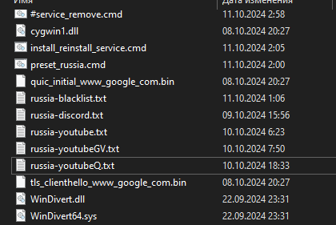

Качаем новый экзешник. !!! Он ниже, в архиве ZIP !!! Не важно, что вы там качали с гитхаба и насколько эта версия последняя. Последняя и нужная - здесь, лежит в архиве, внизу этого поста.
Суть - совсем убрать ключи --fake-gen X и --fake-from-hex <здесь длинная строка> и оставить только новый ключ с адресом гугла --fake-with-sni www.google.com . Остальное не трогать. Как это примерно должно выглядеть. Примерно! Не факт, что у вас лично этот конфиг заработает.
Если у вас браузер на Хромиуме (Google Chrome, Opera, Яндекс, Microsoft Edge) то обязательно отключить Kyber, если вы этого еще не сделали - инструкция.
Там же отключаем QUIC - в поиске ввести QUIC, найдется параметр, переводим в Disabled (по желанию, у многих он работе ютуба никак не мешает). В браузере Mozilla Firefox в about:config (ввести в адресной строке, согласиться с рисками) переводим параметр network.http.http3.enable в False. Да, сама GDPI умеет блокировать QUIC (ключ -q), но браузер все равно будет пытаться по нему соединиться, лучше эти попытки просто исключить.
Отключить в браузере все расширения, так или иначе связанные с проксированием/перенаправлением траффика (всякие FastProxy, Цензор трекеры, Обходы блокировок рунета, юбусты и прочее). Для верности еще и блокировщики рекламы отключить. Так как все это может мешать нормальной работе GDPI (пример), после ее настройки включите обратно. Перезапустить браузер.
FastProxy желательно вообще удалить, Цензор Трекер умеет то же самое, и подобного в нем никогда не было.
Расширения с проксированием траффика нужно будет настроить на исключение из обработки тех доменов, которые указаны в russia-youtube.txt
Убедиться, что в настройках системного прокси не прописано ничего лишнего.
P.S. Не забываем про остановку виндиверта (в командной строке от админа sc stop windivert ) и закрытие браузера перед правкой конфига в CMD.
goodbyedpi_x86_64_0411a42.zip (122,2 КБ) - для 64-хбитных систем (файл goodbyedpi.exe отсюда кидаем в папку x86_64 с заменой)
goodbyedpi_x86_0411a42.zip (162,0 КБ) - для 32-хбитных систем (файл goodbyedpi.exe отсюда кидаем в папку x86 с заменой)
!Из архива нужен только goodbyedpi.exe так как WinDivert не обновлялся!
Если не работает - задаем вопросы в этой теме, с указанием “Шапку темы прочитал(а), exe заменил(а)”. В противном случае ваш пост будет удален. Надоело тратить время людей пытающихся помочь, а в итоге оказывается у человека какой-нибудь фастпрокси включен, о котором он не удосужился сообщить. Или exe старый.
Дублирую пост тут, ибо в той теме потерли за флуд, сорян, под ночь я затуп 
Спасибо за инструкцию! Хотел бы уточнить, что --fake-from-hex лучше удалять в последнюю очередь (по крайней мере, если провайдер – МТС). Перебирал с 1 до 12, удалив сначала --fake-from-hex – ничего не работало. Вернул обратно с --fake-gen на значении 12 – всё заработало.
Может это изначально и подразумевалось, но я сразу и не понял. Ну и моё сообщение заодно послужит советом для других.
Спасибо за уточнение. А что у вас по итогу в CMD то получилось?
И работают ли другие нельзясайты, кроме ютуба?
Если речь идёт о .cmd, который использую для ютуба после всех махинаций, то скрин ниже:
Касательно других сайтов, смотрел только твиттер, он работал. Если нужно больше примеров, то покидайте – проверю.
Да не, я просто не понял, --fake-from-hex то у вас в итоге в CMD остался или нет? А то вы пишете, то убрал, то вернул - это сбивает
А, пардон. Вернул, без него не работает
Понятно, это печально. Будем надеяться, что его не забанят
Ну, в крайнем случае можно свой сгенерировать. Только сайт взять какой-нибудь другой.
Спасибо, тоже заработало только после того, как вернул --fake-from-hex
До этого перебирал fake-gen с 1 до 10 - видео не грузились, после снова зашел в тему, увидел ваше сообщение, вернул fake-from-hex и выставил fake-gen на 12 с расчетом на то, что буду понижать, а понижать не пришлось, заработало так
Провайдер ростелеком, свердловская область
Заработало, спасибо.
Приморский край, 40км от Владивостока, провайдер Подряд
сделал тоже самое, поставил fake-gen -12 в 1_russia_blacklist_YOUTUBE.cmd и заработало, тоже ростелеком
Новая особенность в таком жирном количестве фейков. Некоторые сайты (например quora.com в моем опыте) начинают отлетать с ERR_SSL_VERSION_OR_CIPHER_MISMATCH.
Я уже застрелиться готов…
Не могли бы вы подсказать куда его возвращать? Перебор fake-gen не работает. А --fake-from-hex где должен находится?
Да люди уже на гитхабе про это предупреждают. А как конфиг с 2 фейками - не работает?
Байкал Телепорт
–fake-gen 12
Не-а. Начинает работать только при 10.
РТК СПб, видимо там трубы швартуют конкретно. И ведь самое смешное, что только на один бедный ютуб.
Вот тут между ключем фейкген и блэклист
--fake-gen 5 --fake-from-hex 160301FFFF01FFFFFF0303594F5552204144564552544953454D454E542048455245202D202431302F6D6F000000000009000000050003000000 --blacklist
Спасибо заработало!
Тем у кого отваливаются другие сайты. Вы можете запихнуть в конфиг реальный фейк, а fake-gen убрать в принципе.
goodbyedpi.exe -e2 --reverse-frag --wrong-seq --fake-from-hex 16030101350100013103032474dd8b0f4622fa939cc131c29409fc141b2a0f2d579a1b1e3cdda47c690a0e20fd0b60a7f3fba08a064785815631a331ff7255926bb69a112043955e79de3749005c130213031301c030c02cc028c024c014c00a009f006b0039cca9cca8ccaa00c40088009d003d003500c00084c02fc02bc027c023c013c009009e0067003300be0045009c003c002f00ba0041c011c0070005c012c0080016000a00ff0100008c003300260024001d00208e51b6abf5494f4a2a4465610bb695b8dd5d4a7178dcc2604951c303776a770b002b00050403040303000a000a0008001d001700180019000b0002010000000013001100000e7777772e676f6f676c652e636f6d0010000e000c02683208687474702f312e31000d0018001608060601060308050501050308040401040302010203
Если не работает, поменяйте --wrong-seq на --wrong-chksum (или используйте их вместе). Также можете попробовать поменять --reverse-frag на --native-frag. Или -e2 на -e1.
Имейте в виду, что фейк может улететь в бан в итоге. Вам надо научиться генерить свой собственный, инструкцию выше кидали.
Либо придумывайте иные способы чтобы не отваливалось, типа set-ttl и т.д.
Поставил свой фейк на всякий + --fake-gen 12, заработало
Я прочитал здесь всё, сделал многое, но ни один способ вообще мне не помог. Я уже 2 часа сижу, всё пытаюсь вникнуть, а видео на ютубе до сих пор не грузятся
Надеюсь хоть не EXE запускаете, а то бывали тут… гении )
EXE я вообще даже не трогал… Я даже сгенерировал фейк, тоже не сработало
Покажите, что у вас сейчас в CMD который запускаете. WinDivert останавливали, браузер перезапускали? Какие расширения стоят в браузере?
Что за WinDivert? Я в cmd проверял, у меня нет никакого WinDivert
Вы гайд по подбору рабочих параметров по диагонали читали? sc stop windivert в ком. строке от админа - такое там видели?
Я про это и говорю, я вводил и мне выдало ошибку, мол нет такого у меня
Такого быть не может, если вы хоть раз запускали любой CMD. Покажите свой CMD cкоторым вы пытались смотреть ютуб. Окно программы (на скрине сверху которое) вы сворачиваете, надеюсь, а не закрываете?
Всем привет. Решил тоже отписаться, т.к. ситуация с --fake-gen мне лично пока не понятна. После того, как Ютуб вчера вечером в очередной раз отвалился, убил очередные 3 часа на перечитывание тем.
Вроде бы сделал вывод о том, что fake-from-hex вообще использовать не надо, т.к. он цепляет статичный пакет.
Убрал его из параметров и быстренько протестировал со значениями --fake-gen 2 (результат отрицательный) и --fake-gen 13 (то же самое).
После чего вернул первоначальный --fake-from-hex , который у меня тот же что и у всех, был в командном файле ALT скачан в последнем апдейте. Т.е. ничего не генерил и не менял.
Просто вернул его.
Результат: с --fake-gen 13 заработало!
Тот конфиг, который отвалился вчера, был дефлотным, т.е. со значением --fake-gen 5.
Вывод, который я сейчас делаю: команда --fake-gen без статичного пакета сама по себе не работает.
Моё предположение: видимо, эта команда генерит какие-то мусорные пакеты и меняет кол-во добавленного мусора (на указанное value), но без статичного пакета мусор как раз сам по себе не валиден.
Я потом конечно сгенерю себе свой уникальный --fake-from-hex, как здесь было показано на картинке, но пока и так работает!
Провайдер мгтс (мск) , запад.
P.S. Она не вставляет 13 раз заданный --fake-from-hex, как можно было бы понять, читая тему. Она вставляет 13 своих пакетов, а потом добавляет его. Потому что в консоли результат видим 14 пейлоадов:
Fake requests, custom payloads: 14
Fake requests, resend: 1
Max payload size: 1200
Opening filter
Filter activated, GoodbyeDPI is now running!
Работает. У меня конфиг из шапки - все нельзясайты работают (я всякие пробовал). Ютуб проверить не могу, у меня он работает через QUIC в полном объеме, без помощи GDPI
Мануал не совсем понятен да, но цифра в --fake-gen означает сколько случайно сгенерированных фейков надо прицепить к пакету в режимах, которые задействуют Fake Request Mode
Я полагаю что успех от сайта и от настроек РКНовской коробки зависит. Но вообще вы правы. В том фейке, который дефолтный из 116 символов, запихнуты всякие штуки типа версии протокола, домена и т.п. Если просто нагенерить рандомных фейков они не будут валидным clienthello. С другой стороны, достаточное кол-во повторов могут банально заддосить ТСПУ и оно пропустит вас, так что иногда может работать и без фейк-фром-хекс.
Я там где-то предлагал вообще вариант без фейк-ген, потому что там тупо весь фейк целиком валидный, от и до.
Сорри, но такая проверка для меня особой ценности не представляет. Вы писали, что у вас Ютуб и так работает, а меня наоборот, кроме Ютуба ничего не интересует, остальные сайты и так открываются (включен антизапрет в Firefox, пока жалоб нет, на этот сайт например захожу просто без лишних телодвижений).
Т.к. вы не можете на своём Ютубе проверить мои настройки, но вам кажется, что --fake-gen работает, попробуйте просто логически объяснить тогда, почему в Москве на ростетекоме и мгтс (мтс) не работает Ютуб с --fake-gen без статичного пакета.
Для эксперимента, попробуйте --fake-from-hex 00000000 Или --fake-from-hex 160301FF Если решите проверить - проверьте плиз на ютубе и на каком-нибудь заблоченном сайте, типа этого.
Сделаю предположение, что видосы на ютубе не будут работать, а сайты заблоченные будут.
Потому что ваша коробка проверяет формат client hello по строгой схеме вам же написали. А моя - нет, там можно любую херню нагенерить и все прокатит.
Вот вам и тест уже подкинули. Подозреваю, что перестанет у вас все работать.
А возможно у вас проблема вообще не в тех режимах Fake Request или пакеты не так режутся.
РТК МСК, на настройках -9 --fake-gen 13 работал Ютуб но отваливался Твиттер, потыкал настройки из этого сообщения, Твиттер вернулся на настройках -e2 --reverse-frag --wrong-seq --wrong-chksum --fake-from-hex, но теперь перестало пускать на сайты с защитой Cloudflare, бесконечно (и безрезультатно) проверяется моя человечность.
Это из-за wrong-chksum, видимо. Клаудфлейр их принимает. Попробуйте убрать.
Помогло, спасибо!
Комбинировать разные режимы Fake Request вообще так себе идея, но раз автор их комбинирует в -9 и -8 видимо, это кому-то нужно ) В большинстве случаев достаточно одного из режимов. Плюс --wrong-chksum часто сайты ломает (всякие Malforming Hello, SSL Error и прочие ошибки), если пакет долетает до сервера.
Отмена, насчёт “помогло” я поспешил. Без --wrong-checksum отлетает Ютуб, сразу как только я вернул чексум у меня отлетели все сайты, после переустановки скрипта безуспешно пробовал удалять --wrong-seq и --fake-from-hex, по итогу ввёл старый рабочий вариант с чексумом и заработало всё, включая Cloudflare. Начинаю терять хватку над реальностью.
Билайн
start "" goodbyedpi.exe -6 -s -r -m --fake-gen 2 --blacklist ..\russia-blacklist.txt --blacklist ..\russia-youtube.txt
- не работает.
start "" goodbyedpi.exe -f 2 -e 2 --auto-ttl --reverse-frag --max-payload -q --fake-from-hex 16030102310100022d0303f5666b5fcd1e70fd1ee8edd29f28a2a74a7b820ee32720c763eba2130d771a7920ece4586cba773dd9ea27cf2def6786588fd518dee0d017c820fa3f3d437c99a400200a0a130113021303c02bc02fc02cc030cca9cca8c013c014009c009d002f0035010001c40a0a0000002d000201010017000000000013001100000e7777772e676f6f676c652e636f6d0010000e000c02683208687474702f312e31001b0003020002000a000a0008baba001d0017001844690005000302683200230000fe0d00fa0000010001b50020772d07a30cc6c346612a137ab8c689f34fcf60245ae8c1a338a6b87b739e493d00d059f695fd21c42b3f3da3b7db4d9e207dc2b8b794756a4b6c27685e5e721163438b9184b07b630e40234d06d6d5aae7dac4430f1082d05d6eef515bbc55203862794c7862fd8b0ae62564b1cc97b8c501bab12d6a8c72a1945cbda412b37756591a219c3ffcd50acbba0d9412f05e8d5b45db939aa8cfc1ea2e80b3c3c57835d15cd97cef6df0889a1c47a95deb52a8cbd2ab36389f8dcc5e6ab8fa10ed80339e66bc993b007c443617e801fb03dd2197b81ac354270107627a26bb9c42720a96409c25cefca043b6f758b14f28d322900033002b0029baba000100001d00204b77b7048c7945265a77842cb47131023d6ff19c32ff476fb872cd93f7917b07000500050100000000000b0002010000120000ff01000100000d0012001004030804040105030805050108060601002b0007062a2a03040303eaea000100 --blacklist ..\russia-blacklist.txt --blacklist ..\russia-youtube.txt
- этот работает. hex я взял из wireshark после коннекта к google.com. Он наверняка улетит в бан через какое-то время. Для борьбы против бана статичных хексов режим
--fake-from-hexдолжен научиться рандомить значения полей Random, Session ID, encrypted_client_hello:Enc, encrypted_client_hello:Payload, key_share:x25519:KeyExchange (на скрине) и рандомить порядок Extensions.
Если опять сломается - можно попробовать не убирать chksum, а присобачить ко всей этой конструкции --auto-ttl или --set-ttl.
Решил то же поставить 12, заработал, Дом.ру
И если у кого есть возможность протестить вот такой конфиг и отписаться (работает/не работает) - велкам.
start /MIN "" goodbyedpi.exe -6 -s -r -m --fake-gen 2 --blacklist ..\russia-blacklist.txt --blacklist ..\russia-youtube.txt
конекретно ютуб с данным кфг работает довольно таки хорошо, воспроизводит видео бысто или чуть с небольшой задержкой.
как обстоят дела с другими сайтами не могу сказать, т.к. убрал строку “–blacklist …\russia-blacklist.txt”.
Также Приморский край, провайдер “Подряд”. Изменил --fake-gen 5 на --fake-gen 12 и заработало.
В поставке goodbyedpi-0.2.3rc3-2 уже идёт батч с --fake-from-hex. Стало быть таким и пользуюсь, как наверное и многие.
Тогда откорректируйте инструкцию указанием исключить из батча параметр --fake-from-hex и его шестнадцатеричный аргумент.
Не понял зачем так, но протестировал и ТыТруба не ожила.
Прошёлся по всем аргументам параметра --fake-gen от 1 до 12 включительно и не получил результата.
Убрал --fake-gen, взял TLS v1.2 байтстрим от https://www.pochta.ru (хотел сначала от kremlin.ru, но он не поддерживает шифрование совсем  ). сунул в
). сунул в --fake-from-hex и не получил результата.
Мой Ростелеком зверюга. Я, как полагается, в отчаянии.
P. S.
Объединил --fake-gen 12 --fake-from-hex с поштой — заработало.
@KDS Вы наверное ошиблись, решив что вместе они не работают.
Может быть это уже имеет место быть…?
Нам бы @ValdikSS в тему для уточнения имплементации.
Тоже МГТС ЗАО, поведение полностью аналогичное — сам по себе --fake-gen X не работает с любыми значениями, после возвращения --fake-from-hex со стандартным или собственным хексом YouTube снова работает.
Для избавления от --fake-from-hex в моём случае помогло --wrong-seq и изменение --fake-gen со стандартных 5 на 7 или выше. Видел, что есть тема о блокировке --wrong-seq, но пока такая комбинация на МГТС работает без каких-то явных проблем. Посмотрим, насколько долго этого хватит.
Итоговая конфигурация: -5 -e1 -q --wrong-seq --fake-gen 7
-5 -e1 -q --fake-gen 13 --fake-from-hex
МГТС Москва. Заработало
ТрансТелеКом заработал на сочетании
--wrong-chksum --fake-gen 13
fake-gen ниже 13 не работает, только больше, до 20-25
Может быть это уже имеет место быть…?
Нам бы @ValdikSS в тему для уточнения имплементации.
start "" goodbyedpi.exe -f 2 -e 1 --auto-ttl --reverse-frag --max-payload -q --fake-from-hex 1603010200010001fc0303aad4b7037f9974e5a88822519c11b957b2adbdac538e0d4ee6250b74a40512fc2083d3fffba3e048c41be0e4c811f1a4a2b7b44d17c7a21a9a6096f45803e5638000202a2a130113021303c02bc02fc02cc030cca9cca8c013c014009c009d002f003501000193baba000000230000000d0012001004030804040105030805050108060601fe0d00ba0000010001c30020e457fb5b74ab4d29ff730f84a04d5d621a5a9f063d14c218a12102bd6ec7f4490090e44428c8e7b77caf56979045370316feb3d926b952ef54cd13a25acec87ce9282c6ebb05908f8a42050a5566124f2b488ba43bb1525a1a41fa6fd3d1e955c04b0c9edcb1c1c8d110f537ee93a58991ec872fd6de5815eaf126c29d24aa7fc391f277222f06a6cf3ec47e689a57ed3884d7f5d33f6814bc6ee68da1a675f2092cf38298e47d0f4963be6725ac51f71f97ff01000100001b0003020002000a000a00083a3a001d00170018002b0007066a6a03040303002d00020101001200000010000e000c02683208687474702f312e3144690005000302683200170000000b0002010000000013001100000e7777772e676f6f676c652e636f6d0033002b00293a3a000100001d002076b19eb9b1c934d6b2d45ea9352d81d3bf60b85d1b7d9caad9a9f621e8168f7c0005000501000000001a1a0001000015000b0000000000000000000000 --blacklist ..\russia-blacklist.txt --blacklist ..\russia-youtube.txt
Нет, это не так, потому что если в этой рабочей команде заменить --fake-from-hex <www.google.com> на --fake-gen 1 (был 1 пейлоад и стал тоже 1 пейлоад), то ютуб перестаёт работать.
Последнее время сижу с Zapret, но сейчас проверил GDPI, у меня работает с -6 --fake-gen 12 --fake-from-hex на ТТК.
Чисто технически оно заработало и на -9 --fake-gen 13, но я решил отойти от пресетов. Вроде как чем меньше лишних параметров, тем лучше.
-6 -s -r -m --fake-gen 2
ростелеком - работает, но видосы спустя несколько секунд начинают загружаться
Сидел экспериментировал…
Кажется понял как те параметры вместе работают: просто набиваются в массив n случайных payload’ов и к ним же статичный(-ые), который ввели.
Оказалось что 12-gen + 1-hex у меня работал просто потому же, почему заработал 13-gen.
Ну то есть дело в количестве, а не конкретном payload’е и на 12-и останавливаться не стоило.
То ли ещё будет…
P. S.
Мутнятина возникает ещё из-за того что если я с годной настройкой GDPI начну успешно грузить видео, то после даже вырубания GDPI это конкретное видео продолжает грузиться полноценно, включая догрузку буффера, которого нет у меня в кэше, даже из новых браузеров. Приходится новое видео для каждого теста брать…
Очень интересно было бы протестировать с соседом, открывают ли для всей подсети то или иное видео после того как я снасильничал к нему доступ. Но не с кем…
Пояснение для чего вообще нужен валидный hex.
РКН собрали некий перечень айпишников гугла. Просто так они их заблочить не могут, потому что отвалятся штуки типа gmail, плеймаркета, гугл документов и т.п.
Поэтому они пытаются прикрутить на эти айпишники какие-то иные, более изощренные правила.
В частности, проверяется домен в фейке. Если его нет или он не из CDN гугла - не пускает.
Поэтому в дефолтном hex используется www.google.com.
И если вы генерите свой hex - нужно брать сайты гугла: docs.google.com drive.google.com translate.google.com и т.д.
Чистым fake-gen без всего или невалидным фейком хз почему иногда пробивается. Видимо это что-то из разряда “заддосить ТСПУ” достаточным количеством мусора.
Ну и на некотрых провайдерах могут быть блокировки мягче.
Мдя. Реально у всех разные блокировки какие-то. С fake-gen 5 из youtube_alt перестали сегодня открываться видео, понизил до 4, заработало.
Я использовал такой алгоритм для тестирования разных настроек:
- Закрыть окно gdpi
- sc stop windivert
- Изменить .cmd
- Запустить .cmd
- В хроме нажать Ctrl+Shift+R (это hard reload).
Да всё так же. sc stop windivert внёс перед start goodbyedpi и запускал батч из админского терминала.
Обновление вкладки мимо кэша ничего не меняло.
Может там ТСПУ временные исключения динамически создаёт для оптимизации, когда доступ был обеспечен, дабы не перегреться… Хрен разберёт, когда у них всё меняется постоянно.
–fake-gen 12 работает, Ростелеком Ставрополь , спасибо! Роскомпозор ты не заеб@лся? ждём следующий твой ход!)
Обязательно, так и сделаю, просто вчера (а точнее, сегодня утром) было уже 5 утра, когда я это писал. Сегодня вечером обязательно переберу все возможные варианты, в т.ч. с “левыми” fake-hex (чисто чтоб убедиться, что с ними ютуб не пашет), а также необходимо определить минимальное значение --fake-gen, с которым схема начинает работать. Т.к. 13 было взято просто из воздуха. Мне пока кажется, заблочили просто тупо по длине пакета и возможно с --fake-gen 2 тоже заработает.
Спасибо за ценную инфу, обязательно протестирую у себя! Мне казалось, --wrong-seq на МГТС уже не взлетит.
благодарю, заработало как раньше
А можно ткнуть пальцем, где я сказал, что вместе они не работают? Я сказал, что у некоторых все отлично работает и без фром-хекс, например у меня.
Вот это бы да, совсем не помешало бы. Чтобы расставить все точки над i а то каждый понимает так как понял.
Вот это хорошая конфигурация, еще добавить бы --set-ttl чтобы фейки дальше коробки не летали и было бы вообще хорошо.
У меня новые видео работают, а часть старых перестали, которым лет по 6+. Через плагин в браузере открываются все.
Посмотрите в консоли браузера (нажать F12 - Network (Сеть), отфильтровать по googlevideo.com) на какой rr****** браузер лезет за этими видео и что с ним не так.
rr1---sn-jvhnu5g-n8ve7.googlevideo.com
rr14---sn-n8v7kn7r.googlevideo.com
Написано, что failed, canceled
Попробуйте их через hosts заблокировать
0.0.0.0 rr1---sn-jvhnu5g-n8ve7.googlevideo.com
0.0.0.0 rr14---sn-n8v7kn7r.googlevideo.com
После сохранения измененного hosts выполните в ком. строке от админа - ipconfig /flushdns
Браузер перед изменением закройте
МГТС, Москва:
-9 -e 1 -f 1 --fake-gen 12 --fake-from-hex 160301FFFF01FFFFFF0303594F5552204144564552544953454D454E542048455245202D202431302F6D6F000000000009000000050003000000
@KDS Выставил 12 и Ютуб заработал, но перестал работать блэклист. Запускаю cmd блэклист и перестает работать Ютуб. У меня ТТК
Спасибо за наводку) В ходе дополнительных экспериментов выяснилось, что для YouTube на МГТС достаточно следующего:
-e1 -f1 -q --native-frag --set-ttl 3 --fake-gen 2
С флагом --auto-ttl, который изначально и был в пресете, тоже всё ОК работает. Даже --wrong-seq и --wrong-chksum не потребовались — их можно поставить вместо (или даже вместе) с --auto-ttl и/или --set-ttl X, как это сделано в пресетах сейчас.
Прочие нюансы, которые удалось обнаружить:
- C
-e2не работает вообще ничего, с 1 и 3 норм. 10 — сразу сбрасывает соединение. Другие значения пока не проверял. -f2можно заменить на-f1, разницы нет.- С
--native-fragи--reverse-fragтворится что-то непонятное — с нативной фрагментацией работает YouTube, но не открывается часть других сайтов (проверял на Твиттере без авторизации). Без неё или с--reverse-fragначинают открываться прочие сайты, но не работает уже YouTube — сам сайт работает норм, но до GGC коннекта нет. Видимо, кто-то очень сильно захотел сломать универсальные пресеты) - TTL ниже 3 не функционирует. Возможно, в некоторых сетях потребуется значение выше.
fake-genтакже можно поставить любой, особой разницы не заметил. Работают, в том числе, и популярные значения вроде 5, 12 и 13.
У меня работает с обратной фрагментацией на 2ке, TTL 3 и Fake 6, на 5 утром перестал работать, вчера еще работало. У жены просто на нормальной фрагментации работает, на старой версии Launcher’a, без всяких
ухищрений.
Уже ничего не работает. Скорее всего провайдер только что изменил что-то. В начале писалось в ютубе, что нет подключения, а после возобновления работы гудбай вообще перестал работать. Буду в настройках копаться.
Спасибо за развернутый ответ.
-f - это HTTP его вообще можно не указывать, подавляющее большинство сайтов все равно работают на HTTPS
–set-ttl лучше чем аутоттл, есть случае замедления загрузки некоторых сайтов при использовании последнего
Если с ниже 3 не функционирует, значит ближайшая коробка ТСПУ стоит в 3-х прыжках (хопах) от вашей сетевой карты
fake-gen - чем меньше, тем лучше, чтобы мусор в сети не плодить
-e вряд ли стоит использовать больше 3 - ни к чему хорошему это обычно не приводит.
С фрагментацией непонятно почему у вас так, разве что где-то на пути стоит еще одна коробка
Заработали все видео с Amount of packets 12, до этого 5 стояло. В hosts ничего добавлять не пришлось.
А твиттер почему не открывается уже дней 5? Остальные сайты отрываются, а этот нет. Долгая загрузка и в итоге “Время ожидания соединения истекло”.
Да вроде все работает, с твиттера перекидывает на X и загружается нужная страница.
У вас, скорее всего, пров перенаправляет DNS запросы на нерабочий IP используйте --dns-redir или DoH в браузере
Я может чего то не понимаю, но у меня не один cmd не работает какие бы цифры после - не подставлял. Кто разбирается в этом может подсказать что делать?
-f - это HTTP его вообще можно не указывать, подавляющее большинство сайтов все равно работают на HTTPS
Ага, прочитал про это в документации и тоже подумал, что явного смысла в нём сейчас нет. Решил оставить для универсальности — мало ли когда и кто захочет зачем-то передавать данные именно по HTTP)
С фрагментацией непонятно почему у вас так, разве что где-то на пути стоит еще одна коробка
Вот это самый интересный момент. Ещё во время первого моего коммента подобных нюансов с фрагментацией не было, работало и то, и другое, можно было вообще полностью её убрать из конфига. Сейчас, видимо, добавили ещё один ТСПУ специально для YouTube — такие объёмы фильтрации трафика явно не всё оборудование выдержит. Выше был похожий по симптомам репорт, но уже на ТТК:
Выставил 12 и Ютуб заработал, но перестал работать блэклист. Запускаю cmd блэклист и перестает работать Ютуб
Ещё понаблюдаю за ситуацией в течение дня — вероятно, к вечеру опять всё поменяется и подобных особенностей не будет.
Как вариант - использовать запуск 2-х копий GDPI из одного CMD с разными парамерами для блэклиста ютуба и большого блэклиста. Подробнее тут, например. Или создать 2 службы с разными именами и разными параметрами
Все это мы уже проходили )
спасибо, (пока) помогло. ютуб заработал, но превьюхи нафиг отвалились, тамбнейлы оч долго теперь грузятся. “мой песдюк” теперь перед каждым запросом тамбнейла видео на странице отправляет по N фейковых пакетов? вроде убирал ytimg из блек листа, перезапускал все по уму, но легче не становилось.
Для начинающих нет ли мануала как это сделать?
В гугле напишите “Включить DoH в браузере (название вашего браузера)”
Для GDPI - просто добавить --dns-addr 77.88.8.8 --dns-port 1253 --dnsv6-addr 2a02:6b8::feed:0ff --dnsv6-port 1253 в любое место в CMD между exe и --blacklist
Пример:
А в мозилле? С ней не понятно.
Попробовал --fake-gen 12 как было написано здесь и тытруба действительно заработала как прежде. Провайдер: Билайн.
Настройки - Приватность и защита - мотаем в самый низ на DNS over HTTPS - ставим пипку на Максимальную защиту - Выбрать поставщика: Другой URL - ниже вписываем https://dns.comss.one/dns-query
Перезапускаем браузер
Благодарю) Как раз наткнулся на пост в соседней теме и собирался так сделать. Оставлю заготовки для запуска двух сервисов с разными параметрами здесь — вдруг ещё кому-то пригодятся:
service_install_russia_blacklist_YOUTUBE_ALT.cmd
PUSHD "%~dp0"
set _arch=x86
IF "%PROCESSOR_ARCHITECTURE%"=="AMD64" (set _arch=x86_64)
IF DEFINED PROCESSOR_ARCHITEW6432 (set _arch=x86_64)
echo This script should be run with administrator privileges.
echo Right click - run as administrator.
echo Press any key if you're running it as administrator.
pause
sc stop "GoodbyeDPI-YT"
sc delete "GoodbyeDPI-YT"
sc stop "GoodbyeDPI-RU"
sc delete "GoodbyeDPI-RU"
sc create "GoodbyeDPI-YT" binPath= "\"%CD%\%_arch%\goodbyedpi.exe\" goodbyedpi.exe -e1 -f1 -q --native-frag --set-ttl 3 --fake-gen 2 --blacklist \"%CD%\russia-youtube.txt\"" start= "auto"
sc description "GoodbyeDPI-YT" "Passive Deep Packet Inspection blocker and Active DPI circumvention utility - YouTube blacklist"
sc start "GoodbyeDPI-YT"
sc create "GoodbyeDPI-RU" binPath= "\"%CD%\%_arch%\goodbyedpi.exe\" goodbyedpi.exe -e1 -f1 -q --reverse-frag --set-ttl 3 --fake-gen 2 --blacklist \"%CD%\russia-blacklist.txt\" start= "auto"
sc description "GoodbyeDPI-RU" "Passive Deep Packet Inspection blocker and Active DPI circumvention utility - Main RU blacklist"
sc start "GoodbyeDPI-RU"
POPD
service_remove.cmd
echo This script should be run with administrator privileges.
echo Right click - run as administrator.
echo Press any key if you're running it as administrator.
pause
sc stop "GoodbyeDPI-YT"
sc delete "GoodbyeDPI-YT"
sc stop "GoodbyeDPI-RU"
sc delete "GoodbyeDPI-RU"
sc stop "WinDivert"
sc delete "WinDivert"
sc stop "WinDivert14"
sc delete "WinDivert14"
К сожалению не помогло, еще пишет, что ошибка соединения, типа незащищенное соединение.
Это где такое пишет?
Надеюсь, вы не в 2 места это добавили? Надо либо в браузер, либо в GDPI
слева от адресной строки, где “замочек” обычно бывает, когда защищенное соединение.
С 12 видео работают, но теперь через несколько секунд в ютуб пишет “Нет подключения к Интернету”
P.S. Вроде бы отпустило, теперь всё нормально работает. Все видео проигрываются,связь не обрывается.
P.P.S. К сожалению связь с ютубом при настройке 12 продолжила обрываться, только стала дольше держаться. Печаль.
Вот мне как раз интересен момент - на мтсе с батником youtube-alt проксируются сайты из перечня russia-blacklist.txt, а на другой системе с местным провайдером - ни в какую, только ютуб идёт. Пробовал разные пресеты gdpi - пока без толку. Если не забуду, на неделе создам отдельную тему, заодно потестирую там Ваш конфиг из шапки.
Поставил Censor Tracker все робит теперь.
Позорище какое-то. Шизики во власти больше не знают чем заняться, они сидят ютуб блокируют, непонятно зачем.
–fake-gen 12 - пока работает на домсру. Но судя по тенденции ненадолго.
Да нет, это понятно =) Аддоны выручают, мне интересна именно разница в работе gdpi в сетях разных провайдеров.
Помогите неработает ютуб опять не знаю что делать и не разбераюсь в cmdшках подскажите что делать
уже и не поймешь, нужно сидеть и подбирать свой осиновый кол в вампирский дпиай
по идее, тспу насколько я понимаю - это что то централизованное и должно везде работать одинаково, оно для этого и ставилось, чтобы провайдеров держать за крючок, и поидее упраляется удаленно.
Вы можете даже только по этому форуму легко заметить, что случаи блокировок очень разнятся от провайдера к провайдеру, от региона к региону. У некоторых на данный момент ютуб вообще доступен “как раньше”.
Так я об этом же, вроде у всех должно быть одинаково, но почему то по разному.
А кто за вас разберется? ) Внимательно прочтите начальный пост этой темы. Там по шагам расписано, как править cmd.
В данный момент у многих работает , если прописать такой конфиг (заместо старого)
start "" goodbyedpi.exe -9 -e1 --fake-gen 16 –fake-from-hex f1c48aca82bf0716fe28fc31c87e259b84a489946d5c819809a31471f3a26e4bfb09bcaa8a3fbdabae152e0f1db41f1c4952d480204fc26d2b25 --set-ttl 2 --blacklist ..\russia-blacklist.txt --blacklist ..\russia-youtube.txt
Не работает - пробуйте менять значение -9 на -6 или -5 , убрать -e1 также менять значение --fake-gen от 5 до 30, --set-ttl от 2 до 8
Если что-то не ясно - задавайте конкретные вопросы.
удалять всю надпись из цмдешки?
не, 1_russia_blacklist_YOUTUBE_ALT.cmd открой блокнотом и вставь туда в замен того что есть, или вручную исправь отличные параметры, потом запускай двойным кликом
Смотрите, целиком cmd выглядит так:
@ECHO OFF
PUSHD "%~dp0"
set _arch=x86
IF "%PROCESSOR_ARCHITECTURE%"=="AMD64" (set _arch=x86_64)
IF DEFINED PROCESSOR_ARCHITEW6432 (set _arch=x86_64)
PUSHD "%_arch%"
start "" goodbyedpi.exe -9 --fake-gen 5 --fake-from-hex 160301FFFF01FFFFFF0303594F5552204144564552544953454D454E542048455245202D202431302F6D6F000000000009000000050003000000 --blacklist ..\russia-blacklist.txt --blacklist ..\russia-youtube.txt
POPD
POPD
Вам нужно менять только строку (точнее, параметры в строке)
start "" goodbyedpi.exe -9 --fake-gen 5 --fake-from-hex 160301FFFF01FFFFFF0303594F5552204144564552544953454D454E542048455245202D202431302F6D6F000000000009000000050003000000 --blacklist ..\russia-blacklist.txt --blacklist ..\russia-youtube.txt
Ничего больше менять НЕ нужно.
можно без cmd, отправить ярлык на рабочий стол и в свойствах ярлыка после
goodbyedpi.exe добавить аргументы
Можно , но это менее наглядно. Как менять потом параметр в таком ярлыке? Строка запуска то будет очень длииинной, править ее неудобно, в cmd удобнее гораздо.
У меня --set-ttl --fake-gen --fake-from-hex пока что лучше всего работают. Без фрагментации
да норм, копипаст и готово, плюс в том, что можно закрепить ярлык на панели задач и будет красиво. разумеется без блок листов
Я вот читаю README.md и там написано:
--fake-from-hex <value> Load fake packets for Fake Request Mode from HEX values (like 1234abcDEF).
This option can be supplied multiple times, in this case each fake packet
would be sent on every request in the command line argument order.
--fake-gen <value> Generate random-filled fake packets for Fake Request Mode, value of them
(up to 30).
Т.е. во-первых, fake-gen очевидно не может превышать 29, во-вторых - почему в батниках fake-gen совмещен с fake-from-hex? Кто код читал, может объяснить а то тут тыкаются вслепую, как котята. Судя по коду, fake_add вызывается дважды - сначала на fake-from-hex, потом на fake-gen. Т.е. таким образом уходит несколько пакетов подряд - первый через hex, последующие случайные, причем параметр в fake-gen это не seed, а КОЛИЧЕСТВО случайных пакетов, я правильно понимаю (см. fake_load_random(unsigned int count…) ?. @VladikSS?
У меня с этими параметрами не запуская, ярлык с cmd флашиться в таскбаре и все. В чем проблема может быть?
@KDS Выставил --fake-gen 12 и Ютуб заработал, но перестал работать блэклист. Твиттер и Инстаграм не открываются, но форум почему то грузит. Запускаю cmd блэклист и перестает работать Ютуб. Типо нужно что то одно
А потому что не надо через ярлык делать) Запускайте нормально через cmd. Ну или сделайте лучше ярлык на ваш cmd, если очень нужно.
Спасибо, добрый человек, беру. Не МГТС, но у меня работает.
Я через cmd и запускал, я имел ввиду иконку cmd когда говорил про ярлык
upd: не запускается из-за этой строки “–fake-from-hex”
upd2: пока работает с этими настройками: " -6 -e1 -q --fake-gen 29"
С утра ютуб перестал работать - поменял число fake gen и сгенерировал hex: все стало работать. Вот щас вечером опять стал тормозить, мне еще раз это повторить, или есть еще варианты?
У меня вчера работал с 5 пакетами, сегодня с 6, а сейчас вот 6 не катит уже, а 12 работает. Самое забавное, что с нормальной фрагментацией работает на изи в любом случае.
Щас на МГТС вот такой конфиг нащупал
start “” goodbyedpi.exe -5 -e1 -q --fake-gen 22
ну и hex свой ставьте
Я понял, почему перестало работать на Fake gen 6, у меня были включены поддельные запросы TCP SEQ/ACK и я их вырубил вечером, но когда они включены, работает на Fake gen 6, когда они выключены, только от Fake gen 12 и выше значение прокатывает. Включил обратно, видимо, ТСПУ отменили полную фильтрацию по SEQ/ACK.
Пальцем нельзя, а цитатой я ткнул выше.
Мне ровно так же показалось.
Все правильно понимаете, это количество. И сейчас по сети летает гумно из 30 фейков - GGC трещат, пердят но не сдаются 
Совмещены они потому, что у некоторых не работали сайты на TLS 1.2 без фром-хекс, автор захотел сделать универсально и добавил фром-хекс.
Как в воду глядел, как говорится, теперь без фром=хекс у многих не работает даже ютуб, не говоря уж о других нельзясайтах. А у некоторых эти сайты наоборот отвалились
@Erquint Ладно, если для вас “Смысла нет” и “не работают вместе” - одно и то же, что ж я могу поделать? )
Приехал после с дачи и опять слом. Если кому поможет мое решение то вот:
start /MIN “” goodbyedpi.exe -5 -e1 -q --fake-gen 13 --fake-from-hex 160301FFFF01FFFFFF0303594F5552204144564552544953454D454E542048455245202D202431302F6D6F000000000009000000050003000000 --blacklist …\russia-blacklist.txt --blacklist …\russia-youtube.txt
я протестировал сегодня несколько настроек на трёх ПК и могу сказать интересную вещь: на каждом ПК с разными, но валидными HEX (которые взял из Wireshark для трёх разных не блокируемых / легитных сайтов) и выявил следующее. Параметр --fake-gen даёт рабочий результат:
на Windows 11 с процессором i5-12450H при значении 6 и выше
на Windows 11 с процессором i7-9700kf при значении 10 и выше
на Windows 10 с процессором e3-1271 v3 при значении 12 и выше
Может я что-то фантазирую (вполне возможно), но мне кажется, что параметр --fake-gen или работает по-разному на разных процессорах, или это всё влияет от скорости вычисления (если вы посмотрите на производительность моих ЦП, то заметите, что чем современнее и быстрее ЦП, тем меньшее значение ему необходимо. По этой же причине я спрашивал вчера про нагрузку на ЦП - у меня закралось подозрение, что GoodbyeDPI чувствителен к вычислительной мощности ПК, и потому на разных устройствах он может давать разные результаты, даже если как в моём случае - все 3 ПК находятся в одной комнате).
Прошу обратить внимение админа на данный комментарий, возможно он поможет в будущем создать автоматическую (но рабочую) конфигурацию при запуске, исходя из возможностей ЦП
не работает
isp: Ростелеком (Юг)
На Xeon E3-1270v2 на значении 2 ) Что-то не сходится
Продолжаю тесты.
Результат №1: минимальное значение, с которым работает Ютуб: --fake-gen 12
Никакие там 2, 4, 10, 11 - видео не грузят. Как только доходим до 12, как по волшебству видео начинает работать.
Результат №2: заменил длинный 116 значный fake-from-hex на предложенный @Ori для тестирования вариант 160301FF. Ютуб заработал. Провайдер мгтс, запад Мск.
Объясните мне теперь кто-нибудь логику того, как работает блокировка ркн. Получается, пока что никто даже не анализирует содержимое статичного фэйк пакета. Зато, если опцией --fake-gen мусорных пакетов сгенерить меньше 12, то почему-то не работает (хотя раньше работало с 5). Я в сетях и в http(s) нуб полный, так что как можно более простыми словами. )))
А я пока протестирую конфигурацию с wrong-seq, предложенную ранее человеком также с мгтс запад.
Скинь рабочий конфиг
Это реально очень странно.
Коробки ТСПУ, вроде как, должны централизованно контролироваться РКНом, а на практике на разных провайдерах - по разному. Где-то блокировки мягче, где-то жестче. Где-то их вообще нет… (косой взгляд в сторону @KDS).
У меня вот записан список из 4 серверов, на которых я встретился с особо жесткими блокировками, и я обычно на их основе стратегии тестирую. Если там работает - скорее всего, будет работать везде.
curl -svo NUL https://rr2---sn-4axm-n8vs.googlevideo.com
curl -svo NUL https://rr2---sn-gvnuxaxjvh-o8ge.googlevideo.com
curl -svo NUL https://rr3---sn-ug5onuxaxjvh-p3ul.googlevideo.com
curl -svo NUL https://rr6---sn-ug5onuxaxjvh-n8v6.googlevideo.com
А что, более новый i5 мощнее старого i7? Ну это вряд ли.
start "" goodbyedpi.exe -5 -e 1 --fake-gen 12 --fake-from-hex 160301FF --blacklist ..\youtube.txt
А точно разница лишь в процессорах? Может, там сетевые карты/настройки сети разные?
я тоже думаю что это более правильный подход, однако на своих тестах я использовал HEX из “скрепных” стайтов, относящихся только к РФ, Ютуб с ними работает (возможно, перестанет, поживём-увидим)
Ну, я выше кидал некоторые проблемные сервера, на которые обычно так просто не пробиться. Попробуйте через командную строку от них ответ получить со своим фейком. Поделитесь своими результатами тут, мне интересно. Если вам не лень, конечно.
curl -svo NUL https://rr2---sn-4axm-n8vs.googlevideo.com
curl -svo NUL https://rr2---sn-gvnuxaxjvh-o8ge.googlevideo.com
curl -svo NUL https://rr3---sn-ug5onuxaxjvh-p3ul.googlevideo.com
curl -svo NUL https://rr6---sn-ug5onuxaxjvh-n8v6.googlevideo.com
Тут ещё стоит упомянуть, что для UDP (QUIC) нужны свои фейки, тоже от гуглосайтов (quic initial). В гудбае прицепить свой фейк отдельно для tсp, отдельно для udp у меня не вышло, даже используя 2 инстанса программы одновременно. Так что quic я через гудбай так и не пробил.
–fake-gen 12 работает
start /MIN "" goodbyedpi.exe -6 -s -r -m --fake-gen 2 --blacklist ..\russia-blacklist.txt --blacklist ..\russia-youtube.txt не работает
ростелеком, мск
подтверждаю, для Ростелеком (Юг) оказалась рабочей конфигурация
-e1 -f1 -q --native-frag --set-ttl 3 --fake-gen 2 --fake-from-hex <значение>
РТК (Юг) чтоли блочит QUIC? Если нет - зачем -q тогда?
пробовал удалить из строки -f1 и запустить конфиг - ютуб не грузит видео, а с -f1 он его грузит (возможно, не все соединения до Ютуба идут через HTTPS, я не знаю, не шарю в этом, но на всякий случай проверил дважды - результат именно такой, так что -f1 придётся оставить)
cmd файл не открывается при добавлении --fake-gen параметра в него, как исправить?
Или ошибка в синтаксисе или у вас старая версия GDPI
В настройках браузера поставьте “только https” и перепроверьте. Использовать обычный http в наших реалиях - это вообще моветон.
просто скачал последнюю версию GDPI и открывал, ничего не делал, как можно исправить?
крашится или не запускается только при добавлении этой строки
Уверены что у вас версия 0.2.3rc3-2?
да
на 18% мощнее, да, и на 4/5 лет новее
Сюда скопипастите свою стратегию из гудбая с которой у вас не запускается.
Сеть локальная - одна, у каждого ПК своя родная Ethernet карта, все комплектующие разные - и поколения DDR памяти, и производители, но я думаю что ориентироваться стоит именно на ЦП
С гудбай перестали сразу загружаться видосы на ютубе. Пляски с бубном не помогают (те, которые я понял как делать). Но заметил, что можно стартовать видос с гудбай+впн и в процессе отключать последний. В итоге видосы грузятся ± нормально.
В чём этот прикол заключается?
А отчего именно цп? Как цп может влиять на пробивание тспу фейками?..
Кстати, хочу добавить, что это вообще максимально странно. в режимах -e и -f, цифра - это кол-во кусков на которые режется пакет. e1 - особый случай, который режет первый байт. А вот f1, насколько я понимаю, не режет вообще, т.к. в простом http так нельзя. Как f1 может на что-то влиять - загадка. 
Спасибо, думаю, всё можно упростить до следующего конфига, который работает тоже:
-f1 --native-frag --set-ttl 3 --fake-gen 1 --fake-from-hex <значение>
Ютуб выдает ближайшие кэш-сервера. Когда вы подключаетесь просто так, ближайшие - это сервера вашего провйдера. Когда вы используете ВПН, то сервера, соответственно, где-то в другом месте. Возможно до них у вас обход работает, а до провайдерских - нет.
Можете пустить через ВПН только ютуб, а гуглвидео не пускать. Обычно этого хватает, чтобы начали подсовываться забугорные сервера. А трафик с гуглвидео будет тянуться напрямую.
Ну либо это потому что у вас хэндшейк через ВПН прошел, а дальше соединение просто keep-alive, так сказать. И коробка не видит запрашиваемый SNI.
Если еще и QUIC в браузере не отключать, то большая часть ютуба будет работать на QUIC 
Вопрос из разряда риторических. Я не программист, но у меня нет идей, почему 3 компа разных работают с разными минимальными значениями --fake-gen, учитывая что они все в одном доме и работают от одного роутера, и в браузерах нет мешающих расширений (тесты проводились в инкогнито с отключенными расширениями, и у всех ПК один ДНС (1.1.1.2), и у всех отключен Kyber, а QUIC на Default значении
А Ethernet карта у всех одинаковая? И настройки сети не отличаются?
А вы вообще как проверяли? Через браузер? Или через курл?
Вы не думали что вам банально браузер разные сервера подсовывает? Может быть ваш провайдерский сервер до ТСПУ находится и вообще без обхода работает. Как только вам браузер выдает его - видео начинает воспроизводится. Ну или что-нибудь типа того.
Ещё пару недель назад у всех работали простые решения типа -7 на Гудбае, а теперь вон какие длинные извращения пошли. Утилита почти уже достигла потолка своего применения. Поэтому бросил её и потихоньку пытаюсь разбираться в Запрете. Это сложнее, но перспективнее.
рос телеком юг чет не работает((
Нет, число после -e или -f означает, сколько байт откусить от оригинального пакета. Эти откушенные байты будут отправлены отдельным пакетом. Итого, каждый пакет пилится ровно на 2 пакета, независимо от числа.
Чаще всего эти “чет не работает” связаны с тем, что зависло какое-то старое непробитое соединение, поэтому надо 1) Браузер перед правкой конфига закрывать и запускать только после запуска проги с новым конфигом и 2) Перед правкой конфига надо остановить службу WinDivert выполнив в ком. строке от админа sc stop windivert или запустив от админа service_remove.cmd
И так каждый раз пока правите конфиг и не найден рабочий
Попробуйте блокчеком проверить. Проще всего скачать последнюю версию Запрета для Винды и там найти папку блокчека. blockcheck.cmd - кликнуть и действовать по инструкции. Она на английском, но переводчики же в браузере всем доступны.
После этого появится там же в папке лог - можете его скопировать сюда. Тут специалисты вроде Ори что-то посоветуют как применительно к Запрету, так и к Гудбаю.
Вообще по идее нужно правило сделать для всех, у кого проблемы, давать такие данные после проверки. Иначе помочь невозможно.
Возможно вы правы и я недопонял readme. /Посмотрел код - вы, кажется, правы.
Это не отменяет того факта, что -f1, насколько мне известно, не фрагментирует вообще.
А вообще, хрен знает. Может быть и фрагментирует и я гоню. Тогда извиняюсь за мисинформацию 
Или службу вообще изначально не устанавливать. Зачем? Не понимаю. В сложившейся ситуации, когда приходится почти каждый день новый конфиг делать - нельзя устанавливать как службу такие утилиты. Если успокоится ситуация - тогда уже можно.
Это в коде так написано? Тоже всегда думал, что это на сколько частей делить пакет ) Тем более в мануале
set HTTPS fragmentation to value
Как это еще можно понять?
Да при чем тут служба? ) Просто этот cmd как раз содержит в себе sc stop windivert и delete заодно
Видимо, value тут как величина.
Установить фрагментацию HTTPS на значение или
Настроить фрагментацию HTTPS на величину
Отменяет. Я проверил ключ -f1, в wireshark коннект к http-only сайту http://httpforever.com/.
Результат верный, от пайлода “GET / HTTP/1.1…” откушена первая буква G и отправлена отдельным пакетом.

Окей, признаю свою ошибку. Буду знать.
ISP: Ростелеком, Юг
Рабочая конфигурация, которую использую на данный момент:
-f1 --native-frag --set-ttl 3 --fake-gen 1 --fake-from-hex <хекс>
Все параметры оказались обязательными и если убрать любой, Ютуб не грузит видео. Без --fake-from-hex тоже не работает, однако, хватает минимального значения для --fake-gen
Также рабочими оказались все эти конфигурации:
-8 --native-frag --set-ttl 3 --fake-gen 10
-9 --native-frag --set-ttl 3 --fake-gen 10
-8 --native-frag --set-ttl 3 --fake-gen 10 --fake-from-hex <хекс>
-9 --native-frag --set-ttl 3 --fake-gen 10 --fake-from-hex <хекс>
-8 --native-frag --fake-gen 10
-9 --native-frag --fake-gen 10
-8 --native-frag --fake-gen 10 --fake-from-hex <хекс>
-9 --native-frag --fake-gen 10 --fake-from-hex <хекс>
-8 --set-ttl 3 --fake-gen 10
-9 --set-ttl 3 --fake-gen 10
-8 --set-ttl 3 --fake-gen 10 --fake-from-hex <хекс>
-9 --set-ttl 3 --fake-gen 10 --fake-from-hex <хекс>
-8 --fake-gen 10
-9 --fake-gen 10
-8 --fake-gen 10 --fake-from-hex <хекс>
-9 --fake-gen 10 --fake-from-hex <хекс>
Как выяснилось, --native-frag и --set-ttl не обязателен для режима -8 и -9
Так же заметил, что хоть и --fake-from-hex не является обязательным условием для -8 и -9, всё же с ним Ютуб работает ГОРАЗДО стабильнее и быстрее (меньше анимация прогрузки и реже она вообще возникает).
Ещё замечание: для моего ПК --fake-gen со значением менее 10 единственно рабочей конфигурацией оказалась только самая первая.
Потому что они по разному работают. Это самое простое объяснение для не-программиста. В мире не существует двух одинаковых ПК, каждая железка уникальна. Совокупность множества факторов.
–set-ttl - опция сильно индивидуальная, зависит от того, как далеко от вашего роутера стоит коробка ТСПУ. Лучше подбирать самому, начиная с 2, а не брать готовое
Но спасибо, что вы ее упомянули - надо приучать юзеров ее использовать, чтобы их 29 фейков не засирали зря канал
Спасибо за идею.
Дефолтный ключ --auto-ttl устанавливал в пакетах значение ttl=3. С этим значением блочились провайдерские ggc с пингом 2, переключалось на другие ggc с пингом 17. После замены --auto-ttl на вручную подобранный --set-ttl 4 провайдерские ggc с пингом 2 разлочились, сайт и видео грузятся очень быстро (1 сек).
Итоговая команда:
goodbyedpi.exe -f 1 -e 1 --set-ttl 4 --reverse-frag --max-payload --fake-from-hex <www.google.com> --blacklist ..\russia-blacklist.txt --blacklist ..\russia-youtube.txt
да, я так и делал, начиная с 1 - но работало только с 3 и не меньше
Видимо эти коробки очередной миф, а на деле это просто dpi-ки обычные, китайские, у кого на что хватило денег, после попилов. И нет там наверно никакой централизации, просто по звонку из РКН, или страха перед ними, сисадмин с выпученными глазами перебирает конфиги, которые палит здесь же
ну мы ничем не отличаемся от карикатурного образа)) так же суетливо ищем рабочие конфиги))
Вот, кстати, мой конфиг, который не грузит ЦП при уже установленном соединении и например при передачи большого файла, а также с минимальным --fake-gen, более стабилен для всех сайтов (исходя из инструкции), чинит Ютуб и аккуратен с остальными “не скрепными”:
-f 1 -k 1 -e 1 --native-frag --max-payload --wrong-chksum --wrong-seq --fake-gen 1 --fake-from-hex <сюда ваш hex>
пожалуй, останусь на нём
Можно вписать любое значение в hex-формате, например 8 цифр а-ля 84273165:
-f 1 -k 1 -e 1 --native-frag --max-payload --wrong-chksum --wrong-seq --fake-gen 1 --fake-from-hex 84273165
и будет работать (и так сойдёт!), главное рандомные значения у каждого пользователя, а не корректный реально существующий
 я уже завязал, надоело, говорят варп еще хорошо работает, сейчас настрою и все. По крайне мере пока не пройдет осеннее обостреннее у гномов-вредителей
я уже завязал, надоело, говорят варп еще хорошо работает, сейчас настрою и все. По крайне мере пока не пройдет осеннее обостреннее у гномов-вредителей
Предположу, что в этом конфиге можно удалить -fake-from-hex и скомпенсировать это действие прибавкой единицы к --fake-gen, и результат будет идентичный.
знаете, я даже без добавления единички удалил --fake-from-hex и из 30 видео что я проверил, все грузились:
-f 1 -k 1 -e 1 --native-frag --max-payload --wrong-chksum --wrong-seq --fake-gen 1
можно и так, наверное
Подозреваю, что режим -9 перестал работать с низкими (до 10) значениями --fake-gen по причине того, что тот режим использует --reverse-frag, ведь при изменении на --native-frag хватает и минимального значения --fake-gen 1
UPD: не хватает всё же для некоторых видео, повысил до --fake-gen 2 и стало работать
Проверил конфиг из шапки темы, не работает(краснодарский край, сойка)
Действительно, сменил реверс на натив и 2 на 1 и даже вроде быстрее )
хз, вот 30 видео работали а ещё через пару десятков папалось то что не тянуло на единичке  так что я пока на 2 посижу
так что я пока на 2 посижу
а вы за другое… теперь понял, я просто видимо уже сплю)
а так?
-f 1 -k 1 -e 1 --native-frag --max-payload --wrong-chksum --wrong-seq --fake-gen 2
так работает, но вообще у меня из другой темы тоже рабочий все еще (-9 --fake-gen 12 --fake-from-hex 160301FFFF01FFFFFF0303594F5552204144564552544953454D454E542048455245202D202431302F6D6F000000000009000000050003000000) просто по просьбе протестил из шапки
у меня была цель - снизить число --fake-gen до минимального значения, это будет меньше ломать трафик сайтов и нагружать ЦП, поэтому, если бы я был программистом, понимающим протоколы передачи данных, то советовал бы делать наименьшие из необходимых для разблокировки вмешательства в пакеты данных
Я сделал так на МГТС и вроде работает быстро.
-f 1 -k 1 -e 1 --native-frag --max-payload --wrong-chksum --wrong-seq --fake-gen 2 --blacklist
И нагрузка цп в самом удачном случае снизится на 0.0000000001% 
Приморский край, Находка, Подряд, заработал на алтернативе -5 -e1 -q --fake-gen 13
Подскажите, в браузере chrome нужно отключить Kyber, а нужно ли отключать QUIC protocol или оставить его по дефолту или включенным?
По дефолту
благодарю за ответ.
в связи с последними проблемами, какие лучше внести корректировки в конфигурацию стандартных файлов - ютуб открывается, ролик секунд 10-20 крутиться и все, пауза, пока не обновишь страницу.
провайдер енева(обит санкт-петербург).
А какой CMD вы используете? Или пока никакой? )
Как-бы, тут вариантов настроек накидали выше крыши. Например вот
Вставляйте, пробуйте. И этой инструкции придерживайтесь при подборе
спасибо, посмотрю.
запускал 1_russia_blacklist_YOUTUBE_ALT.cmd, и в файл russia-youtube.txt добавлял instagram.com еще, и все работало, а сегодня инста что-то не хочет открываться, и ютуб, как писал ранее, после 10 секунд просмотра виснуть начинает (это последние 3-4 дня уже наблюдается).
Здравствуйте.
Подскажите, пожалуйста, а как-то можно определить подходящие параметры? Или, если ты деревяшка, только перебором пользоваться?
Сегодня перестали грузиться видео на ютубе (сам сайт работает), сайты заблокированные открываются.
А как у вас с QUIC в браузере дела? Может, если отключен, стоит включить?
Если хотите перебор - в этой теме есть инструментарий. По итогу можно будет перевести результат в формат понятный GDPI или пользоваться zapret
Спасибо за ответ. Да, QUIC включен. К сожалению, ни одна конфигурация из этой ветки мне не помогла. Видимо, придется сильно разобраться с перебором.
-p -f 1 -k 1 -e 1 --native-frag --max-payload --wrong-chksum --wrong-seq --fake-gen 2
а так?
Тут есть нюанс. Если нужен только ютуб, то куда бы ни шло, а вот если нужно что-то кроме…
--wrong-chksum может с легкостью это кроме переломать. Поэтому тут надо постараться, чтобы пакет до сервера не дошел, с помощью --set-ttl
К сожалению, данное решение тоже не помогло.
жаль что у всех провайдеров свои настройки требуются, или в каждом регионе… было бы универсальное решение, но боюсь что такого мы просто не найдём 
Мне кажется мы не в том направлении ищем. Подскажите настройки чтобы ТСПУ расплавились 
я ещё на воле хочу пожить бро


start /MIN "" goodbyedpi.exe -9 -q --set-ttl 3 --fake-gen 29 --fake-from-hex 16030101200100011C03032FFD90AA3DEFFECE46260E3F78B8D08FB48C41883094A0395F53D1B1C1AAFEA62094766475E38BA6676E6EE12F63AFD8087B83A4D6E2D6B63AFA73BC99BBC013FA002C13021301C02CC02BC030C02F009F009EC024C023C028C027C00AC009C014C013009D009C003D --blacklist ..\russia-blacklist.txt --blacklist ..\russia-youtube.txt

А вот мне в красоту помогло. До этого полдня ничерта не мог запустить. Ростелеком. У меня есть ощущение, что если подождать и ролик таки запустился - то он уже не блочится. То есть система замедления спустя какой то промежуток времени перестает блочить запросы с конкретного IP. Возможно подумали что юзер сам отвалится не дождавшись открытия кина. Но это не точно…
Именно так и делается. Нафига им тратить ресурсы коробки, отслеживая каждый твой коннект? Достаточно не пустить 1 раз
Сразу появляется мысль зафлудить систему кучей левых запросов с большого количества Ip адресов…
Это уже делается. Только флудят они не только коробки, но и сайты и ютуб
Как ни странно, а это даже работает. А что если парралельно запустить несколько служб с разными конфигами, так сказать для усиления эффекта?
А чего бы ему не работать?
Зачем? Гоняйте видео на ютубе в фоне целыми днями, в праллели лазя по другим сайтам и все.
Но если увидите, что у вас пинги до rr*******.googlevideo.com в консоли браузера выросли до нескольких секунд - тут уж не обижайтесть, рядом с вами сидит такой же флудильщик, вот только программу он настраивать правильно ни разу не умеет и просто серет всем соседям по провайдеру на голову.
У меня ютуб работает, но очень часто видео тормозит и долго грузит. Использую 1_russia_blacklist_YOUTUBE, провайдер Andial Ltd, браузеры Opera, Firefox, Edge.
Этот вариант пробовали?
Да, пробовал, даже сейчас ещё раз попробовал не помогло.
А пробовали увеличивать значение --set-ttl с 3 до более высоких значений - 4, 5, 6, 7
С выполнением вот этого
Сейчас попробую
–set-ttl 7 помог, но до сих пор есть задержки, но всё равно есть чувство, что скоро перестанет работать.
UPD Перестал работать.
start “” goodbyedpi.exe -8 -q --set-ttl 4 --fake-gen 17 --fake-from-hex 16030101200100011C03032FFD90AA3DEFFECE46260E3F78B8D08FB48C41883094A0395F53D1B1C1AAFEA62094766475E38BA6676E6EE12F63AFD8087B83A4D6E2D6B63AFA73BC99BBC013FA002C13021301C02CC02BC030C02F009F009EC024C023C028C027C00AC009C014C013009D009C003D --blacklist …\russia-blacklist.txt --blacklist …\russia-youtube.txt
заробило
Приветствую, коллеги!
На прошлой неделе все работало со start “” goodbyedpi.exe -1 -e1
Еще вчера ночью ютуб работал с параметрами start “” goodbyedpi.exe -1 -e1 --fake-gen 29 --fake-from-hex …
Днем уже все, могила  пробовал --fake-gen от 1 до 12, потом 29, 30, ютуб ни на одном не загрузился
пробовал --fake-gen от 1 до 12, потом 29, 30, ютуб ни на одном не загрузился
Сейчас так и стоит -1 -e1 -q --set-ttl 3 --fake-gen 30 --fake-from-hex …, открывается почти все заблокированное и запрещенное, временами ютуб подгружает 10-20 сек начала видео и все на этом
Есть смысл пробовать -1 -e1 менять или дальше --fake-gen крутить?
подскажите, что это за цифры/буквы и где вы их берете ?
для примера “16030101200100011C03032FFD90AA3DEFFECE46260E3F78B8D08FB48C41883094A0395F53D1B1C1AAFEA62094766475E38BA6676E6EE12F63AFD8087B83A4D6E2D6B63AFA73BC99BBC013FA002C13021301C02CC02BC030C02F009F009EC024C023C028C027C00AC009C014C013009D009C003D”
Скиньте на билайн настройки плз, я уже замучился чинить
Кто-нибудь смог нашаманить для челябинской Интерсвязи? Никак не хочет заводиться
–wf-tcp=443 --dpi-desync=split2 --dpi-desync-split-seqovl=1
в запрете правда
Запустить wireshark.
Выбрать сетевой интерфейс.
Применить wireshark фильтр:
tls.handshake.extensions_server_name == "www.google.com"
Закрыть браузер, запустить браузер, открыть сайт www.google.com.
В wireshark тыкнуть мышью пакет “Client Hello (SNI=www.google.com)”.
Снизу правый клик на строку Transport Layer Security → Copy → As a hex stream.
start /MIN “” goodbyedpi.exe -9 -q --set-ttl 3 --fake-gen 29 --fake-from-hex 16030101200100011C03032FFD90AA3DEFFECE46260E3F78B8D08FB48C41883094A0395F53D1B1C1AAFEA62094766475E38BA6676E6EE12F63AFD8087B83A4D6E2D6B63AFA73BC99BBC013FA002C13021301C02CC02BC030C02F009F009EC024C023C028C027C00AC009C014C013009D009C003D --blacklist …\russia-blacklist.txt --blacklist …\russia-youtube.txt
Билайн, Ростов-на-Дону. Помогло, спасибо!
поработало час и перестало )
сейчас работает это
start “” goodbyedpi.exe -8 -q --set-ttl 4 --fake-gen 17 --fake-from-hex 16030101200100011C03032FFD90AA3DEFFECE46260E3F78B8D08FB48C41883094A0395F53D1B1C1AAFEA62094766475E38BA6676E6EE12F63AFD8087B83A4D6E2D6B63AFA73BC99BBC013FA002C13021301C02CC02BC030C02F009F009EC024C023C028C027C00AC009C014C013009D009C003D --blacklist …\russia-blacklist.txt --blacklist …\russia-youtube.txt
Дядя, посылаю тебе лучи добра, крепкого здорового сна и хорошего дантиста по приемлемой цене.
всем привет и больше спасибо за goodbyedpi!
Ростелеком Сибирь - сейчас сижу на -9 --native-frag --set-ttl 3 --fake-gen 10 --fake-from-hex и вроде все ок, но со вчерашнего дня не показываются снова аватарки на ютубе. Есть ли какая-то инфа, как это поправить? (предупреждаю, я относительно чайник)
мой russia-youtube.txt сейчас выглядит так, но это не помогло:
youtube.com
youtu.be
yt.be
googlevideo.com
ytimg.com
ggpht.com
gvt1.com
youtube-nocookie.com
youtube-ui.l.google.com
youtubeembeddedplayer.googleapis.com
youtube.googleapis.com
youtubei.googleapis.com
yt-video-upload.l.google.com
wide-youtube.l.google.com
googleapis.com
i.ytimg.com
i9.ytimg.com
yt3.ggpht.com
yt3.googleusercontent.com
решено! был конфликт с плагином в хроме
Увеличивать -set-ttl по единичке или заменить -set-ttl X на --auto-ttl
Привет.
youtube. com
youtu. be
yt. be
googlevideo. com
У вас правда такие пробелы в доменах или просто криво скопировалось? Попробуйте на такое заменить
не, в реале нет пробелов, но так как аккаунт новый, то мне не давало запостить больше 15 ссылок в сообщении.
начало такое:
youtube.com
youtu.be
yt.be
googlevideo.com
не помогло - все ещё серые кружки 
Научитесь пользоваться опцией “Текст как есть” при написании сообщений
ничего не изменилось, но сам ютуб не сломался
спасибо за реакцию - скопировала у вас форматирование. но, если честно, в самом редакторе сообщения ничего подобного не нашла, так бы сделала
Выделяете нужный текст который хотите отправить “как есть” и нажимаете Ctrl+E
Попробуйте такое:
start /MIN "" goodbyedpi.exe -s -r -m -e 2 -f 1 --native-frag --wrong-seq --fake-gen 1 --set-ttl 3 --blacklist ..\russia-blacklist.txt --blacklist ..\russia-youtube.txt
И что надо делать при подборе конфига
спасибо! буду использовать.
конфигурация тоже рабочая, лучше её оставить или то, что у меня было? хотелось бы минимальное воздействие на другие сайты.
проблема решена! Заметила, что в файерфоксе есть аватарки, а в хроме нет. оказалось, что это так плагин Runet Censorship Bypass на антизапрете конфликтует. отключила его работу на ютубе и теперь все работает. прошу прощения за панику 
Тут самое минимальное, можете ее оставить
Плагин этот вам вообще сейчас не нужен, по идее. Только будет конфликтовать и все портить
а так?
-f 1 -k 1 -e 1 --native-frag --max-payload --wrong-chksum --wrong-seq --fake-gen 2
этот заработал. кфг из шапки ещё утром работал прекрасно. нуежто придётся каждый день подбирать конфиги?
А если в конфиг из шапки добавить --fake-from-hex 0000000 ?
ксожалению нет. ещё и интернет упал когда проверял, как оказалось за неуплату, тайминги блин))
О, спасибо что напомнили ) Тогда к рабочему от confeden --set-ttl 2 еще добавьте и будет норм, я думаю
Конфиг из шапки на локальном провайдере работает! Ведёт себя довольно схоже с дефолтным youtube-alt (есть небольшая пауза после начала просмотра, перематывается вполне быстро). Правда, работает всё же в основном для ютуба - качать через yt-dlp не даёт. Сервис redirector.googlevideo.com возвращает transtelecom-svo3.
Последнее время тоже начало то грузиться, то грузиться только через пол-минуты либо вовсе отвал. Пробовал и -9, и 5-6, и играться с -e2 -f2 -q. fake-gen стоит 12, хекс не менял.
Картинка на затухшем видео обычно такая:
Либо сначала вываливаются от серверов 403, а потом через пол-минуты от этих же серверов начинает грузить.
“pouxgn” это провайдерские (у меня Интерсвязь) GGC, я их тоже блокировать пытался через uBlock.
С чем еще можно попробовать поиграться? Также пробовал blockcheck из zapret, но что-то он адреса ну очень долго проверяет, я минут 10-15 ждал и не было чувства что скоро конец (причем даже на quick пресете).
Вы чего с uBlock сотворили, что он у вас даже интерфейс ютуба блочит? 
Честное слово, ничего! Я лишь в свои фильтры добавил GGC, остальное от встроенных фильтров идет.

Много противоречащих списков. Сюда почитайте, чтобы понимать
По сути, ничего кроме этого не нужно
Можете пройти в тему “… пробить непробиваемое” там поковыряемся.
Кстати, запрет использовали новейший или старый?
Что можно сделать? У меня в ютубе не прогружаются аватары каналов, проблема с прогрузкой по ggpht.com, из-за чего страница вроде как загружается, но на вкладке висит эта вечная загрузка. Отсутствие аватарок сбивает с толку, плюс, имеется некоторая задержка при загрузке видео (4-6 сек.) Но в целом грузится нормально. Всё же хотелось бы решить вопрос по ggpht.com.
Работает такой конфиг:
start “” goodbyedpi.exe -5 -e1 -q --fake-gen 12 --fake-from-hex 160301FFFF01FFFFFF0303594F5552204144564552544953454D454E542048455245202D202431302F6D6F000000000009000000050003000000 --blacklist …\russia-youtube.txt
Что покрутить/поменять?
В браузере включить DoH туда прописать https://dns.comss.one/dns-query
Перезапустить браузер
У большинства работает --fake-gen 12 - можете попробовать сразу его.
Работает 24.09.2024 Провайдер Ростелеком Кемеровская область.
РТК Нижний Новгород
Работает:
-e 2 --native-frag
До этого работало просто -e 2
Так же работает:
-e 2 --fake-gen 1
или
-e 2 --fake-from-hex 1234abc
где 1234abc - что угодно в HEX, естественно
Было бы прекрасно если бы для совсем непонимающих юзеров автоподбор настроек был реализован, а то каждый раз бабушкам, дедушкам и прочим помогать приходится)
да где этот хекс брать ?
Можно сгенерировать на сайте, инструкциями полинета завалено. День-два проработает )
Или сделать по уму, как описано здесь
Любые цифры и первые 4, например, буквы английского алфавита можете использовать. Длина не важна. До 116 символов. Хоть 123, хоть 123456789abcd - лучше подлиннее всё же, не 1-3 цифры))
6 букв. Это же шестнадцетиричная система счисления. И длина там любая, в общем-то, может быть. Ну, при условии, что ТСПУ не проводит каких-то проверок по длине яхз.
А, ну и ещё, кол-во знаков должно быть чётным. Т.к. 2 знака = 1 байт.
По буквам я страхуюсь, а то кто-то может дальше чем первые 6 пойти) Пусть лучше 3-4 первых юзают)
Да я сидел перекручивал цифры перед сном, как накрутил из всех вариантов которые давали в коменты - скинул и спать ушел…
Не туда тыкнул и сделал сообщение, хотя хотел совсем другое сделать…
В общем - до сих пор работает это со вчерашнего дня\ -
start "" goodbyedpi.exe -8 -q --set-ttl 4 --fake-gen 17 --fake-from-hex 16030101200100011C03032FFD90AA3DEFFECE46260E3F78B8D08FB48C41883094A0395F53D1B1C1AAFEA62094766475E38BA6676E6EE12F63AFD8087B83A4D6E2D6B63AFA73BC99BBC013FA002C13021301C02CC02BC030C02F009F009EC024C023C028C027C00AC009C014C013009D009C003D --blacklist ..\russia-blacklist.txt --blacklist ..\russia-youtube.txt
P.S НСК Сиб-Сети если кому важно
Помогло, спасибо. А есть что для cmd файла в таком случае? Или там ничего не сделать?
Да не имеет смысла, я думаю. Comss работает по системе SmartDNS, такого, наверное, через cmd и не сделаешь
как найти ту самую рабочую настройку под себя? я уже за… надоело мне после работы, когда хочется часок ютуб посмотреть, перебирать цифарки после fake gen или мониторить у кого какая штука заработала. хотелось бы, чтоб ютуб не только в 144р грузил
Никак.
РНК меняет настройки DPI в среднем раз в 2-3 недели. Некоторым везет и настройки остаются месяцами. А некоторым не везет. У меня за две недели два раза поменяли.
Поставить warp+, отлично работает уже 2 года.
Рега варпа заблочена в РФ, понадобится все равно обходить ) Но так то да, как вариант
не всем подходят VPN решения, например, онлайн геймерам или тем кто работает с интернет-банкингом, некоторые просто не пускают к себе на сайт с варпом, потому и создано решение с обходом блокировки без смены IP - GoodbyeDPI это делает хорошо, но вот алгоритмы у провайдеров разные и могут изменяться со временем, к тому же за подписку WARP+ надо платить, и не у всех есть возможность платить со своей зарубежной карты или рисковать с сервисами Плати ру…
Для тех, у кого не работает конфиг -8 или -9, вот тот что использую сам (другие сайты пока не ломаются, Ютуб видео грузит):
-p -f 1 -k 1 -e 1 --native-frag --max-payload --wrong-chksum --wrong-seq --fake-gen 2
Ростелеком, Юг
кстати да, нужен VPN если регать простую бесплатную подписку WARP без +
так что пойди найди ещё рабочий VPN чтобы сделать себе WARP - у меня так и стоял он, кстати, полгодика, потом просто Ростелеком стал обрезать рукопожатие WARP на 92 байте, как у всех, и вот я с GoodbyeDPI 
уже есть способ )) https://www.youtube.com/watch?v=SY1uWHwAB2s&t=0s
к сожалению, не работает. я пробовал так по портам 500, 1701, 2408, 4500 подключаться к IP WARP (кстати не от 1 до 9 последнее число было рабочим, а до 10, то есть получалось 11*4=44 комбинации, из них по очереди переставали работать одни, потом другие, а несколько месяцев назад ВСЕ комбинации, конкретно на моём провайдере, что на ПК, что на Андроиде)
хорошее было время, когда работало хоть что-то
причём блочится не трафик, а само “рукопожатие” WARP - механизм установки соединения
У нас тут акция принуждения всех к --set-ttl Где ваш? 
я просто решил что на странице GitHub - ValdikSS/GoodbyeDPI: GoodbyeDPI — Deep Packet Inspection circumvention utility (for Windows) указано что изменять TTL не совсем надёжное решение для всех роутеров, но может я ошибаюсь
юзаю --wrong-chksum вместо TTL
--wrong-chksum activate Fake Request Mode and send it with incorrect TCP checksum.
May not work in a VM or with some routers, but is safer than set-ttl.
Интересно. Тоже НСК Сиб-Сети. Конфиг не работает. Вернее после минуты или двух иногда запускается видео. Но мотать уже ни в каком виде не получается, даже если опять ждать по минуте или больше две.
Может быть совет кто даст ?
а не, указано что как раз --wrong-chksum не надёжное решение, но более безопасное чем TTL (неправильно перевёл)
–fake-gen 2 ставлю, прога просто не запускается. Без этого значения запускается
мб пробела не хватает после или нарушен синтаксис команды в другом месте
-p -f 1 -k 1 -e 1 --native-frag --max-payload --wrong-chksum --wrong-seq --fake-gen 2 вот эту вставляю полностью, и с ней не работает, если убираю --fake-gen то запускается
Именно так. Фейкам нечего делать дальше коробки ТСПУ, их там никто не ждет, скажем так ) TTL как раз и говорит пакетам с фейками сколько им жить, до серверов они не доходят, просто отмирают и уничтожаются
@Gagalka123 У вас старая версия программы, скорее всего
Вы оказались правы, спасибо
А есть решение, чтобы превью видео подгружались быстрее? А то иногда совсем превьюшки не хотят грузиться.
Пока что использую конфиг с сервисом с генерированным вручную hex через wireshark. Хотя и fake gen 12 работал
sc create "GoodbyeDPI" binPath= "\"%CD%\%_arch%\goodbyedpi.exe\" -e2 --reverse-frag --wrong-seq --fake-from-hex "my hex key here" --blacklist \"%CD%\russia-blacklist.txt\" --set-ttl 2 --blacklist \"%CD%\russia-youtube.txt\"" start= "auto"
Или set-ttl 3 или вот это
Спасибо, протестирую.
Та же ситуация. Вчера перебирал все конфиги на СибСетях НСК – везде грузилось отрывками. Минуту работает, две минуты думает. Сегодня утром вообще ничего не работает. Конфиг от Darkmessin1 позволил запустить видео, но оно снова грузится с задержками.
Только для ютуба (МГТС)
sc create “GoodbyeDPI” binPath= “"%CD%%_arch%\goodbyedpi.exe" -f 1 -k 1 -e 1 --native-frag --max-payload --wrong-chksum --wrong-seq --fake-gen 24 --blacklist "%CD%\russia-youtube.txt"” start= “auto”
Вот так можете попробовать
-e2 -f2 --reverse-frag --wrong-seq --fake-from-hex 1603030135010001310303b86802a15ee7cf63c83d774881a017a2431dbccf607e9c4b46433992e2c4941b20b626400c9e50a56566c2246a4780e77a3fa2684d1391df7b80f40f278bb25519005c130213031301c030c02cc028c024c014c00a009f006b0039cca9cca8ccaa00c40088009d003d003500c00084c02fc02bc027c023c013c009009e0067003300be0045009c003c002f00ba0041c011c0070005c012c0080016000a00ff0100008c002b0005040304030300000013001100000e7777772e676f6f676c652e636f6d0010000e000c02683208687474702f312e31003300260024001d0020cf2cea381c5d40edbae94fc3b9cbb28e56dde1e702d39e72b9baae1ee2ae4972000b00020100000d0018001608060601060308050501050308040401040302010203000a000a0008001d001700180019 --blacklist ..\russia-blacklist.txt --blacklist ..\russia-youtube.txt
Это пока работает лучше. А что за хекс? Я вчера пытался подставлять и рандомный, и свой хендшейк с google com из Wireshark – но по ощущениям не было особой разницы.
Тоже https://www.google.com из вайршарка. Коннектился курлом.
Хороший фейк, даже 10 минут не продержался 
На зло будто делают, лучше бы деньги которые они вложили в “Блокировку” ВПН-сервисов и так далее вложили бы в развитие городов, садов, больниц, школ и т.д
Согласен. Нас сегодня долбанули - QUIC как ветром сдуло, даже тесты на спец. сайтах не проходят, опять пришлось перейти на запуск 2-х копий GDPI, одну чисто для видео ютуба.
Запрет стратегию находит, вставляешь ее - она не работает, тут же тестишь этот сервак опять блокчеком - эта стратегия уже не работает 
Короче, мрак
У меня ПОКА все работает, после того как модсет на “фейк ген” поменял, иногда по 4-5 секунд видео грузит, а иногда вообще нет.
Не думаю что мы сможем добиться чего либо от Роскомнадзора, им побоку… Они тот же Юбуст блокнули без причин, хотя оффициально НИКАКИХ блокировок на ютуб не обьявляли, такое чувство что Роскомнадзор издевается над обычными людьми.
Спасибо большое, поправил конфиг russia_blacklist_YOUTUBE и youtube снова заработал.
Вы так поосторожнее. А то так можно дойти до того, что и деньги сами знаете на что потраченные могли бы пойти на развитие )))
–fake-gen 4 --fake-from-hex
Ростелеком Москва работает
Спасибо большое, сработало… после долго времени (у меня Ростелеком)
Просто спасибо, огромное спасибо, отлично работает, пришлось конечно с бубном чуть потанцевать, но всё отлично работает
Почему у меня на одном компе работает один и тот же конфиг а на другом нет?
Включен в одном браузере и выключен в другом kyber/quic/“расширение обход-блокировок-рунета”/vpn. Дополнительный хоп в виде беспроводной точки доступа → увеличить ttl на 1.
Ростелеком Самара, внезапно до сих пор работает на дефолтном -1… Даже удивительно, раньше отлетало у одного из первых.
теперь и ттл руками надо выставлять?
и кстати по моему опыту kyber погоды не делает, только впн расширения ломает.
TTL всегда нужно руками выставлять, потому что авто не всегда дает правильный результат.
Эх, не туда написал, это челу в коментах 
а где написано как это делать? автор программы на гитхабе об этом не писал
Это написано на 1 курсе технического университета по специальности АВТ по предмету “Системы и сети”.
Это я к тому, что нужно понимать не только то, что написано в гайде, а в принципе иметь представление, что делаешь. Автоматический TTL может просто не добросить пакет.
Провайдер ГТК. Сегодня в 16:00 перестали грузиться видео на ютубе, параметры были -9 --fake-gen 12, --fake-from-hex стоит стандартный. Заработала конфигурация -5 -e1 -q --fake-gen 25, --fake-from-hex всё так же стандартный
Слушай, весь день крутил всякое - нифига, твое попробовал и заработало 
Я пробовал сегодня разные параметры что бы сделать так что бы работал ютуб и тваттер. Пришел к этому:
--wrong-seq --fake-gen 2
Первый чинит тваттер, второй ютуб, только вот если они вместе, перестают работать видосы в тваттере, почему?
Дом.ру СПБ
Спасибо, помогло, провайдер МТС, МО
Потому что ломается tls 1.2. Правильно решение - продолжать искать стратегию с которой работает всё. Костыльное решение - добавить перенаправления для твиттера в etc/hosts на аналоги с tls 1.3:
192.229.233.50 pbs.twimg.com
152.199.21.141 abs.twimg.com
192.229.220.133 video.twimg.com
может еще на повара пойти отучиться чтоб яичницу готовить? несут же люди хуйню порой, думают выглядят небожителями, на деле являя собой лютейший сойсмуг
Можешь. Я более чем уверен, что ты неправильно её готовишь 
Охлади трахание, ты рофла не выкупаешь.
Спасибо, помогло. Только вот иногда еще перестает грузить на несколько минут.
Кстати есть еще такая хрень с некоторыми сайтами, nyaa.si например. Долго грузит потом выдает ошибку 504 nginx, Есть идеи?
Если отвечает nginx, то с сайтом всё в порядке. Значит, что сервер по адресу ня.си сам является прокси, перенаправляет запрос пользователя дальше, но пользователь не может получить ответ. Скорее всего, либо какой-то конфликт с пакетами gdpi, либо всё штатно, но DNS не возвращает какой-то адрес.
Для начала используй DOH или вручную OpenDNS/Cloudflare. Может быть это исправит. Если нет, то блокчекай сайт.
У меня nyaa вообще не работает. Можно зеркало использовать, там их много https://nya.iss.one/
Спасибо все починилось, и сайты и ютуб
Нужно добавить оригинальный --fake-from-hex Валдик как раз для этого его туда вставил
О) У меня ровно такая же ситуация - заходит через https://nya.iss.one/ и еще через одну или две альтернативные ссылки, но через них не работает поиск на сайте - выдает ту самую страницу с ошибкой) Но пока работает https://nya.iss.one/ живем.
А это от какого сайта фейк?
Это хэндшейк www.google.com.
Работает с такими параметрами. МГТС
start "" goodbyedpi.exe -e1 -f2 -q --fake-gen 5 --fake-from-hex 160301FFFF01FFFFFF0303594F5552204144564552544953454D454E542048455245202D202431302F6D6F000000000009000000050003000000 --blacklist ..\russia-blacklist.txt --blacklist ..\russia-youtube.txt
Новосибирск, Сибирские сети. Youtube совсем перестал работать с 24.09. Ни один из предложенных выше вариантов не помогает. Грузятся комментарии, чат, но сами видео не воспроизводятся.
Но без запущенного скрипта не могу попасть на ntc.party, так что скрипт работает и проблемы именно с воспроизведением видео на Youtube.
Вообще ничего нормально не работает. Ни пресеты, никакие предложенные выше комбинации параметров, ни из других тем, включая недавно выложенную рандомную генерацию hex, никакие из перепробованных самим вариантов, ни адаптированные из блокчека запрета, ни-че-го.
И со всеми, казалось бы, “рабочими” вариантами одна и та же история. Стартует видео почти сразу, перемотки тоже без задержек. Однако, в течении примерно 5 минут видео начинает всё медленнее и медленнее прогружаться, по итогу начиная фризить каждую секунду.
На текущий момент, пожалуй, понять что вообще со всем этим делать, становится сложнее, чем разобраться, как собственный шифрованный ВПН поднять и оплачивать зарубежный сервер криптой…
Екатеринбург, Ростелеком, работает идеально:
-f1 -e2 -q -r -m -s --set-ttl 4 --reverse-frag --max-payload --fake-gen 20 --fake-resend 20 --fake-from-hex d09dd18320d0b2d0bed18220d0bad183d0b4d0b020d182d18b20d0bbd0b5d0b7d0b5d188d18c3f
У них вроде бы сервис который они используют для защиты от ддос-атак блокирует все соединения из рф.
Так что либо прокси, либо зеркала, либо аналоги 1 2 3
Та же проблема, тот же провайдер. Меняю параметры, хендшейки – максимум работает с задержками. Видео минуту грузится, минуту зависает. Иногда пробивается даже без скрипта обхода, но потом снова глохнет.
Пока играюсь с параметрами. В качестве быстрого решения использую предложенный где-то на форуме Юбуст. Не очень доверяю расширению, но как решение для быстрого доступа мне подходит.
Юбуст тоже помогает пока. Но с ним не получается видео скачивать.
@Bart182 @RandomNamelessUser как отвечает googlevideo в логах?
Без любых программ обхода.
Открываем видео → F12 → Сеть → написать в фильтре googlevideo и смотреть статус videoplayback.
Желательно в edge.
Если статут cancelled, то настройки gdpi неправильные. Если не получается с gdpi, используйте zapret - там шансов гораздо больше.
Если статус 403, то все куда неприятнее.
Тоже екб и ростик, спасибо, всё завелось.
Интересно, на каком кол-ве фейков вы остановитесь? Теперь еще и ресенд выучили… Поставьте сразу 30 и 100, а лучше 30 и 1000, только вот зачем все это? Неужели не работает на значениях поменьше? Мне что-то слабо в это верится
Еще и вместо хекса какая-то мешанина, явно не похожая на то, что там должно быть
У меня есть такие приколы:
gbdpi работает с -5 --max-payload 2400, но ютаб только по ipv6, по ipv4 redirector.googlevideo.com выдаёт гуглокэш у ростелекома, который, судя по всему, рвёт соединение.
yt-dlp при использовании чисто ipv4 пытается загружать с rr10---sn-gvnuxaxjvh-304z.googlevideo.com. curl’ом по полученному URLу через ipv6 грузится спокойно
curl -v "https://rr10---sn-gvnuxaxjvh-304z.googlevideo.com/…
* Host rr10---sn-gvnuxaxjvh-304z.googlevideo.com:443 was resolved.
* IPv6: 2a01:620:1:a015::1d
* IPv4: 213.59.237.221
* Trying [2a01:620:1:a015::1d]:443...
…
< HTTP/1.1 302 Found
< Last-Modified: Wed, 02 May 2007 10:26:10 GMT
< Date: Thu, 26 Sep 2024 07:42:56 GMT
< Expires: Thu, 26 Sep 2024 07:42:56 GMT
< Cache-Control: private, max-age=900
По ipv4 же соединение рвётся
curl -4 -v "https://rr10---sn-gvnuxaxjvh-304z.googlevideo.com/…
* Host rr10---sn-gvnuxaxjvh-304z.googlevideo.com:443 was resolved.
* IPv6: (none)
* IPv4: 213.59.237.221
* Trying 213.59.237.221:443..
…
* Recv failure: Connection was reset
* LibreSSL/3.9.2: error:14FFF3E7:SSL routines:(UNKNOWN)SSL_internal:unknown failure occurred
* closing connection #0
curl: (35) Recv failure: Connection was reset
Я так понимаю это бан конкретных ipv4, и gbdpi тут уже не поможет ничем, только VPNить?
Что вы понимаете под баном IPv4, не имея адреса IPv4? Качается по v6 по нему и качайте
C “особо трудными случаями” разбираются вот тут.
Если бы вы соизволили туда прогуляться, возможно бы уже с ютубом сидели.
@sivka12 И как успехи?
Добрый день друзья.
Отпишусь для истории и вдруг кому поможет. В Воронеже, Дом.ру, заработало:
start "" goodbyedpi.exe -8 -e1 --fake-gen 16 –fake-from-hex f1c48aca82bf0716fe28fc31c87e259b84a489946d5c819809a31471f3a26e4bfb09bcaa8a3fbdabae152e0f1db41f1c4952d480204fc26d2b25 --set-ttl 2 --blacklist ..\russia-blacklist.txt --blacklist ..\russia-youtube.txt
Совершенный чайник в плане работы цмдшек и конфига, сборная солянка из советов на форуме, но пока что работает, видео на ютубе грузятся, за другие сайты не скажу.
Ну, хекс - рандомная мешанина, так что то для чего был вставлен оригинальный хекс работать точно не будет )
Нск сибсети. Я полный чайник в этом, но спустя два дня скитаний с впн и другим подобным гудбай дпи заработал с этим от @Corenale, но с ттл3 вместо 4:
-f1 -e2 -q -r -m -s --set-ttl 3 --reverse-frag --max-payload --fake-gen 20 --fake-resend 20 --fake-from-hex d09dd18320d0b2d0bed18220d0bad183d0b4d0b020d182d18b20d0bbd0b5d0b7d0b5d188d18c3f
Пока никаких. Меняю хендшейки, параметры, вставляю в браузер разные DNS. Местами вообще не грузит, местами ютуб начинает работать, но ненадолго.
Попробуйте добавить параметр -p в свой конфиг
IPv4 имеется, сеть не v6-only, проблема в том что не все приложения можно приучить к v6.
Под блокировкой v4 я подразумевал что провайдер/чёрная коробка РКН блочит все запросы к определенному IP, но судя по всему там само по себе направление идёт на полуубитые сервера кэша:
whois 213.59.237.221
inetnum: 213.59.192.0 - 213.59.255.255
netname: RU-RTK-20000224
country: RU
Причём выдаётся этот полудохлый кэш гуглом, либо перехватом DNSа
drill @8.8.8.8 rr10---sn-gvnuxaxjvh-304z.googlevideo.com
;; ANSWER SECTION:
rr10---sn-gvnuxaxjvh-304z.googlevideo.com. 287 IN CNAME rr10.sn-gvnuxaxjvh-304z.googlevideo.com.
rr10.sn-gvnuxaxjvh-304z.googlevideo.com. 287 IN A 213.59.237.221
Не помогло, так же connection reset
И версия у вас последняя goodbyedpi-0.2.3rc3-2?
Да, судя по хэшу exe’шника
8D412B094BB9C137FF25BA9A794D1122ECC84BB776DEBFF6C249723A13CC31CD
Все параметры:
[0] D:\Program Files\goodbyedpi\x86_64\goodbyedpi.exe
[1] -5
[2] -p
[3] --dnsv6-addr
[4] 2001:4860:4860::8888
[5] --max-payload
[6] 2400
[7] --blacklist
[8] D:\Program Files\goodbyedpi\russia-blacklist.txt
[FULL] "D:\Program Files\goodbyedpi\x86_64\goodbyedpi.exe" -5 -p --dnsv6-addr "2001:4860:4860::8888" --max-payload 2400 --blacklist "D:\Program Files\goodbyedpi\russia-blacklist.txt"
(ipv6 DNS пробовал убирать и тестить - оно так же работает, max-payload прописывал ранее для quic’а, но сейчас в любом случае в браузере его отключил, т.к. скорость урезается ощутимо)
А файлы 1_russia_blacklist_YOUTUBE.cmd и 1_russia_blacklist_YOUTUBE_ALT.cmd у вас есть в сборке?
Есть, но goodbyedpi в моём случае используется не только для трубы, и стоит как служба
D:\Program Files\goodbyedpi
λ tree /F
Folder PATH listing
Volume serial number is 2877-70D2
D:.
│ 0_russia_update_blacklist_file.cmd
│ 1_russia_blacklist.cmd
│ 1_russia_blacklist_dnsredir.cmd
│ 1_russia_blacklist_YOUTUBE.cmd
│ 1_russia_blacklist_YOUTUBE_ALT.cmd
│ 2_all.cmd
│ 2_all_dnsredir.cmd
│ 2_any_country.cmd
│ 2_any_country_dnsredir.cmd
│ 3_all_dnsredir_hardcore.cmd
│ 4_fakepacket_all.cmd
│ 4_fakepacket_all_dnsredir.cmd
│ 4_fakepacket_all_dnsredir_nottl.cmd
│ 4_fakepacket_all_dnsredir_ttlonly.cmd
│ 4_fakepacket_all_nottl.cmd
│ russia-blacklist.txt
│ russia-youtube.txt
│ service_install.cmd
│ service_install_russia_blacklist.cmd
│ service_install_russia_blacklist_dnsredir.cmd
│ service_install_russia_blacklist_YOUTUBE.cmd
│ service_install_russia_blacklist_YOUTUBE_ALT.cmd
│ service_remove.cmd
│
├───licenses
│ LICENSE-getline.txt
│ LICENSE-goodbyedpi.txt
│ LICENSE-uthash.txt
│ LICENSE-windivert.txt
│
├───x86
│ goodbyedpi.exe
│ WinDivert.dll
│ WinDivert32.sys
│
└───x86_64
goodbyedpi.exe
WinDivert.dll
WinDivert64.sys
Ясно, ну значит, последняя версия у вас.
Потыкался в DNS по https, похоже это буквально гугл отдаёт адрес полудохлого сервера, и без hosts/собственного DNS тут уже ничего не поделаешь на v4 (по крайней мере метода заставить redirector.googlevideo.com выдавать мне другие адреса я не вижу), придётся мертвячину перенаправлять на живые сервера
я тоже так думаю, что скоро большинство методов работать не будет без перенаправлений, но не смог его корректно настроить.
подскажите как это сделать?
По таким вещам у нас Ori спец Задержка перед запуском видео Youtube 6-10 секунд - #109 by Ori
Если все гуглкэши имеют одинаковый сертификат TLS, то вполне возможно перенаправление через hosts типа
IP_адрес_рабочего_GGC адрес_нерабочего_GGC_1 адрес_нерабочего_GGC_2 адрес_нерабочего_GGC_3 …
Я! Так! Думаю! (с)
В результате перетыкивания пришёл к такому:
Спойлер
-e2 -f2 --reverse-frag wrong-seq --fake-resend 1 --fake-from-hex [хекс рукопожатия с google com]
Не знаю, что изменилось, но добавление --fake-resend магическим образом починил ютуб. Возможно просто совпадение, и со вчерашнего дня провайдер опять прокашлялся.
Скорее всего так. --fake-resend и так по умолчанию 1. Я правильно понимаю, что с хексом без ресенда до этого ничего не работало?
Верно. У меня даже сложилось впечатление, что на ютуб в принципе гудбай не влиял. Хексы тоже разные пробовал, брал из курла от google com и mail google com. Но там тоже результаты неоднозначные.
Но у меня складывается впечатление, что это просто СибСети что-то мутят. Или, что вероятнее, не осиливают методы блокировки. Это не самый надёжный провайдер.
Возможно мутят. Прошлой ночью у меня тоже что-то мутили - стратегию только найдешь, через 10 минут она уже не работает. Подождал пару часов, снова подобрал и работает до сих пор, тьфу 3 раза )
Ну а проверить влияет или нет просто - закрываем GDPI, останавливаем WinDivert и перезапускаем браузер. Если откроется, то не влияет, а если нет - то влияет.
Так же такое впечатление, что коробки ТСПУ “перемещаются” в инфрастуктуре сети. У меня set-ttl настроен чтобы было строго до коробки. Сегодня перестало работать. Увеличил TTL на 1 и все снова залетало. Ну или рядом с одной поставили еще одну, последовательно. Я уж не знаю 
Как я не додумался до очевидного. Да, это просто провайдер. Блокировка отвалилась ровно в момент, когда я начал мучить GDPI.
Хорошо, спрошу тут - как сейчас пофиксить YouTube? Билайн
Это очень сложно. Сначала надо прочитать эту тему, начиная с самого первого сообщения. И попробовать сделать так, как там написано. Если версия программы не последняя (хотя таких людей уже не осталось, наверное), то сначала обновится до последней.
Если не поможет то, что в первом посте - читаем тему дальше, обращая внимание на посты типа “… Помогло. Блайн” и смотрим какой именно конфиг помог, пробуем у себя
о, и у меня этот вариант заработал,
Калининград, провайдер экран-лайзер
Спасибо, помогло! МТС, Краснодарский край
Спасибо, заработало на Билайне.
C прошлой пятницы более менее работало, грузилось исправно, щас опять хуевничает. Дом ру на северо-западе загружает обновленные конфиги по пятницам в районе 8 вечера, я так понимаю. И они продолжают выуживать, додушивать.
так что с этим флагом делать
Ну, для начала, надо хотя бы выяснить, в нем ли дело. Может надо стратегию полностью поменять, ибо старая уже не помогает. А что с ним делать при его наличии, я вроде как написал
Такая мысль пришла. А эти упыри здесь случайно не читают ?
Как-то она долго к вам приходила, может по пути в других местах отсиживалась? 
А как это проверить? Может и читают
Собственно никак. Интересно, у них есть форум, где они обсуждают как бороться с обходом блокировок?)))
Да, внутренние корпоративные ресурсы.
Я не думаю, что они сидят на всяких левых форумах, это не безопасники, они с населением не работают. Им пришла директива - они её выполнили. Максимум, смотрят как себя ведет заблокированные сайты извне.
Всем привет, не работают официальные видосы исполнителей с музыкой, например такие https://www.youtube.com/watch?v=-r_i-z39UAY
Обычные видео работают, использую goodbyedpi-0.2.3rc3-2, параметр blacklist_youtube.cmd goodbyedpi.exe -9 --fake-gen 12 --fake-from-hex какие значения можно поменять или как то решить проблему?
Они вообще не работают или начинают грузиться и потом зависают?
Воспроизведение не работает. То есть на страницу заходит, но в плеере черный экран и вечная загрузка. Как будто без goodbyedpi захожу. Алсо попробовал на версии goodbyedpi-0.2.3rc1 russia_blacklist.cmd с параметром start /MIN “” goodbyedpi.exe -r -m -e 2 -f 1 --native-frag --blacklist …\russia-youtube.txt та же проблема. Остальные видео работают плюс минус стабильно. По крайней мере с включенным цензор трекером, без него пишет что отсутствует подключение к интернету.
А вообще с выключенным ЦТ вы пробовали? Уже не раз инфа тут пролетала, что подобные расширения мешают нормальной работе GDPI
Если да, то: закрыть GDPI, в командной строке от админа выполнить sc stop windivert, включить в браузере QUIC, закрыть браузер
в CMD -9 поменять на
-f 2 -e 2 --wrong-seq --wrong-chksum --reverse-frag --max-payload
Открыть браузер и проверить видео
Скорее всего ты прав, проблема с музыкальными видео была в расширении, перезапустил его и теперь эти видео загружаются… Но без него с включенным gdpi все время пишет, что отстутсвует подключение к интернету.
Значит в исключения расширения надо внести *.googlevideo.com чтобы оно не обрабатывало запросы для видео
Дальний восток, с 7 утра перестал ютуб вообще работать. Смена HEX и тд вообще ничего не дает.
Цифры пробовал менять тоже, ноль результата. Провайдер Альянс Телеком.
Конфиг -6 -e1 -q -p --fake-gen 12 --fake-from-hex
Пробовал конфиги выше по коментам и пока что то как то никак.
Все цифры пробывал менять в Раша Блэк лист -1 до -9 есть изменения? Страницу не забывай обновлять. Выполни service remove cmd
Это не так работает. Надо браузер полностью закрыть при каждом изменении конфига - так надежнее
Сразу обратил внимание, что при загрузке появляются какие-то ссылки на ютуб. Позже додумался проверить историю аккаунта. Расширение открывает какие-то левые видео про AI, крипту и трампа, вероятно накручивает просмотры.
Удалил расширение. Также ещё читал на ДТФ, что другое расширение Youtube Defender увело аккаунт Steam у чувака.
В общем, продолжаю экспериментировать с GDPI.
-5 -e1 -q --fake-gen 25 помогло в service_install_russia_blacklist_YOUTUBE. Билайн
Оппа, вот это прикол. Знал, что с ним что-то не так. Ну, хотя, ничего страшного, вроде как.
@dilat А можете проверить еще --fake-gen 13 --fake-resend 2 ?
Ну данное расширение вроде как ничего вредоносного, кроме рекламы, не делает. Но меня насторожило, что оно видимо удалило историю просмотра на ютубе. Ссылки есть только в истории браузера и истории профиля.
А доступ у расширения к *google com, *youtube com и googleapis com. В теории, через гугл апи оно может делать больше гадостей.
А вот это уже явно зловредные действия. Надеюсь, только рекламных роликов, а не всю?
Да, только рекламных. Видимо, чтобы не выдавать свои действия.
Выполнение действий не санкционированных пользователем, уничтожение следов этих действий… Как интересно. Хотя… за сервера людям как-то надо платить, видимо денег не хватает, раз прибегают к таким неоднозначным действиям
Хотели людям лопаты во время золотой лихорадки впарить, а многие ушли за бесплатными экскаваторами GDPI и zapret )) А каналы просто не выдерживают любителей лопат = нужны деньги на апгрейд
Новая информация! Идем сюда за новым екзешником (только для х64 систем, класть в папку x86_64 заменив существующий). Инструкция что и как менять в CMD там же, в посте выше. Суть - совсем убрать фейк-гены и фейки-фром-хекс и оставить только новый ключ с адресом гугла. Остальное не трогать. Отписываемся сюда, помогло или нет
P.S. Не забываем про остановку виндиверта (в командной строке от админа sc stop windivert ) и закрытие браузера перед правкой конфига в CMD.
супер, летает, спасибо
Работает намного лучше, чем с обычным
Ничего не дало. Попробую новый ехе файл.
Попробовал Ехе с конфигом, снова ничего.
start "" goodbyedpi.exe -f 1 -e 1 --set-ttl 4 --reverse-frag --max-payload --fake-with-sni www.google.com --blacklist ..\russia-blacklist.txt --blacklist ..\russia-youtube.txt
можно ввести эти домены в список игнорируемых сайтов, в найстройках цензор трекера:
yt.be youtu.be ytimg.com ggpht.com google.com youtube.com googlevideo.com
для верности ещё убрать эту строку из цмд файла гудбайдпи:
blacklist ..\russia-blacklist.txt
тогда по идее они вообще не должны мешать работе друг друга.
-e 2
–wrong-seq (опционально).
–reverse-frag (или --native-frag)
–fake-with-sni google.com
Вроде как ожило, спасибо. Посмотрю как дальше будет, уже достал РКН этот. То неделю работает все стабильно то отлетает чуть не через день конфиги.
екзешник не работает, изменение 1_russia_blacklist_YOUTUBE так же не помогло, с и без фейк-генов и фейк-фром-хекс, ручная генерация хекса, изменение значений -9 и -29 и ручное добавление аргумента -e1 -f1 -q так же не дало результата
Приморский край, Владивосток, альянс телеком
Снова начало лагать, минут 15 где то все ок было смотрел и в дисе и в браузере видео.
попробуй добавить -q
С подобными проблемами вам надо сюда пройти, по ссылке “Часть 2” и ознакомиться, как пользоваться блокчеком от запрета. Там же сообщить, что именно на ютубе у вас не грузится и что показывает при этом консоль браузера
Привет скачал новый exe файл и с -e 2 –wrong-seq –reverse-frag --set-ttl 4 --fake-with-sni www.google.com нет подключения интернета что не так сделал?
А до этого у вас в CMD что было написано? Какой-нибудь -9 или -5 ?
Неа, вообще ничего. Никакие видео не открывает. Службу завершал через командную строку.
Без ничего с таким набором работало вчера -e 2 --set-ttl 4 --fake-gen 12 --fake-from-hex xxxxx
заменил экзешник, вставил строку с гитхаба
грузится все кроме видео
Тоже Приморский край и тот же провайдер кстати. Моментами работает моментами вообще нет. Началось с самого утра, до этого почти неделю все было ок.
Уточнение google.com редко можно открыть только если повезет через обход блокировок рунета
как вариант еще можно ttl потыкать разные 1-10
если не поможет, то больше пока ничем не помогу (только если использовать запрет)
кстати да, укажи вместо google.com fonts.googleapis.com (или translate.google.com)
О как, у вас и он забанен? А переводчик работает? Попробуйте вместо гугла вставить его сайт
@pipakpop В инструкции где-то написано, что надо вставлять строку с гитхаба? Там написано - убрать --fake-gen X и --fake-from-hex … и заменить на --fake-with-sni www.google.com
Остальное не трогать Восстановите то, что у вас там было (либо -9 либо -5 -e1 -q )
Абсолютное ничего. Сайт сам грузит быстро но видео никак.
А кто знает как сделать чтобы и ютуб шортсы нормально работали? с новым экзэшником ютуб работает хорошо, но шортсы нет
А что у вас в файле russia-youtube.txt ?
заработало, но теперь перед запуском видео 5 секунд подзагрузка
youtube.com
youtu.be
yt.be
googlevideo.com
ytimg.com
ggpht.com
gvt1.com
youtube-nocookie.com
youtube-ui.l.google.com
youtubeembeddedplayer.googleapis.com
youtube.googleapis.com
youtubei.googleapis.com
yt-video-upload.l.google.com
wide-youtube.l.google.com
@uwu спасибо сменил на другой адрес начало отрывать но видео не грузит set-ttl 4 повышать?
Попробуйте туда добавить googleusercontent.com
Спасибо, помогло
Начните с 2, потом 3, потом 5, 6, 7. Если не заработает - будем дальше думать, что делать.
При каждом изменении закрывать браузер и останавливать WinDivert
@falir На здоровье
service_remove WinDivert останавливает?
Да, от админа
set-ttl 2 страница не отрывалась белый экран грузился, 3-4 нормально но бесконечная загрузка видео. 5-7 долгая прогрузка всего вокруг и видео не грузит.
А если --set-ttl убрать вообще?
С -e 2 –wrong-seq -reverse-frag --fake-with-sni translate.google.com не грузит видео
А если так?
-e 1 –wrong-seq --reverse-frag --fake-with-sni translate.google.com
или
-e 1 –wrong-seq --reverse-frag --wrong-chksum --fake-with-sni translate.google.com
Или эти 2 варианта вмсте с -q
Со всеми вариантами результат отрицательный
А что консоль браузера показывает, где затык?
@Rimpri Вам тот же вопрос
Какие-нибудь расширения для обхода стоят? Если да - отключить, перезапустить браузер, проверить видео. Блокировщик рекламы тоже отключить, если есть
uBlock и обход блокировок рунета были
извините я не умею консолью пользоваться, можете обьяснить что именно надо показать и куда тыкнуть чтобы показать это?
Выше вашего пост - это надо показать. Нажать F12, потом выбрать Network (Сеть), потом нажать F5 чтобы перезагрузить страницу. Дождаться, когда страница полностью прогрузится, сделать скрин
Попробуйте ключ -p добавить в конфиг
Сохранить адрес видео в закладки.
Добавить в вебконсоль (F12, Network) колонку Domain (правый клик на любую колонку, Domain).
Написать в фильтр вебконсоли googlevideo.
Скопировать в буфер (двойной клик и ctrl-c) домен запроса videoplayback, у которого ErrConnectionReset.
Выполнить в cmd.exe команду tracert <домен> - узнаём кол-во хопов до хоста.
Установить --set-ttl N в число, равное кол-во хопов минус 1.
Перезапустить gdpi, закрыть браузер, открыть браузер, F12, открыть видео из сохранённой закладки, смотрим в вебконсоли, исчезла ли ошибка для этого домена.
e-e 1 -p –wrong-seq --reverse-frag --wrong-chksum --fake-with-sni translate.google.com
Невалидный флаг. Надо -e 1
клавиатура чудит в cmd нормально
Видимо, пора блокчек на вооружение брать и в тему “пробить непробиваемое” идти. Если еще у кого каких идей нет.
Нужно ставить --set-ttl 5?
Да, 5.
с ним не работало
Какой доменное имя у этого ggc?
Можно ссылку на блокчек чтобы нормально почитать
Чекали уже TTL. У человека даже сам гугл забанен, видимо он с новых территорий, я про такое только там слышал. И не у одного не пробили пока
чекни лс плс
Да ЛНР блин но до вчера можно было подобрать
Ну, значит не все потеряно ) Тут вся инфа, а так же в теме, которую я назвал, в Части 2. Что в блкчек вводить и как на вопросы отвечать
Гуглкэш вроде ростелекомовский, может это подойдет?
-s -r -m -e 2 -f 1 --native-frag --wrong-seq --fake-with-sni translate.google.com
Пока без TTL
Думаю, что этот адрес у всех не работает.
https://rr5.sn-gvnuxaxjvh-aome.googlevideo.com/generate_204 у меня выдаёт таймаут.
У меня коннектится, но пишет про угрозу безопасности, типа не тот сертификат
А этот тоже ошибка? С ним у меня проблем нет.
https://rr1---sn-8ph2xajvh-0ats.googlevideo.com/generate_204
Нет, просто пустая страница
Блокируем неправильный?
Делаю вывод, что ggc @Rimpri нерабочий сам по себе, его следует блокировать намеренно, например, в ublock.
++
очень похоже что он не рабочий, потому что не открывается даже через тор, в отличии от всех других серверов
Потому что там еще один поддомен. А сертификат на *.googlevideo.com.
Вот такой адрес правильный же, и с ним всё работает:
https://rr5---sn-gvnuxaxjvh-aome.googlevideo.com
rr3---sn-8ph2xajvh-n8vs.googlevideo.com (failed)
net::ERR_CONNECTION_TIMED_OUT
все остальные идут canceled
https://rr5---sn-gvnuxaxjvh-aome.googlevideo.com/generate_204
у меня всё равно даёт таймаут.
Хз, у меня норм. И так и по http3-only.
ВСе, я спать, уже туплю  В примере последнем забаненный у человека www.google.com дал, точку в названии вообще не заметил (
В примере последнем забаненный у человека www.google.com дал, точку в названии вообще не заметил (
Удачно вам настроить (если получится)
@Decavoid Открывается как рабочий - пустая страница
А этот у меня отвечает 204.
https://rr3---sn-8ph2xajvh-n8vs.googlevideo.com/generate_204
Сколько хопов до него? Настройте --set-ttl для него и откройте url.
-s -r -m -e 2 -f 1 --set-ttl 8 --native-frag --wrong-seq --fake-with-sni translate.google.com Как понимаю нужен ttl 8
Но нет загрузки

а если правой кнопкой по aome серверу в консоли, block request domain и потом f5?
бтв смотрю по check host у этого сервера во всех странах заблокирован udp (на других рандомных серверах такого нет)
Заменить --native-frag на --reverse-frag
Добавить --fake-gen 29 в качестве последней меры.
Перезапустить браузер (закрыть ВСЕ окна).
Проверить ещё раз.
у меня эти серверы тоже блокались или замедлялись, пока в ublock их не кинул, ютуб нормально не грузил
rr1---sn-gvnuxaxjvh-aome.googlevideo.com
rr2---sn-gvnuxaxjvh-aome.googlevideo.com
rr3---sn-gvnuxaxjvh-aome.googlevideo.com
rr4---sn-gvnuxaxjvh-aome.googlevideo.com
rr5---sn-gvnuxaxjvh-aome.googlevideo.com
rr6---sn-gvnuxaxjvh-aome.googlevideo.com
rr7---sn-gvnuxaxjvh-aome.googlevideo.com
rr8---sn-gvnuxaxjvh-aome.googlevideo.com
@Decavoid -s -r -m -e 2 -f 1 --set-ttl 8 --reverse-frag --wrong-seq --fake-with-sni translate.google.com Закинул aome в uBlock
а если в hosts добавить
0.0.0.0 rr8---sn-gvnuxaxjvh-aome.googlevideo.com - все что написаны постом выше?
если не поможет, то тогда хз
пойду тоже отдыхать…
(можешь еще попробовать пустить только домен youtube.com через прокси цензор трекер, возможно сменит тебе локацию серверов)
Сделал все но дает только два домена
Видимо, гугловые ресурсы по ip диапазонам блокируются в этой локации. Надо смотреть в сторону vpn.
Случайно закрыл вкладку заново запустил и заработало
Ютуб соизволил выдать другой ggc хост sn-25ge…, который не блокируется легче пробивается.
Цензор видимо перезапустился и выдал Нидерланды раньше в youtub стоял сша регион
Видео работает но не с одними настройками стримы не шли ни разу всегда 4-6 сек и буфер падал или сразу отрубался
или так
@KDS @uwu @Decavoid Спасибо за помощь надеюсь встретимся не скоро)
это через прокси главной ютуба? грустно, на вас видимо обкатывают то, что потом будет в рф
но думаю, если посидеть, то можно и без него пробить.
может кто-то еще на форуме чтонить подскажет, у меня больше нет идей (кроме как после блокировки aome заново подбирать параметры обхода, но уже для
https://rr3---sn-8ph2xajvh-n8vs.googlevideo.com т.к скорее всего это уже другая подсеть
просто с зарубежных серверов он наверно не очень быстро работает (хотя это лучше чем ничего)
тоже самое. еще и VPN wireguard перестал работать.
настройки гудбай больше не трогал только добавил в хост и цензор установил
так возможно у тебя весь трафик через него идет, не думаю, что цензор трекер будут рады этому. (но это уже на твое усмотрение)
я предлагал запроксировать только youtube.com
а гуглвидео чтобы работало через gdpi
Надо где-то отключить чтобы только ютуб проксировал?
Вряд ли, ведь мы уже видели в консоли, что запрос на 9-хоповый n8vs при ttl=8 завершается таймаутом. Скорее всего, его тоже следует в ublock добавить.
если без gdpi видео не будет грузиться, значит все ок
ну за исключением того, что это не совсем решение в контексте этой темы
думал ты не добавлял ручной список, я не особо в нем разбираюсь, но насколько понял, если ничего не добавлять, то он все проксирует
а если исключение добавить, то только его.
возможно авторы расширения прокомментируют
Отключил гудбай на главной снова нет интернета сюда тоже не смог сразу зайти, [rr3---sn-8ph2xajvh-n8vs.googlevideo.com] отбравил в блок , дало пару вроде рабочих но видео не грузилось их нужно тоже отдельно трасировать?
@dilat, спасибо, gen 25 продержался ~5 часов на “подряд”. Удивительно быстро ломают и каждый раз именно доступ к GGC.
На новом exe всё окей, огромное спасибо за информацию. Надеюсь добавят в релиз и не сломают через пару дней
upd 29 сентября… Конечно сломали, о чём я
Нужно уменьшать ttl по единичке и найти такой минимальный ttl, при котором ntc.party всё ещё открывается. После этого ttl можно не трогать, должно работать для всех остальных сайтов.
Отключите расширения браузера временно. попробуйте запустить файл youtube alt с разными цифрами по очереди -1 напимер
Подскажите, как настройки из скрина, прописать в GoodbyeDPI
поделитесь пожалуйста действующими настройками для МГТС (желательно Краснодарский край) 

 . просто не шарю в них
. просто не шарю в них
для МГТС вместо “-9” должно помочь -5 -e1 (из официальной таблицы программы)
Посмотрите будет ли работать в новом exe (из шапки темы) с вариантом конфига (пост выше там же в guthub). После замены файла - выполните от админа service_remove.cmd.
Так же на форуме есть отдельно много топиков с абонентами МГТС
-e 2 -f 2 -p --reverse-frag --auto-ttl --dns-addr 77.88.8.8 --dns-port 1253 --blacklist ..\russia-blacklist.txt --blacklist ..\russia-youtube.txt
или
-5 -p --dns-addr 77.88.8.8 --dns-port 1253 --blacklist ..\russia-blacklist.txt --blacklist ..\russia-youtube.txt
Пробовал. Не пашет
Может с новой версией (в шапке) и фейк-ген вообще не понадобится 
Скачал zip, закинул в папку с x86_64, написал в консоль sc stop windivert, закрыл консоль, запустил gdpi, открыл браузер, не работает… Почему?
Спасибо, с --fake-gen 12 заработало, Ростелеком, Якутия
zip - это архив, из него надо распаковать файл goodbyedpi.exe и закинуть в x86_64
ЧТо-то эти кастомные экзешники разняца своим размером. Тут в шапке имеет больший размер чем - здесь. Разный размер значит есть отличия какие-то…
Потому что это по-разному скомпилированные экзешники. “Там” - это компиляция пользователем Decavoid.
goodbyedpi.exe (x86_64) для желающих потестить. Скомпилено в windows с отключенной либой libssp.
Размер: 102400 байт
Архивы в шапке - автобилд гитхаба отсюда, там внутри еще WinDivert засунут, который вообще не обновлялся
Оба работают одинаково
gdpi 0411a42. МТС-Урал. Работает!
-f2 -e1 --auto-ttl --native-frag --max-payload -q --fake-with-sni www.google.com
А обязательно именно с www домен писать?
Когда пишу sc stop windivert в консоль, пишет, что отказано в доступе.
Если просто google.com, то ютуб не очень работает, не с первого раза видосы грузятся. Можно другой домен из гугла прописать, например drive.goole.com (без www)
Попробовал drive.goole.com, и он оказался медленнее чем просто google.com
Консоль (Администратор) нужна
@Cryptor У меня лично без www обход блокировки вообще отрубается. Везде
Я сделал как нужно вписал в консоль, кинул cmd куда надо, вставил www.google.com, но видео через раз грузятся и не полностью
PS: забыл сохранить блокнот с google.com, сохранил и сейчас стало получше, но таже проблема.
А зачем вы cmd куда-то кидали? И какой CMD? CMD надо править, а EXE - кидать.
А то получается какое-то “круглое носим, квадратное - катаем” 
Я перепутал, я имел ввиду EXE, а не CMD
Вы строку для правки CMD откуда взяли, не из примерного ли примера на гитхабе?
Я перепроверил, то что начудил, я переделал всё как вы писали, работает замечательно. Сколько эти костыли проживут до очередной поломки?
@ECHO OFF
PUSHD "%~dp0"
set _arch=x86
IF "%PROCESSOR_ARCHITECTURE%"=="AMD64" (set _arch=x86_64)
IF DEFINED PROCESSOR_ARCHITEW6432 (set _arch=x86_64)
PUSHD "%_arch%"
start "" goodbyedpi.exe -5 -e 1 --fake-gen 29 --fake-from-hex 160301FFFF01FFFFFF0303594F5552204144564552544953454D454E542048455245202D202431302F6D6F000000000009000000050003000000 --blacklist ..\russia-blacklist.txt --blacklist ..\russia-youtube.txt
POPD
POPD
Ждём когда забанят
Никто не знает. Будем надеяться, что достаточно долго. Забанить эту конструкцию - значит забанить или всех пользователей Файрфокс или весь гугл. Вряд ли на это пойдут, но кто их знает
Сделала все, как описано выше: заменила все exe-шники, подправила нужный cmd (всегда пользовалась 1_russia_blacklist_YOUTUBE_ALT так как с 1_russia_blacklist_YOUTUBE не работали некоторые нужные мне сайты), но поменялось ровным счетом ничего. Ютуб открывается, но видео сидят в бесконечной загрузке и где-то через минуту-две прогружаются в 144р, а потом снова глохнут. Это в хроме. В файрфоксе вообще все нуглухо вымерло (то есть видео в любом качестве висят в статусе бесконечной загрузки). Бодаюсь с этим уже много часов и как-то подустала. Буду благодарна подсказкам, что я делаю не так.
Р-телеком, мск
Наконец-то мы вас нашли. Давно на форум не заходили. Вы пробовали редактировать файл hosts?
Попробуйте -5 написать в файл any country иногда этого достаточно
Покажите, что у вас в CMD, который вы запускаете
Про флаги браузеров не забываем
Может Вам поможет выработка своего собственного метода обхода блокировок, если все известные способы уже испробованы.
Я подвергала изменениям только файлы 1_russia_blacklist.cmd (до двухнедельной обновы, после его уже не трогала, так как не запускала), 1_russia_blacklist_YOUTUBE.cmd и 1_russia_blacklist_YOUTUBE_ALT.cmd. Также заменила екзешники в двух папках. Кюбер и другие подобные штуки (в фоксе там другое отключалось, что-то с htt3 вроде) - также отключены. Больше ничего не трогала.
Давайте установим на берегу. При запуске одного файла важно что вы изменили именно этот файл. Если вы измените другой файл, то первый файл никак от этого не поменяется. Поэтому вам достаточно начать изменять только один, ранее работающий файл, и крутитьяс уже вокруг него. Остальное просто игнорируем.
А теперь ответьте, пожалуйста, на другие сообщения которые Вы задали. Чтобы помочь эффективнее. Вообще старайтесь всегда показывать всё содержимое файла, которое у вас на данный момент времени. Может быть где-то есть ошибка, ибо программа то консольная.
Кстати ещё вопрос, как смогли зайти на этот форум?
Использование -5 который содержит --auto-ttl в конфиге без блэклистов черевато задержками загрузки нормальных незаблоченных сайтов, я бы такие советы советовать не рекомендовал. А выполнять их - тем более.
Я сейчас полностью снесла gdpi, чтобы начать с самого с начала. Заменила только exe-шники, теперь буду плясать от 1_russia_blacklist_YOUTUBE_ALT и пробовать уже то, что мне предлагают
Сейчас только 1_russia_blacklist_YOUTUBE_ALT
Правильное решение. Как я понимаю там конфиг по умолчанию.
В нем поменяйте строку со start на
start /MIN "" goodbyedpi.exe -5 -e1 -q --fake-with-sni www.google.com --blacklist ..\russia-blacklist.txt --blacklist ..\russia-youtube.txt
Запустите программу через этот CMD и покажите скрин ее окна
Изменила, сохранила, сделала ремув от админа, перезапустила браузер. Видео все также грузятся около минуты, а потом с задержками идут в 144р. Скрин работающего cmd прилагаю
Попробуйте так:
start /MIN "" goodbyedpi.exe -e 1 -f 2 -q --reverse-frag --wrong-seq --fake-with-sni www.google.com --blacklist ..\russia-blacklist.txt --blacklist ..\russia-youtube.txt
Увы, опять мимо. Картина всё та же 

вот это?
Кликните в любом месте там где Название, Статус … и в выпавшем меню поставте галку напротив Домен
Сделайте такой же скрин еще раз. И скрин содержимого CMD который вы запускаете. И скрин расширений, которые у вас в браузере стоят
- Измените значение
--fake-genна какое-нибудь значение от 20 до 100 последовательно - А флаг
--fake-from-hexизмените на любое значение, как его создать написано здесь:
у меня есть подозрения, что это какие-то выделенные (взломанные) сервера для товарища майора. либо они заблокированы по ip , кроме некоторых сетей (скорее всего с аплинком в ртк)
для примера, другие серверы, которые нормально обходятся:
магистральный
местный:
то что сервер не доступен извне страны это странно
в том числе недоступен ни через прокси, ни через тор
Да все, не надо уже. ФастПрокси мешал человеку просто )
ЧТОООООО… Боже, я забыл что существуют расширения. Надо добавить в туду чек лист 
Подождите… а как же несколько браузеров? Или это приложение было?
К слову, значение --fake-gen максимум 30, до 100 его увеличить не получится  Да и не нужно это уже с новым экзешником. Кроме совсем уж тяжелых случаев.
Да и не нужно это уже с новым экзешником. Кроме совсем уж тяжелых случаев.
Я не знаю, видимо оно везде стояло ) Я удалил только в 1 и тут же все взлетело через него
У меня на МГТС именно его перенастройка помогла. Видимо и не при таких тяжелых случаях тоже он помогает. Достаточно было его только сменить.
Да я в курсе ) И у всех пинги до гуглсерверов закиданных фейками сразу возросли. Новый экзешник эту проблему решает - посылается один пакет и все, без кучи мусора
Что за новый экзешник?
Censor Tracker - отрубить. AdBlock - тоже. Sponsor Block - туда же. Перезапустить браузер, проверить
В файрфоксе тоже стоял фаст прокси, но удивительно, что при смене настроек GDPI я также отключала все расширения, включая адблок, но ни к какому результату это не приводило (даже когда принудительно запрещала фаст прокси проксировать ютуб). В общем, спасибо KDS за помощь, пара небольших изменений в cmd, настройках браузера и с новыми экзешниками все теперь отлично работает~
pipakpop а если перейти в настройки хрома и в поиске написать прокси, будет написано, что используется каким-либо расширением:?
Не похоже это на Хром, там в консоли все на инглише. У человека ошибка 403, ему в эту тему надо. Просто счас забьем эту ненужной инфой, у большинства такой ошибки нет и им не нужна тут эта инфа
@pipakpop Что у вас за провайдер?
так там же русификацию завезли, хоть пока и не полную
Кстати, я ещё QUIC в браузере отключил, помогло. Пока на 25-м джене держится…
Спасибо за уточнение. За столько времени надпись Switch to Russian так и не увидел 
Может уже к инглишу привык просто.
Его и надо отключать, GDPI его обходить не умеет, в итоге все тормозит.
–fake-gen 100500 - уже прошлая история, есть более быстро работающие и менее вредные способы.
Просто со включенным раньше работало
У меня тоже работало, а потом раз - и его выключили (заблочили) на гуглвидео. И начались приколы…
Вист-онлайн
https://volgaspot.ru/
Понятно, очередной ноунейм. У них чаще всего самые жесткие блокировки. В этой теме точно этому не место, пойдемте в тему по 403, и там скрин покажите, что у вас сейчас в CMD прописано, который вы запускаете.
Может кому-то помогу. Вчера несколько часов сидел в этой теме и искал способы запустить goodbyedpi. Ничего не помогало. Сегодня открыл другой браузер, а там ютуб работает. (У меня провайдер не блочит ютуб). Оказалось что расширение которое я уже несколько лет использую для случаев отказа “Обхода блокировок рунета”, а сейчас как раз тот случай, они проксируют инсту и твиттер, пыталось проксировать ютуб и не могло. Добавил ему в исключения домены из russia-youtube.txt и всё заработало. Расширение мешавшее работе FastProxy
А сейчас проверил goodbyedpi на настройках из архива и он работает, на блокируемые сайты доступ имеется. За ютуб, увы, сказать не могу т.к. он не работает и так.
Говорят, оно как-то не очень «Вирусы» в расширениях на примере FastProxy / Хабр
Судя по коду (gvnuxaxjvh-aome = rostelecom-lnx1), это сервера ростелекома, привязанные к району аэропорта Смоленск-Южный. С чего товарищ майор решил забабахать себе взломанные сервера в таком месте, а не в условной Москве? 
Тем не менее, с ними реально что-то странное. Я попробовал зайти через ВПН - не пускает. А вот через CF, даже если выходная точка за пределами РФ - запросто.
goodbyedpi.exe" -9 --dns-addr 77.88.8.8 --dns-port 1253 --fake-gen 12 --fake-from-hex 455a4ec445c63d19c6123dcb6f86a57fb34d7ad15397103a23241a4b90c6c2a4d9fedc8ec0f3cbb56695102f83429e0621f221e1f2332b38c9fb
–blacklist "%CD%\russia-blacklist.txt" --blacklist "%CD%\russia-youtube.txt"
Все отлично работает с этим конфигом. Не вижу смысла менять exe, пока автор не выпустит очередной релиз или RC. Kyber в состоянии default. Что качается “–fake-gen 12”, если честно, даже рад что РКН приходится решать проблему с кучей фэйковых пакетов 
Вчера с gdpi перестали сайты из блэклиста открываться, сделал всё как в инструкции в посте и всё заработало, т.е. скачал новый экзешник + ключ из поста по ссылке добавил в цмд (провайдер ТТК)
P.s. Сорян что не напост ответил, а на коммент Decavoid, промазал
А о том, что эту проблему приходится решать и серверам гугла, потому что они у вас летят прямо в них, вы, конечно же, не подумали?
Они справятся, а вот коробочки ТСПУ должны захлебнуться. Кстати вопрос, если указать пресет и тут же в командной строке вместе с ним явный параметр, например --set-ttl 3, что будет иметь приоритет ?
Что-то я не вижу особо, что они справляются, пинги подскочили нормальненько, с тех пор как в массы понесли эти фейк-гены 29. Вы вообще не представляете как сеть работает да, и что затык на одном из ее узлов ведет к замедлению доступа ко всему, что идет после него? И как-то обойти коробку пакетам не получится.
Приоритет будет иметь явный параметр. Пример -5 -e 1
Слишком далеко уходим от темы, что такое сеть представляю, можем обменяться опытом но в личке.
На моем провайдере (Дом.ру / ЭР-Телеком) почему-то изменения в работе DPI происходят на день-два раньше остальных, и чаще всего чужие конфиги не помогают, приходится искать самому.
Так что если кому-то не помогло ничего из предложенного выше, делюсь своим рабочим на данный момент:
start "" goodbyedpi.exe -9 --fake-with-sni www.google.com --frag-by-sni --blacklist ..\russia-blacklist.txt --blacklist ..\russia-youtube.txt
Грузит все стабильно, но скорость не максимальная (буду разбираться, из-за DPI это, или сам конфиг слишком инвазивен).
Для ByeDPI тоже подошел необычный конфиг:
- TCP Fast Open
- метод Out-of-Bounds
- OOB Data = x или z. Какое-то время работает на x, потом приходится менять на z и обратно.
- фрагментация TLS на SNI
Тут полная скорость, но приходится вручную переключать OOB Data.
это лишнее, если --fake-gen не указан
Вы правы. Рудимент, оставшийся с прошлого конфига, забыл подтереть. Обновил коммент
Обновил шапку темы. Всем рекомендую ознакомиться. Использовать этот EXE можно хоть на версии 0.2.2 - все равно с тех пор менялся только EXE, а конфиг в CMD все равно придется править.
Хау! (с)
Вполне рабочий вариант у многих моих знакомых работает без каких либо проблем. Вообще тут задача стоит оживить Ютуб. Далее будем думать если отвалиться другие сайты.
После шагов сверху, при запуске через 1_russia_blacklist_YOUTUBE.cmd получаю
Error opening filter: 1058 The service cannot be started, either because it is disabled or because it has no enabled devices associated with it.
В чем может быть дело?
Скиньте нам конфиг. Мы посмотрим
service_remove.cmd от админа запускали?
Уточните, речь идет о таком -5 ?
Спойлер
Да все верно
Я ничего не трогал, но к вечеру ошибка больше не вылезает, и обход внезапно работает. Все равно спасибо за помощь!
Сегодня перестали работать --fake-with-sni и --fake-from-hex. Пока спасает --fake-gen. МГТС.
А кто-нибудь пробовал запускать одновременно два приложения? У меня только так работает.
В одном окошке запускаю так.
goodbyedpi.exe -9 --blacklist ..\russia-blacklist.txt --blacklist ..\russia-youtube.txt
Потом в другом окошке так.
goodbyedpi.exe -9
С одним запущенным не получается, хотя я не много вариантов наборов параметров попробовал.
Ради интереса тоже решил попробовать, конфиг стандартные -9 --fake-with-sni www.google.com (ну и блеклисты), при открытии видео отдается мгновенно, при перемотке так же отдается практически мгновенно.
Прикольно, буду снова на GDPI сидеть (видимо для меня эти качели никогда не закончатся).
Кстати тоже сперва ругалось на ошибку 1058 ( The service cannot be started, either because it is disabled or because it has no enabled devices associated with it.), но несколько раз пооткрывав service_remove ошибка ушла.
Интересно, как они умудрились это сделать? ) Есть возможность скачать мозиллу и проверить доступ на гугл.ком?
Вобщем, что то непонятное происходит. Использовал такую конфигурацию: -5 -e1 -q --fake-with-sni www.google.com. Что в браузере (Chrome), что в PotPlayer (через расширение PotPlayer YouTube Shortcut) видео с ютуба открывалось без проблем.
Сегодня ночью перестало работать, пришлось использовать --fake-gen 13.
Сейчас опять попробовал --fake-with-sni. В браузере видео идет без проблем, а в PotPlayer или думает очень долго или ваще не грузит. При чем при использовании --fake-gen вместо --fake-with-sni проблем нет ни в браузере ни в PotPlayer.
Спасибо, помогло. 
- Иногда не прогружалась вся страница, кроме самого видео.
- И каждый раз при открытии страницы видео оно зависало после первых воспроизведения первых 20 секунд. Обновление страницы позволяло смотреть дальше.
Инструкция ТС решила обе проблемы.
Я потестил с этим конфигом potplayer. Увидел тот же результат, висит загрузка. Причина в --auto-ttl, который зашит в -5, он занижает ttl. Нужно задать --set-ttl 4 или 5. После этого видео открылось в potplayer.
У меня --fake-with-sni работает в том случае, если после него кинуть ещё один фейковый пакет, достаточно однобайтного, к примеру, так: --fake-with-sni www.gstatic.com --fake-from-hex 00. Скорее всего, на моём узле ТСПУ первые N пакетов проверяет в любом случае, а дальше перестаёт, если встретил за эти N пакетов какой-нибудь SNI. Можно как-то так ещё попробовать:
--fake-with-sni ... --fake-gen ..., чтобы запихнуть после поддельного SNI ещё несколько пакетов, цифру там не обязательно большую ставить, попробовать с маленьких.
Прикольно. Тоже работает. Видимо, у меня тот же случай
@Decavoid А в каком случае посылается больше данных, при --set-ttl 3 или --fake-from-hex 00 ? Что код программы по этому поводу говорит?
Вопрос слегка некорректный.
--fake-from-hex 00 добавляет в список фейков один пакет с tcp payload размером 1 байт (0x00). Для его работы в команде должен быть какой-либо другой ключ, включающий режим Fake Request.
--set-ttl 3 не управляет количеством (байт) данных, а задаёт ttl для фейков и включает режим Fake Request.
Стратегия --fake-with-sni www.google.com --set-ttl 3 --fake-from-hex 00 отправляет 3 пакета в таком порядке:
- fake ClientHello со SNI www.google.com, ttl 3.
- fake с одним tcp байтом (0x00), ttl 3.
- Реальный ClientHello, ttl стандартный (128).
Понятно. но что будет, если заменить сет-ттл на фром-хекс? FRM есть кому активировать - wrong-seq и fake-with-sni
--fake-with-sni не активирует FRM.
Понятно, теперь разобрался.
Просто странно, что раз --set-ttl ничего не посылает и просто регулирует TTL то почему без него не работает ютуб? Добавляешь к --wrong-seq + --fake-with-sni либо --set-ttl 3 либо --fake-from-hex 00 и все начинает работать.
Вариант 1.
--wrong-seq --fake-with-sni www.google.com
- fake пакет со SNI www.google.com с неверным Sequence Number, ttl 128.
- Реальный ClientHello.
Вариант 2.
--wrong-seq --fake-with-sni www.google.com --set-ttl 3
- fake пакет со SNI www.google.com, ttl 3
- Копия предыдущего пакета с изменённым (неверным) Sequence Number, и ttl 128
- Реальный ClientHello.
Вариант 3.
--wrong-seq --fake-with-sni www.google.com --fake-from-hex 00
- fake пакет со SNI www.google.com с неверным Sequence Number, ttl 128.
- fake пакет с 1 tcp байтом, ttl 128.
- Реальный ClientHello.
Успешную работу вариантов 2 и 3 можно объяснить порядковым номером пакета, в котором реальный ClientHello.
Если реальный ClientHello - 2й по счёту, то соединение блокируется. Если 3й, то не блокируется.
Огромное спасибо за объяснение! Остановлюсь тогда на 2-м варианте, меньше фейков на сервере и работает.
А если 2-й вриант еще приправить --frag-by-sni он оба пакета фрагментирует и фейковый и реальный ClientHello? Или в CH нет SNI? Если bin ncat-ом сделанный открыть - адрес там есть 
Для работы --frag-by-sni, должны быть включены флаги фрагментации, например --native-frag -e1.
--native-frag -e1 --wrong-seq --fake-with-sni www.google.com --set-ttl 3 --frag-by-sni
- fake пакет со SNI www.google.com, ttl 3.
- Копия предыдущего пакета с изменённым Sequence Number, ttl 128.
- 1й фрагмент реального ClientHello.
- 2й фрагмент реального ClientHello, начинается с хоста поля SNI (“rr2—…”). Сам хост SNI не фрагментирован, целиком находится в этом пакете.
Естественно, натив-фраг присутствует и -e 2. Спасибо. Остался последний вопрос - что есть число в ключах -e и -f ? Видел разные версии - кол-во байт, после которых пакет режется, кол-во фрагментов на которые пакет режется… хелп ничего в этом плане не проясняет, от слова совсем (
Число после -e и -f означает кол-во последовательных байт, которые отрезаются от начала tcp payload оригинального пакета, эти байты отправляются отдельным пакетом.
Премного благодарен, вопросов больше не имею. Спасибо за уделенное время 
У меня наоборот на ПК более-менее получается конфиг найти, а вчера пробовал ByeDPI, PowerTunnel и тыканья ни к чему не привели, пришлось по-старому через впн.
Пров интерсвязь
Power Tunnel устарел и уже ни в каком виде не работает у меня, я честно пытался. Так же ни в каком виде не открывает этот форум. Снес, думаю на что менять, но не к спеху пока.
PowerTunnel у меня в принципе все время просил поставить некий сертификат (нужно кстати снести его), даже когда я его, собсна, поставил.
В ByeDPI пытался в некий аналог стратегии из zapret’а и как-то не але…
А в чем, кстати, фишка яндексовского днса? Он же в РФ тоже находится, разве у него нет таких же приколов с ТСПУ?
Фишка в отъеме у провайдера возможности отравлять DNS-запросы.
Я имею ввиду почему не тот же клаудфлейр, коммс?
Ну поставьте их, никто не мешает.
А в чем, кстати, фишка яндексовского днса?
Если не ошибаюсь, яндексовский DNS отвечает по нестандартным портам, не только по udp/53-му, потому он и выбран в GoodbyeDPI как метод обхода перехвата DNS.
У кого-нибудь rr6---sn-n8v7kne6.googlevideo.com пробивается? У меня чёт вообще никак  Раньше только
Раньше только rr15---... не работал.
Да, у меня пробивается ваш ggc
Спойлер
winws --wf-l3=ipv4 --wf-tcp=443 --dpi-desync=split2 --dpi-desync-fake-tls=tls_clienthello_www_google_com.bin --dpi-desync-fake-quic=quic_initial_google_com.bin
winws --wf-l3=ipv4 --wf-tcp=443 --dpi-desync=split2 --dpi-desync-split-seqovl=1 --dpi-desync-split-tls=sni --dpi-desync-fake-tls=tls_clienthello_www_google_com.bin --dpi-desync-fake-quic=quic_initial_google_com.bin
winws --wf-l3=ipv4 --wf-tcp=443 --dpi-desync=split2 --dpi-desync-split-seqovl=1 --dpi-desync-split-tls=sniext --dpi-desync-fake-tls=tls_clienthello_www_google_com.bin --dpi-desync-fake-quic=quic_initial_google_com.bin
winws --wf-l3=ipv4 --wf-tcp=443 --dpi-desync=split2 --dpi-desync-split-seqovl=1 --dpi-desync-split-pos=2 --dpi-desync-fake-tls=tls_clienthello_www_google_com.bin --dpi-desync-fake-quic=quic_initial_google_com.bin
winws --wf-l3=ipv4 --wf-tcp=443 --dpi-desync=split2 --dpi-desync-split-seqovl=2 --dpi-desync-split-pos=3 --dpi-desync-fake-tls=tls_clienthello_www_google_com.bin --dpi-desync-fake-quic=quic_initial_google_com.bin
winws --wf-l3=ipv4 --wf-tcp=443 --dpi-desync=split2 --dpi-desync-split-seqovl=3 --dpi-desync-split-pos=4 --dpi-desync-fake-tls=tls_clienthello_www_google_com.bin --dpi-desync-fake-quic=quic_initial_google_com.bin
winws --wf-l3=ipv4 --wf-tcp=443 --dpi-desync=split2 --dpi-desync-split-seqovl=4 --dpi-desync-split-pos=5 --dpi-desync-fake-tls=tls_clienthello_www_google_com.bin --dpi-desync-fake-quic=quic_initial_google_com.bin
winws --wf-l3=ipv4 --wf-tcp=443 --dpi-desync=split2 --dpi-desync-split-seqovl=9 --dpi-desync-split-pos=10 --dpi-desync-fake-tls=tls_clienthello_www_google_com.bin --dpi-desync-fake-quic=quic_initial_google_com.bin
winws --wf-l3=ipv4 --wf-tcp=443 --dpi-desync=split2 --dpi-desync-split-seqovl=49 --dpi-desync-split-pos=50 --dpi-desync-fake-tls=tls_clienthello_www_google_com.bin --dpi-desync-fake-quic=quic_initial_google_com.bin
winws --wf-l3=ipv4 --wf-tcp=443 --dpi-desync=syndata,split2 --dpi-desync-fake-tls=tls_clienthello_www_google_com.bin --dpi-desync-fake-quic=quic_initial_google_com.bin
winws --wf-l3=ipv4 --wf-tcp=443 --dpi-desync=split2 --wssize 1:6 --dpi-desync-fake-tls=tls_clienthello_www_google_com.bin --dpi-desync-fake-quic=quic_initial_google_com.bin
winws --wf-l3=ipv4 --wf-tcp=443 --dpi-desync=split2 --dpi-desync-split-seqovl=1 --dpi-desync-split-tls=sni --wssize 1:6 --dpi-desync-fake-tls=tls_clienthello_www_google_com.bin --dpi-desync-fake-quic=quic_initial_google_com.bin
winws --wf-l3=ipv4 --wf-tcp=443 --dpi-desync=split2 --dpi-desync-split-seqovl=1 --dpi-desync-split-tls=sniext --wssize 1:6 --dpi-desync-fake-tls=tls_clienthello_www_google_com.bin --dpi-desync-fake-quic=quic_initial_google_com.bin
winws --wf-l3=ipv4 --wf-tcp=443 --dpi-desync=split2 --dpi-desync-split-seqovl=1 --dpi-desync-split-pos=2 --wssize 1:6 --dpi-desync-fake-tls=tls_clienthello_www_google_com.bin --dpi-desync-fake-quic=quic_initial_google_com.bin
winws --wf-l3=ipv4 --wf-tcp=443 --dpi-desync=split2 --dpi-desync-split-seqovl=2 --dpi-desync-split-pos=3 --wssize 1:6 --dpi-desync-fake-tls=tls_clienthello_www_google_com.bin --dpi-desync-fake-quic=quic_initial_google_com.bin
winws --wf-l3=ipv4 --wf-tcp=443 --dpi-desync=split2 --dpi-desync-split-seqovl=3 --dpi-desync-split-pos=4 --wssize 1:6 --dpi-desync-fake-tls=tls_clienthello_www_google_com.bin --dpi-desync-fake-quic=quic_initial_google_com.bin
winws --wf-l3=ipv4 --wf-tcp=443 --dpi-desync=split2 --dpi-desync-split-seqovl=4 --dpi-desync-split-pos=5 --wssize 1:6 --dpi-desync-fake-tls=tls_clienthello_www_google_com.bin --dpi-desync-fake-quic=quic_initial_google_com.bin
winws --wf-l3=ipv4 --wf-tcp=443 --dpi-desync=split2 --dpi-desync-split-seqovl=9 --dpi-desync-split-pos=10 --wssize 1:6 --dpi-desync-fake-tls=tls_clienthello_www_google_com.bin --dpi-desync-fake-quic=quic_initial_google_com.bin
winws --wf-l3=ipv4 --wf-tcp=443 --dpi-desync=split2 --dpi-desync-split-seqovl=49 --dpi-desync-split-pos=50 --wssize 1:6 --dpi-desync-fake-tls=tls_clienthello_www_google_com.bin --dpi-desync-fake-quic=quic_initial_google_com.bin
winws --wf-l3=ipv4 --wf-tcp=443 --dpi-desync=syndata,split2 --wssize 1:6 --dpi-desync-fake-tls=tls_clienthello_www_google_com.bin --dpi-desync-fake-quic=quic_initial_google_com.bin
сори что только сейчас отвечаю. спасибо тебе!
Здравствуйте. Первый раз здесь , прочитал разные темы по поводу того , что ютуб перестал грузить видео. Сегодня зашёл в ютуб , всё грузит нормально , но сами видео не грузятся. Просто черный экран и загрузка. Искал в теме ответы на мою проблему , но не нашёл 
Так это и есть всеобщая проблема  Поэтому можете идти снова перечитывать.
Поэтому можете идти снова перечитывать.
Прямо с 1-го поста, желательно
Ох , я так далёк от понимания всего-что написано. Раз 10 уже прочитал первый пост. Не понимаю порядок действий , что надо сделать. В данном вопросе я дуб дубом
.
Хорошо, давайте сначала. Вы уже скачали архив с программой и другими нужными файлами отсюда?
Конечно !)
Ну, теперь качайте архив из первого поста распаковывайте оттуда goodbydpi.exe и заменяйте им такой же файл в папке соответствующей разрядности вашей винды x86 для 32-битной и или x86_64 для 64-хбитной
Можете даже скачать оба архива и в обоих папках заменить exe - хуже все равно не станет )
Заменил экзешники.
Теперь найдите в папке программы файл 1_russia_blacklist.cmd и кликните на нем правой кнопкой мыши, выберите Изменить… Откроется Блокнот с содержимым этого файла
Так. Открыл блокнот.
Найдите там строчку, которая начинается со слова start и замените ее полностью на вот такую
start "" goodbyedpi.exe -e 2 -f 1 --native-frag --wrong-seq --fake-with-sni www.google.com --frag-by-sni --blacklist ..\russia-blacklist.txt --blacklist ..\russia-youtube.txt
Сохрание измененный CMD через Файл - Сохранить
Потом запустите этот CMD, запросит права админа, отвечайте Да
Появится окно программы, сверните его, но не закрывайте
Проверьте работоспособность ютуба. Про расширения и что с ними делать, надеюсь, прочитали?
После того , как я заменил и сохранил, выдаёт ошибку.
А если запустить лежащий рядом 1_russia_blacklist_YOUTUBE.cmd например?
Выдаёт ту же самую ошибку.
Может я не правильно файл перенёс ? Потому что я пробую запустить экзешники , который переместил , тоже выдаёт ошибку
Ясно, вы перепутали разрядности скорее всего. Что за винда у вас, покажите скрин Свойства
В 10 или 11 Параметры - Система - О системе
Файл у меня запускается.
Но видео также бесконечно грузятся. Проверил все расширения (они и до этого у меня были выключены при работе ютуба)
Какой именно файл запускается? Если просто exe - то ютуб ничего показывать и не будет, это не так работает
Ой. Неправильно сказал , cmd запустил и не работает с ним.
Попробуйте в CMD исправить слово native на reverse ничего больше не трогая. Сохраните измененный CMD, закройте программу и браузер и снова запустите измененный CMD
О чудо ! Заработало. Большое спасибо вам ! Словами не передать благодарность вам. Если бы не вы ,то явно сидел бы без ютуба несколько дней.
Спасибо , что так доходчиво объяснили.
На здоровье!
Доброго вечера)
я вижу, что шапочка обновилась, даже exe файл апгрейднули, только вот нужно ли обновляться на новый конфиг, если у меня до сих пор старый работает? вот этот -p -f 1 -k 1 -e 1 --native-frag --max-payload --wrong-chksum --wrong-seq --fake-gen 2
или новый будет всё же лучше?
У меня тоже работает ) А если работает - не трогай! (с)
Жаль, правда, что только лишь на ютубе и больше нигде
Шапку темы прочитал
перестал сегодня работать ютуб
параметры гудбая
добавь -q
не помогло
проверяй через goodcheck домен youtube.com
А если так?
-6 -s -r -m --fake-with-sni www.google.com --frag-by-sni ?
Или -6 -s -r -m --fake-with-sni www.google.com --fake-from-hex 160301 --frag-by-sni
-e 1 --native-frag --wrong-seq --fake-with-sni www.google.com --set-ttl 3 -q
И шапку темы читать
Спасибо, помогло.
–fake-gen 12

Ростелеком, МосОбл
Сегодня перестал нормально грузиться сам сайт ютуба, прогружается медленно, но видео грузятся нормально, что можно сделать? Использую goodbyedpi.exe -f 1 -e 2 --set-ttl 4 --reverse-frag --max-payload --fake-with-sni www.google.com
Добавьте --wrong-seq
добавил и повысил --set-ttl 4 до 5, только так стало более менее лучше работать, но все-равно главная страница быстро загружается, если пытаюсь зайти в профиль, то там просто всё серое
Что за профиль еще? Гугла или ютуба?
гугла
А если вот это в блэклист ютуба добавить?
googleusercontent.com
помогло отключение quic
Ну да, почти 90% запросов на странице аккаунта у меня идет по QUIC. У вас, видимо, его локнули полностью.
А что такое quic? А то у меня тоже практически не грузится, очень большие задержки на старте, может по несколько минут висеть
Уже две недели сидел здесь и пытался починить ютуб, всяко разно пробовал.
Вчера вы кому то объясняли все по шагам. И написали про reverse вместо native и только это помогло. Прошу это закрепить в шапке. Мне кажется это много кому поможет.
Спасибо, мне этот вариант с reverse-frag тоже помог!
Провайдер Ростелеком ЕКБ (бывший кабинет).
Прочитайте вот эту ТЕМУ
browser://flags/ дальше в поисковике вводишь QUIC и выключаешь
Это работает только для яндекс-поделки. Универсальный адрес, который работает везде - chrome://flags
Тем более есть целая тема (закрепленная) про Kyber и в шапке русским по белому написано там же
Но читать никто ничего не хочет, все такие важные же - я счас спрошу и все прибегут и снова все объяснят, уже по 10-му разу. Не будет такого!
@nik-raider Вряд ли у вас проблема в квике, нужно больше данных - что висит, где висит и т.п.
Я это сделал на основе предоставленных человеком уточненных данных. И уж точно не думал, что это является каким-то “чудодейственным” средством. Я так понял, люди сюда как-то попадают минуя шапку, так что громоздить что-то туда смысла особого нет. Так же уточните - помогла просто смена native на reverse или информация из шапки + смена?
Попробовал, отключил QUIC, стало лучше
Начиная с Firefox 132, который выйдет в конце этого месяца, поддержка Kyber будет включена по умолчанию.
У меня нормально работает с параметрами из шапки, Другие заблокированные сайты тоже все без проблем открываются. Большое спасибо!
@Belov31 @Rus1991 Здравствуйте, меня зовут KDS - я бот-модератор этого форума. Ваше сообщение было удалено, за несоответствие правилам, описанным в шапке этой темы. Спасибо за внимание.
Помогите пожалуйста!! Ютуб сам открывается,видео нет!! Провайдер Ростелеком! Шапку темы прочитал
Вы используете установку программы как сервис. Впишите между exe\" и --blacklist такую строку
-s -r -m -f 1 --native-frag --wrong-seq --fake-with-sni fonts.google.com --frag-by-sni --set-ttl 3
Остановите службу виндиверт как описано в шапке и закройте браузер. Запустите установку и запуск службы через измененный CMD. Запустите браузер и проверьте работу Ютуба
Прописал всё как вы и написали,но как служба она у меня в диспетчере задач не появляется и не запускается,собственно ютуб в бесконечную загрузку ушёл.
Читали шапку да?
Конечно!
Ну и тогда по какой причине у вас вылетает новый exe при запуске?
Всех приветствую. Браузер Ungoogled Chromium 97.0.4692.71-1.1 / 129.0.6668.70 + GDPI из шапки.
Параметры разные пробовал, результат один - Не работает ютуб, только если войти в свой аккаунт
Обновление страницы дает возможность посмотреть видео секунд 20, после чего:
Извиняюсь за флуд здесь, но вроде чат открытый, и может кто тоже с этим сталкивался. Прошу понять и простить за semi-оффтоп 
Это не чат. Здесь говорят строго по делу. Какая стратегия используется для обхода?
quic,kyber отключил,расширения тоже,прописал команду тоже,сейчас посмотрю сейчас настройки парметров локальной сети
А архив с новым exe вы качали и заменяли старый?
да,заменил файл и заработало,спасибо!!!
Не надо, если на 3 работает. И на будущее - не надо врать, это некрасиво.
s/“Шапку темы прочитал(а)”/“Шапку темы прочитал(а) и всё выполнил(а), зуб даю”/
я и не думал что exe битый будет,тем более самую последнюю версию скачал,команды менял а работать не работало,не знаю почему так
Он не битый, просто в нем нет возможностей новых, автор почему-то не обновил релизы до сих пор, видимо сильно занят. Именно поэтому без чтения и выполнения всего, что написано в шапке советовать что-то - пустая трата времени, скорее всего не заработает.
буду знать теперь,тебе и дэкавойду респект!! я то думал ты и есть тот самый ValdikSS с гитхаба)
Надо в шапку написать, что на гитхабе качать не надо, а качать тут.
Обычно такое бывает либо с прокси либо при бане аккаунта.
Не зря ведь в шапке написано и про расширения и про системный прокси 
Надо еще написать про баны аккаунтов за использование этих самых прокси, причем рандомных, как в том же Цензор Трекере например. В конце концов Гуглу эта свистопляска IP надоедает.
Если б это еще кто-то читал)) А вообще, даже больше похоже на бан. Кстати, не следствие ли это какого-нибудь юбуста?
Не можешь - научим, не хочешь - заставим 
Я не знаю, связано или нет. А повторяться насчет этих всех фастпрокси и юбустов и моем отношении к ним - не хочется
Можете, пожалуйста, прикрепить исходники к шапке?
Шапку темы прочитал, exe заменил. Через раз работает ютуб, что делать?
Искать подходящую стратегию через GoodCheck.
Нужно установить все списки стратегий или одного для goodbyedpi нужен только, и нужно ли удалять, а потом устанавливать сервис? Есть, где нибудь гайд подробный?
В Config.cmd прописать в 6й строке
set "_gdpiFolderOverride=<полный путь к папке gdpi>"
Запустить Start.cmd
[1] - test with “GoodbyeDPI”
[4] - [TCP] - [e1] - [fake-with-sni].txt
[2] - default - all.txt
[4] - accept
Подождать завершения.
В Logs появится файл с результатами, в конце файла успешные стратегии.
Исходники с изменениями есть на гитхабе, зачем они в шапке?
Из стратегий старайтесь выбрать ту, что с TTL, с меньшим числом.
Понял, извиняюсь. Я решил, что здешние экзешники собраны где-то сбоку, и исходников нет в том репе. Спасибо за ответ!
Пожалуйста. Экзешники собраны автобилдером гитхаба, на основе кода из пулл-реквеста
С параметрами из шапки стало сильно тормозить. Есть какие-нибудь новые параметры для повышения скорости?
Скачайте GoodCheck из соседней темы, при тесте когда спросит какой файл стратегий использовать - выбирайте варианты с fake-with-sni (4 или 8) - он вам подберет стратегии, используйте те, что с --set-ttl с наименьшим числом. Также избегайте стратегий с 2-мя фейк-запросами --wrong-seq --wrong-chksum если есть рабочие стратегии без этого. --native-frag работает быстрее чем --reverse-frag поэтому отдавайте предпочтение таким стратегиям.
Вроде все )
P.S. Если папку гудчека распаковать в папку гудбая, то в качестве пути к папке гудбая, которую там требуют указать, можно указать просто ..\
Спасибо, возьму на заметку. Пока что неохота с этим возиться. Я только попробовал реверс изменить на натив и стало немного побыстрее работать. Тут вот ещё какое дело. Если в браузере удалить все куки, то страница ютуба вообще не загружается почему-то. Но стоит несколько раз обновить её, то сама страница ютуба и видео начинают загружаться быстрее.
Так не удаляйте или не удаляйте только ютубовские. Гугл про вас и так все знает, смысл там что-то удалять? )
Шапку темы прочитал(а), exe заменил(а)” Доброго времени суток, перестали видео грузиться на ЮТ сама страница грузится.оператор РТК Поволжье Браузер opera, chrome, Kyber отключен. До этого всё работало с настройками отсюда ссыль на гит
Приветствую. И слава богу, что перестало )
Попробуйте так
-f 1 --native-frag --wrong-seq --fake-with-sni fonts.google.com --frag-by-sni --set-ttl 3
увы, не сработало 
привет, добавь к предыдущему примеру -e 1 в самом начале
И еще -q
Приветствую, не помогло
Вместо native напишите reverse
Суть - совсем убрать ключи --fake-gen X и --fake-from-hex <здесь длинная строка> и оставить только новый ключ с адресом гугла
--fake-with-sni www.google.com.
Можно для тех, кто в танке? Вот это вот все где менять? В каком файле? А то вдруг перестал работать ютуб и ютуб_альт ни с того, ни с сего. Попробую этот способ. Только знать бы еще, где это менять. Бедовый день какой-то
В этих CMD и меняйте, без разницы в каком
и снова безрезультатно(
Покажите содержание CMD
@ECHO OFF
PUSHD "%~dp0"
set _arch=x86
IF "%PROCESSOR_ARCHITECTURE%"=="AMD64" (set _arch=x86_64)
IF DEFINED PROCESSOR_ARCHITEW6432 (set _arch=x86_64)
PUSHD "%_arch%"
start "" goodbyedpi.exe -f 1 --reverse-frag --wrong-seq --fake-with-sni fonts.google.com --frag-by-sni --set-ttl 3 --blacklist ..\russia-blacklist.txt --blacklist ..\russia-youtube.txt
POPD
POPD
Надеюсь, оно)
@ECHO OFF
PUSHD “%~dp0”
set _arch=x86
IF “%PROCESSOR_ARCHITECTURE%”==“AMD64” (set _arch=x86_64)
IF DEFINED PROCESSOR_ARCHITEW6432 (set _arch=x86_64)
PUSHD “%_arch%”
start “” goodbyedpi.exe -e 1 -q --native-frag --wrong-chksum --fake-from-hex 1603030135010001310303424143facf5c983ac8ff20b819cfd634cbf5143c0005b2b8b142a6cd335012c220008969b6b387683dedb4114d466ca90be3212b2bde0c4f56261a9801 --fake-gen 5 blacklist …\russia-blacklist.txt --blacklist …\russia-youtube.txt
POPD
POPD
Попробуй такое, может поможет.
Оно
ПОпробуйте set-ttl увеличить до 4
была такая же проблема как у lkrolk, вот это помогло оживить ютуб и многие другие сайты, но твиттер все еще не работает. Не подскажете, как можно его починить? Я чайник в этом всем, если что 
и снова мимо(
hex свой сгенерить? ато ошибку выдает
Не надо ничего генерить, форум сломал оформление
start "" goodbyedpi.exe -e 1 -q --native-frag --wrong-chksum --fake-from-hex 1603030135010001310303424143facf5c983ac8ff20b819cfd634cbf5143c0005b2b8b142a6cd335012c220008969b6b387683dedb4114d466ca90be3212b2bde0c4f56261a9801 --fake-gen 5 --set-ttl 4 --blacklist ..\russia-blacklist.txt --blacklist ..\russia-youtube.txt
И это же самое, но без --set-ttl
Расширений всяких левых точно нет? У меня РТК Поволжье и все работает еще с 1-м вариантом
нету, Сработало! Благодарочка 
Шапку темы прочитал(а), exe заменил(а)
Вроде и блок рекламы отключила, и exe заменила, в командной строке мне написало, что виндиверта не обнаружило. quic отключен (опера), а вот настройки параметры локальной сети я у себя не нашла. Винд 10, не знаю даже, куда нажимать, чтобы найти похожее окошко. Изменение файла не помогло, ютуб так и не грузит. Сложно…
Шапку темы прочитала, exe заменила
С настройками выше работает ютуб, пиксив, текстовые сообщения в дискорде и тд, но не работает x.com. Не подскажете, в чем может быть причина и как реанимировать его?
А если так? start "" goodbyedpi.exe -e 1 -q --native-frag --wrong-seq --fake-with-sni www.google.com --fake-from-hex 00 --set-ttl 4 --blacklist ..\russia-blacklist.txt --blacklist ..\russia-youtube.txt
В блокировке по IP, возможно. Включите в браузере DoH https://dns.comss.one/dns-query
все сделал по инструкции, пока настраивал пробовал варианты из последних постов
файл exe заменил, расширений нет, браузер хром
при запуске 1_russia_blacklist_YOUTUBE_ALT.cmd выдает
Opening filter
Error opening filter: 1058 The service cannot be started, either because it is disabled or because it has no enabled devices associated with it.
service_remove.cmd от админа запустить
А можно инструкцию, как это сделать?
Гугл подскажет - Как включить DoH (название браузера)
13 posts were merged into an existing topic: Кто-то может поделиться рабочими настройками запуска Goodbye под twitter?
У меня с этой строкой все заработало, и иксу хорошо даже. Спб, МТС
Спасибо, вы наш спаситель. Без сарказма, реально мою благодарность словами не передать
Не за что. Прелесть --fake-with-sni в том, что с ней всем хорошо и не надо кучу фейков в сервера кидать )
Подскажите пожалуйста, а как правильно редактировать service_install_russia_blacklist.cmd?
В обычных цмпдшках менял конфиг на этот и все работает:
start “” goodbyedpi.exe -9 -e1 --fake-gen 16 –fake-from-hex f1c48aca82bf0716fe28fc31c87e259b84a489946d5c819809a31471f3a26e4bfb09bcaa8a3fbdabae152e0f1db41f1c4952d480204fc26d2b25 --set-ttl 2 --blacklist …\russia-blacklist.txt --blacklist …\russia-youtube.txt
Однако если открываю servis_install то проблема так и остается
Сначала среди вышеприведенных стратегий начиная отсюда найдите рабочую у вас, потом отпишитесь.
Пройдите сюда, тут не для таких случаев тема. Там посмотрите, какие скрины надо показать и как.
Поменяйте все содержимое файла service_install_russia_blacklist.cmd на такое
@echo off
if "%~1"=="" (
mshta "vbscript:CreateObject("Shell.Application").ShellExecute("%~fs0", "1", "", "runas", 1) & Close()"
exit /b
)
set arch=x86
if "%PROCESSOR_ARCHITECTURE%"=="AMD64" set arch=x86_64
if defined PROCESSOR_ARCHITEW6432 set arch=x86_64
taskkill /IM "goodbyedpi.exe" /F
net stop "WinDivert"
sc delete "WinDivert"
set serviceName=GoodbyeDPI
set cmdLine=%~dps0%arch%\goodbyedpi.exe -9 -e1 --fake-gen 16 –fake-from-hex f1c48aca82bf0716fe28fc31c87e259b84a489946d5c819809a31471f3a26e4bfb09bcaa8a3fbdabae152e0f1db41f1c4952d480204fc26d2b25 --set-ttl 2 --blacklist %~dps0russia-blacklist.txt --blacklist %~dps0russia-youtube.txt
net stop "%serviceName%"
sc delete "%serviceName%"
sc create "%serviceName%" binPath= "%cmdLine%" start= "auto"
sc description "%serviceName%" "Passive Deep Packet Inspection blocker and Active DPI circumvention utility"
sc start "%serviceName%"
exit /b
И можно будет править только строку set cmdLine= .....
Добренький вы наш  Я тут пытаюсь человека с передоза фейками снять, вообще-то
Я тут пытаюсь человека с передоза фейками снять, вообще-то
Он задал конкретный вопрос про службу. Дальше можно уже параметры менять - одно другому совершенно не мешает)
А точно с таким перед названием блэклистов поедет? У Валдика по-другому там немного же
--blacklist \"%CD%\russia-youtube.txt\"
Точно) У Валдика путь полный %CD%, а тут короткий %dps0, т.е. без пробелов. В некоторых случаях это помогает. Хотя может и не из-за этого не работает. Но проверить-то нужно)
Билайн Москва, резко отвалилась загрузка видео на йутубе одновременно на телефоне с byedpi и на десктопе. Всё остальное работает как работало.
byedpi -s1 -o1 -Ar -o1 -At -f-1 -r1+s -As (найдено где-то тут несколько недель назад)
goodbyedpi -9 --fake-gen 12 --fake-from-hex 160301FFFF01FFFFFF0303594F5552204144564552544953454D454E542048455245202D202431302F6D6F000000000009000000050003000000 --dns-addr 77.88.8.8 --dns-port 1253 --dnsv6-addr 2a02:6b8::feed:0ff --dnsv6-port 1253 (дефолтные настройки последней закреплённой версии + DNS)
Замена ехешника и --fake-with-sni www.google.com не помогли. Видимо они опять что-то обновили.
Ребят не спорьте, у меня все заработало
Отлично! А мы и не спорим) Просто обсуждаем
@KDS А как насчет добавить в шапку темы ссылку на GoodCheck?
Быть такого не может, просто стратегия неправильная.
Спасибо большое а то мучался где то месяц так (ютуб работал через раз), а вчера ютуб вообще отказал. Вот зашел сегодня на форум теперь все работает 
И чем лучше стало? Куча ваших фейков как летела в серваки так и летит. Кому лучше то стало? )
А что значит “фейков”? Я просто в танке за эту тему. Это как-то вредит кому-то?
–fake-gen 16 –fake-from-hex f1c48aca82bf0716fe28fc31c87e259b84a489946d5c819809a31471f3a26e4bfb09bcaa8a3fbdabae152e0f1db41f1c4952d480204fc26d2b25
Это вот это вот из вашего конфига.
На что они влияют? Я могу поменять кфг как скажите
Билайн, Ростов-на-Дону, тоже всё отвалилось к сегодняшнему вечеру.
exe-шник обновил, варианты из здешней темы и из GoodCheck попробовал, ничего не помогает, к сожалению.
Уже совсем голова не соображает после всех манипуляций. Надо будет позже попробовать глубже копнуть (но сначала определиться — куда именно).
Да можете так оставить, я тоже переутомился, не заметил --set-ttl в вашем конфиге
Есть вот такой, можете его попробовать? -e 1 -q --native-frag --wrong-seq --fake-with-sni www.google.com --fake-from-hex 00 --set-ttl 3
Если заработает будет лучше вашего
А можно помощи человеку который во всяких таких вещах не разбирается? Около месяца ютуб нормально работал, однако с вчерашнего вечера видосы висят в вечной загрузке. Что было сделано:
- Заново скачана последняя версия GoodbyeDPI с гитхаба.
- Скачан exe-шник с шапки.
Ютуб сам по себе быстро грузится, обложки видосов тоже, но сами видосы либо висят в вечно загрузке либо загружаются очень долго (мой предел ожидания 15 минут, дальше полагаю смысла нет).
Скачала GoodCheck, отредачила конфиг как надо, дальше: - Запускаю файл start > GoodbyeDPI > запускала 4й тест, ничего не дало > запускаю 8й тест > defaul.all
Пока 8й тест делает свою магию, видосы ютуба грузятся, правда сначала в самом мелком качестве. Но его можно включить спокойно на какое надо, и видос дальше будет себе спокойно работать.
Как только тест подходит к концу, отваливается и ютуб.
Что мне нужно сделать? Простите за душноту, я просто дуб дубовый в этом всём.
Как то так?
Поменял во всех цмд файлах, работает
БЛэклисты то вы зачем стерли? Надо было просто вставить между .exe и --blacklist
Восстановите блэклисты (образец смотрите в других файлах) и пользуйтесь на здоровье, как говорится
Восстановил
A post was merged into an existing topic: Кто-то может поделиться рабочими настройками запуска Goodbye под twitter?
Всем привет! Последние 3 дня ютуб выдает такое при использовании gdpi, но при этом другие блокируемые сайт работают
Сценарии из гудчека дают такой же результат. Без применения гдпи ютуб открывается, но не грузит видео. Вчера гудчек выдавал всего лишь 3 успешных сценария, а сегодня 22 из 31. Провайдер мгтс. Версии гудбая и гудчекера- свежие
Можете дать совет по решению проблемы?
Добрый день!
Сделал, как указано по инструкции (екзешник новый закинул)
Исправил service_install, чтобы была строка
sc create “GoodbyeDPI” binPath= “"%CD%%_arch%\goodbyedpi.exe" -f 1 -e 1 --set-ttl 4 --reverse-frag --max-payload --fake-with-sni www.google.com --blacklist "%CD%\russia-blacklist.txt" --blacklist "%CD%\russia-youtube.txt"” start= “auto”
Остальное как раньше. Прогоняю - сервис создается, но не запускается. При попытке запуска через службы выдает “Ошибка 1067: Процесс был неожиданно завершен”. В чем проблема может быть?
UPD: разобрался, файл все-таки не заменился, но новый способ не работает - видео на ютуб в бесконечной загрузке (использовал старую стратегию, не считая того, что заменил --fake-gen и --fake-from-hex на --fake-with-sni)
Обновление: Переписала файлы по скриншоту romka599 ниже (ну, или выше), и о чудо, заработало! Но только с включённой консолью.
Запускаю 1_russia_blacklist и оставляю консоль висеть, ибо если её закрыть видосы снова улетят в вечную загрузку.
Почему так?
Только что РКН похоже обновил DPI оборудование у провайдеров и сейчас у всех текущие конфиги перестали работать, остается только ждать фиксов, если они вообще возможно и лишний раз не флудить.
час назад всё сломалось, завелось с этим конфигом
start “” goodbyedpi.exe -e 1 -q --native-frag --wrong-chksum --fake-from-hex 1603030135010001310303424143facf5c983ac8ff20b819cfd634cbf5143c0005b2b8b142a6cd335012c220008969b6b387683dedb4114d466ca90be3212b2bde0c4f56261a9801 --fake-gen 5 --set-ttl 4 --blacklist …\russia-blacklist.txt --blacklist …\russia-youtube.txt
Подтверждаю, работает.
UPD. Youtube нормально, инстаграм и твиттер тормозят.
@kds Хочу спросить насколько плохо, что сейчас кроме этого конфига ничего вообще не работает?
sc create "GoodbyeDPI" binPath= "\"%CD%\%_arch%\goodbyedpi.exe\" -e 1 -q --native-frag --wrong-chksum --fake-from-hex 1603030135010001310303424143facf5c983ac8ff20b819cfd634cbf5143c0005b2b8b142a6cd335012c220008969b6b387683dedb4114d466ca90be3212b2bde0c4f56261a9801 --fake-gen 5 --set-ttl 4 --blacklist \"%CD%\russia-blacklist.txt\" --blacklist \"%CD%\russia-youtube.txt\"" start= "auto"
Я пробовал через гудчек все сценарии с fake-with-sni прогнать. Больше чем 12 доменов не удалось успешных получить.
Да работает. Правда ролики почему-то стартуют по умолчанию в 144р все, но потом можно переключить их.
-e 1 -q --native-frag --wrong-chksum --fake-from-hex 1603030135010001310303424143facf5c983ac8ff20b819cfd634cbf5143c0005b2b8b142a6cd335012c220008969b6b387683dedb4114d466ca90be3212b2bde0c4f56261a9801 --fake-gen 5 --set-ttl 4
билайн, помогло добавление --wssize 1:6 в запрет
ютуб работает, но список серверов существенно уменьшился
Подтверждаю на билайне работает. 144 потом можно переключить.
Уточняю, что это под обновленными ехе гудбая. Список доменов ютуб + гугл, который в комплекте шел.
Сейчас идет тест фейков. Там уже 28 успешных мелькают.
у меня сразу в максимальном качестве сейчас:
Спойлер
start "zapret" /min "%~dp0winws.exe" --wf-tcp=443 --dpi-desync=split2 --dpi-desync-split-seqovl=1 --dpi-desync-ttl=2 --wssize 1:6 --hostlist="C:\zapret-win-bundle-master\zapret-winws\youtube.txt"
перестал работать goodbyedpi

проверил, на эртелеком такие фокусы не работают
Заметил что --native-frag ломает ютуб и пишет “нет подключения к интернету”
МГТС Москва с такими настройками НЕ работает.
start “” goodbyedpi.exe -e 1 -q --native-frag --wrong-chksum --fake-from-hex 1603030135010001310303424143facf5c983ac8ff20b819cfd634cbf5143c0005b2b8b142a6cd335012c220008969b6b387683dedb4114d466ca90be3212b2bde0c4f56261a9801 --fake-gen 5 --set-ttl 4 --blacklist …\russia-blacklist.txt --blacklist …\russia-youtube.txt
start “” goodbyedpi.exe -5 -e1 -q --fake-gen 13 --fake-from-hex 160301FFFF01FFFFFF0303594F5552204144564552544953454D454E542048455245202D202431302F6D6F000000000009000000050003000000 --blacklist …\russia-blacklist.txt --blacklist …\russia-youtube.txt
На МТС как обычно не работает --native-frag
Заработало (в плане снова запускается, но ютубу все еще плохо), спасибо
Но теперь этот форум без впн не открывается. А ведь он сам по себе еще сейчас тормозит
UPD
Уже без впн открылся, приколы
Народ, используйте проверку сценариев из гудчека.
–fake-with-sni на ростелекоме не особо хочет жить.
Так что проверьте сразу генераторы фейков.
Это конечно займет минут 15 на проверки, но зато получите рабочие сценарии.
Я свои по крайней мере получил.
Шапку темы прочитал(а), exe заменил(а) Помогите, пожалуйста. Заменил строку по инструкции, но все рано не работает, расширения отключены, кибер и квик тоже. Может у меня вообще все не правильно заполнено… Можете помочь?

Недолго музыка играла, недолго Фраер танцевал, стратегию снова поломало и ютуб у меня упал.
Собственно, пользовалась 1_russia_blacklist_YOUTUBE_ALT и пару часов назад перестали грузиться видео на юпупе. Конфиг был такой:
start /MIN “” goodbyedpi.exe -e 1 -f 2 -q --reverse-frag --wrong-seq --fake-with-sni www.google.com --set-ttl 3 --blacklist …\russia-blacklist.txt --blacklist …\russia-youtube.txt
Если закрыть глаза на видео, то все остальное работает в прежнем режиме. Всякие кубы, прокси, расширения, впн-ы у меня отключены.
Пробовала также несколько стратегий, предложенных выше. Картина не изменилась. Зато с этим конфигом ожил ютуб, но умерло всё остальное: артстанция, дискорд, ао3 и даже форум:
start “” goodbyedpi.exe -e 1 -q --native-frag --wrong-chksum --fake-from-hex 1603030135010001310303424143facf5c983ac8ff20b819cfd634cbf5143c0005b2b8b142a6cd335012c220008969b6b387683dedb4114d466ca90be3212b2bde0c4f56261a9801 --fake-gen 5 --set-ttl 4 --blacklist …\russia-blacklist.txt --blacklist …\russia-youtube.txt
Забыла добавить: рос-ком, мск
Можете , пожалуйста , показать как у вас теперь выглядит файл полностью ? Я особо не понимаю что мне менять надо…
2_Configuration_asService_91024.cmd (1,0 КБ)
Попробуйте закинуть в папку с этой сборкой или просто goodbyedpi и запустить, это конфиг, который сейчас у меня работает. Создаст службу фоновую.
Вот забирайте
Поставь то что выше, у меня тоже это не заработало. (То что @IndeecFOX написал. Ютуб завёлся, спасибо!)
Действительно работает. Спасибо!!!
правда у меня --set-ttl 4 ну и без -q (quic всё равно отключен).
Вроде заработало на ростелекоме. На одном компе совсем норм, на другом превьюшки не грузятся но видео запускается. Благодарствую за конфиг.
goodbyedpi работает с такой строкой для запуска
start "" goodbyedpi.exe -e 2 --set-ttl 4 --reverse-frag --wrong-chksum --frag-by-sni --fake-from-hex 1603030135010001310303424143facf5c983ac8ff20b819cfd634cbf5143c0005b2b8b142a6cd335012c220008969b6b387683dedb4114d466ca90be3212b2bde0c4f56261a9801 --fake-gen 10
zapret с такой
start "zapret: http,https,quic" /min "%~dp0winws.exe" ^
--wf-tcp=80,443 ^
--wf-udp=443,50000-65535 ^
--filter-udp=443 --hostlist="%~dp0list-youtube.txt" --dpi-desync=fake,tamper --dpi-desync-repeats=11 --dpi-desync-fake-quic="%~dp0quic_initial_www_google_com.bin" --new ^
--filter-udp=443 --dpi-desync=fake,tamper --dpi-desync-autottl=2 --dpi-desync-repeats=11 --new ^
--filter-udp=50000-65535 --dpi-desync=fake,tamper --dpi-desync-any-protocol --dpi-desync-autottl=2 --dpi-desync-repeats=11 --new ^
--filter-tcp=80 --dpi-desync=fake,disorder2 --dpi-desync-autottl=2 --dpi-desync-fooling=badseq --new ^
--filter-tcp=443 --hostlist="%~dp0list-youtube.txt" --dpi-desync=fake,disorder2 --dpi-desync-autottl=2 --dpi-desync-fooling=badseq --dpi-desync-fake-tls="%~dp0tls_clienthello_www_google_com.bin" --new ^
--dpi-desync=fake,tamper --dpi-desync-any-protocol --dpi-desync-autottl=2 --dpi-desync-fooling=badseq --dpi-desync-fake-tls="%~dp0tls_clienthello_www_google_com.bin"
byedpi с такой
-n “www.google.com” -q 1+s -O 1 -s 25+s -t 5
работа возможно не стаибильная и не фулхд, но хоть так.
GoodByeDPI PX2W V1.2_custom.zip (7,3 МБ)
Распакуйте папку куда-нибудь, в ней запустите 2_Configuration_asService_91024.cmd и проверьте работу. Если не будет работать, то запустите 1_Start, подождите примерно 20 минут, пока не завершится процесс и запустите 2_Configuration_asService и попробуйте. Но скорее всего первое поможет и вам.
Попробуйте тоже.
У меня на 3мб процент скачивания 0… Что это у вас за файл такой?
Это всё что описывалось выше, но в архиве. Мб из-за лагов форума, наплыв большой.
Попробуйте от сюда GoodByeDPI PX2W V1.2_custom.zip — Яндекс Диск
Лучший.
Заработало.
Оно как сервис работает, судя по названию?
Похоже часть серверов заблочили по айпи т.к при тунелирование доступ к ним есть, но сам GDPI к ним подключиться не может.
goodbyedpi с этой строкой заработал, фулхд есть, спасибо!
Создал аккаунт чтобы оставить комментарий. Огромное спасибо за эту сборку. С ней снова всё заработало. Как камень с плеч.
У меня интересная ситуация, я себе генерирую конфиг который судя по чекеру работает, но видео не грузятся всё-равно, при этом раскадровка в промотке прогружается.
Да, если без приписки сервиса - будет окно чёрное висеть на виду.
Ну, что-то проходит, что-то нет. Ситуация нередкая. 322 стоит прогнать, если не прогоняли. Тот что FULL, если вы чистый чекер юзаете. А так, открывать папку logs, последний файл там и в конце смотреть подобранные стратегии с лучшим показателем и вручную менять в файле конфигурации разве что.
Ну я вот несколько перепробовал не помогает, при этом в программе пишется что он рабочий. Есть подозрения что они как-то заблокировали саму возможность подключаться т.к манипуляция с прокси позволяет подключиться, потом его выключить и потом уже спокойно смотреть видео.
Я из тех несчастливцев, у кого не работает =(
Работает строка от @SanSerg, но только в файле, который должен висеть открытым. Как её в файл службы правильно вставить я не понимаю, у меня лапки…
Ноль реакции вообще на все и конфиг старт и 1_Start, что то там оно посканировало с огромным списком “NOT WORKING” и страницы и по итогу нихрена. Альянс телеком.
2_Configuration_asService_sanserg.cmd (1,0 КБ)
Попробуйте закинуть в папку и запустить
У меня тоже полоса раскадровки на прокрутке работает, но само видео нет. С файлов IndeecFOX Configuration_asService", просто не работает, 1_Start выдает ошибку и быстро закрывается. Все уже перепробовала, бесполезно.
Ничего не сработало(
Если все варианты были NOT WORKING (можно в папке logs посмотреть. Но возможно брандмауэр включен или ещё что. У кого-то было подобное. Всё не может быть NOT WORKING. Что-то не так
Не прямо все но большая часть была. Бранд отключен.
ютуб и форум работает, но отвалился Дискорд
То есть, можно попробовать вписать из логов удачные проверки в ютуб_альт например?
Да, можно попробовать.
А так в сети пишут:
Наблюдаются внеерестровые блокировки IP адресов Google. В частности, так делает провайдер МТС по Ethernet
В таком случае GoodbyeDPI не поможет. Мутно всё как всегда. Пытаемся делать лапками)
Неа, не работает =(
Точнее как… когда я говорю не работает, это значит, что сам ютуб открывается со списком видосов, а конкретный видос не открывается. Причём отображается не обложка с крутящимся лоадером, а просто тупо чёрный экран висит минут 5, а потом сбрасывается в “Нет подключения к Интернету”
У меня в логах где-то первые две трети списка Working, остальное – Not Working
Есть такое. Прогоняю уже по второму кругу но кажется нихрена не даст. Задолбал ркн позор уже.
У меня Ростелеком, Москва.
А, и браузер ФФ. Впрочем, на Хроме и Яндексе тоже не алё.
Но вообще отвалилось всё чётко после установки обновления Винды – и на стационарной машине, и на ноуте.
Включи GDPI, запусти какой-нибудь прокси, запусти любое видео, выключи прокси.
не создается служба ни через 2_Configuration_asService_91024 ни просто 2_Configuration_asService - на мгновение мелькает окно батника и все на этом. Какие то особые требования к расположению пакета имеются? Ну там пробелы в пути и тд и тп? Стандартный что от валдика оригинальный, что пропатченный из шапки все что надо создают/удаляют.
Вы тут чего устроили? На пару часов из-за бана форума по IP нельзя отойти… Сейчас буду все чистить и удалять
В пропавшем ответе рекомендовали паузу прописать для диагностики…
…самое позднее где она отрабатывает это если ее сюда поставить -
if “%~1”==“” (
mshta “vbscript:CreateObject(“Shell.Application”).ShellExecute(”%~fs0", “1”, “”, “runas”, 1) & Close()"
cls
pause
если в строчки что ниже уже моргнет окошко и все на этом. А так вылазит предложение нажать что-нибудь и закрывется при нажатии  Чето не то с самым первым условием чтоли…
Чето не то с самым первым условием чтоли…
Короче запихнул найденную строку в папку с рабочим cmd с шапки темы=) Вроде ожил ютуб и все что до этого работало тоже. В любом случае спасибо!
Удалите целиком
if “%~1”==“” (
mshta “vbscript:CreateObject(“Shell.Application”).ShellExecute(”%~fs0", “1”, “”, “runas”, 1) & Close()"
cls
pause
)
Сохраните и запускайте cmd от админа
Приветствую, скачал, согласно инструкции сделал. Start как закончилось 2_Configuration_asService но видео грузит через минуту только начинает, подскажите что?
А так отрабатывает, ну создает службу. Точно первое условие не пропускало 
Ютуб завелся без проблем, но дискорд не работает. Есть другое решение, как завести и ютуб и дс?
Пока нет. Тут ютуб открывают, не до дискордов пока
Сорри, “хотел как лучше, а получилось как всегда” …
Не знаю! Поможет или нет… У меня так-то МТС проблемный. С новой версией данной программы у меня Ютуб опять отвалился после 19 сентября.
Попробуй service_install_russia_blacklist_YOUTUBE_ALT открыть через графу ИЗМЕНИТЬ и поиграться с данным значением в кружочке, словом, выставить 1 или 3 и т.д…
Только не забудь перед этим остановить программу через service_remove. А потом опять (после модификаций) запустить от имени администратора service_install_russia_blacklist_YOUTUBE_ALT
У меня сейчас грузится Ютуб, но с задержками в HD сразу же.
А вот со значением установленным 5 у меня Ютуба заглохл(О), вот, после 19 сентября. ; )))
Пока сработало вот это от IndeecFOX
Типа найти рабочий эээ набор, потом открыть видео, включить впн, прогрузить видос на капельку и выключить впн, дальше гудбай грузит видео сам каким-то мистическим образом
МТС, Спб
У меня стабильно работает данный способ (впервые на этом форуме так что не знаю как процитировать, сделала ответом, извините), однако работает только с открытым файлом, закрываешь - закрывается и окно в мир красной кнопки.
Найти бы способ чтобы оно работало без открытой консоли - и будет вообще сказка.
Московская область, локальный провайдер.
А как служба уже работает?
Понимаю что не в тему возможно, но не могу не выразить своей благодарности. Ютуб завелся а Дс не откис, кайф. Я так понимаю у данной программы нет возможности как у DPI работать в фоне без консоли?
Зарегался, так как сегодня к ночи Ютуб уже перестал загружаться вообще с настройкой –fake-gen 13 - до этого 1_russia_blacklist_YOUTUBE отлично работал с этим изменением.
Из zapret_only_DS_X от KDS первый пресет не заводится.
Второй пресет смог после долгого ожидания прогрузить кусочек видео, а дальше снова завис в загрузке (есть предположение, что сможет подгрузить видео в какой-то момент позже, но смысл уже теряется в таком обрывистом методе).
Кстати, батники от IndeecFOX из GoodByeDPI PX2W V1.2_custom после всех операций по инструкцииям тоже тупо даже не запускались - мерцает окошко на милисекунду и исчезает.
Провайдер СибСети. Методом пробов и тыков понял, что лично у меня загрузка видосов обрубается именно из-за параметра --wrong-seq.
Так консоль это и есть goodbyedpi ) Если окошко мешает, запустите как службу через service_install_russia_blacklist.cmd. Только пропишите там тот же конфиг
Конечно же есть, CMD для установки службой выше. Выбирайте соответственно вариант 1 или 2, какой у вас заработал.
О спасибо, я просто полный ноль в этих делах, но видимо в свете последней недели время начинать читать и учится всему этому.
А вот не знаю, может я что-то не так делаю, но я прописываю а оно не работает. Сам ютуб работает, а видосы всё равно висят в вечной загрузке. Так что пусть висит на фоне, раз уж работает.
В cmd у вас строка
sc create "GoodbyeDPI" binPath= "\"%CD%\%_arch%\goodbyedpi.exe\" ваш_конфиг --blacklist \"%CD%\russia-blacklist.txt\" --blacklist \"%CD%\russia-youtube.txt\"" start= "auto"
Менять нужно только ваш_конфиг, больше ничего не трогать
C пресет 2 работает и ютуб, и дисскорд, ростелеком
Полуночная слепота подвела, случайно вставляла конфиг вместе с start “” goodbyedpi.exe . Чтож, спасибо большое! Надеюсь когда проснусь этот способ ещё будет работать.
QUIC в браузе отключен? Попробуйте включить
Здравствуйте, снова перестал работать ютуб, после месяца сидения с такой строкой:
start “” goodbyedpi.exe -5 -e1 -q --fake-gen 13 --blacklist …\russia-blacklist.txt --blacklist …\russia-youtube.txt
Подскажите, пожалуйста, как исправить
start “” goodbyedpi.exe -5 -e 1 -q --reverse-frag --fake-from-hex 1603030135010001310303424143facf5c983ac8ff20b819cfd634cbf5143c0005b2b8b142a6cd335012c220008969b6b387683dedb4114d466ca90be3212b2bde0c4f56261a9801 --fake-gen 12 --blacklist …\russia-blacklist.txt --blacklist …\russia-youtube.txt
Вот это сработало. Ростелеком, красноярский край.
А вот если пытаться запустить его как сервис строка появляется на долю секунды и тут же исчезает и ютуб с дс не работают, ну значит посидим с консолью.
Какая-то волшебная сборка. Со вторым конфигом работают ютуб (с включенным QUIC - моментально, без него тупит) и дискорд. Причем дискорд даже пускает в голос со смешным пингом в районе 10ms. Совпадение?
Дом.ру, Санкт-Петербург
Подскажите, какой из советуемых выше способов будет работать с v2ray + maradns? Очень надо на телевизоре восстановить ютуб
НЕ думаю (с) Просто волшебство технологий Запрета )
На гудбае не могу у себя запустить видео, как ни пытаюсь 
Нужно аккуратно прописать эту же строку в файл службы. Она там немного по другому оборачивается, но сама не меняется.
Мне помогло следующее: сделать две копии старых файлов – обычного и службы; открыть их рядом, в параллельных окнах; внимательно посмотреть, как в них прописана одна и та же строка (старая, рабочая до сегодняшнего вечера); после чего заменить по аналогии на новую строку от @SanSerg и там, и там – ровно в тех границах, как было со старой строкой.
то есть, решения через гудбай пока нет, как починить ютуб?
GoodCheck со списком [TCP] - [e1] - [FULL]
Ростелеком, ЕКБ. Перепробовал в GBDPI все конфиги, бестолку. Но с этой сборкой zapret’а на втором пресете заработало идеально из под коробки на Win10, даже VPN для установления UDP соединения больше использовать не надо в Discord. Благодарю.
Это временное решение, чтобы “люди смотрели няшных котиков” (с) и не угробили форум однотипными вопросами.
Решение для гудбая пока ищется.
Тоже вот обрадовался было, что все заработало, но после пары видео снова затык. Порой начинает даже новое воспроизводить, но на 20 сек отрезает. Причем пытался из гудчекера подсовывать разные варианты “успешных” решений, но после нескольких попыток сдался (варианты с --fake-with-sni ютубу даже словно хуже делают - после его остановки видео наоборот стартует безо всяких обходов  ) Дом.ру если что.
) Дом.ру если что.
тоже надо знать работает ли запрет с ними
И что тут знать? Запрет так же обходит блокировки как и GDPI с помощью того же драйвера.
ну вот это в принципе и знать) спасибо
Всем.
Кажется, придется возвращаться обратно на --fake-from-hex + --fake-gen
В гудчеке выбираем файл с этими стратегиями
Используем найденные рабочие только с --set-ttl с наименьшим числом, без --set-ttl не используем. Если с наименьшим --set-tll работает ютуб но не работает сайт - увеличиваем ttl на 1
На этом у меня пока все.
Нашёл для себя (Ростелеком, Поволжье) через Goodcheck рабочий конфиг на 28/31 рабочих домена из списка. Может кому-то будет полезным, кто хочет принципиально остаться на gdpi. Видео грузятся в таком виде без тормозов.
Спойлер
-e 1 -q --reverse-frag --wrong-chksum --fake-from-hex 1603030135010001310303424143facf5c983ac8ff20b819cfd634cbf5143c0005b2b8b142a6cd335012c220008969b6b387683dedb4114d466ca90be3212b2bde0c4f56261a9801 --fake-gen 15 --set-ttl 3
Для страждущих с провайдером Ростелекома, сделал полную проверку 322 стратегий на ютуб + дискорд и другие ссылки. Увы, сейчас ни один пресет GBDPI не работает с Discord и YouTube одновременно, нужно выбирать что то одно. Для желающих поиграться с этим лог прилагаю.
Log_GoodCheck_10-10-2024_01-46-49.txt (1,8 МБ)
Наиболее рабочие стратегии.
-e 2 -q --native-frag --wrong-seq --frag-by-sni --fake-from-hex 1603030135010001310303424143facf5c983ac8ff20b819cfd634cbf5143c0005b2b8b142a6cd335012c220008969b6b387683dedb4114d466ca90be3212b2bde0c4f56261a9801 --fake-gen 10 --set-ttl 3
-e 2 -q --native-frag --wrong-chksum --frag-by-sni --fake-from-hex 1603030135010001310303424143facf5c983ac8ff20b819cfd634cbf5143c0005b2b8b142a6cd335012c220008969b6b387683dedb4114d466ca90be3212b2bde0c4f56261a9801 --fake-gen 10 --set-ttl 3
-e 2 -q --reverse-frag --wrong-chksum --frag-by-sni --fake-from-hex 1603030135010001310303424143facf5c983ac8ff20b819cfd634cbf5143c0005b2b8b142a6cd335012c220008969b6b387683dedb4114d466ca90be3212b2bde0c4f56261a9801 --fake-gen 10 --set-ttl 3
Strategies with 98 out of 103 successes:
-e 2 -q --reverse-frag --wrong-seq --frag-by-sni --fake-from-hex 1603030135010001310303424143facf5c983ac8ff20b819cfd634cbf5143c0005b2b8b142a6cd335012c220008969b6b387683dedb4114d466ca90be3212b2bde0c4f56261a9801 --fake-gen 10 --set-ttl 3
А ну вот уже нас тут много таких с проверкой goodcheck’ом, надеюсь статистика поможет в поисках универсального способа)
Пользуюсь c fake-with-sni. Проблем при при просмотре ютуба нет.
Однако столкнулся с проблемами стриминга на ютуб.
Адрес cервера rtmp://a.rtmp.youtube.com/live2. Стрим через OBS. GDPI может с этим помочь?
Сомневаюсь. Этот протокол GDPI не поддерживается. Сам перестал стримить из-за всех этих проблем 
ТТК, для статистики
Сидел до сегодняшних пакостей на 0.2.3rc3 и даже --fake-with-sni не нужен был. Да и --fake-from-hex тоже, хватало рандомайзера --fake-gen. Периодически что-то ломали, заглядывал сюда на форум и восстанавливал, за что также благодарность товарищу KDS за инфу в закрепленных темах и постах. В итоге было так:
-f 2 -e 1 --auto-ttl --reverse-frag --max-payload -q --wrong-seq --fake-gen 7
Сегодня как и у всех - слетело. Перетыкал много, разумеется уже на билде 0411a42. Увы с --fake-with-sni не заводится никак. А вот готовый хекс от кого-то из этой темы - завелся.
В итоге пришел к такому набору:
-f 2 -e 1 --reverse-frag --max-payload --wrong-chksum -q --fake-from-hex 1603030135010001310303424143facf5c983ac8ff20b819cfd634cbf5143c0005b2b8b142a6cd335012c220008969b6b387683dedb4114d466ca90be3212b2bde0c4f56261a9801
Видео поток стартует теперь даже быстрее чем на старых параметрах.
Блеклисты убрал для наглядности, а так конечно надо прописывать.
Без статик-фейка - не взлетает, а с ним поднятие --fake-gen оказалось пока не нужно. С --fake-with-sni вообще никак не взлетает, что с --fake-gen, что без.
Без --wrong-chksum или не взлетает, или тормоза - в зависимости от добавочных опций. Как я понял из хелпа, с --wrong-chksum можно не трогать TTL и типа более безопасно - поэтому убрал --auto-ttl и любые статик-ТТЛ тоже (пробовал их тоже) - работает замечательно.
Что забавно, в сентябре --wrong-chksum поломали многим, у ТТК тоже. А теперь вот наоборот нужен.
--reverse-frag у меня тоже нужен.
--max-payload чтобы не трогало крупные пакеты которые врядли бывают первыми поэтому должно быть к лучшему, чтобы скорость не падала на крупных данных, как я понял из хелпа.
-q для ленивых выключить Kyber, хотя лучше выключить все равно для скорости.
Ютуб пока живет, дискорд тоже - ну кроме конечно голосовых - для UDP протокола надо переходить на запреты всякие, ну вы тут в курсе.
Старый известный хекс работать у меня перестал, рандомные тоже не работают, видимо нужен настоящий фейк теперь и старые банятся. Наверное и этот побанят, нужно будет свой собирать через wireshark по инструкции тут на форуме где-то.
Ну и видимо какая-то проблема в --fake-with-sni сейчас, как-то ловят теперь ее хексы.
Вы все поняли как раз наоборот. Или верните --auto-ttl или настройте --set-ttl руками. wrong-chksum как и wrong-seq - это фейковый пакет, дальше коробки ТСПУ он не нужен.
куда его кидать, можно чуть точнее, я немного туплю
Если есть полурабочий конфиг, но хочется GDPI, сервис, и чтобы все сразу работало:
sc stop "GoodbyeDPI"
sc stop "GoodbyeDPI-y"
sc delete "GoodbyeDPI"
sc delete "GoodbyeDPI-y"
sc create "GoodbyeDPI" binPath= "\"%CD%\%_arch%\goodbyedpi.exe\" (GENERAL CONFIG HERE) --blacklist \"%CD%\russia-blacklist.txt\"" start= "auto"
sc create "GoodbyeDPI-y" binPath= "\"%CD%\%_arch%\goodbyedpi.exe\" (YOUTUBE CONFIG HERE) --blacklist \"%CD%\russia-youtube.txt\"" start= "auto"
sc start "GoodbyeDPI"
sc start "GoodbyeDPI-y"
Возни меньше.
Я вообще не программист и вообще практически ничего не понимаю того о чем здесь все пишут но у меня тоже провайдер ТТК и я сделал как у вас только добавил auto ttl как KDS снизу посоветовал и gdpi ожил и ютуб снова заработал спасибо!
Вот то что у меня стоит сейчас вдруг кому то надо и кто так же как и я не осиливает 90% всего о чем здесь пишут
start “” goodbyedpi.exe ^
-f 2 -e 1 --auto-ttl --reverse-frag --max-payload -q --fake-from-hex 1603030135010001310303424143facf5c983ac8ff20b819cfd634cbf5143c0005b2b8b142a6cd335012c220008969b6b387683dedb4114d466ca90be3212b2bde0c4f56261a9801 ^
–blacklist …\russia-blacklist.txt --blacklist …\russia-youtube.txt
только пару часов назад поставил и уже стал работа с задержкой.
Я просто смотрел объяснение в хелпе:
--wrong-chksum activate Fake Request Mode and send it with incorrect TCP checksum.
May not work in a VM or with some routers, but is safer than set-ttl.
“but is safer than set-ttl”
Но в глубоких деталях я не знаток, вы правы я не подумал что это вредно для конечного сервера. Видимо хелп указывает тут в общем смысле, без учета блеклистов - судя по приписке о них для ТТЛ опций.
Ваше объяснение я примерно понял, спасибо, значит получается можно скомбинировать и будет лучше для серверов.
Проверил - комбинация работает тоже хорошо и быстро, значит так и оставлю.
Ростелеком,МО,
-9 --fake-gen 5 --fake-from-hex 240c4a23efe9f04140afb6bcb84550cd5b4eac363fde7a6481357849c2efdc69b3f11969f6abdf9ebcd316da88bb374b7b912da9b1cf7f5a4c0a
–dns-addr 77.88.8.8 --dns-port 1253 --dnsv6-addr 2a02:6b8::feed:0ff --dnsv6-port 1253
Завелось все(дискордом не пользуюсь), кроме Трубы(
Твоя тема заработала - сенькаберимяч бро
Только я похвалил и сказал что все работает так оно тут же перестало работать
-e 1 -q --native-frag --wrong-chksum --fake-from-hex 1603030135010001310303424143facf5c983ac8ff20b819cfd634cbf5143c0005b2b8b142a6cd335012c220008969b6b387683dedb4114d466ca90be3212b2bde0c4f56261a9801 --fake-gen 5 --set-ttl 3 --blacklist
у меня такие настройки для ростелекома ютуб запускается и даже дискорд, но вот оно лагает. как пофиксить хз.
Вчера перед сном все настроил и заработало. Сегодня захожу опять ютуб не пашет
Зато дискорд ожил
Второй пресет сработал, спасибо. МТС Москва. Видео может грузится 5-60 секунд, но лучше чем ничего
С этим решением завелось, хоум МТС в НСК
С --fake-with-sni ни разу не заводилось, даже с подобранными прогонами через гудчек
Инфа для статистики
МТС Москва. ТыТруба запустилась на таком конфиге:
start "" goodbyedpi.exe -f 2 -e1 --auto-ttl -q --fake-gen 19 --fake-from-hex 160301FFFF01FFFFFF0303594F5552204144564552544953454D454E542048455245202D202431302F6D6F000000000009000000050003000000 --blacklist ..\russia-blacklist.txt --blacklist ..\russia-youtube.txt
Причем не только один он, но сразу и другие заблокированные сайты используемые мной. Некоторые видео запускаются моментально, а некоторые по 15-20сек, но оно работает, и в хорошем качестве.
Ростелеком, Новосибирская область. Заработало с этим конфигом.
Забавно что тут скидывали конфиги и какие то работают но с ними не работает дискорд
Включение QUIC + только пресет 1 из запрета сработали - видео стали грузиться более-менее, хотя могут и затупить где-нибудь, но лечится перезагрузкой с момента, либо ожиданием.
К слову - конфиги, которые скидывают для 1_russia_blacklist_YOUTUBE вообще не работают, по большей части, а перепробовано уже было много. С параметром –fake-with-sni http://www.google.com/, кстати, даже и до вчерашнего вечера не работало, а только по старому хексу.
Благовещенск, Ростелеком. Ютуб, дс - работают, Спасибо!!! Но вот тви и пиксив отвалились 
МТС, Краснодарский край, помогло - работают и дискорд и ютуб. Благодарю.
Большое вам спасибо, zapret заработал с первого файла (ростелеком). Я ещё взял дополнительные сайты гугла-ютуба и дискорда с листов goodbyedpi и добавил их к zapret, видео на ютуб грузит, дискорд грузит.
К Телеком, Томск
start “” goodbyedpi.exe -f 2 -e 1 --reverse-frag --max-payload --wrong-chksum -q --fake-from-hex 1603030135010001310303424143facf5c983ac8ff20b819cfd634cbf5143c0005b2b8b142a6cd335012c220008969b6b387683dedb4114d466ca90be3212b2bde0c4f56261a9801 --blacklist …\russia-blacklist.txt --blacklist …\russia-youtube.txt
При таком конфиге без проблем грузится и работает тытруба.
оба кмд файла проводят ютуб дальше страницы “у вас нет интернета”, даже видосы можно открыть но они тупо не прогружаются, уж не знаю что делать перебробовал все способы в интернете, гудбай отлетел вчера позавчера вечером и вот нашел вот такую сборку для связки с дискордом и ютабом от какого то чела из другой темки, дискорд заработал так как будто блокировок никаких и не было а вот с ютубом не удалось решить проблем, может люди в этом треде мне чем то смогут помочь? извините если что то не так написал, первый раз пишу на подобных форумах
а у меня увы все предложенные либо не работают либо работают но очень плохо
Мне тоже не удалось. К черту этот дискорд, вернулся на GDPI
Иркутск, домру, 10.10.24 ютуб перестал грузить видео с SNI
-f 1 -e 1 --set-ttl 4 --reverse-frag --max-payload --fake-with-sni
Теперь sni работает только при изменении с set на auto и измении <value>. При разном <value>, видео загружаются с разной скоростью. К общему - скорость стала заметно меньше чем 09.10.24.
Еще проводил тесты с пресетом -9, -5; с -9 видео из рф быстро загружаются, не из рф - долго, но ntc не загружается; с -5 видео не из рф - не загружаются, ntc работает.
Вернулся на прошлый конфиг, который на данный момент работает быстрее. Так же с ним работает ntc и Discord(только текст(работал и с sni))
-f 1 -e 1 --auto-ttl 4 --reverse-frag --max-payload --fake-from-hex
<value>
и голосовые работают в дискорде?
Кто-нибудь из тех, кто разбирается в сетевых технологиях, вообще разобрался что произошло? Месяц назад, когда полетели стратегии обхода, говорили, что включили stateless режим. Что происходит сейчас? Какой вообще вектор развития ТСПУ - они просто периодически меняют свои методики, чтобы ломались стратегии обхода или всё серьезнее, и они постепенно затягивают удавку?
Распаковывать в отдельную папку или папку GDPI?
Москва, МГТС. Ни один из вариантов не работает.
В отдельную
У меня GDPI на ютубе, на ттк полностью перестал работать, что бы не пробовала. Зато расширение для мозиллы работает в полную силу, видео грузится.
Ульяновск, Ростелеком
goodbyedpi.exe и параметры из шапки не помогли
покрутил goodcheck и в лучшем случае 4 из 12 доменов googlevideo работали
заставить работать ютуб не смог 
P.S. на смартфоне с теле2 и byedpi с disorder 4 криво косо в низком разрешении работает
Шапку темы прочитал, exe заменил.
Здравствуйте.
- Просто заменить экзэшник достаточно будет? Я не понял где убрать ключи --fake-gen X и --fake-from-hex <здесь длинная строка> и оставить только новый ключ с адресом гугла --fake-with-sni www.google.com .
В браузере я все расширения отключил, Kyber и QUIC давно отключил.
-
как остановить виндиверт (в командной строке от админа sc stop windivert ) и закрытие браузера перед правкой конфига в CMD?
-
системный прокси определяется автоматически.
Но ютьюб не работает.
Да gpdi потихоньку все, можете забыть про него как и про запрет если ркн уже начал потихоньку айпишники банить, готовьте деньги на vps
Так и остановить, как написано. Написать/вставить sc stop windivert и ентер нажать
У меня сейчас с таким конфигом работает, но через раз - то сразу видео грузится, то с 3-5 секундной задержкой
-f 1 -e 2 --native-frag --wrong-chksum --fake-with-sni fonts.google.com --fake-from-hex 1603030135010001310303424143facf5c983ac8ff20b819cfd634cbf5143c0005b2b8b142a6cd335012c220008969b6b387683dedb4114d466ca90be3212b2bde0c4f56261a9801 --set-ttl 3 -q
Если не сработает - тут еще другие варианты есть, что повставлять в конфиг
МО МГТС, с ночи долблюсь об этот ТСПУ, ютуб так и не заработал.
МГТС, Москва. Заработал после того, как просто добавил --fake-gen 12 к конфигурации. Теперь вот такая стратегия: -6 -e 1 -q --fake-gen 12 --fake-with-sni www.google.com
Edit: Другие заблокированные сайты продолжают работать (X, Instagram, Facebook, etc.).
так куда всё это прописывать?
У меня тыртуб заработал на этой сборке…а дискорд мне не нужен, я им пользовался последний раз 4 года назад
Тоже на МГТС, это не работает. Это для какой версии?
Как установить zapret в службы? Файл #service_install_reinstall2.cmd открывается и закрывается, в службах ничего нет
Благодарю, товарищ! Ваша сборка очень помогла не перебирать в ручную кучу вариантов. )
Скажем так, чисто для ютуба он не бесполезен. Смотреть можно, я перепробовал несколько конфигов (3-4) - просмотр на местном провайдере идёт и достаточно неплохо.
Меня лично беспокоит другой момент - до сегодняшнего дня для скачивания видео через yt-dlp хватало альт-конфига официального rc3 gdpi, разве что --fake-gen 12 вместо 5. Сегодня - уже нет, я перепробовал все те же конфиги (большей частью из этого топика), на которых ютуб в браузере идёт, но именно yt-dlp кидает ошибку “Got error: (‘Connection aborted.’, ConnectionResetError(10054, ‘Удаленный хост принудительно разорвал существующее подключение’, None, 10054, None))”. Может, кто сталкивался и поборол это? yt-dlp свежий, за 7 октября.
preset_russia2.cmd запустил скачку через yt-dlp, но там подождать надо было 3 обрыва. А так в целом preset_russia2.cmd - ютуб работает, но каждое видео надо секунд 6 ждать и потом если листать его, то мгновенно. (МТС)
Помогло, спасибо! Но для ByeDPI я сразу заменил кавычки с типографских на аскишные.
Грузятся видео, главная страница с некоторыми лагами но потом заиграла нормально. QUIC включён.
Вообще ничего не грузится
Спасибо огромное Новороссийск сервис терминал медиа заработал на этом билде! а вот гудбайка по прежнему шдет на 3 буквы(((
Приветствую всех. Вчера вечером снова упал ютуб. танцы с бубном все утро.
завелся при данной конфиге
Провайдер Домашний МТС Рязань
start "" goodbyedpi.exe -5 -e1 --native-frag --wrong-chksum --fake-with-sni fonts.google.com --fake-from-hex <ТУТ ВАШ ХЕКС> --set-ttl 3 -q --blacklist ..\russia-blacklist.txt --blacklist ..\russia-youtube.txt
А это нормально что при включении видео, идет обращение на разные googlevideo, и некоторые из них возвращают 403?
Что-то я не понимаю как у вас это работает если
Сам многое не понимаю. Курил форум, пробовал разные комбинации.
До вчерашнего вечера все заводилось так:
start "" goodbyedpi.exe -5 -e1 --fake-gen 12 --fake-from-hex <ТУТ ВАШ ХЕКС> --blacklist ..\russia-blacklist.txt --blacklist ..\russia-youtube.txt
Обновил exe из шапки, и добавил
–native-frag --wrong-chksum --fake-with-sni fonts.google.com
–set-ttl 3 -q
start "" goodbyedpi.exe -5 -e1 --native-frag --wrong-chksum --fake-with-sni fonts.google.com --fake-from-hex <ТУТ ВАШ ХЕКС> --set-ttl 3 -q --blacklist ..\russia-blacklist.txt --blacklist ..\russia-youtube.txt
Сразу стал работать Ютуб. На этом эксперименты закончил. Что касается остальной запрещенки не могу сказать - использую только для ютуба
Обновление на сегодня, 10.10.2024 13:00 по мск.
Всё стабильно работает по способу от @SanSerg . Видосы грузятся моментально. Не сглазить бы конечно…
Подскажите плиз, нашел тут такой конфиг. Видеопоток идет (прям летает) только с ним, но ни один сайт (из блек листа) больше не грузит, даже ютаб не грузит. Сначала нужно дождаться загрузки без всего или зайти с дефолтным конфигом russia_blacklist_YOUTUBE_ALT и только потом запустить этот
start "" goodbyedpi.exe -e 2 --set-ttl 4 --reverse-frag --wrong-chksum --frag-by-sni --fake-from-hex "xxx" --fake-gen 10 --blacklist ..\russia-blacklist.txt --blacklist ..\russia-youtube.txt
Для открытия нового видео, все нужно повторить. Пробовал поднимать set-ttl или ставить его на авто - ниче не дает, игрался с gen, тоже не помогло. Убирал по 1 параметру по очереди, тоже не помогло.
Чекер не смог дать конфиг с хоть как-то рабочим видео, везде вечная загрузка. С форума уже миллион вариантов пробовал, или не работает совсем или все летает, но не видео на ютуб.
Провайтер мтс
Спасибо большое.
Помогите, пожалуйста, разбирающиеся люди!
start "" goodbyedpi.exe -e 2 --set-ttl 4 --reverse-frag --wrong-chksum --frag-by-sni --fake-from-hex 1603030135010001310303424143facf5c983ac8ff20b819cfd634cbf5143c0005b2b8b142a6cd335012c220008969b6b387683dedb4114d466ca90be3212b2bde0c4f56261a9801 --fake-gen 10
Эта строчка от SanSerg, прописанная в 1_russia_blacklist_YOUTUBE последней версии гудбая, помогла, ютуб на пк в браузере работает, но не работает с ним теперь связка v2ray+maradns для ТВ. Почему так? и как можно исправить?
До вчерашнего дня v2ray+maradns успешно работала с такой строчкой:
start "" goodbyedpi.exe -5 -e1 -q --fake-gen 12 --fake-from-hex 160301FFFF01FFFFFF0303594F5552204144564552544953454D454E542048455245202D202431302F6D6F000000000009000000050003000000 --blacklist ..\russia-blacklist.txt --blacklist ..\russia-youtube.txt
Почему так?
опытным путём получен следующий набор параметров, с вероятностью “но это не точно” будет работать, само собой, не всё, но утуб точно
-e 1 -q --reverse-frag --wrong-chksum --fake-from-hex 1603030135010001310303424143facf5c983ac8ff20b819cfd634cbf5143c0005b2b8b142a6cd335012c220008969b6b387683dedb4114d466ca90be3212b2bde0c4f56261a9801 --fake-gen 10 --set-ttl 4 --blacklist ..\russia-blacklist.txt --blacklist ..\russia-youtube.txt
Ростелеком Москва. не работало ничего пока не поменял хеш. видимо они протухают
текущий вариант
-5 -e1 -q --native-frag --wrong-chksum --fake-with-sni fonts.google.com --fake-from-hex 1603030135010001310303424143facf5c983ac8ff20b819cfd634cbf5143c0005b2b8b142a6cd335012c220008969b6b387683dedb4114d466ca90be3212b2bde0c4f56261a9801 --blacklist …\russia-blacklist.txt --blacklist …\russia-youtube.txt
тоже самое с другим --fake-from-hex не работало
мистика…
вообще, думаю свалить с Ростелекома, на нем отваливается в первую очередь
подскажите более адекватных провайдеров для мск
Исследование.
Такой конфиг в моём случае нерабочий, гуглвидео не грузится.
-e 1 --reverse-frag --fake-from-hex <реальный www.google.com из хрома > --set-ttl 4
Но если из хекса в конце удалить некоторое кол-во байт (например, 2), то работает, приходит ServerHello.
Теория: удаление нескольких байт из хекса, сгенеренного --fake-with-sni, позволит обойти блок или замедление.
я немножко модифицировал для себя, но на ростелекоме завелось с вот такой вот, сначала подтуливал видимо от прошлого детекта замедла, но потом видео открываться стали мгновенно и без задержек, ну и файлы блеклиста прилеплены чтобы не на все сайты работал и не ломал случайно то что не надо.
start "" goodbyedpi.exe -7 -e 2 --set-ttl 4 --reverse-frag --wrong-chksum --frag-by-sni --fake-from-hex 1603030135010001310303424143facf5c983ac8ff20b819cfd634cbf5143c0005b2b8b142a6cd335012c220008969b6b387683dedb4114d466ca90be3212b2bde0c4f56261a9801 --fake-gen 12 --blacklist ..\russia-blacklist.txt --blacklist ..\russia-youtube.txt
А на запрете я просто заменил в конфиге
--dpi-desync-fooling=md5sig на --dpi-desync-fooling=badseq
Сегодня перестал нормально грузиться ютуб с запретом и gdpi, скачал твой архив и со вторым пресетом ютуб снова стал хорошо грузиться (дискорд тоже работает), спасибо друг)
Доброго дня! Этот способ сработал хекс использовал, что KDS кидал выше
СПБ, ростелеком
Огромное спасибо, перывй конфиг с которым все заработало. Часов 6 голову ломал.
Хекс поменять не проблема, кому надо
Для общей картины. Региональный провайдер. У меня данный конфиг для Youtube пока работает:
-e 1 -q --native-frag --wrong-chksum --fake-from-hex 1603030135010001310303424143facf5c983ac8ff20b819cfd634cbf5143c0005b2b8b142a6cd335012c220008969b6b387683dedb4114d466ca90be3212b2bde0c4f56261a9801 --fake-gen 5 --set-ttl 4 --blacklist …\russia-blacklist.txt --blacklist …\russia-youtube.txt
НО есть заметное “НО” - ощутимый лаг перед первичной загрузкой и началом воспроизведения видео: от 10 сек и более.
Добрый день! Что за архив? Тоже ютуб упал…
goodbyedpi работает норм, спасибо 


Спасибо serpen
Нижний Новгород, Ростелеком, как-то анально поблочили, похоже, все способы не работают, я уже задергал Launcher, и консольную версию пробовал со всеми примерами, никак((
-e 2 -q --reverse-frag --fake-from-hex 1603030135010001310303424143facf5c983ac8ff20b819cfd634cbf5143c0005b2b8b142a6cd335012c220008969b6b387683dedb4114d466ca90be3212b2bde0c4f56261a9801 --fake-gen 15 --set-ttl 3 --blacklist ..\russia-blacklist.txt --blacklist ..\russia-youtube.txt
Заработал такой конфиг Ротелеком Владивосток
Тоже перестал ютуб работать с этим конфигом:
Вчера вечером работало, а уже к ночи отвалился
Сижу на бывшем мгтс. С этим конфигом ютуб заработал но вот этот форум (ntc.party) отъехал и я захожу через vpn. И сам ютуб работает как-то странно, многие видео запускаются по две минуты, наверное связано с auto-ttl. Есть ли хороший способ самостоятельно выяснить оптимальные значение ttl ?
Потому что тв похоже нужен валидный sni, --fake-with-sni он понимает, а случайный --fake-from-hex -нет. Попробйуте добавить в ваш конфиг --fake-with-sni www.google.com --fake-from-hex
Подтверждаю! Владивосток, Ростелеком, заработало! Спасибо! перепробывал уже всё, казалось бы)
Ох, ну нельзя же так! Я всё понимаю, никто тут зла не замышляет, да и те, кто постарше, легко найдут этот самый коммит 0411a42b836678f836d4b1718c0ba38b04d7ac54, а если точнее, 8de0478b4a557c40505e19fcfda07ff02c104dff, который уже давно в master влили. Но давайте не будем молодёжь приучать игнорировать исходники и архивы с исполняемыми файлами качать, а? Сегодня они архивы с форумов берут, а завтра побегут сертификат Минцифры ставить, и что тогда?
спасибо огромное, жизнь спасли! даже твиттер заработал опять, ахах
МГТС Москва работает, но через раз. -e2 заменил на -e1
-e 2 -q --reverse-frag --fake-from-hex 1603030135010001310303424143facf5c983ac8ff20b819cfd634cbf5143c0005b2b8b142a6cd335012c220008969b6b387683dedb4114d466ca90be3212b2bde0c4f56261a9801 --fake-gen 15 --set-ttl 3 --blacklist
поменял в service_install_russia_blacklist_YOUTUBE_ALT , так как я запускаю службой , всё завелось Ростелеком Брянск
МО, optic-inet.
Работает вот с таким конфигом:
start “” goodbyedpi.exe -6 --fake-gen 20 --fake-resend 2 --blacklist …\russia-blacklist.txt --blacklist …\russia-youtube.txt
однако перед открытием каждого ролика идет ~3 секундный прогруз, хз как это исправить.
Всем привет. Москва. Перепробовал кучу конфигов, которые предлагали в последние сутки. Все ресурсы открываются, но ютуб упорно продолжает тормозиться. Шапку темы тоже прочёл с подменой exe-шника. Всё сделал по инструкции. Не помогло. GoodbyeDPI запускаю как службу. Параметры сейчас такие. @KDS Способ с zapret помог, но на втором ролике сразу происходит замедление.
Потестил ещё сегодня. Сервера из-за пределов моего города я не могу достать ни с какими настройками гудбая. Пробовал записывать хекс с курла, с хрома, с лисы, добавлял байты, удалял байты, добавлял фейк-ген, добавлял ресенд, добавял fake-with-sni в догонку - тупо 0 эффекта.
В запрете волшебный split2 seqovl по-прежнему работает, но через раз. Причем повисает не на хэндшейке, а на ответе. Однако с wssize работает безотказно.
Делаю вывод, что какие-то коробки на стыках сетей, или типа того, теперь фильтруют ещё и входящий трафик.
Р Т К М с к тоже ничего не работает, час ковырял настройки, пробовал варианты. В итоге плюнул пока. Что-то Р Т К в этот раз круто гайки закрутил… или вообще свои гугл серверы вырубил
Покажите пожалуйста конфиг для zapret с использованием wssize
МГТС москва, ничего толком не помогает. некоторые настройки загружают видено через 15 минут (минут не секунд) ожидания, большинство не дает ничего. ЗАпрет выложенный чуть выше “работает” в том плане что через 30 секнуд загружается примерно 20 секнуд видео но на этом все, более ни секунды не догружается. Буду ждать и надеятся, пока только впн.
у меня это наоборот починило локальные сервера=) без wssize они не работали, но подключалось к каким то магистральным (с некоторой задержкой)
я не эксперт в вайршарке но вчера заметил, что ретрансмишены приходят как то рандомно во время обмена пакетами с сервером, а не сразу после client hello по итогу да, вышел на эту функцию.
Краснодар. Кубтел. Миллион перепробовал настроек гудбая - 0 реакции, не грузит видео и всё. Есть ли кто из края, кто нашёл настройки. Я вообще смотрю, что кубанских траблы с дипиаем жесче,хз почему
А как его скопировать то с заменой? Он требует права администратора!!! Простите, но у меня уже мозги кипят и плавятся!!! Я уже по всякому попробовала - ну, НЕ хочет он копироваться в папку!!!
Если уж критикуешь, то выложил бы ссылку на бинарник.
мне помогают почти все недавно выложенные в этой теме конфиги, но только с ютубом. дискорд не грузит. Приморско-ахтарск, ростелеком
Спойлер
start “” goodbyedpi.exe -e 1 -q --native-frag --wrong-chksum --fake-from-hex 1603030135010001310303424143facf5c983ac8ff20b819cfd634cbf5143c0005b2b8b142a6cd335012c220008969b6b387683dedb4114d466ca90be3212b2bde0c4f56261a9801 --fake-gen 5 --set-ttl 4 --blacklist …\russia-blacklist.txt --blacklist …\russia-youtube.txt
дискорд грузит с другим конфигом, но тогда ютуб отлетает, хотелось бы что-то рабочее для обоих сервисов…
конфиг для дискорда
Спойлер
start “” goodbyedpi.exe -f 1 -e 1 --set-ttl 4 --reverse-frag --max-payload --fake-with-sni www.google.com --blacklist …\russia-blacklist.txt --blacklist …\russia-youtube.txt
Так, НН, Ростелеком, заработало только в обычном GDPI, не в лаунчере, с параметрами -e 2 --fake-from-hex 1603030135010001310303424143facf5c983ac8ff20b819cfd634cbf5143c0005b2b8b142a6cd335012c220008969b6b387683dedb4114d466ca90be3212b2bde0c4f56261a9801 -q --native-frag --wrong-chksum --set-ttl 3
В лаунчере не работает, по какой-то причине, если вставлять через CMD кнопку командой.
Не работает. Московская область, Раменское, провайдер Авиэл. До вчерашнего дня работал днсредир конфиг, сегодня я уже перепробовала многое, но контакта так и не произошло. У меня ябраузер, Kyber и QUIC отключены. Делала всё по инструкции, закрывала браузер, убивала виндиверт, но ничего не помогает.
Текущий НЕ рабочий конфиг:
goodbyedpi.exe -f 1 -e 1 --set-ttl 5 --reverse-frag --max-payload --fake-with-sni www.google.com --dns-addr 77.88.8.8 --dns-port 1253 --dnsv6-addr 2a02:6b8::feed:0ff --dnsv6-port 1253 --blacklist ..\russia-blacklist.txt --blacklist ..\russia-youtube.txt
Чебоксары, домру. Ваш конфиг первый из предложенных за последний день, реально ожививший ютуб! но, к сожалению, при этом перестают открываться прочие заблокированные сайты, и увеличение ттл не помогает…Прямо сейчас сижу на запрете, через который идет только ютуб, и гудбай для всего остального 
Судя по всему теперь фильтруется весь потоковый трафик идущий за бугор, даже онлайн радио. Например https://play.squid-radio.net/ без впн теперь непрерывно заикается, хотя до этого проблем такого рода не было.
Проверил у меня все ок может именно по вечерам с 10 вечера до 11
Новочеркасск, ютуб опять не робит, -5 -e1 -q --fake-gen 12 не помогает.
хех фейк виз сни и хекс отвалились, опять задержки на ютутби 

У себя обнаружил три типа блокировки:
- youtube (*.googlevideo.com и веб интерфейс): пробивается --dpi-desync=split --dpi-desync-split-pos=1 --dpi-desync-fooling=badseq --dpi-desync-repeats=7
- twitter (и *.twimg.com): пробивается --dpi-desync=fake --dpi-desync-fooling=badseq
- всё остальное (сюда входит дискорд): пробивается --dpi-desync=split --dpi-desync-split-pos=1 --dpi-desync-fooling=badseq
zapret по стратегии выше пробивает все googlevideo из списка goocheck’а (кроме заблоченных по IP) и провайдера, для goodbyedpi мне не удалось найти никакой рабочей комбинации --fake-gen’ов, --fake-resend’ов и т.д. по аналогии с zapret’ом.
Использовать --dpi-desync-ttl не представляется возможным, по всей видимости ТСПУ есть как в непосредственной близости от абонента так и далеко на магистралях. Разные сайты у меня требуют TTL от 2 до 16 (sic!).
Также заметил, что goodbyedpi при использовании --set-ttl меняет TTL только фейкового ClientHello, --wrong-seq, --wrong-chksum идут со стандартным TTL, zapret меняет TTL у всех десинхронизирующих пакетов.
Работает preset_russia.cmd. Инфолада
МГТС не работает.
Также не работает
Наконец-то! Спасибо тебе большое человек! 

Сегодня перепробовал кучу конфигов и в GDPI и zapret - и вот сейчас на zapret ютуб наконец=то нет пауз - летает всё.
Пров - БИЛАЙН
МГТС, Москва: GoodCheck не нашёл ни одной рабочей стратегии для нормальной работы GGC — в этот раз заблокировали прямо основательно, в особенности пострадали локальные провайдерские сервера. Из стандартного списка в файле пробиваются только 4 сервера непонятной принадлежности, провайдерские не функционируют. Как и у остальных, любые конфиги с --fake-with-sni практически полностью неэффективны, работает полтора сайта через раз. С другими хексами тоже ничего сильно не изменилось.
Cо включённым IPv6 хватает как простейших стратегий с 2-3 параметрами, так и какой-либо комбинации с --fake-with-sni, но по факту загрузка видео начинается только через 15-20 секунд после открытия страницы в 144p, но можно сразу поменять вручную. Если пообновлять страницу или сразу выбрать качество, то время загрузки иногда можно сократить до 5-7 секунд.
GGC ведёт себя странно — изначальный запрос теперь почему-то идёт на полуживой магистральный сервер МТС не из моего кластера Google Video + иногда ещё на кучу серверов за пределами РФ, сразу отвечающих 403, так как IP в запросе не совпадает с фактическим. И на магистральном, и на «домашнем» кластере первые несколько запросов заканчиваются таймаутом, последующие проходят успешно и сервер начинает моментально отдавать видеопоток вплоть до 4K без зависаний и прочих нюансов.
Что особенно странно — раньше YouTube даже не пытался ломиться на магистральные сервера из левых кластеров, всё отдавалось с «домашнего» GGC. Сейчас же он делает это регулярно и без явной системы.
В итоге с переменным успехом заработало следующее:
-e 1 -q --native-frag --max-payload --set-ttl 5 --fake-with-sni <ввв.гугл.ком или любой поддомен>
Видимо, всё же придётся скачивать и изучать Zapret — маловероятно, что текущий способ долго продержится.
Есть такое, на билайне заметил. Причем не только на ютубе, но и на другие заблоченные сайты такой же фильтр сделали. Но на диапазоны cloudflare все ок, как не странно там старый фильтр
Минеральные Воды. Билайн. Ютуб не работает с
(start “” goodbyedpi.exe start “” goodbyedpi.exe -5 -e 1 --reverse-frag --fake-from-hex 1603030135010001310303424143facf5c983ac8ff20b819cfd634cbf5143c0005b2b8b142a6cd335012c220008969b6b387683dedb4114d466ca90be3212b2bde0c4f56261a9801 --fake-gen 5 --set-ttl 3 -q --blacklist …\russia-blacklist.txt --blacklist …\russia-youtube.txt) Помогите пж
До сегодняшенго дня пользовался GoodbyeDPI Launcher. Так как опять все сломалось, решил на этот раз воспользоваться GoodbyeDPI без лаунчера, но что-то никак не могу настроить.
Скачал последнюю версию с Гитхаба и заменил файл с Гитхаба экзешником из данной темы.
Пробовал различные варианты из последних сообщений в теме - ничего не заработало.
Я не понимаю, откуда взять значение для --fake-from-hex? При этом я не понимаю, почему у других людей что-то работает с этим ключом, если его убрали? Или они просто пользуются версией с Гитхаба?
Добрый день, может кто помочь хотя бы на уровне теории. Вчера отвалился ютуб (как и у все видимо) и Я все не как не могу разобраться с необходимыми параметрами. Все обновил скачал даже из этой (вроде) ветки exe с dll но даже GoodCheck из всего пулла смог собрать только несколько на 3 из 9 которые так и не помогли(видео не воспроизводиться только превьюхи). Хелп ми плиз
По поводу хекса, вы иногда пишите “ваш хекс”, а откуда его брать? Да и в целом, какие условия должны выполняться для этого хекса?
Куда это прописывать? У меня там 5 строк, спереди и сзади этих параметров есть еще параметры.
Сейчас работает с таким:
-f 1 -e 2 --native-frag --wrong-chksum --fake-with-sni fonts.google.com --fake-from-hex 1603030135010001310303424143facf5c983ac8ff20b819cfd634cbf5143c0005b2b8b142a6cd335012c220008969b6b387683dedb4114d466ca90be3212b2bde0c4f56261a9801 --set-ttl 3
–set-ttl можно увеличивать до 5-7 дальше, если не заработает, смысла нет.
Квик через Zapret с таким:
–filter-udp=443 --hostlist=“%~dp0russia-youtubeQ.txt” --dpi-desync=fake --dpi-desync-repeats=4 --dpi-desync-fake-quic=“%~dp0quic_initial_www_google_com.bin”
В russia-youtubeQ.txt это:
youtube.com
googlevideo.com
gvt1.com
play.google.com
ytimg.com
ggpht.com
jnn-pa.googleapis.com
GDPI и Zapret умеют работать вместе. Zapret брать из шапки.
Ульяновск Ростелеком
Работает!!! УРА!!!
Шапку темы прочитала, exe заменила… А дальше?!! Что делать дальше?! Если можно в картинках, потому что не могу понять, что еще и где менять? Какой файл запускать?! что от администратора я уже понимаю, Ютуб не работает. До этого на старых настройках, через VPN…худо-бедно работал. ПОМОГИТЕ, ПОЖАЛУЙСТА!!!
Сейчас затестим.
Облом. Так же загрузка видео по 5 секунд.
А раньше вы как делали, в предыдущие разы? Вот так же и делайте, только вставляйте другие данные в CMD
Московская обл. Мытищи работает
На GDPI завелось с такими параметрами:
-7 -q --set-ttl 5 --fake-from-hex «тут_хекс» --fake-gen 5
Параметры --set-ttl и --fake-gen можно другие подобрать. --fake-gen обязательно после --fake-from-hex.
С хексом такая фигня: работает только если хекс достаточно короткий. То есть при таком не работает (взял из Wireshark):
Спойлер
1603030135010001310303f8e72e56d3c1781ebf3495fbdd873637a155bc0ef4fef0413744c519f015549f2006e57adac32423b8e58c4eaa09753578680fd36b6ec7c096e2c4f75cc35c6a7d005c130213031301c030c02cc028c024c014c00a009f006b0039cca9cca8ccaa00c40088009d003d003500c00084c02fc02bc027c023c013c009009e0067003300be0045009c003c002f00ba0041c011c0070005c012c0080016000a00ff0100008c003300260024001d00205e166f46749413c9a82bfedaed6e8d039c64b6422b5651ad3f4182ef786d6b5e00000013001100000e7777772e676f6f676c652e636f6d002b00050403040303000d0018001608060601060308050501050308040401040302010203000a000a0008001d0017001800190010000e000c02683208687474702f312e31000b00020100
Но работает при таком (обрезал с конца):
Спойлер
1603030135010001310303f8e72e56d3c1781ebf3495fbdd873637a155bc0ef4fef0413744c519f015549f2006e57adac32423b8e58c4eaa09753578680fd36b6ec7c096e2c4f75cc35c
Сколько нужно оставлять − точно не знаю. Как минимум диапазон 120-150 символов рабочий (только чётное количество).
Не работает ни с
ни с
Причем не просто не грузит видео, как раньше, а ведет себя так будто нет интернета.
К сожалению никакие параметры не работают… Ростелеком Кемеровская область.
Похоже надо менять провайдера. Может у других будет попроще
Я обнаружил то же самое. Полностью валидный хекс из wireshark блочится, а если от него с конца удалить 2 байта, то ютуб работает.
Похожая ситуация. У меня местный пров, средней величины, у него есть свои GGC (8 штук), до прошлой недели не было никаких проблем, можно сказать замедления ютуба меня вообще не коснулись. GGC провайдера всегда отдают поток на полной скорости и в любом качестве. Трэйсами от меня они находятся всего в 2 хопах (явно до ТСПУ). А на прошлой неделе, вдруг нежданно-негаданно, ютуб начал отдавать мне GGC билайна, которые поток не отдают вообще! Явно они находятся для меня за ТСПУ и фактически заблокированы. Причём эти билайновскими GGC, по моим наблюдениям, являются приоритетными, они отдаются чаще остальных. Если же попадается видео для которого ютуб возвращает GGC моего прова или какие-то магистоальные GGC принадлежащие гуглу (судя по whois), то видео воспроизводится быстро и без проблем. По поводу магистральных GGC, есть подозрение, что у моего прова есть прямой пиринг с гуглом (эти магистральные GGC явно не затронуты ТСПУ). Пытался заблокировать билайновские GGC по ip на роутере (с reject), curl сразу даёт отлуп, не висит в таймауте, т.е. заблокировано правильно. Но это не помогает, ютуб продолжает с упорством возвращать недоступные GGC. Интересно, есть ли вообще какая-то обратная связь между JS в браузере скачиваюего видео и googlevideo.com, он туда сообщает что такие-то GGC с этого ip пользователя недоступны? В общем, что происходит с выбором GGC и почему - непонятно. Явно что-то изменилось и не в лучшую сторону.
У кого МГТС Москва и область не тратьте время. Ни одно решение пока не работает (
Подтверджаю!
Goodbye DPI:
sc create "GoodbyeDPI" binPath= "\"%CD%\%_arch%\goodbyedpi.exe\" -5 -e1 -q --reverse-frag --fake-from-hex 1603030135010001310303424143facf5c983ac8ff20b819cfd634cbf5143c0005b2b8b142a6cd335012c220008969b6b387683dedb4114d466ca90be3212b2bde0c4f56261a9801 --fake-gen 12 --blacklist \"%CD%\russia-blacklist.txt\" --blacklist \"%CD%\russia-youtube.txt\"" start= "auto"
zapret:
set ARGS=--dpi-desync=split --dpi-desync-split-pos=1 --dpi-desync-fooling=badseq --dpi-desync-repeats=7
call :srvinst zapret
rem set ARGS=--wf-l3=ipv4,ipv6 --wf-udp=443 --dpi-desync=fake
rem call :srvinst zapret2
goto :eof
:srvinst
net stop %1
sc delete %1
sc create %1 binPath= "\"%~dp0winws.exe\" %ARGS%" DisplayName= "zapret DPI bypass : %1" start= auto
sc description %1 "zapret DPI bypass software"
sc start %1
Скачал из этой темы запрет. работает пока что идеально, только Quic в браузере надо включить.
Что там за волшебные настройки.
.exe заменил шапку прочитал. У меня такая проблема ютуб вроде работает с такими параметрами goodbyedpi.exe -e2 -q --fake-gen 5 --fake-from-hex 160301FFFF01FFFFFF0303594F5552204144564552544953454D454E542048455245202D202431302F6D6F000000000009000000050003000000 --blacklist …\russia-blacklist.txt --blacklist …\russia-youtube.txt но часто возникает ситуация что видео в каком то моменте зависает в консоли ошибка 403 иногда помогает обновление страницы иногда перезапуск браузера и GDPI С чем может быть связана проблема? Регион далеко от столицы провайдер СердиТелеком не крупный работает ещё с конца прошлого столетия
Для ютуба достаточно одной строки этой всё остальное не нужно - я имею ввиду как основу стратегии - естественно должно быть начало по типу
–wf-l3=ipv4,ipv6 --wf-tcp=80,443 --hostlist=“%~dp0list-youtube.txt”
Я и раньше все делала под чутким и подробным руководством, с очень подробным описанием. Я чайник от слова абсолютный. А сейчас, прочитав все, что написано, я и вообще запуталась и заблудилась в информации!!!
-e 2 -q --reverse-frag --fake-from-hex 1603030135010001310303424143facf5c983ac8ff20b819cfd634cbf5143c0005b2b8b142a6cd335012c220008969b6b387683dedb4114d466ca90be3212b2bde0c4f56261a9801 --fake-gen 15 --set-ttl 3 --blacklist
-5 -e1 -q --reverse-frag --fake-from-hex 1603030135010001310303424143facf5c983ac8ff20b819cfd634cbf5143c0005b2b8b142a6cd335012c220008969b6b387683dedb4114d466ca90be3212b2bde0c4f56261a9801 --fake-gen 12 --blacklist
Вот 2 парапметра , и на том и на том у меня ютюб летает , Ростелеком .
Перенесите --fake-gen после хекса и попробуйте опять. У меня запустилось только с таким порядком параметров.
МГТС Мск, проверил. Видео грузит через раз, и по несколько минут до старта. Подскажите как чекать куда уходят запросы.
Так, народ, подскажите! Пришел с работы, Ютуб не грузит ролики. Блэклист работает. Скачал запрет. Что делать?
А разве там нет конфликта при обращении к windivert? Или уже устранили? Я еще летом пробовал, вылетает либо одно, либо другое.
В самом верху в первой строке нажать здесь.
По пользованию аналогична гудбаю.
есть, запрет работает как и работал
UPD: получилось существенно ускорить конфиг добавлением рандомных фейковых пакетов. К строке из предыдущего комментария надо добавить --fake-gen X, где X = число 6 или выше. Видео запускаются вместе с загрузкой страницы без задержек. Стримы начинают работать через 3-5 секунд после изначальной загрузки «без единого разрыва».
Это работает только при наличии IPv6. Для IPv4 на МГТС, увы, так ничего найти и не удалось, перепробовал буквально все возможные комбинации. Оборудование большинства крупных провайдеров из коробки должно уметь выдавать IPv6 без танцев с бубном, так что есть смысл попробовать включить его в настройках роутера.
Для меня запрет не работает, загружает 20-30 секунд от видtо, а потом ничего. Сколько не жди, больше не бафферится
Забацал запрет, и просто сходу все заработало, до этого сутки парился с подбором для GDPI, нашел ваши посты и все получилось. благодарю
Мне на МГСТ иногда помогает второй пресет запрета. Видео может долго стартовать, но если стартануло, то потом проигрывается в качестве без тормозов.
Сработало! заменил в файле 1_russia_blacklist_YOUTUBE_ALT.cmd так как без ALT в файле всё затёр… а исходник не сохранил… Екб, МТС. Спасибо!
Тут KDS позавчера помоему выкладывал рабочий конфиг, до этого старый работал со скрипом, новый в принципе работал неплохо, но сегодня внезапно ютуб стал работать просто идеально, я уже подумал, что замедление сняли. Но нет, это просто конфиг внезапно стал работать лучше, чем раньше.
Запуск гудбай как автоматическая служба
sc create "GoodbyeDPI" binPath= "\"%CD%\%_arch%\goodbyedpi.exe\" -5 -e1 -q --reverse-frag --fake-from-hex 1603030135010001310303424143facf5c983ac8ff20b819cfd634cbf5143c0005b2b8b142a6cd335012c220008969b6b387683dedb4114d466ca90be3212b2bde0c4f56261a9801 --fake-gen 12 --blacklist \"%CD%\russia-blacklist.txt\" --blacklist \"%CD%\russia-youtube.txt\"" start= "auto"
11.10.2024 21:14 по МСК Заработало! Кемеровская область Ростелеком
Спасибо
Все, теперь заработало. Ставрополь, Beeline
со вчерашнего дня ютаб отвалился, для gbdpi помогло это -
start “” goodbyedpi.exe -5 -e 1 --reverse-frag --wrong-chksum --fake-from-hex 1603030135010001310303424143facf5c983ac8ff20b819cfd634cbf5143c0005b2b8b142a6cd335012c220008969b6b387683dedb4114d466ca90be3212b2bde0c4f56261a9801 --fake-gen 5 --set-ttl 3 -q --blacklist …\russia-blacklist.txt --blacklist …\russia-youtube.txt
а вот для телека, так работающего способа не нашел, сидел на Bye dpi, перепробовал множество настроек из сети, не хочет работать на ATV =( может поделится кто способом или настройками
екб, ростелеком
у меня работает на андроидовском байдпй
-n “vk.com” -q 1+s -O 1 -s 25+s -t 5
МГТС Москва
Работает
start “” goodbyedpi.exe -1 -q --fake-gen 8 --fake-from-hex 160301FFFF01FFFFFF0303594F5552204144564552544953454D454E542048455245202D202431302F6D6F000000000009000000050003000000 --blacklist …\russia-blacklist.txt --blacklist …\russia-youtube.txt
Не воспроизводится youtube, при том на дискорд работает. закрепленый комент прочитал, ехе заменил. Варианта настройки отсюда никакие не помогли. Что делать?
Подбирать свои. Никто не может за вас на вашем провайдере найти рабочий вариант.
я хоть и на запрете сижу, но проверил ради интереса
да, работает.
Для тех, у кого это не работает нужно вручную подбирать --set-ttl
к примеру на билайне (у вас может быть по другому)
–set-ttl 1 - открывает интерфейс , видео не грузит
–set-ttl 2 - тоже самое
–set-ttl 3 - нет подключения к интернету
–set-ttl 4 - сайт не грузится впринципе
–set-ttl 5 - внезапно все работает, видео летает
для тех, у кого при этом перестают работать остальные сайты можно запилить что то типа такого
Спойлер
`start “” goodbyedpi.exe -e 1 -q --native-frag --wrong-chksum --fake-from-hex 1603030135010001310303424143facf5c983ac8ff20b819cfd634cbf5143c0005b2b8b142a6cd335012c220008969b6b387683dedb4114d466ca90be3212b2bde0c4f56261a9801 --fake-gen 10 --set-ttl 5 --blacklist="тут ютуб
start “” goodbyedpi.exe -e 1 -q --native-frag --wrong-seq --blacklist="тут остальные сайты
А раве трудно написать в каком файле заменить строку или же цифры ? Строку пишут типа заработало с этим,а в каком файле меняли не пишут… У меня rar версия goodbyedpi-0.2.3rc3-2 а файл использовал 1_russia_blacklist_YOUTUBE_ALT.cmd вот и что мне где менять в самом приложении или же rar скачанных файлах ??? А если некоторые еще и на старой версии меняют фиг знает какие файлы.
А что именно заработало, киньте конфиг
Да какая разница в каком? В любом, кроме service_remove - он всегда нужен неизменным. Все остальное можно менять как хочется.
РТ Юг. Заработал вариант(кто-то выше кидал, я только добавил ТТЛ)
-9 --fake-from-hex 160301FFFF01FFFFFF0303594F5552204144564552544953454D454E542048455245202D202431302F6D6F000000000009000000050003001111 --fake-gen 15 --set-ttl 4
Провайдер МГТС, Москва, заработало следующее:
-
Закрываем (обязательно) любимый браузер. Качаем Zapret отсюда:
https://github.com/Flowseal/zapret-discord-youtube/releases/download/1.1.1/zapret-discord-youtube-1.1.1.rar -
Распаковываем в папку с английскими буквами (с русскими буквами не пашет), например C:\Utils\Zapret
-
Запускаем discord_youtube.bat из папки с программой
-
Подтверждаем права администратора, если появилось окно, требующее это
-
Сворачиваем окошко zapret-discord.
-
(не обязательно, если не отключали) Открываем Chrome, новую вкладку, пишем в адресной строке chrome://flags/, ищем в поиске слово QUIC, в строке Experimental QUIC protocol ставим Enabled (включаем QUIC, короче говоря, если он был выключен). Также, если отключали, то стоит включить обратно протокол Kyber (TLS 1.3)
-
Наслаждаемся ютубом и дискордом.
Подскажите как настроить Launcher for GoodbyeDPI? Перебрал все шаблоны ничего не работает. Провайдер ТТК Ростов-на-Дону.
А где вы генерировали ключ?
Я попробовал сгенерировать тут, длину поставил как у вас 144 символа, после этого запустил GoodCheck, но максимум что у меня получилось, это 6 стратегий из 23, с вашим ключом 22 стратегии из 23… Почему так?
А есть какая-то информация, по каким критериям они начали блочить теперь и насколько это сокращает возможные стратегии в будущем?
Всем! Если кидаете свои конфиги - кидайте либо полностью строку запускающую GDPI (добавляющую GDPI как службу) либо только парамеры между exe и --blacklist (предпочтительнее, занимают меньше места)
Не сбивайте не разбирающихся людей с толку. Я вот всегда публикую только второй вариант, очень редко первый.
И пользуйтесь для этих строк форматированием "Текст как есть (Ctrl+e), чтобы форум никакие кавычки или точки не сломал.
Потому что это не рандомная мешанина, а закодированное приветствие клиента (вашего браузера) определенному серверу (чаще гугловскому). Так называемый Client Hello
@Fumo Да с этим непонятно пока, не было времени разбираться, с таким наплывом. Кратко: работают варианты --fake-with-sni, --fake-gen --fake-from-hex с валидным Client Hello и их вариации. --wrong-seq например лично у меня убит полностью, с его использованием ничего не работает.
Я вообще сижу на GDPI + Zapret запущенными одновременно (да, это можно, хотя раньше было нельзя) - GDPI отвечает за ютуб и все сайты по HTTP(S), а запрет за дискорд полностью и QUIC на ютубе. Конфиги обоих я выше приводил.
Добрый. Дайте рабочую строку для ДОМ РУ СПБ. Заранее спасибо
А не проще по теме пробежаться, попробовать разные и самому ее найти? Уверен, так получится быстрее.
Используйте ссылку на Zapret из шапки тыц. У меня открывают ютуб и дискорд, но больше ничего. И не работает в Firefox. GDPI измочалил всеми перечисленными здесь способами - не помогло вообще ничего. Дискорд работал иногда, ютуб нет, от слова совсем.
Тоже дом.ру, тоже Питер.
выскакивает предупреждение о неподписанном драйвере windivert
Вот лучше этот вариант и потом у людей будет два варианта
при редактировании 1_russia_blacklist_YOUTUBE*.cmd
start "" goodbyedpi.exe ПАРАМЕТРЫ --blacklist ..\russia-blacklist.txt --blacklist ..\russia-youtube.txt
при редактировании service_install_russia_blacklist_YOUTUBE_*.cmd
sc create "GoodbyeDPI" binPath= "\"%CD%\%_arch%\goodbyedpi.exe\" ПАРАМЕТРЫ --blacklist \"%CD%\russia-blacklist.txt\" --blacklist \"%CD%\russia-youtube.txt\"" start= "auto"
вставляем указанную строку вместо ПАРАМЕТРЫ
И еще плохой стиль указывать какие-то ключи за блэклистами
типа как тут --set-ttl 4
..... --blacklist …\russia-blacklist.txt --blacklist …\russia-youtube.txt --set-ttl 4
Люди реально запутаются, ну по крайней мере те кто не полностью понимают как и что работает и где и что править.
А в каком порядке они обрабатывают запросы? в порядке запуска самих прог гудбая и запрета? и по сути они одним драйвером windivert пользуются, просто по порядку?
-e 1 -q --native-frag --wrong-chksum --fake-from-hex 1603030135010001310303424143facf5c983ac8ff20b819cfd634cbf5143c0005b2b8b142a6cd335012c220008969b6b387683dedb4114d466ca90be3212b2bde0c4f56261a9801 --fake-gen 10 --set-ttl 5
Москва, Ростелеком
Калининградская область, местный оператор.
zapret
-dpi-desync=split --dpi-desync-split-pos=1 --dpi-desync-fooling=badseq --dpi-desync-repeats=7
Как по мне заработало лучше чем было до замедления ютуба)
goodbyedpi перепробовал все варианты что нашел тут на форуме, максимум что добился это старт видео с задержкой в 5 секунд.
В теме указанно “Задаем вопросы”, а по факту развлекайся сам?
Не в курсе, да мне и без разницы, там нет пересечений, все раскидано по своим местам.
@Sky_Racer Ну, вы задали, вам ответили. Не понимаю, что вас не устраивает. Здесь вам никто и ничего не должен, вы денег тут никому не заплатили, чтобы что-то требовать.
МГТС, ничего не помогает, бесконечная загрузка видео, стало даже хуже чем вчера.
Последний работавший параметр
-2 -e1 -q --fake gen 22
билайн
использую goodbyedpi, все методы пытал, хотел уже OS переустановить думал что всё, медным тазом порты udp и tcp какие-то накрылись ведь я с ними игрался пару дней назад, попробовал взять ваш метод, всё заработало. а все-волишь мне 5 дней мучений стоили одного вашего поста
приветствую, это не жалоба и не проблема, а просто делюсь стоим решением данной проблемы, ничего из вышесказанного не очень помогло, а если и помогало, то на короткий срок, проблема ютуба в том, что его видео расположены на достаточно большом количестве поддоменов googlevideo.com (примерно как выглядят поддомены: rr4---sn-q4fl6n6z.googlevideo.com), поэтому, как и порекомендовал разработчик, пойдём ловить эти поддомены.
Заходим в ютуб, нажимаем F12, ищем Network, очищаем текущие логи, нажимаем на видео, которое вам нравится, ждём секунд 5-7 и ставим его на паузу, в логах появилась куча запросов к различным доменам (в идеале проверить их все, и те, у которых режут трафик, тоже добавить в наш список, он мы так заморачиваться не будем), проходимся по ним и ищем что-то, похожее на пример выше (rr4---sn-q4fl6n6z.googlevideo.com), когда найдёте, идём на ваш dns сервер (в моём случае это dns гугла 8.8.8.8) и вбиваем этот домен, далее узнаём, что этот домен является псевдонимом другого домена (продолжая пример: rr4.sn-q4fl6n6z.googlevideo.com), нам нужны оба (и псевдоним, и сам домен), заносим их в russia-youtube.txt, повторяем, пока не надоест (хотя бы раза 3 на разных видео и шортсах), когда закончите запускайте 1_russia_blacklist_YOUTUBE.cmd ну и радуйтесь жизни
Продолжение для тех, кому всё ещё не помогло, продолжая пример с rr4---sn-q4fl6n6z.googlevideo.com, нетрудно заметить, что этот домен уж больно шаблонных, ну так и просится проверить хотя бы rr3---sn-q4fl6n6z.googlevideo.com, алилуя мы угадали, и таким образом можно понять, что с таким конкретным q4fl6n6z (назовём это постфиксом) у нас всего 5 доменов от rr1 (назовём это префиксом) до rr5 (+ 5 их псевдонимов), также можно найти и другие постфиксы заменив последний (или два последних) символ(а) (например q4fl6n6r, таких тоже 5доменов + 5псевдонимов), также координально новые постфиксы можно выловить из логов Network (например axq7sn76, таких уже 16+16), ну суть вы поняли, за n-ое кол-во времени я наловил около 300доменов и их псевдонимов (ради интереса)
оставляю их вам, удачи)
russia-youtube.txt (9,9 КБ)
такое чувство, что какая то паста, причем не полная, оттого местами не понятно: к примеру куда идти “на ваш dns сервер” и где узнать про псевдонимы =\
У каждого провайдера свой пул GGC (Google Global Cache) серверов. Они разбиты на ноды, по городам. Ютуб вас почти никогда не пошлет на GGC другого прова или на заграничный GGC (разве что при просмотре очень малопросматриваемового забугорного видео). Так что сервера собирать смысла никакого нет - найдите обход для своего пула, для 1 сервера и все - проблема решена.
Про занос в блэклист вообще бред - одна строка googlevideo.com (которая уже присутствует в блэклисте) обрабатывает любой адрес любого GGC
какбудто помогает ф5 понажимать раз 15…
Потверждаю, Ростелеком СПб. Ютьюб, дискород грузит. Перед этим пробовал все остальные конфиги, думал, что уже ничего не поможет.
А вот того, что гудбай и запрет дружат и работают вместе - не знал. Когда запущены оба снова работают вообще все сайты которые нужны (YT, discord, FB и прочее из запретных фруктов) быстро, вкусно и без лагов. Респект. Для дискорда юзаю старые настройки GDPI:
start "" goodbyedpi.exe -5 -e1 -q --fake-gen 29 --fake-from-hex --set-ttl 4 160301FFFF01FFFFFF0303594F5552204144564552544953454D454E542048455245202D202431302F6D6F000000000009000000050003000000 --blacklist ..\russia-blacklist.txt --blacklist ..\russia-youtube.txt
Zapret запущен с настройками из соседней темы о GoodCheck.
–wf-tcp=443 --dpi-desync=split2 --dpi-desync-split-seqovl=1 --wssize 1:6
Дом.ру, СПБ. Может кому тоже поможет. Ori и KDS благодарность.
а куда это вставлять то? или вместо чего. можно наглядный скриншот пожалуйста, вот сегодня скачал запрет и работал минут 30 и отвалился
Поможет. Тут как раз человек с ником @OlegMIO1 искал решение.
Только --set-ttl еще добавьте, негоже сервера невинные вашей кучей мусора закидывать. Про подбор TTL выше написано.
А у меня вот эта строчка для запрета не работает - видео прогружаются по 4-6 секунд.
А зачем это всё?
в russia-youtube.txt уже есть домен 2-ого уровня googlevideo.com
а что в заперте что в гудбае это значит что будут обратываться все и нижележащие домены 3-го, 4-го и т.д. уровней. ну по сути *.googlevideo.com
таким образом вы просто сделали не нужную в данном случае работу.
В строку с фильтром --filter-tcp=443 --hostlist=“%~dp0что-топроyoutube.txt” вместо уже имеющегося до --new ^
@SanSerg Зачем писать то же самое, что я уже написал? Или человек с 1-го раза не поймет?
Все вышеуказанные конфиги не помогают, goodcheck про все сервера googlevideo пишет NOT WORKING. Ростелеком Великий Новгород. Могли они вообще закрыть к ним доступ?
Кстати, когда запускаю goodcheсk видео начинает работать.
то же самое, ростелеком в СПБ у меня походу серьёзно взялся. надо будет провайдера менять
У меня ни запрет, ни брут конфигов гудбая не помогли, только амнезия.
Реально все not working? Можете скинуть сюда GoodCheck - блокчек-скрипт для GoodbyeDPI, Zapret, ByeDPI лог гудчека?
Подтверждаю, пробовал самые разные варианты, перебирал значения аргументов, но не работает
МТС северо-запад
на видео youtube не работал ни один из 322 вариантов GDPI
Включил обратно всё в браузере…
Z заработал на стандартных
Тоже сомневаюсь, что прямо ничего не нашло. Какой файл стратегий использовался?
P.S. Такие вопросы лучше в теме гудчека задавать
благодарю, про разбиение не знал, а одного googlevideo.com было мало, заработало только после того, как добавил несколько выловленных доменов в blacklist
Не работает, бесконечная загрузка
Дружище, спасибо большое! Помогло на Ростелекоме (Самара). Единственное что помогло из темы со вчерашнего вечера. Перепробовал штук 30 вариантов для GDPI из темы (в том числе от люзей с ростелекомом) и из гудчека и ничего не помогало. Гудчек в лучшем случае давал 12 отработок из 32. С твоим вариантом ютуб заработал даже без включения QUIC и Kyber!
Последняя удачная стратегия на фаст: -e 2 --fake-with-sni www.google.com -q --reverse-frag --frag-by-sni --set-ttl 3 (мск, билайн, работает, но не без ф5 иногда)
-1 --fake-gen 5 --fake-from-hex 160301FFFF01FFFFFF0303594F5552204144564552544953454D454E542048455245202D202431302F6D6F000000000009000000050003000000 --set-ttl 5
спб домру полет шикарный
Да, Запрет работает, спасибо! Просто я его до этого не пробовал, сидел на GDPI. И подразумевал его. Вот с ним ничего не вышло, а запрет работает даже без каких-либо корректировок.
Питер, дом.ру - взлетело. Спасибо! Нервов немерено сегодня потрачено было.
Такое ощущение, что моему провайдеру (Аванта-Телеком, Краснодар) Роскомнадзор поставил самые жёстко настроенные ТСПУ. Я просто уже перебираю все наборы флагов, которые народ сюда постит как рабочие, меняю ttl, чекаю через GoodCheck (причём уже поставил перебор одних и тех же наборов флагов по три раза, а не по одному), беру из логов GoodCheck’а наборы с самым большим количеством удачных попыток, но не работает Ютаб ни на одном, вот просто ни на одном. Иногда при прогонах GoodCheck’а что-то пробивает брешь, но я совершенно не понимаю, какой из этих наборов пробил эту брешь. Притом через Zapret Ютаб у меня работает (правда, не со всеми реализациями Запрета норм работает, например, в реализации Flowseal/zapret-discord-youtube почему-то 3-5 секунд задержка перед загрузкой видоса). Уже просто кукуха свистит от всего этого. Забить и смотреть через Zapret?
СПб, мелкий районный провайдер “Приморская Локальная Сеть”. У меня всё ещё хуже. Со вчерашней ночи перебираю все конфиги из этого топика, и для Zapret, и для GDPI. Не работает абсолютно ничего. GoodCheck больше 4/22 по googlevideo не выдаёт. Всё кроме ютуба получилась завести, но googlevideo ни в какую. Есть собственный впн на виртуалке в Швеции на Hiddify, только им спасаюсь пока что
Заработало спс, но 1 раз видео 3-4 сек прогружается, но пока сойдет и так.
Вопрос - как свернуть окошко zapret-discord в трей? Или сделать службой.
иваново все работает спасибо
Крайне интересно. У меня уже другой способ сработал, но из любопытства решил проверить вашу строку, а вот кукиш! Тот же город, тот же провайдер, та же строка, а результат разный…
Перебрал параметры скриптом. Ютуб работает с --reverse-frag, --fake-from-hex и --fake-gen, но без --wrong-seq. Однако, при этом не работает ряд сайтов (prostovpn, psiphon, linkedin и т.п.) и твиттер (сам x.com открывается, но не грузятся скрипты с abs.twimg.com, картинки и т.п., хотя может работать с данными из кеша).
Если включить --wrong-seq, то твиттер начинает работать, но не грузятся видео с ютуб. Вот прям выключаю --wrong-seq и начинают нормально грузится. Хоть раздельный конфиг делай для разных наборов сайтов.
А, да, локация: Москва.
Что-то по типу:
sc create “GoodbyeDPI” binPath= ""%CD%%_arch%\goodbyedpi.exe" --ютуб
sc create “GoodbyeDPI-2” binPath= ""%CD%%_arch%\goodbyedpi.exe" --все остальное
или для каждой службы надо отдельный ехешник плодить?
Что-то по типу да. Ну или 1 запрет на несколько постов выше проверить
Есть такое, я сам через чекер прогонял все возможные варианты и на данный момент нет идеального пресета, те что выдавались прямо как у вас со скрипом запускали или ютуб или сайты.
Попробуйте выше сборку через запрет, я тоже из москвы, все сразу заработало идеально.
Может ли быть такое, что они на этот раз под каждую коробку просто разные конфигурации выставили из-за этого проблемы? Я сейчас прочекал кэш своего провайдера и мне выдало всего одну стратегию, которая для него подошла из всех 322
del
с f12 я добавил rr2---sn-gvnuxaxjvh-vhnl.googlevideo.com а russia-youtube.txt, и видео которые не грузились стали грузится.
но иногда не загружается и пишет такую ошибку свалянную с API помогает только перезагрузка хрома.
https://www.youtube.com/api/stats/qoe?fmt=398&afmt=251&cpn=EVoJLwiw49Yrdble…
Ребята можете подсказать что сделать что бы заработал ютуб, на МГТС; Зеленоград
Попробовал разные параметры и ничего не помогло, заранее спасибо
У меня запустилось на этом
-e 1 -q --native-frag --wrong-chksum --fake-from-hex <твой хекс> --fake-gen 5 --set-ttl 4 --dns-addr 77.88.8.8 --dns-port 1253 --dnsv6-addr 2a02:6b8::feed:0ff --dnsv6-port 1253
Апрелевка, Ростелеком.
Хекс можно сгенерить здесь
Хекс сколько символов?
Сгенерить можно, но лучше так не делать. Неоднократно уже обсуждалось, что HEX не должен быть случайным. Как получить валидный HEX можно почитать здесь.
У меня какие то странные блокировки был reverse frag все работало, щас проверил не работает. Удалил reverse frag стало работать. -1 хорошо работает в общем
Не знаю почему, но Гудбая хватает ровно на загрузку трёх видео с задержкой в полминуты-минуту. Дальше нужно перезапускать. Перепробовал кучу конфигов из ветки, плюс конфиги из Гудчека, ни один не помог. Может кто-нибудь знает, в чём может быть причина?
Вчера перебирал много вариантов. Сейчас работает
-5 -e 1 --reverse-frag --wrong-chksum --fake-from-hex HEX_HERE --fake-gen 5 --set-ttl 3 -q --blacklist ..\russia-blacklist.txt --blacklist ..\russia-youtube.txt
Возможна подзагрузка видео секунд 10, потом работает нормально
start “” goodbyedpi.exe -e 2 -q --native-frag --fake-from-hex 1603030135010001310303424143facf5c983ac8ff20b819cfd634cbf5143c0005b2b8b142a6cd335012c220008969b6b387683dedb4114d466ca90be3212b2bde0c4f56261a9801 --fake-gen 10 --set-ttl 4 --blacklist …\russia-blacklist.txt --blacklist …\russia-youtube.txt
Вроде этот неплохо робит
помогло -1 -q --fake-gen 8 --fake-from-hex 160301FFFF01FFFFFF0303594F5552204144564552544953454D454E542048455245202D202431302F6D6F000000000009000000050003000000
Как только гудбай снова подкрутят и он адекватно заработает на московском мгтс, я на него опять вернусь, не хочу предавать Влада, все же он был моим лучшим другом с самого начала блокировок ютуба лол, хоть он этого и не знает.
Ну пока адекватно пашет только запрет, причем очень хорошо, просто он чертовски сложный, там вообще туши свет с настройками, благо тут собрали рабочий вариант.
Мне кажется именно московские магистральные провайдеры решили любой ценой задушить гудбай, если брать мою статистику, то каждый месяц приходилось по несколько часов подбирать настройки что-бы он хоть как то работал.
Ростелеком Белгород
Перестал работать ютуб. Подскажите алгоритм действий. Гудчеком какие-то стратегии гонял - с ними гудбай тупо вылетает. До вчерашнего дня всё работало вот так:
-5 --dns-addr 77.88.8.8 --dns-port 1253 --fake-gen 28 --fake-from-hex ...
Как уже выше сказал, я вчера полдня убил на перебор флагов, ничего не заработало вообще (хотя иногда во время прогонов Гудчека вкладка с yt просиралась, но выявить из-за какого пресета просиралась, я так и не смог). Плюнул и поставил последнюю редакцию сборки KDS’а, итог: yt работает точно так же, как и до блокировок и так же, как когда у меня работал Гудбай, в Дискорде незначительная секундная задержка перед подключением к голосовым каналам и всё. Пров Аванта-Телеком, Краснодар.
попробуй в gbdpi в файле 1_russia_blacklist_YOUTUBE_ALT.cmd изменить данную строчку на эту
start "" goodbyedpi.exe -5 -e 1 --reverse-frag --wrong-chksum --fake-from-hex 1603030135010001310303424143facf5c983ac8ff20b819cfd634cbf5143c0005b2b8b142a6cd335012c220008969b6b387683dedb4114d466ca90be3212b2bde0c4f56261a9801 --fake-gen 5 --set-ttl 3 -q --blacklist ..\russia-blacklist.txt --blacklist ..\russia-youtube.txt
Походу мы одни такие неудачники, у других работает. Придется использовать сразу 2 программы, запрет и goodbyedpi, конфликта нету. Работает и ютуб и остальные сайты. Где-нибудь в недалеком будущем будет одновременно открыто 20 программ, которые будут позволять сидеть в интернете
Если службу настроить то неудобств не почувствуете, на пк и так постоянно работает множество всяких служб, так что разницы никакой.
О, ЧекПойнт) Для удалёнки на работу используешь?)
Спасибо тебе добрый ЧЕЛОВЕК !!!
Возможно мне повезло и у меня “ошибка выжившего”,но мой хекс был сгенерен именно там, на 116 символов.
Нет, все значки это скаченные отсюда программы
Я на этом форуме видела где-то как скопировать свой HEX 114 через Wireshark. Пожалуйста помогите найти 
тут инструкция Как сделать дамп трафика в Wireshark · ValdikSS/GoodbyeDPI Wiki · GitHub
По вчерашнему топику, изначально искал решение тут для ATV с bye dpi , но нашел на другом ресурсе, вдруг кому пригодится, в command line argumetns прописать: -s1 -q1 -Y -Ar -s5 -o1+s -At -f-1 -r1+s -As -s1 -o1 +s -s-1 -An
В общем, вдохновился обсуждением и сделал себе 2 отдельные службы ГДПИ: для ютуба и остальных. Проверены ютуб, инстаграмм, твиттер, рутрекер, рутор, флибуста - всё работает.
Ростелеком Ростовская область.
sc stop "GoodbyeDPI"
sc delete "GoodbyeDPI"
sc create "GoodbyeDPI" binPath= "\"%CD%\%_arch%\goodbyedpi.exe\" -5 -e1 -q --reverse-frag --fake-from-hex 1603030135010001310303424143facf5c983ac8ff20b819cfd634cbf5143c0005b2b8b142a6cd335012c220008969b6b387683dedb4114d466ca90be3212b2bde0c4f56261a9801 --fake-gen 12 --set-ttl 4 --blacklist \"%CD%\russia-youtube.txt\"" start= "auto"
sc description "GoodbyeDPI" "Passive Deep Packet Inspection blocker and Active DPI circumvention utility"
sc start "GoodbyeDPI"
sc stop "GoodbyeDPI2"
sc delete "GoodbyeDPI2"
sc create "GoodbyeDPI2" binPath= "\"%CD%\%_arch%\goodbyedpi.exe\" -9 --fake-gen 5 --fake-from-hex 160301FFFF01FFFFFF0303594F5552204144564552544953454D454E542048455245202D202431302F6D6F000000000009000000050003000000 --set-ttl 4 --blacklist \"%CD%\russia-blacklist.txt\" "" start= "auto"
sc description "GoodbyeDPI2" "Passive Deep Packet Inspection blocker and Active DPI circumvention utility"
sc start "GoodbyeDPI2"
Сколько не перечитывал тему, там и не смог найти ответ. Есть ли фикс для ns binding aborted?
Не хотелось бы пересаживаться на какой-нибудь хром из-за ютуба. Я вроде уже QUIC включал и выключал, нечего не помогло. Неужели придется ““откатывать”” фаерфокс?
Ничего не помогало, достал свой hex по инструкции и все залетало в гудбае.
Не забудьте только добавить в service_remove.cmd
sc stop "GoodbyeDPI2"
sc delete "GoodbyeDPI2"
A post was merged into an existing topic: Сборка на основе Zapret: Тестирование и обсуждение
zapret_only_DS_X помогла с Ютубом и Дискордом но вот проблема теперь с Ютуба ничего не возможно скачать, как с этим быть?
Спасибо
Использовать ее полную версию из соседней темы
Спасибо большое. У вас хекс длиннее обычного и порядок слов другой. Начинаю подозревать, что это тоже влияет
Зачем на -5 нужен -set-ttl 3 если там --auto-ttl по умолчанию находится?
Затестил на РТК, не подходит - видео на ютубе не работают, из нельзясайтов только инста открылась
Рабочих вариантов на МГТС до сих пор нет? Перепробовал всё из темы за пару дней, сгенерил свой хекс - толку ноль.
ByeDPI на андроид прекрасно работает с
-n “www.google.com” -q 1 -O 1 -s 25+s -t 5 -a 2
Но как я понимаю в GDPI некоторых аналогичных флагов тупо нет
Свердловская область, Ростелеком.
Долго ничего не помогало, в том числе рекомендации и билд из шапки. После еще нескольких попыток перебора на старом билде, получилось запустить видео на Ютубе с этими настройками:
-e 1 -q --native-frag --wrong-chksum --fake-from-hex [код, полученный через wireshark] --set-ttl 4
…но Дискорд отвалился. При попытке разделить все на 2 отдельные службы, в одной из которых блеклист Дискорда и только он обходится по-старому, в другой блеклисты Ютуба и прочего с новыми настройками, Ютуб снова отвалился. Пробовала менять hex, пробовала еще незначительно ковырять подобранные настройки - безрезультатно. Психанула, перешла на Запрет. Пока все работает прекрасно, абсолютно без каких-либо дополнительных запарок.
У меня тоже Билайн. Твой способ рабочий. Я ещё дополнительно --fake-gen 13 сделал. Теперь у меня мгновенно начинается загрузка видео, без переходов на 144p (хотя у меня перехода изначально и не было, только приходилось ждать по 5-8 секунд прежде, чем запуститься видео
Ну нихрена ж себе, это работает даже у меня. Небольшой провайдер Краснодара.
Класс, лучший.
ty, работает
Телекома (Rightside)
@Jimer @exusiai Давайте без флуда. Все очень за вас рады, что у вас все работает.
Возможно, немного не в тему, но каким образом был записал файл quic_initial_www_google_com.bin в сборке YTDisBystro? И имеет ли смысл делать свой, кастомный, как и tls_clienthello_www_google_com.bin?
В любом случае всё летает, спасибо тем, кто вложился в это дело. Но всё равно интересно не случай, если перестанет работать.
Подозреваю, что как и любой другой нормальный фейк такого типа - через Wireshark (или его линукс-аналог), при обращенни к домену, указанного в названии фейка. А вот полностью или что-то там обрезано - это лучше у @bolvan спросить или поискать в разделе форума Запрета.
Работает идеально на мгтс  Благодарю за шару.
Благодарю за шару.
ТТК западная сибирь (тюменская область), мучился два дня, каким-то макаром подошёл
-e 2 -q --native-frag --fake-from-hex 1603030135010001310303424143facf5c983ac8ff20b819cfd634cbf5143c0005b2b8b142a6cd335012c220008969b6b387683dedb4114d466ca90be3212b2bde0c4f56261a9801 --fake-gen 10 --set-ttl 4
из комментов на dtf
причём до этого работал сам ютаб, но видео не грузились (бесконечно крутил круг на чёрном фоне), но без проблем заходил сюда, заходил на другие заблокированные сайты (ну кроме икса и инсты)
дискорд отвалился только сегодня, работает через запрет
запрет же почему-то не помогает ютубу
щас в итоге гудбай и запрет
С --fake-with-sni не работает вообще ни в каком виде. Работает только так:
-7 --auto-ttl --fake-from-hex 1603030135010001310303424143facf5c983ac8ff20b819cfd634cbf5143c0005b2b8b142a6cd335012c220008969b6b387683dedb4114d466ca90be3212b2bde0c4f56261a9801
Пакет стянул из сообщения выше и он у меня единственный с которым ютуб работает вообще. Eсли забанят - я черт знает что вообще делать буду. Остальные сайты с таким пакетом никакими настройками не открываются, приходится через расширения хрома. Zapret и прочие Vasyan ставить не хочу (в принципе он работает, с badseq). Пакет этот кстати везде засветился и на хабре тоже GoodbyeDPI перестал работать новый фикс 10.10.24 / Хабр
Upd. поставил всё-таки Zapret там хотя бы нет задержки (YTDisBystro).
А какой ответ может быть? У меня его не было. Сейчас появился. Нужно настраивать gdpi правильно. Подбираете конфиг. Кстати рекомендую попробывать gdpi без параметров reverse-frag и native-frag. У меня это дало результат.
Спасибки! Gigalink Конаково
МТС Барнаул. Через ГудЧек выдало только 3 конфига, пользую 3й. Но это мне только ютуб нужен. Для Zapret я слишком тупой, ютуб работал 1 раз 10 и не пускало на многие сайты, включая ntc.party.
Спойлер
Strategies with 28 out of 31 successes:
-e 2 -q --native-frag --fake-from-hex 1603030135010001310303424143facf5c983ac8ff20b819cfd634cbf5143c0005b2b8b142a6cd335012c220008969b6b387683dedb4114d466ca90be3212b2bde0c4f56261a9801 --fake-gen 5 --set-ttl 3
-e 2 -q --native-frag --fake-from-hex 1603030135010001310303424143facf5c983ac8ff20b819cfd634cbf5143c0005b2b8b142a6cd335012c220008969b6b387683dedb4114d466ca90be3212b2bde0c4f56261a9801 --fake-gen 15 --set-ttl 3
-e 2 -q --reverse-frag --fake-from-hex 1603030135010001310303424143facf5c983ac8ff20b819cfd634cbf5143c0005b2b8b142a6cd335012c220008969b6b387683dedb4114d466ca90be3212b2bde0c4f56261a9801 --fake-gen 15 --set-ttl 3
У меня тоже. Почти каждое утро начинается с подбора нового конфига.
А казино и 1х-ставка без GoodyeDPI работают.
Во! Сразу пробило 
Снова перестал работать gdi как сервис с этим кфг (МО, г. Мытищи):
set cmdLine=%~dps0%arch%\goodbyedpi.exe -f 1 -e 2 --native-frag --wrong-chksum --fake-with-sni fonts.google.com --fake-from-hex 1603030135010001310303424143facf5c983ac8ff20b819cfd634cbf5143c0005b2b8b142a6cd335012c220008969b6b387683dedb4114d466ca90be3212b2bde0c4f56261a9801 --set-ttl 5 --blacklist %~dps0russia-blacklist.txt --blacklist %~dps0russia-youtube.txt
можно ссыль
соседних тем полно но я не нашел где там упоминается полная версия с DS_X
Закрепленная, “сборка на основе запрет”. А там и не должно упоминаться - у нее функционал намного шире, она полностью заменяет GDPI.
А как оттуда выбрать нужные 114 цифр?
работает отлично (Росинтел, Новомосковск). Работало и ранее, с wrong-chksum и fake-gen, но как-то с задержкой
Там больше тысячи символов получается. Можно брать любые?
Можно обрезать, но только с конца. Мне хватало 120-150 символов, но можно и больше. Только смотрите, чтобы начиналось на 1603 и количество было чётным. Ещё можно через curl к сайту обратиться, чтобы символов было поменьше.
Внезапно перестал работать Youtube сегодня через провайдера МТС (МГТС) Москва. Стоит самый свежий релиз **0.2.3rc3 goodbyedpi, с учетом провайдера в 1_russia_blacklist.cmd прописан -5 -e1 -q --blacklist. Но сам сайт работает, обновляется, превьюхи видны, но ролики не грузятся совсем. На предыдущей версии тоже. Пожалуйста, помогите справиться с засадой !!!
Переходите на запрет
Поставил запрет на Андроид на OpenVPN, сайты заблокированные открываются, а Ютьюб не грузит даже. Что делать?
В теме Сборка YTDisBystro на основе Zapret: Тестирование и обсуждение
сборка YTDisBystro на основе запрета, аналогична по использованию гудбаю,
у меня на мтс идеально работает/
Открываешь папку с программой и останавливаешь ее, т.е. ищешь графу service_remove и запуск от имени от администратора, потом жмешь Enter…
Далее…
Ищешь графу service_install_russia_blacklist_YOUTUBE_ALT.cmd и жмешь изменить, далее изменяешь базовую строчку на эту: sc create “GoodbyeDPI” binPath= “"%CD%%_arch%\goodbyedpi.exe" -5 -e 1 --reverse-frag --wrong-chksum --fake-from-hex 1603030135010001310303424143facf5c983ac8ff20b819cfd634cbf5143c0005b2b8b142a6cd335012c220008969b6b387683dedb4114d466ca90be3212b2bde0c4f56261a9801 --fake-gen 5 --set-ttl 3 -q --blacklist "%CD%\russia-blacklist.txt" --blacklist "%CD%\russia-youtube.txt"” start= “auto”
После ищешь вот эту строчку и запускаешь ее от имени администратора: 0_russia_update_blacklist_file , ждешь пока обновится!
После запускаешь вот эта графу от имени администратора: service_install_russia_blacklist_YOUTUBE_ALT.cmd
Проверяешь работоспособность.
У меня другая проблема, создавать тему смысла не вижу напишу сюда. С самого утра ютуб начал работать даже без ВПН а вот стим без впн больше не открывается. Альянс Телеком, Дальний восток.
Есть ли какие у стима ссылки в конфиг записать гдпи?
У меня через curl 938 цифр. Так что сомневаюсь что меньше чем через браузер.
Какие файлы должны обновиться?
в екб ростелеком очень сильно распетушился, это какой-то пиздец, в скором времени уже ничего не будет помогать 
Добрый день.
Благодарю Вас за помощь, но печаль в том, что не получается запустить service_remove.cmd от имени администратора. Хотя полные права у меня в учетке прописаны. Все способы уже перепробовал.
(attachments)
service_remove.cmd (309 Bytes)
service_remove.cmd (309 Bytes)
К сожалению на андроид это решение не помогло.
Скорей всего винда левая и вырезаны эти скрипты - fsutil и wsrcipt
Винда на 2х писюках с 2 разными оригинальными лицензиями, а проблема одна 
потому что там ошибка. надо удалить 1 -s1 и добавить еще один аргумент.
получиться должно так:
-s1 -q1 -Y -Ar -s5 -o1+s -At -f-1 -r1+s -As -o1 +s -s-1 -An -b+500
Объясните, в чём прикол.
Вот так работает: ./goodbyedpi.exe -7 -e 2 -q --reverse-frag --fake-from-hex 1603030135010001310303424143facf5c983ac8ff20b819cfd634cbf5143c0005b2b8b142a6cd335012c220008969b6b387683dedb4114d466ca90be3212b2bde0c4f56261a9801 --fake-gen 15 --set-ttl 3 --dns-addr 77.88.8.8 --dns-port 1253 --dnsv6-addr 2a02:6b8::feed:0ff --dnsv6-port 1253 --blacklist ..\domains.txt --blacklist ..\russia-youtube.txt
Ютуб и stackoverflow.com.
Меняю параметры местами: ./goodbyedpi.exe -7 -e 2 -q --reverse-frag --set-ttl 3 --fake-gen 15 --fake-from-hex 1603030135010001310303424143facf5c983ac8ff20b819cfd634cbf5143c0005b2b8b142a6cd335012c220008969b6b387683dedb4114d466ca90be3212b2bde0c4f56261a9801 --dns-addr 77.88.8.8 --dns-port 1253 --dnsv6-addr 2a02:6b8::feed:0ff --dnsv6-port 1253 --blacklist ..\domains.txt --blacklist ..\russia-youtube.txt и stackoverflow.com перестаёт грузиться. Начинает выдавать connection reset.
Это вообще как?  Он, к тому же, в доменах прописан. А значит, должен вообще игнорироваться, правильно?
Он, к тому же, в доменах прописан. А значит, должен вообще игнорироваться, правильно?
Мб --set-ttl 3 в этом случае не применяется к фейкам? Т.к. стоит раньше?
Помогите с этим пожалуйста
Тут не в --set-ttl проблема, а в --fake-gen. У меня тоже не работает, если прописать перед --fake-from-hex. Почему − не знаю.
Благодарю за помощь… сделал все, как прописано в теме, но тюбик так и не заработал.
БЛАГОДАРЮ ! Справился с бедой.
Нез! 
Еле как обошëл замедление
- Открой файл 1_russia_blacklist_YOUTUBE_ALT.cmd с помощью любого текстового редактора.
Вставь в открытый файл следующий код, заменив этот код на старый:
FIX ДЛЯ ФАЙЛА: 1_russia_blacklist_YOUTUBE_ALT.cmd
======================
start “” goodbyedpi.exe -5 -e 1 --reverse-frag --wrong-chksum --fake-from-hex 1603030135010001310303424143facf5c983ac8ff20b819cfd634cbf5143c0005b2b8b142a6cd335012c220008969b6b387683dedb4114d466ca90be3212b2bde0c4f56261a9801 --fake-gen 5 --set-ttl 3 -q --blacklist …\russia-blacklist.txt --blacklist …\russia-youtube.txt
======================
Парень на ютубе выложил рабочий вариант. Для Дом ру спб подошел
Помогите пожалуйста, уже второй день не работает ютуб service_install_russia_blacklist (Московская обл. г.Мытищи)
Конфиг:
set cmdLine=%~dps0%arch%\goodbyedpi.exe -9 -e1 --fake-gen 16 –fake-from-hex f1c48aca82bf0716fe28fc31c87e259b84a489946d5c819809a31471f3a26e4bfb09bcaa8a3fbdabae152e0f1db41f1c4952d480204fc26d2b25 --set-ttl 5 --blacklist %~dps0russia-blacklist.txt --blacklist %~dps0russia-youtube.txt
start “” goodbyedpi.exe -7 -e2 -q --reverse-frag --wrong-chksum --fake-from-hex 1603030135010001310303424143facf5c983ac8ff20b819cfd634cbf5143c0005b2b8b142a6cd335012c220008969b6b387683dedb4114d466ca90be3212b2bde0c4f56261a9801 --blacklist …\russia-blacklist.txt --blacklist …\russia-youtube.txt
Это еще что за формат такой, вы где такое выкопали?
У меня на этих
-q 4 -O 1 -s 25+s -t 5
настройках МГТС (ц. черноземье) работает как и на ваших. Только хз почему оно в 4 раза короче.
Ну может кому пригодится так же.
Один из старых кфг, новый который вы отправляли перестал работать
Просто никогда в гудбае не было никаких set CmdLine и подобного. Вы это сами придумали или у вас какая-то сборка от очередного васяна?
Взял отсюда
Понятно. Упустил. Кстати, удобно, шанс заруинить весь конфиг уменьшается. Надо бы @ValdikSS взять на заметку  Естественно без s в ~dp - это старый костыль, лучше без него, вот так
Естественно без s в ~dp - это старый костыль, лучше без него, вот так %~dp0.
Вы пробовали вариант с фейк 12, которые выше выкладывали? И --set-ttl у вас великоват для GGC провайдера
Сделал так, не помогло:
Поменял фэйк на 12 и set-ttl поставил на 1 (на 0 тоже не работает)
1 - это мало. 2, 3, 4 обычно хватает
Попробовал до 7, всё также не помогло
Если у вас провайдер МГТС/МТС (и может быть даже ростелеком), то гудбай ютуб скорее всего уже не починит.
Хотя если сможет отпишитесь - проверю у себя.
А если так?
set cmdLine=%~dps0%arch%\goodbyedpi.exe -5 -e 1 --reverse-frag --wrong-chksum --fake-from-hex 1603030135010001310303424143facf5c983ac8ff20b819cfd634cbf5143c0005b2b8b142a6cd335012c220008969b6b387683dedb4114d466ca90be3212b2bde0c4f56261a9801 --fake-gen 5 -q --blacklist ..\russia-blacklist.txt --blacklist ..\russia-youtube.txt
TTL = 1 
То есть ты не хочешь, чтобы пакеты уходили дальше твоего роутера?  Ну лан, тебе решать
Ну лан, тебе решать 
А если серьезно, то ТСПУ провайдера будет как минимум на 3-4 месте в цепочке. Ты можешь запросто прикинуть, где, просто трасернув любой сайтец, допустим, 1.1.1.1, первый адрес после твоего ip как раз будет адресом вышестоящего прова, то есть ТСПУ где-то между.
Починит. Хотя, в принципе, уже и незачем  Уж для РТК точно могу гарантировать, что починит.
Уж для РТК точно могу гарантировать, что починит.
Ну для Ростелекома починит, как минимум, рабочий конфиг gv можно из запрета перенести в gdpi дословно.
Речь про этот конфиг?
Туда можно, но обратно к сожалению нельзя 
Пока нельзя…
Ну по сути да. На gdpi это пока что работает.
Я думаю, смысла в gdpi скоро не будет, это как ковырять землю палкой, когда есть лопата.
Согласен, обратно нельзя - нет репитс
А факе-ресенд? В принципе, хоть и не совсем то, но спамит пакетами бодро.
Прошу прощения за мою дремучесть, а можно ли для Ростелекома этот самый рабочий конфиг (кстати, а что это такое?) написать и обьяснить на пальцах (а лучше в картинках) куда его вставить и как.
Я честно читала все что написано, и в итоге вообще не понимаю, что для чего, куда вставлять… да вообще, если честно ничего не понимаю. Молчала и не лезла в разговоры умных людей, как и просили.
У меня Ютуб работает, но очень странно, через каждый раз перезагрузку, включены и запрет и гудбай и vpn…Может можно уже как то по другому? Обьясните! Помогите!!!
Может еще киллера наймете, чтобы нашел вашу местную коробку ТСПУ и ее разломал? Зачем все эти нагромождения? Есть же закрепленная тема с решением на основе запрета, вы ее хоть пробовали?
Мда…

Я то, что было изначально закреплено в шапке темы скачала и сделала еще 09.10.2024 года, и поначалу, вроде бы все заработало, а потом перестало. Вы же попросили не лезть и не путаться под ногами, пока решаете проблему, вот я и не лезла и терпеливо ждала, внимательно читала все до буковок (нужно же как то , хотя бы пытаться вникать), а в итоге совсем перестала хоть что то понимать! В голове даже не каша, а крандец полный! Сейчас сижу и даже Боюсь дышать на Ютуб - лишь бы хоть как то, но работал!
Все написано, пожевано, работает. Читайте, запускайте, радуйтесь.
Да не этой темы, а этой. И убрать все впны, прокси и подобное, чтобы не мешало. И гудбай тоже, следуя инструкции
Потестил у себя гуглвидео.
Для гудбая у меня работает вот такой вариант, для всех кэш-серверов которые проверял, со всех концов страны: -e 2 -q --reverse-frag --wrong-chksum --fake-from-hex 160303
Можно заменить reverse-frag на native-frag, тоже работает.
Можно добавить --fake-resend <цифра>, тоже работает.
Можно добавить --fake-gen <цифра>, тоже работает.
Вместо wrong-chksum можно использовать set-ttl.
Будет ломать сайты за cloudflare, потому что он не отбрасывает wrong-chksum, нужен дополнительный ограничитель.
Конечно, у всех провайдеры разные. Так что будет ли работать у вас - хз. Основная проблема в wrong-chksum, так как может не пройти NAT. А wrong-seq что-то работает неоч.
Ещё заметил что нынче часто повисает не на хэндшейке, а на ответе. Это печальные новости.
Первый раз прочухивается, при переключении на другое видео затыкается и больше ничего не грузит. РТК
Сейчас попробую. Только ТТЛ я точно подобрать не смогу - это для меня практически невозможно, я много раз прочитала. Но это из серии фантастики для меня. Кстати, простите, что возможно не в той теме отвечаю - у меня их много открыто - запуталась, потому что читаю все подряд вперемешку.
Для последней версии не надо, там все программа сама считает.
У меня работает ютуб на Ростелекоме, методом тыка как то выявил вот эту какаху
-1 --fake-gen 28 --fake-from-hex f1c48aca82bf0716fe28fc31c87e259b84a489946d5c819809a31471f3a26e4bfb09bcaa8a3fbdabae152e0f1db41f1c4952d480204fc26d2b25 --blacklist
А если типа такого?
-e 2 -q --reverse-frag --set-ttl 4 --fake-from-hex 160303
Плюс Гудбая пока в том, что сообщество больше численно, и есть КДС и другие, кто активно помогает.
У Запрета меньше таких энтузиастов. Если бы Гудбай закрыть и всем тут перейти на Запрет - да, импульс был бы мощный для развития Запрета как более функциональной утилиты.
Видео расчухивается через 5-10 секунд, если те, котоые я еще не смотрел - секунд 30. Стримы так же, причем каждые 5 секунд подвисают.
Действительно какаха - спамит сервера ютуба фейками, в итоге у людей пинг возрастает. --set-ttl бы хоть добавили.
KDS понял, что GDPI тупиковая ветка. Так и есть. Перейти на zapret очень легко - Сборка YTDisBystro на основе Zapret: Тестирование и обсуждение
А если ещё frag-by-sni присобачить? И ресенд до кучи?
-e 2 -q --native-frag --frag-by-sni --set-ttl 4 --fake-from-hex 160303 --fake-resend 7
Ничего не изменилось - сначала расчухивается, потом не грузит ничего.
Понятно. Увы. 
К сожалению, сейчас ни гудчек ни блокчек нормальной стратегии не дают - один раз может загрузится, потом затык намертво. Надо все ручками подбирать, если знаешь как
Я вообще не шарю как это все работает  Натыкал чет увидел что работает и оставил)) Даж не понимаю что из всего этого что делает XD
Натыкал чет увидел что работает и оставил)) Даж не понимаю что из всего этого что делает XD
Попробуйте так
-1 --fake-gen 28 --fake-from-hex f1c48aca82bf0716fe28fc31c87e259b84a489946d5c819809a31471f3a26e4bfb09bcaa8a3fbdabae152e0f1db41f1c4952d480204fc26d2b25 –set-ttl 2 --blacklist
Если не сработает, увеличьте до 3
У меня нн провайдер Экотелеком
21 posts were merged into an existing topic: Окологудбайдипиайный флуд
Вроде работает хорошо, спасибо)
Ну и отлично, может еще кому поможет.
Фейкген пробуй ставить меньше, до тех пор, пока не перестанет работать. Слишком много пакетов, это может вызывать фризы и повышенный пинг.
До пяти убавил, вроде норм
А почему ВМЕСТО? set-ttl же (или его auto вариант) всегда нужен для того, чтобы фейковые пакеты дошли до ТСПУ, но зарубились почти сразу за ним и не дошли до сайтов конечных.
так вот же ttl и будет этим ограничителем.
Разве fake-resend БЕЗ fake-gen будет корректно работать?
что самое удивительное теперь многим НЕ докажешь что это неправильный или некорректный вариант. Хорошо, что этот человек еще не предложил --fake-gen 29 --fake-resend 28 --set-ttl 64 
Это к тому, что --set-ttl как и --wrong-seq(chksum) активирует режим фейков, при котором начинают работать фейкген, фейкфромхекс и фейк-с-сни.
Это как раз не удивительно - слепому не докажешь, какого цвета рассвет. Расплывчато, но ситуевину примерно описывает.
Увидел в хелпе, не учёл этот факт. Спасибо.
т.е. фейкген, фейкфромхекс и фейк-с-сни. НЕ заработают если нет хотя бы одного из
флагов --set-ttl --auto-ttl --wrong-chksum --wrong-seq ?
Но -frag-by-sni --native-frag --reverse-frag будут работать?
Говорят, что он не активирует, хотя должен. Может баг. Я сам не проверял.
Да, эти ключи работать будут, они отвечают за фрагментацию.
@manwithbox Может, но какой ценой? У меня пинги в разы взлетели, спасибо ркн (горите вы в аду за ютуб и прочие платформы, на которых люди работали!) что это все забанили.
Я к тому, что у некоторых wrong-chksum может не проходить NAT, а ограничитель нужен. Поэтому если убирать wrong-chksum, то обязательно добавлять флаг с ttl. Ну или wrong-seq, но он работает что-то неоч.
Разве fake-resend БЕЗ fake-gen будет корректно работать?
Ну там же есть fake-from-hex, как минимум.
это уже пояснили, спасибо. Но все же set-ttl лучше думаю всегда оставлять. Только подбирать его как я посмотрю не у всех получается.
Понятно. я что-то думал, что --fake-resend относится только к --fake-gen.
“Send each fake packet value number of times” хотя “каждый” это видимо и fake-from-hex.
Я так понимаю это ко всем фейкам относится. Даже wrong-chksum сам по себе - это фейк (вроде). Соответственно даже его уже достаточно должно быть для активации режима resend. Это можно через вайршарк проверить, но мне лень в этом разбираться.
Стим еще у кого нибудь отваливался?
Вполне себе починит и на МГТС, кстати. Сейчас универсальные конфиги Гудбая работают только при наличии IPv6 — если его нет, то надо 2 отдельных стратегии: для GGC и всего остального. Именно это сейчас и делает готовая сборка на Zapret, как я понял.
Конкретные стратегии выписывать не буду во избежание быстрой блокировки, но примерный алгоритм действий следующий:
- Потыкать на рандомные видео и насобирать полный список кластеров GGC, с которых у вас тянутся видео. С 9 октября типы блокировок отличаются от кластера к кластеру, т.е. на «домашней» группе (условный
comstar-abc1) работает одно, на соседних или магистральных (comstar-def1/svo123s45) — совершенно другое.
Что важно, МГТС не ломится на сервера других российских провайдеров ни при каких обстоятельствах и использует только собственные (MTS PJSC или MTS-BACKBONE, Москва и МО, пинг не выше 5 мс) или GGC самого Гугла (*.1e100.net), поэтому тестировать дефолтный список GGC из Гудчека особого смысла нет — половина серверов будет нерелевантна, даже если для них и найдутся рабочие стратегии. Собирать GGC с 403 также нет смысла, с них и с обходом ничего по факту качаться не будет.
Составленный список прогоняем через GoodCheck, запоминаем рабочие варианты. Находим пересекающиеся стратегии для всех кластеров. Перед поиском обязательно достать из Wireshark собственный свежий хекс и вставить в GoodCheck, а не копипастить значения с форума. Предполагаю, что на МГТС ТСПУ стали активнее мониторить наличие идентичных (или очень похожих друг на друга) пакетов от сразу нескольких рандомных абонентов — у меня, например, ни с одним публичным хексом ничего стабильно не заработало.
В блеклисте для GGC должен остаться только один домен — googlevideo.com.
-
Для всего остального, включая сам сайт YouTube, стратегии не менялись. Работают даже базовые пресеты, в том числе и конфиги с недавно отвалившимся
--fake-with-sni— если уже есть рабочий вариант, то его, вероятно, можно даже и не менять. В основной блеклист заталкиваем сам сайт YouTube (+ сопутствующие домены), убираем их изrussia-youtube. Прогоняем получившийся список через GoodCheck (отдельно от GGC), если стратегия блокировки у вас всё же изменилась. -
Отредактировать .cmd и запустить оттуда 2 стратегии с разными параметрами для двух отдельных блеклистов. Должно получиться так:
start /MIN "GoodbyeDPI" goodbyedpi.exe <найденный конфиг для нельзясайтов + YT + Discord> --blacklist ..\russia-blacklist.txt
start /MIN "GoodbyeDPI-GGC" goodbyedpi.exe <найденный конфиг для GGC> --blacklist ..\russia-youtube.txt
- Запускаем отредактированный батник от админа. Откроется 2 свёрнутых окна с отдельными настройками.
Итого: все сайты из дефолтного списка Гудчека работают исправно, YouTube летает, перед началом видео 5-10-секундной прогрузки нет, стримы работают. Единственная проблема, которую заметил за пару дней использования — вложения в Discord подгружаются с задержкой в пару секунд, но у меня такое поведение наблюдается и с Запретом. Голос, разумеется, не работает, но его Гудбаем и не починить, да и мне он не требуется.
Опять инструкцию писать  Как это делаю я:
Как это делаю я:
- Закрываем окно GoodbyeDPI/Zapret (или останавливаем/удаляем через service_remove.cmd от админа службу)
- Открываем Командную строку (Администратор). Там пишем
net stop windivert - Закрываем браузер
- Вносим изменения в CMD который запускаете, сохраняем
- Запускаем измененный CMD
- Открываем браузер, проверяем работу
- Не работает? Переходим к пункту 1. Не работает по причине запортаченного CMD - спрашиваем у знающих людей, что делать и как исправить. Потом пункт 5.
- Работает? Сидим и радуемся. Можно поделиться результатами с народом.
я бы, конечно, посоветовал людям сначала тетсить и подбирать параметры в обычном режиме (через батник preset_russia без службы). Но с другой стороны так может еще больше запутаются.
Мы в теме гудбая, 1_russia_blacklist.cmd уж тогда
Я проверял только не в той комбинации где и fake-resend и --fake-gen.и fake-from-hex
В принципе в вайршарке хорошо видны все фейки и действия флагов -e 1 -e 2 и reverse-frag. Но сейчас тестить все комбинации пока не хочется.
не сработало
set cmdLine=%~dp0%arch%\goodbyedpi.exe -e 2 --native-frag --wrong-chksum --fake-with-sni www.google.com --fake-from-hex 1603030135010001310303424143facf5c983ac8ff20b819cfd634cbf5143c0005b2b8b142a6cd335012c220008969b6b387683dedb4114d466ca90be3212b2bde0c4f56261a9801 --set-ttl 3 -q --blacklist ..\russia-blacklist.txt --blacklist ..\russia-youtube.txt
А так?
На этом и прошлом конфиге gdi перестает работать вообще, а не только ютуб как на других
А если set-ttl увеличить? Да, с прошлым конфигом это уже было, но конфиг то другой теперь.
Пробовал каждую цифру до 7, так же никакой реакции. Даже страница этого форума не грузит
Также хочу проинформировать (если это поможет), на этом конфиге именно когда программой отдельной запускаю работает всё, даже страницы ютуба грузит, но не грузит именно видео:
-9 -e1 --fake-gen 16 –fake-from-hex f1c48aca82bf0716fe28fc31c87e259b84a489946d5c819809a31471f3a26e4bfb09bcaa8a3fbdabae152e0f1db41f1c4952d480204fc26d2b25 --set-ttl 2 --blacklist %~dps0russia-blacklist.txt --blacklist %~dps0russia-youtube.txt
Попробовал в сервис закинуть этот кфг, тоже работает всё кроме видео
В общем, у меня любой конфиг затыкается после 2-3 видео. Со стримами так же. Я не хочу тратить время на этот безуспешный перебор. Ждите, может кто еще что рабочее предложит.
Или сюда, шапку читаем, выполняем все в точности, проверяем.
Любой конфиг на гудбае? или уже в сборке на запрете что-то сломалось? И кстати вы не хотите включить в сборку альтернативный почищенный список заблоченных доменов?
хотя это опять может запутать кого-то.
На гудбае.
А смысл? То что работает - работает, а чего нет - автохостлист сам добавит
Смысл в том, что список очень большой исходный и много мусора. Может с более коротким списком будет поэффективнее работать. Хотя не знаю насколько проверка по списку доменов нагружает систему.
Привет Пришлось снова регистрироваться. хдд у форума падал вроде писали.
Всё, час назад перестал работать последний мой рабочий конфиг для гбдпи.
Спойлер
-e 1 -q --native-frag --wrong-chksum --fake-from-hex 1603030135010001310303424143facf5c983ac8ff20b819cfd634cbf5143c0005b2b8b142a6cd335012c220008969b6b387683dedb4114d466ca90be3212b2bde0c4f56261a9801 --fake-gen 12 --set-ttl 5
и то какое бы число у фейк-ген и сет-ттл ни было всё равно каждый второй коннект отбрасывался. лагало, но работал ют-длп
сейчас же все ггк “красные” и ничего не работает 
на моей вин7 32-битной ytdisbystro тут консоль смд сразу закрывается. я так понимаю для такой версии виндовс нету больше вариантов? или как то можно всё-таки запустить в принципе. просто нет возможности использовать что-то другое
Никак нельзя, слезайте с мамонтов и поставьте нормальную ОС. 21-й век на дворе, 64-битки работают даже на 2-х гигах ОЗУ
@KDS да я бы с радостью( большого пк сейчас нет. а интел написал только 32битные для своей древней видеокарты ноутбука.
я конечно не понимаю логики ркн. ведь относительно немного людей в стране сможет себе подобрать параметры для обхода. это ж надо так упереться. что каждые 2 недели по новому блочить ютуб
Во-первых, перед --fake-from-hex должны быть две короткие черты, а не одна длинная (а то я тестирую, и не могу понять, почему даже нужный хекс не подходит).
Во-вторых, хекс невалидный.
К тому же ещё и --fake-gen может мешать, лучше пробовать без него.
У меня так заводится:
-e 1 --wrong-chksum --reverse-frag --auto-ttl --fake-from-hex 160303
или
-7 --auto-ttl --fake-from-hex 160303
И проверьте, что Kyber выключен.
Бред какой-то. Скорее всего новая ОС просто поставит свой внутренний драйвер и все будет отлично работать. Интел предполагает, а мелкософт распологает )
Kyber выключен был всегда. И да, ваш кфг помог)
7 posts were merged into an existing topic: Окологудбайдипиайный флуд
Ютуб на этом заработало пока. Ну как-то через раз все равно. Выше пробовал другие конфиги - не грузит видео вообще. Именно само видео кружочек крутится. Превьюхи видосов грузятся мгновенно на любом конфиге. Чат на стримах Ютуба тоже работает.
goodbyedpi.exe из архива в шапке заменил.
kyber в хроме отключен. Quic тоже disabled.
Расширения в Хроме не включены никакие.
А так с лета работало все на дефолте отлично. Но сейчас беда какая-то началась. Живу в ХМАО-Югра, Мегион. Провайдер местный, а к кому он подключается я хз.
Вы подскажите, если превью видосов и чат стримов работает, дело именно в конфигах или нужно как-то заблокировать или перенарпавить определенные сервервы поставки контента Ютуба? Потому что выглядит так что дело именно в них. Сами видео не хотят грузится, а Ютуб в целом то работает. Может блочится именно дефолтный ближайший ко мне сервер контента и надо как-то переключиться на подальше?
Скачайте аналог гудбая на основе запрета отсюда Сборка YTDisBystro на основе Zapret: Тестирование и обсуждение - #578 by jestxfot
и не парьтесь.
Удивительно, но работает! Сразу и без танцев. Ура. Премного бдагодарю, многоуважаемый товарищ! =)
@KDS ох нет. не так всё просто. давно многое пробовали. тут арм-видеокарта powerVr. которую интел переименовал в gma. и всё это 32 битное. вин 8\10 артефактами идут от такого и даже пуск неалё.
@serpen я отнюдь не в этом плане. ничего не имел в виду такого. если что извиняюсь. но когда уже доходит что надо брутфорсить свой конфиг обхода, пинговать курлом. снифать траф. выцепляя хекс из акулы итд - это имхо уже чуть перебор для дефолт юзера.
при таких делах думалось что они как раз переключатся на баны впнов а от обхода дпи отстанут. но нет.
По теме- В общем странные дела идут. сейчас “рабочий” конфиг
-5 -e 1 -q --wrong-chksum --fake-from-hex (хекс) --fake-gen 12
скорсть загрузки в ют-длп упала до ~50-200кБ\с. --wrong-chksum --wrong-seq в принципе не влияют на ютуб в браузере… пот-плеер неалё, что обидно и странно, там же если не ошибаюсь тоже ют-длп под капотом
кстати со старым кфг вчера вечером несколько часов всё это прекрасно работало. а не лагало как с утра. видимо процесс донастройки коробок идёт уже 2й день. либо так обновы по регионам раскатывают неравномерно.
для статистики выщестоящий провайдер- telepro.pro (если верить трэйсроуту)
В пот-плеере свой экстрактор, не ytdlp. Но в любом случае там идет коннект к ближайшему (провайдерскому) кэш-серверу. Так что, видимо, он у вас не разблочился. А браузер тянет с других.
Ну или с самим сервером проблемы. Я у своего провайдера, например, давно заблочил кэш-сервера в браузере, т.к. они тормозят. Тяну с магистральных.
Он никогда не алё, юзай vlc.
Ноунейм какой-то. Скорее всего просто часть запросов через его шлюз ходит.
fake-with-sni добавь
А это подскажите как вы сделали? через расширения аля Ubblock? или какой-то еще более хитрый подход?
Подтверждаю. 2-3 видео посмотрел и все - вечный затык, не грузит ничего. Стримы сек 10 работают, потом заикаться начинают. А так сначала все грузит, да. Можно, конечно, страницу каждый раз обновлять - иногда прочухивается. Но это как-то уж из разряда анальных извращений. И это на РТК - самом лояльном до недавнего времени провайдере (
A post was merged into an existing topic: Окологудбайдипиайный флуд
Да, через “мои фильтры” в ublock. Вот так:
! === YouTube ===
! = Блокируем тормозящие сервера в штучном порядке (адреса тормозящих конкретно у вас серверов ищите сами) =
||rr*---sn-n3toxu-axql.googlevideo.com^
||rr*---sn-n3toxu-axqs.googlevideo.com^
! = Превентивно блокируем ошибки 403 =
||googlevideo.com/videoplayback^$method=get
Здесь у меня заблочена вся группа серверов с помощью * после rr. Но можно и поштучно блочить, если тормозит что-то конкретное.
А important не нужен уже?
Important там был из-за механики того как я блочил ошибки 403.
Как было раньше:
- Сначала блочились все запросы к гуглвидео
- Также блочились запросы к провайдерским кэш-серверам по определенным адресам
- Потом разрешались запросы с правильным айпи, т.к. они не вызывали 403
- Однако разрешения имеют приоритет над блокировками. И так как в заблоченных запросах к провайдерским серверам айпи был правильный - они тоже разблокировались. Поэтому нужен был important, чтобы повысить их приоритет над разблокировками.
Как сейчас:
- Ошибки 403 блочатся одним правилом по фильтру method
- Разрешений нет
- Следовательно запросы к провайдерским серверам можно блочить без important - разблокировать их нечему
А что будем делать, когда на Хроме заблокируют ublock? Манифест 3 убьет антирекламные расширения. Переходить на Лису? Какие ещё есть альтернативы? Все-таки чистый Хром - самый быстрый и беспроблемный браузер.
Попробовал этот фильтр, но какого-то прироста скорости на Ютубе не обнаружил. Как грузились видео, так и грузятся. Разницы пока не вижу.
да, переходить на лису или ждать когда разрабы ublock найдут решение
Adguard использовать в виде программы установленной на ПК.
Можно собрать winws под 32-разрядную винду, но придется компилировать самому и подставлять 32-разрядные библиотеки WinDivert’а. Подробнее - zapret/docs/windows.txt at master · bol-van/zapret · GitHub
Я сижу на Cent и всем советую
Придумают, как по другому фильтровать рекламу. Манифест 3 не ультимативен, в нем уже находят дыры. Да и обсуждения в этой сфере ведутся активно, скорее всего, будут скамить и пользоваться бэкдорами.
То есть, при переборе значений --set-ttl браузер перезапускать обязательно?
А если программа не установлена как сервис, то просто закрыть окно консоли (или нажать CTRL + C) не достаточно? 
Нет. Нужно ещё принудительно выгрузить драйвер.
А если не выгружать windivert, а просто перезапускать GoodbyDPI, тогда что будет?
Ничего, будет работать. Но если ты хочешь например удалить всю папку программы, то драйвер сперва нужно выгрузить, иначе он не даст этого сделать, система скажет что каталог используется.
Ok, понял.
В “Ростелекоме” предупредили о возможной блокировке в РФ сервисов Google на Android
Кажется они вообще хотят сделать андроид неюзабельным. Сервисы Гугл это в том числе и геолокация и пуш уведомления
brave
А где здесь указание кода возврата 403?
А его и не должно быть. гуглвидео шлет тебе видео методом пост, если фильтр видит метод гет - сразу его блочит, ибо сервер ответит ошибкой 403 в 99,99% случаев
Спасибо. понятно. Не учел этот факт.
еще не до конца понятно а на каком этапе и кто будет выбирать другие сервера * googlevideo.com/videoplayback когда несколько заблоченных будет.
Но если схема проверена и работает, то не так сильно важно. Но хочется полностью понимать принцип работы.
Это где-то в base.js сайта ютуба. Скрипт перебирает куски на доступных серверах по геолокации. И будет перебирать, пока сервер не вернет любой ответ, даже таймаут. Закрытые вручную адреса сразу будут возвращаться с таймаутом, что сокращает время перебора. Без фильтрации будет бесконечная загрузка, так как респонз выдает точный 403 ответ, что считается скриптом сайта как рабочий сервер.
@Ori Если всё как вы говорите, то это печально и значит плееру нужен свой конфиг. Помно мес.2 когда Валдиксс писал что забанили --вронг-сег, потплеер без его добавления отказывался открывать, а браузер ок.
На счёт ггк. я может что не так проверяю, но вроде бы все что ловились в браузере -это гугловские заокеанские ггк
Спойлер
rr10---sn-n8v7sney.googlevideo.com
rr5---sn-4g5e6ns7.googlevideo.com/
rr1---sn-c0q7lns7.googlevideo.com
rr9---sn-n8v7znzl.googlevideo.com/
rr14---sn-n8v7kn7s.googlevideo.com/
rr2---sn-n8v7znsk.googlevideo.com/
последние
rr3---sn-5hneknee.googlevideo.com/
rr2---sn-apn7en7s.googlevideo.com
rr2---sn-h5q7knld.googlevideo.com
rr1---sn-a5meknzk.googlevideo.com
Такое может быть что у провайдера нет локальных кешей? просто сейчас пока в консоли брвузера они все доступны.
@manwithbox добавил
влк непривычный и кстати тоже вот не работает. а сервер как в браузере
Вот кстати интересно, у кого завёлся гбдпи- работает ли ютуб в плеере так же?
@partyhard yy. компилировать я не смогу( и не для моего проца это
Работал с fake-with-sni когда я тестировал.
Сам я запретом пользуюсь, там тоже по фейку, работает. Но в бровзере стримы всё равно отлетают.
Просто отписаться о небольшом [временном] успехе. Даже не надеялся уже, что гудбай оживёт, но через гудчек (GoodCheckGo_v0.4.0) смог найти кривоватый (больше 50% успеха), но список конфигураций для себя. Подмосковье, насчёт провайдера не уверен, так как, скорее всего, используют сервера где-то повыше. Вбил в гудчек список именно своих мёртвых гугловских адресов для проверки, которые давно ещё переписывал в блокнот с консоли - без этого он там проверял и выдавал плохие стратегии, а тут нашлись даже рабочие.
Вот тут две конфигурации на 36 из 56 успеха:
-e 1 -q --native-frag --wrong-chksum --frag-by-sni --fake-from-hex 1603030135010001310303424143facf5c983ac8ff20b819cfd634cbf5143c0005b2b8b142a6cd335012c220008969b6b387683dedb4114d466ca90be3212b2bde0c4f56261a9801 --fake-gen 10 --set-ttl 5
-e 1 -q --reverse-frag --frag-by-sni --fake-from-hex 1603030135010001310303424143facf5c983ac8ff20b819cfd634cbf5143c0005b2b8b142a6cd335012c220008969b6b387683dedb4114d466ca90be3212b2bde0c4f56261a9801 --fake-gen 5 --set-ttl 5
Остальное в файлике, если кто хочет пробовать иные - там уже только 35 из 56, а варианты совсем хуже уже не включал.
–GOOD-PDMSK–Strategies.txt (5.3 KB)
Лично я хромом не пользуюсь и не горю желанием. Практически полное отсутствие возможности настроить что-то “под капотом” браузера, буээ. Использую хром только для тестов.
Моя бы воля - я бы на palemoon сидел. Но, к сожалению, нынче везде “модные” технологии пихают и palemoon уже не алё. А жаль!
403 вываливается когда запрос идет по get. Впрочем, вам уже выше ответили.
В том и дело, что альтернативы чистому Хрому я не вижу. Его достоинство в том, что он как швейцарские часы - может годами на одной Винде и после многочисленных обновлений работать быстро и стабильно. Лиса же начинает глючить, что-то отваливается, замедляется и т.п. В Хроме у меня проблем не было ни разу.
Ну хз. Я никогда особых глюков ни там, ни там не замечал.
Пробовал пересаживаться с лисы на ungoogled и на thorium. Но отсутствие кастомизации и возможности самому гибко настроить интерфейс меня просто убивает. В лисе я себе красивые вертикальные вкладочки замутил, стили css поднастроил им, таймауты, анимацию и т.д.
Плюс, в хроме мало возможностей для настройки.
Меня, например, бесит, что если 2 раза кликнуть на какое-нибудь слово, то оно выделяется вместе с пробелом после. А в лисе есть опция layout.word_select.eat_space_to_next_word, которая это отключает. Где я подобное в хроме искать буду? Хз-хз.
У меня целый список есть полезных опций из about:config, которые я себе настроить могу. Крч лиса ван лав.
Попробую ещё раз с Хрома перейти на Лису. Много времени придется потратить на поиск и настройку расширений и настроек самого браузера. В Хроме у меня все давно отлажено. Но выхода нет, с Манифестом 3 без любимых расширений будет худо.
Так большинство расширений, которые есть на хроме - есть и на лисе. Вроде как можно даже прям хромовские устанавливать, не помню правда как и возможно ошибаюсь.
Никогда ничего подобного не замечал. Разве что, если не обновлять браузер несколько лет.
А вот за это удобство спасибо. Не знал про это.
Спасибо! 1-я конфа работает.
Правила подходят для ublock всех браузеров?
+++
А, потом уже прочитал, что на Лисе сидишь. Значит, и правила для него. Тогда вопрос отменяется, значит и мне подойдет. Тоже Лис.
-5 -e1 -q --fake-from-hex 1603030135010001310303424143facf5c983ac8ff20b819cfd634cbf5143c0005b2b8b142a6cd335012c220008969b6b387683dedb4114d466ca90be3212b2bde0c4f56261a9801 --fake-gen 10
С такими параметрами грузит всё кроме видео, на них просто чёрный квадрат, что делать? Я несколько дней не пользовался им
читал уже шапку и менял файлы
добавь ttl 1-6
–set-ttl ставил 1 и до 6, не работает, чёрный квадрат вместо видео, никаких кнопок нету даже
Попробуй --wrong-chksum дописать.
Не помогает
А если ещё --fake-resend 5 ? И --fake-gen убрать.
Уже недели 2 вот с такими параметрами работает:
-e2 -q --reverse-frag --wrong-chksum --fake-with-sni drive.google.com --fake-from-hex 1603030135010001310303424143facf5c983ac8ff20b819cfd634cbf5143c0005b2b8b142a6cd335012c220008969b6b387683dedb4114d466ca90be3212b2bde0c4f56261a9801 --set-ttl 4
(ttl от 3 до 7 обычно)
Если не поможет, то лучше смотреть сборки с запретом. (YTDisBystro_v1.2 или YTDisBystro_v1.3)
у тебя вцелом конфиг неправильный
-5 уже включает auto-ttl -e2
а так да, сейчас уже есть либо готовые сборки либо goodcheck
тоже не помогает
С --fake-with-sni drive.google.com у меня не запускается командная строка, закрывается сразу. Сборка YTDisBystro перестала вчера работать
Не должна закрываться. Попробуй сначала запустить service_remove.cmd
Потом проверь что у тебя файлы goodbyedpi скачены с этого сайта
(первый пост: goodbyedpi_x86_64_0411a42.zip и goodbyedpi_x86_0411a42.zip)
Узнал, закрывалась потому что версия другая, с новой попробовал твой конфиг всё равно чёрный квадрат
Сначала проверь работает ли у тебя гугл вообще (закинь файл на гугл диск к примеру)
Если работает, то проверь перед запуском, что все сервисы удалены, зачастую конфликтует с уже запущенным сервисом goodbye dpi или c zapret. И уже после тестируем и меняем ttl.
Если не работает гугл, то смотрим недавно выложенные (YTDisBystro_v1.2 или YTDisBystro_v1.3)
…
Я проверил в хроме, заработал и твой конфиг и мой. В чём проблема в firefox? Создал новый чистый профиль, в нём тоже работает, но в моём основном нет.
Всё, починил, нужно было очистить куки ютуба, не знаю что с ним случилось. Несколько часов мучился
Что значит - перестала? В новой версии другая стратегия для видео ютуба - это раз. У вас они и так и так не работали - это два.
Куки? Что, серьезно? Охренеть, чего только на компах юзеров не встретишь 
У меня ни один впн с ютубом не работал, та сборка и гдпи тоже, теперь работает. Я не знаю что с ютубом случилось, у меня вместо видео был просто чёрный квадрат, не было никаких кнопок и круга загрузки, но когда куки очистил всё починилось и все способы заработали
Потомок Малевича устроился в РКН 
4 posts were merged into an existing topic: Окологудбайдипиайный флуд
upd Короче уже не рабочий. с утра помогало, пока в магазин сходил кфг не может ни один сервер пробить
они там угарают что ли сидят
Рад, что помогло. Вчера решил прогнать ещё один тест в гудчеке, но теперь чисто по своим гугловским серверам и по варианту “-e 2”. Результаты теперь уже почти на 90% успеха. Ntc.party, правда, ни на одном конфиге не работает, но остальные с блеклиста более-менее.
Как обычно, вот лучшие результаты:
Strategies with 35/39 successes:
-e 2 -q --reverse-frag --wrong-chksum --fake-from-hex 1603030135010001310303424143facf5c983ac8ff20b819cfd634cbf5143c0005b2b8b142a6cd335012c220008969b6b387683dedb4114d466ca90be3212b2bde0c4f56261a9801 --fake-gen 10 --set-ttl 5
-e 2 -q --native-frag --wrong-chksum --frag-by-sni --fake-from-hex 1603030135010001310303424143facf5c983ac8ff20b819cfd634cbf5143c0005b2b8b142a6cd335012c220008969b6b387683dedb4114d466ca90be3212b2bde0c4f56261a9801 --fake-gen 15 --set-ttl 5
-e 2 -q --reverse-frag --frag-by-sni --fake-from-hex 1603030135010001310303424143facf5c983ac8ff20b819cfd634cbf5143c0005b2b8b142a6cd335012c220008969b6b387683dedb4114d466ca90be3212b2bde0c4f56261a9801 --fake-gen 5 --set-ttl 5
-e 2 -q --reverse-frag --fake-from-hex 1603030135010001310303424143facf5c983ac8ff20b819cfd634cbf5143c0005b2b8b142a6cd335012c220008969b6b387683dedb4114d466ca90be3212b2bde0c4f56261a9801 --fake-gen 15 --set-ttl 5
Остальное в файлике.
–GOOD-PDMSK–Strategies-SEQUEL.txt (5.3 KB)
Это потому что мышонок неподвижен. Тогда с пробелом.
Если в момент даблклика чуть-чуть (буквально микроскопично) двигать курсор - выделится только слово, без пробела.
Всем привет!
Слабо понимаю в настройках, но такие параметры работают с ютабом сейчас у меня. Подмосковье, МГТС.
goodbyedpi.exe -e 1 -q --native-frag --wrong-chksum --fake-from-hex 1603030135010001310303424143facf5c983ac8ff20b819cfd634cbf5143c0005b2b8b142a6cd335012c220008969b6b387683dedb4114d466ca90be3212b2bde0c4f56261a9801 --fake-gen 5 --set-ttl 4 --blacklist …\russia-blacklist.txt --blacklist …\russia-youtube.txt
Попробовал вашу конфигурацию - работает на РТ. У меня пока используется (-e 2 --native-frag --set-ttl 5 --fake-from-hex 1603030135010001310303424143facf5c983ac8ff20b819cfd634cbf5143c0005b2b8b142a6cd335012c220008969b6b387683dedb4114d466ca90be3212b2bde0c4f56261a9801 --frag-by-sni)
Заметил очень странную работу - грузит все ролики (с небольшой задержкой), кроме стримов онлайн.
Народ, такая проблема. GDPI, конфиг нашел через ГудЧек, только для ютуба. Ролики играет без проблем, стримы дохнут через минуту-две-три - “что-то пошло не так. перезагрузите страницу…”
Как решить проблему, есть варианты?
При стримах ваш браузер посылает запросы на googlevideo.com каждые неск. секунд. После несколких запросов коробка блочит коннект и все. Уж чего она там фингерпринтит, то ли фейк из хекса то ли еще что - непонятно. При видео такие запросы браузер шлет каждые неск. минут, коробка успевает откиснуть и пропускает коннект. Решить это средствами гудбая у меня лично не получилось. А вам удачи, если получится - отпишитесь, как.
С сегодняшнего дня перестал работать ютуб. Лучшие результат с гудчека 13 out of 31 successes не завелись. Ютуб открывает нормально, но сами видео бесконечно грузит.
Понял, спасибо. Ну, в принципе, я стримы не смотрю, случайно заметил, когда гонял конфиг по разным видео.
Нарыл интересный факт, может как-то поможеть побороть этот косяк. Короче, при просмотре на ютубе стримы дохнут через минуту или около того. А вот если смотреть этот же стрим с другого ресурса, он играет как ни в чем не бывало. Для проверки запостил стрим на форуме - полчаса уже играет и не жужжит))). Он же на ютубе заткнулся через минуту.
Ахахахахха, может тему создать “Бедные пользователи GDPI смотрите стримы здесь” и туда пусть постят? 
Я понимаю стримы в дискорде запощенные - там идет типа ретрансляция, а тут то как? Странно.
А ntc.party вы через gdpi открываете?
Фастпрокси
У вас какая-то жесткая блокировка что ли, что даже этот форум только через это расширение-майнер открывается?
Видео со стрима никак через форум не взлетело у меня с гудбаем - удалил его.
Возможно, этот фастпрокси как-то и помогал вам со стримами? Интересно, какие домены там проксируются?
ОБР не работало, не знаю как сейчас. Цензор трекер то пашет, то нет, фастпрокси более-менее работает. Без расширения сюда зайти не могу. Если в настройках сети браузера прописываю https://p.thenewone.lol:8443/proxy.pac, то сюда очень часто не пускает, пишет что-то типа “попробуйте через n минут, много запросов…”
У меня видео играло без проблем и здесь, и на другом форуме, а на ютубе затыкалось очень быстро.
А может и правда, это фастпрокси как-то помогал? Я тогда сейчас опять его запощу, проверю и отпишусь сразу. И можно будет удалять опять.
Да, может и правда фастпрокси помогает! Отключил его, врубил опять через https://p.thenewone.lol:8443/proxy.pac, раз 7-8 перезагружал страницу - видео так и не завелось, вечная загрузка. Опять включил фастпрокси - с первого раза заиграло.
Там надо хитро поступать - сначала выбрать регион Россия, потом отключить ползунок Открывать сайты из реестра… Тогда будет кидать на нидерландский прокси, а не по всему миру. Потом в список проксируемых вводим ntc.party и вуаля - мы тут, безо всяких обходов блокировок.
Можно еще по логу браузера посмотреть, какие домены он в итоге проксирует (просто сравнить, что работает с прокси и что не работает без него). Может, будет найден в итоге способ смотреть стримы) Если он конечно не весь трафик ютуба через себя пускает
Включил так, посмотрим как будет себя вести).
Я бы глянул, но где и как? FF 115 ESR
У меня ведет нормально и даже запущенный запрет ему не мешает. Хотя может он отключает проксирование сам, если сайт доступен.
Так F12 же) Вкладка Сеть
Так ы Цензоре каждый заблокированный сайт нужно самому вручную добавлять? Мне, в принципе, пофиг, просто чтобы знать.
Это-то я знаю. Что там и где смотреть, что копировать или где лог брать? Сам-то я там не разберусь.
А вот фигушки, не хочет Цензор работать стабильно. Пять минут поработал, а потом ответ написал, отправляю, а страница висит на вечной загрузке. Хотя настроил как положено - регион Россия, ползунок вырубил, ntc.party в списке.
Выключил Цензор, включил опять Фастпрокси - все работает опять.
Бред какой-то, DoH то в браузере хоть включен?
Это и есть сам лог браузера) Ну так его называют. Просто запомнить на какие домены (URL) запросы красные в обоих случаях, сравнить.
Хз))). Все работало что мне надо, я не заморачивался. Http3 точно включено. Где его включать?
Настройки - Приватность и защита - Включить DNS через HTTPS, используя: - Максимальную защиту - Другой URL и любой из этих, лучше второй
Да, был выключен. Включил, макс. защита, https://dns.comss.one/dns-query, перезагрузил браузер, врубил опять Цензор, будем смотреть.
В общем, так! Фастпрокси не при делах. Сейчас вырубил все обходы кроме Gdpi, запостил на другой форум стрим с ютуба - играет без затыков. Т.е. фастпрокси точно не помогает стримам.
Тут внезапно такое заработало:
start /MIN "" goodbyedpi.exe -e 3 --native-frag --wrong-chksum --fake-with-sni fonts.google.com --fake-from-hex 1603030135010001310303424143facf5c983ac8ff20b819cfd634cbf5143c0005b2b8b142a6cd335012c220008969b6b387683dedb4114d466ca90be3212b2bde0c4f56261a9801 --frag-by-sni --fake-resend 5 --auto-ttl -q --max-payload --blacklist ..\russia-blacklist.txt --blacklist ..\russia-youtube.txt
Стримы, конечно, чуть с позднячком открывает, но видео норм. Если вдруг auto-ttl не сработает нормально, можете поперебирать --set-ttl X где Х цифра от 3 до 7 (начинаем с меньшей, а то знаю я вас)
Естественно, с отключенными квиком и кайбером. Тестил в Файрфоксе.
Так чисто запретовский конфиг получился 
Екатеринбург, провайдер МТС. Подтверждаю, конфиг работает (18.10.24г). До этого так же отвалился 1,5 недели назад
start "" goodbyedpi.exe -e 1 -q --native-frag --wrong-chksum --fake-from-hex 1603030135010001310303424143facf5c983ac8ff20b819cfd634cbf5143c0005b2b8b142a6cd335012c220008969b6b387683dedb4114d466ca90be3212b2bde0c4f56261a9801 --fake-gen 5 --set-ttl 4 --blacklist ..\russia-blacklist.txt --blacklist ..\russia-youtube.txt
И снова доброе утро, если кто-то сидел на древних настройках как и я, то сегодня похоже отвалился “-n -1”, ну или это ютуб что-то обновил на своей стороне, из-за чего он теперь не работает, потому что заметно что обновился интерфейс у сайта, хотя вчера все норм работало. Работавший для телефона способ для ByeDPI тоже сегодня отвалился. На ноуте тоже пришлось обновить хекс, а на основном системнике пока перешел на программу от KDS.
У меня работает, но задерка перед воспроизведением видео выросла секунд на 10-12
Попробовал сегодня поле того как отвалился в энный раз ютюб, после запуска gdpi перестал работать от слова совсем, сначала начал выдавать ошибку 433, теперь просто не даёт открыть ни один сайт, включая этот. NTC выдаёт err_connection_closed, рутрэкер который я использую как тест выдаёт err_ssl_protocol_error. Хз что теперь делать и как это лечить.
Шапку темы прочитал(а), exe заменил(а)
Я обычно менял гены через опцию “изменить”, которая была прямо под “открыть” а в этой версии гудбайедпай почему-то такой опции нет.
У меня вообще ютуб отвалился полностью, не открывается ни гудбаем ни запретом. Причем видео показывает, но ничего нет ни аватарок, ни превьюшек и часто выдает Нет подключения к Интернету ))
@Ben-Abaldyevich А вы ничего не перепутали? Менять надо CMD а не EXE. И не в этой папке.
О, ютуб заработал. Что это такое было? 
В общем после долгих танцев с бубном и молитв Омниссии удалось восстановить базовую работу гудбая просто воткнув обратно конфиг из шапки темы, переустановив сам гудбай трижды. Но ютюб так и лежит.
Скорее всего это поменялось что-то глобально т.к. у меня на планшете работавший без нареканий ютюб через byedpi тоже сегодня приказал долго жить. Провайдер ростелеком. Пока больше ничего трогать не буду, а то вдруг опять что-то сломаю и не смогу даже сюда зайти, придётся снова на кривой козе через телефон сюда лезть.
Выше написано, как сюда можно нормально лазить.
Сорян, но теперь я точно всё по инструкции сделал и всё равно не работает 
магия что одна и та же схемы не будут работать постоянно? Создаем видимость проблемы, создаем видимость решения…
Получаем динамический эффект.
Ты где такие настройки взял?
Для ростелекома заработало тоже самое!
А вот у меня на ростелекоме такой конфиг просто убивает соединение, ютюб перестаёт открываться совсем, как и все другие сайты.
У меня тоже. Еще и сайты на TLS 1.2 не открываются, типа резки.аг картинок видео в Х и т.п.
Cпасибо, святой человек!!! МСК, ростелеком, теперь заработало . Отвалилось утром, до этого работал базовый 1_russia_blacklist_YOUTUBE без изменений
меняю start "" goodbyedpi.exe -9 -e1 -q --fake-gen 29 --fake-from-hex 934f9ddb618778edd3ce7957a06dba39e414beab939a126041fa63de118d2f6b5767ea7ec661f759f6ca7f90498b2acfb30bb419e7a43e90e --blacklist ..\russia-blacklist.txt --blacklist ..\russia-youtube.txt
на твой варик
start "" goodbyedpi.exe -e 1 -q --native-frag --wrong-chksum --fake-from-hex 1603030135010001310303424143facf5c983ac8ff20b819cfd634cbf5143c0005b2b8b142a6cd335012c220008969b6b387683dedb4114d466ca90be3212b2bde0c4f56261a9801 --fake-gen 5 --set-ttl 4 --blacklist ..\russia-blacklist.txt --blacklist ..\russia-youtube.txt
в 1_russia_blacklist_YOUTUBE_ALT. и запускаю его. работает
только этот конфиг не может работать, непонятно зачем вы его вставили мало того что с кривым форматированием так ещё и заменили часть символов на нечитаемые. Вы из роскомнадзора что ли?
Он из РосТемуНеЧитаюМнеПохер ) Сейчас исправлю.
Благодарю, тоже работает
Ростелеком, МО
Со вчерашнего дня перестало грузить видео. Вечером выдавало ошибку 1058, сегодня уже перестало, но все ещё не грузило. Выполнила то что в шапке темы, 0 результата. Заменила в файле 1_russia_blacklist_YOUTUBE_ALT.cmd на start “” goodbyedpi.exe -e 1 -q --native-frag --wrong-chksum --fake-from-hex 1603030135010001310303424143facf5c983ac8ff20b819cfd634cbf5143c0005b2b8b142a6cd335012c220008969b6b387683dedb4114d466ca90be3212b2bde0c4f56261a9801 --fake-gen 5 --set-ttl 4 --blacklist …\russia-blacklist.txt --blacklist …\russia-youtube.txt
Только вручную запускаю от имени админа, не закрывая смд, видео прогружается и работает, но только я закрываю смд или выключаю/включаю/перезагружаю комп, работать перестаёт и снова вечная загрузка.
Отличный рассказ. Я закрыла программу для обхода - почему видео перестало работать?
Мда…
то что вы хотите это либо не понимаете как работает програма, либо чтобы она за вас делала все и запускалась сама. С 1 тут не поможет ибо это так не работает, прога не читает мысли и не делает все по магии. 2 это ваш вариант установить прогу как службу, но однако чтобы обновлять прогу или блеклист нужно прогу останавливать, что и реализовано в сервис ремув батниках и том же сервис инсталлере чтобы поставить службу заново. А так же в сервис инсталл нужно прописывать конфиг который работает у вас вместо стандартного там.
Если вы закрываете окно смд который не сервис - вы лишаетесь модификации трафика. Все довольно просто потому что вы запускаете это в ручном режиме получая окно активного процесса. Вы не запускаете это как службу поэтому закрытие окна устраняет работу программы. службу вы закрыть не можете так просто, если что.
Я бы еще добавил, что с батником службы надо быть очень осторожным - там что-то сломать просто как 2 пальца. Тем более если даже не представляешь, как работает программа.
ну да потому что нужно сначала пробовать конфиги в ручном режиме и уже тогда если работает прописывать в батник для службы в ОС и только потом ее ставить а не сразу прописывать и ставить как это делают некоторые. Но опять же обновлять версию проги или блеклист требует остановки службы. А это сначала сервис ремув, потом апдейт, потом уже заново сервис инсталл.
Просто тут все постят в основном именно строку из обычного CMD, при добавлении которой в CMD службы он приходит в полную негодность. Я пытался приучить народ постить только параметры до --blacklist - не слушают. Видимо, так проще добавлять 
ну да потому что там
sc create "GoodbyeDPI" binPath= "\"%CD%\%_arch%\goodbyedpi.exe\" -9 --fake-gen 5 --fake-from-hex 160301FFFF01FFFFFF0303594F5552204144564552544953454D454E542048455245202D202431302F6D6F000000000009000000050003000000 --blacklist \"%CD%\russia-blacklist.txt\" --blacklist \"%CD%\russia-youtube.txt\"" start= "auto"
ибо в цмдешке батника это несколько различается
start /MIN "" goodbyedpi.exe -7 -e 2 --set-ttl 4 --reverse-frag --wrong-chksum --frag-by-sni --fake-from-hex 1603030135010001310303424143facf5c983ac8ff20b819cfd634cbf5143c0005b2b8b142a6cd335012c220008969b6b387683dedb4114d466ca90be3212b2bde0c4f56261a9801 --fake-gen 12 --blacklist ..\russia-blacklist.txt --blacklist ..\russia-youtube.txt
т.е. с текущим батником должно получатся так на сервис инсталл в строке
sc create "GoodbyeDPI" binPath= "\"%CD%\%_arch%\goodbyedpi.exe\" -7 -e 2 --set-ttl 4 --reverse-frag --wrong-chksum --frag-by-sni --fake-from-hex 1603030135010001310303424143facf5c983ac8ff20b819cfd634cbf5143c0005b2b8b142a6cd335012c220008969b6b387683dedb4114d466ca90be3212b2bde0c4f56261a9801 --fake-gen 12 --blacklist \"%CD%\russia-blacklist.txt\" --blacklist \"%CD%\russia-youtube.txt\"" start= "auto"
как пример не так как в батнике обычном, поэтому не нужно модифицировать пути и трогать не блеклисты, нужно трогать именно основную строку, без блеклистов и прочего для сервиса
Второй вариант из либо. Я в этом не особо во всем этом разбираюсь, проще сказать я что я обезьяна с палкой которая привыкла что по гайду 2 месяца назад закачал прогу и настроила на автоматическое включение в фоновом режиме и все работает,а сейчас приходится пытаться вдуплить че, как, зачем и почему ничего не получается. Прекрасно понимаю что не первая такая и может задолбать, но что поделать, ни первая и не последняя
О, тут еще и ttl Еще повод для целого гайда 
но работает, поэтому не цепляюсь к этому особо. без ттл или его увеличении чето не так бодро пашет
Это я поняла на горько опыте, где психанув решила что раз этот вариант заработал (а до этого другие правки что не работали остались), лучше остановить прогу, снести и заново установив поменять только рабочие пункты. Сейчас честно пытаюсь понять что нужно для авто запуска чтобы не ломать прогу
Да я знаю что работает. Я про то, как человеку объяснить, что делать если у него с этим не заработает. Все правильно, подбирать с 3 и до 7. Выше 7 ваш фейк уже за пределы РФ унесет скорее всего или прямо в сервер, что никому не надо.
понимаю, поэтому вам лучше закидывать как помощь текущую кофигу что у вас работает чтобы люди помогли раз вы не разбираетесь собрать серсвис инсталл для вас с вашим конфигом который у вас работает. Если у вас работает оригинальный конфиг то делать ничего особо не нужно, лишь установить сервис через сервис инсталл от имени администратора.
Заодно и поделитесь текущей конфигой для нуждающихся которые так же могут ее возможно использовать. Мы все в одной лодке тут)
Заодно и поймете что это довольно не сложно.
Закидывать лучше через это т.к. код остается не измененным
Смогу только завтра когда комп станет доступен, а то что было изменено взято выше от пользователя haru-sy. И это буквально первое что реально заработало запустив видео. Ранее меняла 1_russia_blacklist.cmd по тем ветка диалога что были тут но не завелось, ремувнула, удалила, переустановила, изменила то что писала выше, запустила
тогда ваш service_install_russia_blacklist_YOUTUBE_ALT.cmd желательно должен выглядеть так если не ошибаюсь найдя по сообщениям от хару конфиг. Жмете сначала на всякий случай сервис ремув батник от админа, обновите на всякий случай блеклист с помощью 0_russia_update_blacklist_file.cmd и запускаете потом измененный service_install_russia_blacklist_YOUTUBE_ALT.cmd с данным конфигом тоже от имени администратора
@ECHO OFF
PUSHD "%~dp0"
set _arch=x86
IF "%PROCESSOR_ARCHITECTURE%"=="AMD64" (set _arch=x86_64)
IF DEFINED PROCESSOR_ARCHITEW6432 (set _arch=x86_64)
echo This script should be run with administrator privileges.
echo Right click - run as administrator.
echo Press any key if you're running it as administrator.
pause
sc stop "GoodbyeDPI"
sc delete "GoodbyeDPI"
sc create "GoodbyeDPI" binPath= "\"%CD%\%_arch%\goodbyedpi.exe\" -e 1 -q --native-frag --wrong-chksum --fake-from-hex 1603030135010001310303424143facf5c983ac8ff20b819cfd634cbf5143c0005b2b8b142a6cd335012c220008969b6b387683dedb4114d466ca90be3212b2bde0c4f56261a9801 --fake-gen 5 --set-ttl 4 --blacklist \"%CD%\russia-blacklist.txt\" --blacklist \"%CD%\russia-youtube.txt\"" start= "auto"
sc description "GoodbyeDPI" "Passive Deep Packet Inspection blocker and Active DPI circumvention utility"
sc start "GoodbyeDPI"
POPD
Это полный код батника с конфигом, текст в нем можете заменить весь если это именно тот конфиг который от хару я нашел в этой теме.
Спасибо, поняла, сделаю
Я про этот говорила, чтоб уж точно
У меня вот так все работает правда почему то служба не всегда при включение компа запускается автоматически Мегафон (Орёл)
1_russia_blacklist_YOUTUBE
Спойлер
@ECHO OFF
PUSHD “%~dp0”
set _arch=x86
IF “%PROCESSOR_ARCHITECTURE%”==“AMD64” (set _arch=x86_64)
IF DEFINED PROCESSOR_ARCHITEW6432 (set _arch=x86_64)
PUSHD “%_arch%”
start “” goodbyedpi.exe -e 2 --set-ttl 4 --reverse-frag --wrong-chksum --frag-by-sni --fake-from-hex 1603030135010001310303424143facf5c983ac8ff20b819cfd634cbf5143c0005b2b8b142a6cd335012c220008969b6b387683dedb4114d466ca90be3212b2bde0c4f56261a9801 --fake-gen 10 --blacklist …\russia-blacklist.txt --blacklist …\russia-youtube.txt
POPD
POPD
service_install_russia_blacklist_YOUTUBE
Спойлер
@ECHO OFF
PUSHD “%~dp0”
set _arch=x86
IF “%PROCESSOR_ARCHITECTURE%”==“AMD64” (set _arch=x86_64)
IF DEFINED PROCESSOR_ARCHITEW6432 (set _arch=x86_64)
echo This script should be run with administrator privileges.
echo Right click - run as administrator.
echo Press any key if you’re running it as administrator.
pause
sc stop “GoodbyeDPI”
sc delete “GoodbyeDPI”
sc create “GoodbyeDPI” binPath= “"%CD%%_arch%\goodbyedpi.exe" -e 2 --set-ttl 4 --reverse-frag --wrong-chksum --frag-by-sni --fake-from-hex 1603030135010001310303424143facf5c983ac8ff20b819cfd634cbf5143c0005b2b8b142a6cd335012c220008969b6b387683dedb4114d466ca90be3212b2bde0c4f56261a9801 --fake-gen 10 --blacklist "%CD%\russia-blacklist.txt" --blacklist "%CD%\russia-youtube.txt"” start= “auto”
sc description “GoodbyeDPI” “Passive Deep Packet Inspection blocker and Active DPI circumvention utility”
sc start “GoodbyeDPI”
POPD
Я вернулась. Да, заработало, спасибо, ниже полные конфиги
1_russia_blacklist_YOUTUBE_ALT :
Спойлер
@ECHO OFF
PUSHD "%~dp0"
set _arch=x86
IF "%PROCESSOR_ARCHITECTURE%"=="AMD64" (set _arch=x86_64)
IF DEFINED PROCESSOR_ARCHITEW6432 (set _arch=x86_64)
PUSHD "%_arch%"
start "" goodbyedpi.exe -e 1 -q --native-frag --wrong-chksum --fake-from-hex 1603030135010001310303424143facf5c983ac8ff20b819cfd634cbf5143c0005b2b8b142a6cd335012c220008969b6b387683dedb4114d466ca90be3212b2bde0c4f56261a9801 --fake-gen 5 --set-ttl 4 --blacklist ..\russia-blacklist.txt --blacklist ..\russia-youtube.txt
POPD
POPD
service_install_russia_blacklist_YOUTUBE_ALT:
Спойлер
@ECHO OFF
PUSHD "%~dp0"
set _arch=x86
IF "%PROCESSOR_ARCHITECTURE%"=="AMD64" (set _arch=x86_64)
IF DEFINED PROCESSOR_ARCHITEW6432 (set _arch=x86_64)
echo This script should be run with administrator privileges.
echo Right click - run as administrator.
echo Press any key if you're running it as administrator.
pause
sc stop "GoodbyeDPI"
sc delete "GoodbyeDPI"
sc create "GoodbyeDPI" binPath= "\"%CD%\%_arch%\goodbyedpi.exe\" -e 1 -q --native-frag --wrong-chksum --fake-from-hex 1603030135010001310303424143facf5c983ac8ff20b819cfd634cbf5143c0005b2b8b142a6cd335012c220008969b6b387683dedb4114d466ca90be3212b2bde0c4f56261a9801 --fake-gen 5 --set-ttl 4 --blacklist \"%CD%\russia-blacklist.txt\" --blacklist \"%CD%\russia-youtube.txt\"" start= "auto"
sc description "GoodbyeDPI" "Passive Deep Packet Inspection blocker and Active DPI circumvention utility"
sc start "GoodbyeDPI"
POPD
А если --fake-gen 5 заменить на --fake-resend 5 ?
Работает
Честно не разбираюсь вообще в этом и боюсь даже спрашивать лишний раз но я распаковал .exe на рабочий стол и он как то работает, и слава богу. Осталось только понять что теперь делать на телефоне 
Если Андроид, то ByeDPIAndroid или ByeByeDPIAndroid. Настройки для них либо подбирать самому, либо искать в темах по byedpi. Если iOS, то VPN.
Надеюсь что разберусь как хотя бы установить, спасибо за наводку
На днях появилась бетка с автоподбором конфига ByeByeDPI, сам особо не тестил, но можешь попробовать - Releases · romanvht/ByeDPIAndroid · GitHub
ууу спасибо большое 
Нет там никакого автоподбора, автор писал об этом. Туда надо вбить стратегии (а для этого их надо где-то взять), а она их проверит и найдет рабочую.
Ок теперь у меня работает ютуб но не работает дискорд, для него нужно что то особенное сделать? до этого я запускал 1_russia_blacklist_YOUTUBE_ALT.cmd и у меня работало без проблем, прошу простить моё незнание
Я не шарю в конфигах ByDPI, но разве это не оно ?
использовать zapret, а не goodbyedpi
это единственный выход? я раньше не пользовался zapret
Оно. И давно это появилось? У меня такого нет. Ну тогда сорри, видимо автор сам что-то вбил после вопросов - Эй, слыш, а где автоподбор та?! ))
Написал же, пару дней назад и ссылку дал на git.
goodbyedpi не умеет работать с udp, а udp используется в дискорде. В общем вот: Сборка YTDisBystro на основе Zapret: Тестирование и обсуждение (Не пишите сюда ни про какие ошибки не прочитав 1-й пост темы)
это из-за сегодняшнего обновления от р*к…?просто до сегодняшнего дня у меня всё прекрасно работало…но ладно, если это единственный выход, то буду учиться, спасибо
может долго доходила до вас обнова от РКН
Сорри, точно, сильно “слепну” к концу дня. Тогда норм да, бетка значит бетка. А я лучше сам вобью что надо - так спокойнее )
возможно, у меня и ютуб работал как до этого всего где то 2 недели, значит закончилась лафа
Не надо там ничему учиться, всё работает из коробки, за что огромное спасибо KDS и Ori.
Читай шапку, выше давали - Сборка YTDisBystro на основе Zapret: Тестирование и обсуждение (Не пишите сюда ни про какие ошибки не прочитав 1-й пост темы)
спасибо ещё раз, без вас такие чайники как я не выжили бы в ч-нете
ДНР, провайдер Тринити. Отвалился как Goodbye, так и Zapret. У кого-нибудь есть новый конфиг?
а сборку от KDS пробовали?
YTDisBystro - тоже не робит
в запрете есть blockcheck. Может им почекать стратегии?
А 100%-но должен? В шапке как-бы написано… причем первой жирной строкой.
Точно, это ж ДНР, тут гугл забанен
Как вариант - использовать для самого ютуба ту же стратегию, что и для видео. В ней нет фейков.
Напишите в личку (клик по нику - Сообщение) если что непонятно.
Блокчек в помощь. Ищи новые стратегии сам. Там в ДНР своя тема с блокировками.
Да, час назад тут отвалился, сборка 1.5 уже не работает.
Можно было бы что-нибудь подобрать, если бы все не сливались на 3-4 шаге. Меня там нет, я сам это не смогу сделать.
Хотя не исключено, что просто начали заворачивать весь ютуб (или только запросы к гуглвидео) на sqid - тут можно сразу идти бамбук курить.
Ну я на 5-6 шаге слился. Надеюсь, через 1-2 дня выложат свежий конфиг и можно будет жить
Блокчеком уже минут 30-40 гоняю, пока еще процесс идет. Посмотрим что выдаст в итоге.
Кто выложит, интересно?
@MaxStoll Да скорее всего ничего, но можете подождать ) Отпишите потом в личку, что выдаст - мне даже интересно.
А ты тоже из Донецка, ДНР?
Yes.
На GDP и YTDB не работают стратегии для гвидео, максимум 5/23. Вчера не работал DPI совсем, было 20/23 как и с --fake-from-hex. BDPI тоже сдох на телефоне.
Log_GoodCheck_23-10-2024_23-43-55.txt (830,1 КБ)
Для вашего GGC который скрипт определил автоматом вообще не нужен обход, он и так работает. Но очень интересно - пропускает клиент/сервер хелло, а дальше идет затык. Что-то Мегафон новое учудил )
Со включенным Быстро 1.5 открывается без проблем.
P.S. Это вы интересно придумали - гонять гудчек с включенным GDPI или Быстро и потом писать, что на них что-то не работает 
Не включал во время проверки 0_о И почему мегафон? У меня Донецкий провайдер.
Ну, видимо аплинк идет на мегафон. Ну, вы так написали, как будто гоняли гудчек не выключая обходилки.
Да тут донецкие уже об этом сообщили. Проблему решать никто не захотел, ибо на это нужно время.
А сделай tracert 8.8.8.8. Что-то мне подсказывает, что аплинк будет РТК…
Прошу прощения. Имелось в виду, что средства Deep packet inspection ничего не блокировали (22го) весь вечер. И ютуб, и поиск гугл, заблоченые сайты работали без всяких средств обхода. У меня в это время был запущен чек.
Перенастраивали, видимо. И пока пустили в обход. А потом - как положено. И все отвалилось сразу.
Я прав:
route: 185.140.148.0/22
origin: AS12389
descr: Rostelecom networks
mnt-by: ROSTELECOM-MNT
Почему тогда не пробивает гуглвидео стратегией, которая на РТК влет все пробивает? Что за коробку они там воткнули? )
На вскидку, я бы TTL увеличивал. Там промежуточных хопов дофига.
Я людям скидывал стратегии вообще без ттл - по их словам, ничего не поменялось, как не работало так и не работает.
Может до РТК коробка стоит, но все это гадания на кофейной гуще. Может есть у кого из спецов возможность и желание подключиться к машинке удаленно, и посмотреть что там происходит…
У меня есть, но никто не хочет. Как-будто я им комп взорву. Странные люди, ну пусть без ютуба сидят или впны юзают )
Не говори, сталкивался с этим, действительно странные люди.
если еще актуально - могу пустить по удаленке через энидеск.
Донецк, тоже Тринити. (пробивает через goodcheck как megafon-rov2)
пробовала и через goodbye, и через запрет - со вчерашнего вечера все рабочие варианты превратились в вафлю 
ответила в лс, тут продублирую.
неа, даже через впн не помогло добраться до скачивания, ниф… ничего себе резанули доступ. хотя хз, ходила через касперский, может он как обычно исполняет требования ркн
остается только впн 
в Донецке провайдер Матрикс каждый день в течении уже трёх дней подряд что-то новое выдумывает и подрезает ходы! Пока что я его победил полностью, но конфиг не дам ).
а посмотрите в личку, пожалуйста)
У кого-нибудь получилось подобрать конфиг для МГТС в МСК? Сегодня после 12 дня вообще анриал подобрать, ни вручную, ни через PX2W. Последние две недели каждый день по два раза приходилось менять конфиг, а сегодня вообще не подобрать не удается.
что за версия для ByDPI скинь ссылку на гитхаб пж
Лучше в hosts добавить все местные googlevideo адреса. Такой как на вашем примере ниже rr1---sn-u5uuxaxjvhg0-ocje.googlevideo.com[217.118.183.12]. И еще все адреса с gvnuxaxjvh. И вашего провайдера.
В смысле я возьму счас все 16 адресов своих гуглкэшей и перенаправлю их на IP гуглкэша билайна например и это типа будет работать?
Я имел ввиду заблокировать. А свой вариант проверьте, может чего получится интересное.
И куда его браузер тогда за видео будет ходить? Забугорные его нафиг пошлют с 403 ошибкой.
Да вот собирался, но пока не до этого.
Ну может пройдет без 403. Сейчас все непредсказуемо. Я на днях вот вообще не включая обходилки смог зайти на YT и всё работало без проблем, а потом через несколько минут всё накрылось полностью.
Оно все равно только к ним (sn-hxb54vo-gv8l; sn-8ph2xajvh-n8vs) ломится. А новых не появляется. Углядел, что плеймаркет не может обновить приложения. Похоже GGC совсем зажали.
Тогда лучше только GGC провайдера в блоке оставить, а остальные из блока убрать. Иначе YT даже с включенной обходилкой не будет видео грузить. В моём случае когда я добавил в блок адреса (sn-ug5onuxaxjvh), то все видео перестали грузиться. Убрал их из блока и всё стало ОК.
Нужно подбирать стратегии для обходилок. У меня YT работает без проблем и с GDPI и с YTDBystro, но я не в вашем регионе. А Play Store давно в неофициальной блокировке находится как и YT. Заходить туда нужно также через обходилки.
Всем привет, Донецк, провайдер тринити, с начала 20-х чисел октября ютуб умер. Ни гудбай, ни запрет не работает. Сама страница грузится без проблем, видосы просто крутится колечко загрузки. При этом в эдже работает превьюшка на главной странице, в хроме нет.
Через проверку выдало megafon-rov2, получилось 8 адресов r1-r8 с 37.29.1.140 по 37.29.1.147.
Далее проверил, что выдаёт ютуб на странице ролика, там два адреса, вчера выдавал эти rr2---sn-8ph2xajvh-n8vs.googlevideo.com, 85.249.244.45; rr3---sn-hxb54vo-gv8s.googlevideo.com, 178.176.151.238; сегодня эти rr5---sn-8ph2xajvh-n8vs.googlevideo.com, 85.249.244.48; rr2---sn-hxb54vo-gv8s.googlevideo.com, 178.176.151.237.
Если перейти в Просмотр кода - вкладка Network, то там возле этих адресов во вкладке status сначала выбивает canceled, несколько раз подряд, а потом ERR_TIMED_OUT. При проверке через блокчек, эти адреса так же выбивают ошибку Connection timed out after.
По ходу это провайдер что-то накрутил?
А www.google.com у вас открывается? Я слышал в Донецке он заблочен, а большинство стратегий именно его в качестве пэйлоада/SNI используют. Это могло бы объяснить проблему.
Блокчек без донастройки вообще фейк гугла не использует.
Провайдер ничего не крутит, это заслуга РКН. Но провайдер может задушить поток через свой GGC, поэтому его лучше заблокировать.
Нужно подбирать стратегии непосредственно для googlevideo.
И еще пользователь exz из вашего региона нашёл рабочую стратегию. Спросите через личку. Сюда естесственно не выкладывайте если поделиться. И перестаньте указывать своих провайдеров здесь, иначе ваши рабочие стратегии быстро станут не рабочими.
Не знаю как у тебя, но у меня блокчек без донастройки ни одной рабочей стратегии уже давно не находит для гуглвидео. Приходится именно свой хекс/пэйлоад вписывать.
Вру, с wssize некоторые работают. Но это такое решение, не оч.
Ну, я так и написал - wssize в руки и вперед. Но я сильно подозреваю, что у них там сквид, сидели больше часа с человеком - ничего не получилось.
С тем который пост выше оставил? У него сам ютуб без обхода открывается?
Нет, с тем же провайдером. Открывается, видео не работают. Никак. Можешь сам посидеть, личка открыта, энидеск вроде тоже скачать не трудно
Если ютуб открывается, а гуглвидео - нет, то есть интересный лайфхак, который я недавно нашел: использовать пэйлоад/SNI ютуба в стратегии, вместо классического гугл.ком.
Хотя не, стой, я вспомнил - не открывается без обхода, конечто же. Из Быстро работает обход. Но видео - намертво, ничем не пробивается.
Да, уже давно заблочен. В конфиге, который до недавнего времени работал, не было настроек sni, был fake-from-hex. Т.к если использовать sni, то .cmd вообще не стартовал, это уже потом я узнал, что необходимо .exe-шник заменить на другой, но уже было поздно)
у вас местные мегафоновские сервера, затем идет обращение к билайновским
и те и другие не открываются в браузере напрямую?
На прямую, в смысле без никаких обходов? Нет, не работает.
напрямую - это значит с обходом открыть адрес сервера в браузере и увидеть положительный результат = ошибку 404
jvh - билайн
vo - мегафон
Та же ошибка, что если через Network смотреть, ERR_TIMED_OUT
а какой конфиг?
-5 -e2 --native-frag --wrong-chksum --fake-from-hex 1603030135010001310303424143facf5c983ac8ff20b819cfd634cbf5143c0005b2b8b142a6cd335012c220008969b6b387683dedb4114d466ca90be3212b2bde0c4f56261a98 --set-ttl 3 -q
С ним работало до 20-х чисел октября. Ютуб отвалился прям во время просмотра видоса, просто перестал грузить и всё.
надо на запрет переходить )
попробуйте ради интереса хекс 1603030135010001310303
и все --set-ttl от 1 до 8, например
Вот так попробуйте -q -e 2 --reverse-frag --wrong-chksum --fake-from-hex 160303
Или так: -q -e 2 --reverse-frag --set-ttl 3 --fake-from-hex 160303
Я пробовал запрет, он так же не работает. По крайней мере все те файлы конфигураций что есть в стоке.
Да и не в стоке тоже не работает. Говорю же - больше часа пытались пробить вашего провайдера, причем делал это я сам, а не пользователь по указкам с форума - толку ноль.
uwu, Ori, нет, ни одна из конф не прошла.
Эффект тот же, страница открывается без проблем, но видос не грузит.
А попробовать смотреть YT через Opera браузер с ВПН расширением?
Пробовал смотреть через опенвпн в хроме, такое себе решение, косо криво фуллхд тянет. Не думаю, что решение с оперой будет лучше.
Обфусцированный варп можно попробовать. Если там у вас всё поголовно не переблочено, то со скоростью проблем быть не должно. Вот тут и ниже инфа. Ещё вот тут.
а , например заграничный сервер ggc - тоже не открывается в браузере? (с включенным обходом)
https://rr5---sn-5hne6nzk.googlevideo.com
Он даёт ошибку 404.
тогда интересная ситуация получается
тут может быть несколько вариантов:
возможно, ваш провайдер заблокировал основные потоки трафика ggc вам по ip (потому что ркн такими глупостями заниматься не будет) это можно подтвердить, например сборкой запрета с конфигом wssize 1:6 , если он не пробивает, то очень похоже на блок по ip
Можно попробовать через hosts или adblock (или есть еще вариант блок через прокси) заблокировать все сервера, к которым идет обращение. речь идет о местных мегафона и магистральных билайна, чтобы гугл вам выдал третий пул серверов
либо второй вариант: у вас на пути к серверам в рф стоит несколько коробок тспу и нужно все же подбирать нужную стратегию обхода и текущий ttl не срабатывает (в этом случае нужно точно переходить на запрет и начинать с самого начала (например проходить проверку goodcheck или blockcheck для начала)
Чисто ради интереса, закинул в хост два вчерашних и два сегодняшних адреса, страница ютуба загрузилась с 3 попытки, но видосы все так же не грузят) Понятно, что это всё фигня, и надо всех вычислить.
Я не он, но у меня проблема в том, что ютуб выдает либо мне американские ggc и они не открываются, либо московские ggc и через них все в норме. Геолокацию адресов смотрел по 2ip-ru whois
Так вот - после прописывания в host у меня так же как и у него эти адреса начинают открываться в строке браузера, да вот только по http, а не по https.
По https выдает “Соединение сброшено”. По http +дописывании /videoplayback?expire=… даже “videoplayback” в загрузку кидает, как это и делает обычный работающий ggc сервер, насколько я понимаю.
Возможно, у него тоже самое.
Это надо смотреть, какую ошибку пишет браузер при запросе. Если 403 Forbidden - то все работает, просто гуглкэш не хочет отдавать видео конкретно твоему IP. Соединение сброшено - понятие сильно обтекаемое.
Смотрю лишь по открытию в новой вкладке адресов ggc:
Московские ggc - 404, видео отдают при реальном использовании ютуба по ссылке /videoplayback?expire=…
Американские ggc после прописывания их ip в host по http - 404, по https - ERR_CONNECTION_RESET и то самое “Соединение сброшено” через минуту ожидания. При реальном использовании не работают, ибо ютуб хочет именно https.
Ошибку 403 нигде не видел.
В итоге, при реальном использовании, просто обновляю страницу с видео на F5, пока не попадется московский ggc. А вот посмотреть, например, видео из отзывов в гугл картах не выходит никак, ибо мне выдаются лишь американские.
У меня тот же провайдер. Прописал сервера в хостс. На прописанные сервера в хостс ошибка 400, на новые - 403.
С подменой серверов через hosts, работать не будет(у меня не получилось). Новые сервера появятся, но только с 403 ошибкой. И блокировать можно только GGC провайдера, потому что в YT прописаны маршруты серверов по которым YT пойдет за видео и если они через hosts заблокированы вами, то видео не загрузиться. Нужно менять встроенный алгоритм получения видео Youtube’ом, а это могут сделать только спецы из Google.
Ничего менять не нужно. Алгоритм поиска ближайшего ggc там нормальный. Труба ходит по геолокации, а не по жестким ссылкам. Поэтому если в округе нет ggc, то будет пытаться подключаться к дальним. Блокировка хостом не будет работать, так как труба должна получить респонз о недоступности сервера извне, а с хостами, разумеется, так не получится.
Вы смысл не уловили. Менять нужно для того чтобы вариант с блокировкой GGC Rus серверов через host позволял получать видео из западных серверов, а не ошибку 403.
Для этого использовать ВПН.
Гугл никак не выдаст адреса дальнего зарубежья, так как стоит зонирование. Это нужно для того, чтобы не нагружать трансграничные магистрали и загрузка с американских серверов зачастую принудительно закрыта. Даже если и сделать систему, чтобы можно было подключаться куда угодно, то пинг на любой, даже самый близкий ggc где-нибудь в Нью-Йорке будет выдавать под 2к, то есть в большинстве случаев в timeout.
Мне кажется это опять немного не туда. У меня видео часто идут с этого сервера 74.125.162.167 (Германия). США не обязательно выбирать как наш вариант. И всё идет в 4К60. Так что проблем не вижу с загрузкой видео минуя GGC Rus.
Всё туда. Внимательно перечитай мой пост.
Ближнее зарубежье у нас доступно, так как в 22м увеличили каналы как раз для такого случая. Дальнее (западное) - недоступно. Если вырубить все ggc rus, то тягать видосы будем с Германии, Польши, ну и любых ближайших. Франция - это предел, дальше уже проблематично.
Так что для работы алгоритма поиска трубы нужно именно выключить сервера. Не 403, не timeout, а именно физически выключить из системы. Там, вероятно, имеется свой кеш доступности серверов, который время от времени обновляется, нужно чтобы он исключил ggc из списков доступности.
И вот для этого и
Вот теперь смысл уловлен.
Примерно два месяца работало более-менее, но сегодня мой прежний конфиг работать перестал.
Но вот этот заработал:
-e2 -q --reverse-frag --set-ttl 4 --fake-from-hex 160303
Пропали даже долгие загрузки начала видоса, но вот стримы каждые 5 секунд прерываются на загрузку, даже в качестве 480 прерывается на загрузку в полсекунды. Заметил, что добавление --fake-gen с разными значениями приводит к полной нероботоспособности видосов
Перестал работать конфиг, до этого без проблем грузились видео, в том числе и на планшете с телефоном( Wi-Fi), сегодня все как отрезало. Переустановил полностью GDPI, результат никакой. Можете, пожалуйста, ПРОСТЫМ языком объяснить порядок действий
По-вашему, тут все в курсе, какой у вас конфиг?
- Удаляете GDPI
- Ставите zapret
- ???
- PROFIT
- Нифига там не понимаете ))
Справедливости ради, дефолтный bolvan’овский конфиг вполне работоспособен. У меня, например, работал (хотя себе я стратегии обхода блокчеком подбирал).
Да и уж если человек как-то форум нашел, то и тему с вашей сборкой, возможно, как-нибудь обнаружит.
У меня дефольный bolvan‘овский конфиг и перестал работать. То есть никакие стратегии я сам не подбирал, вообще понятия не имею что и как. Поэтому и прошу простыми словами объяснить
Вы ничего не путаете?
Объясняю
До этого пользовался GDPI без проблем, просто скачав архив, следовал написанным инструкциям. Единственное, я менял какие-то значение в блокноте( а-ля с -5 на -3 и тп). Был момент, когда все перестало работать, но потом в моменте само вылечилось, но сейчас все совсем упало. Я не подбирал ничего никакими стратегиями, если есть доступный материал на эту тему, с удовольствием приму от Вас ссылку
Так всё-таки GDPI. Просто чтобы вы понимали: «дефольный bolvan‘овский конфиг» относится к zapret’у (потому что bolvan − разраб zapret’а). А если по сути, GDPI хоть и ещё работает, уже неактуален. Можете поискать на форуме программку Goodcheck, вроде через неё рабочие конфиги подбирали. Но в идеале перейти на zapret или сборку на его основе.
По ссылке:
Ошибка. Эта страница не существует или скрыта от публичного просмотра.
По первой ссылке в первом посте та же фигня.
Спойлер
оффтоп
Некоторое время назад в первом посте была ссылка на пост где-то в середине темы, где лежал вроде как тестовый вариант “zapret_only_DS_X”. Было сказано пробовать preset_russia и preset_russia2. До вчерашнего дня все работало, но вчера отвалился дискорд. Я переключился на второй пресет, но сегодня дискорд отвалился и с ним. Ютуб работает норм.
Upd: внезапно дискорд заработал, но ссылка закрепе как была битая (как будто только для меня) так и осталась
Автор опять решил радикально почистить тему. Позже опять создаст (наверное). Следите за темами в разделе Community software.
Мдаа… недолго музыка играла. Опять прикрыли лавочку Ютуба на моём направлении, похоже. Гудбай будто совсем теперь сдох, даже после огромной долгой проверки на новом GoodCheckGoGo_0.7.6 с успешными более-менее стратегиями.
Strategies with 36/56 successes:
[-q -e 1 --reverse-frag --frag-by-sni --wrong-chksum --set-ttl 8 --fake-from-hex 160303 --fake-gen 15 --fake-resend 10]
[-q -e 2 --reverse-frag --frag-by-sni --wrong-chksum --set-ttl 8 --fake-from-hex 160303]
[-q -e 4 --reverse-frag --frag-by-sni --wrong-chksum --set-ttl 8 --fake-from-hex 160303 --fake-gen 15]
Видео ни одно тупо не грузится теперь, к большому сожалению. Есть ощущение, что будто провайдер настойчиво отслеживает все махинации и закрывает пути обхода.
Ну, и, кстати, даже сборка YTDisBystro не помогла ни в каком виде. И quic включал, и выключал, и пробовал те же действия с альтернативным батником.
Нет доступа к станице… Откуда можно скачать?
Спасибо, поставил zapret, все заработало, но до этого работал ютуб и через wi fi, а теперь нет:(
Не подскажете рабочее решение?
Странно, после перезапуска перестал запускаться Запрет. Запускаю, он появляется в трее и моментально пропадает.
В смысле, на андроиде? Если да, то вот. И настройка для него (под спойлером).
У меня вообще прекратили работать все программы типа GoodbyuDPI, YTDisBystro. Окна мгновенно закрываются. В свете этого попытался запустить виндозовскую сборку Запрета - та же самая история. Что произошло - вообще не понял. Несколько часов плясал вокруг, бесполезно. В общем уже смирился.
Возможно, WinDivert завис. Попробуйте запустить от имени админа service_remove.cmd из папки YTDisBystro. Если не поможет − напишите сюда, например. Возможно тамошние обитатели помогут.
Тут фокус в том, что ни одну из них я сервисом не запускал… Но спасибо, попробую в той теме поспрашивать.
UPD. Ага, таки шаманство через консоль наконец помогло.
Не надо тему превращать в помойку, тем более с оскорблениями. Прокси/впны не имеют никакого отношения к обсуждаемой теме, обсуждайте их там, где это не является оффтопом.
И согласен - траффик гуглвидео через заграницу гонять, это так себе идея. Тогда с вами начнет бороться уже ваш провайдер, а не только ркн. Но это можно было высказать и без оскорблений.
Какая правельная практика выявления причины задержки на 1 секунду в приложении ютуба? Как анализирубт проблемы в приложениях? Думаю уже многие этим интересовались и есть ссылки даже на форуме на это.
Вбил чисто новые адреса гугловские на проверку, которые мне теперь почти всегда подсовываются при попытке загрузить какое-либо видео. Результаты печальные, мягко говоря. Несмотря на, казалось бы, “успешные” стратеги на 3 адреса - ни один вариант всё равно не работает.
logfile_GoodCheckGoGo_2024-11-03_21-07-32.log (1.1 MB)
В шапке темы первое предложение “Блокировка 09.10 Решение на основе Zapret - [здесь]” Тема оп ссылке удалена, я использую вариант с той темы и он у меня работает. Подскажите есть ли новая тема с YTDisBystro или что не так с этим вариантом, если тему удалили?
Yota. Снята блокировка youtube. Даже аватарки загружаются.
Подтверждаю, на многих провайдерах сняли ограничения ютуба. Но местами странно, работает абсолютно всё, кроме провайдерского ggc, он почему-то закрыт. Но другие ggc работают исправно, даже зарубежные. Поэтому из неудобств только задержка перед видевом в несколько секунд, которая фиксится включением обхода на провайдерский сервер.
Блин, завидую. У меня провайдер, судя по всему, только лишь во все тяжкие пустился, что даже стратегии нормальные уже не может гудчек найти. Наверное, придётся для ютуба раздавать мегафоновский инет через мобилку. Причём в пределах одного города на рабочем компе ютуб продолжал летать на гудбае ещё аж с первых банальных стратегий.
Ищи блокчеком. Там со стратегиями сейчас удобнее.
Да и проверять нужно не одним запросом, а несколькими, на каждый ресурс, сейчас большую роль играет --dpi-desync-repeats.
Да вот остальные ресурсы вообще (тьфу, тьфу) не трогают пока вообще - обходятся запросто и почти не менялись для них стратегии, а тотальный блок идёт чисто на гугловидеовские сервера. Я раньше периодически сидел с консольки выписывал себе все эти дохлые rr[number]-sn25j907 в свой список при попытках подгрузить видосы без обхода, либо когда обход переставал работать… но вот последнюю неделю старые адреса уже, похоже, даже совсем не при делах, так как постоянно кидает на совершенно новые, с которых всё мёртвым колом по 403 или cancelled стоит.
И разве гудчек не на основе блокчека, кстати?
Блокчек в составе запрета
ГудЧек появился как альтернатива блокчека. @Ori отвечает за рождения этого инструмента
Теперь ГудЧек пытаются в Linux утянуть…
Если возвращает cancelled то не все еще потеряно. Если 403 то пичалька, хотя это сейчас большая редкость.
Берешь стратегию на свои провайдерские сервера, пробуешь. Если найденная страта работает только на провайдерский, то на остальные скорее всего будет работать это.
–dpi-desync=split --dpi-desync-split-pos=1 --dpi-desync-fooling=badseq --dpi-desync-repeats=10(или меняй) --dpi-desync-ttl=подбирай сам
Универсальная вещь, работает у большинства не первый месяц.
Если уж никак, то добавляй в блокчек
set "PKTWS_EXTRA=--dpi-desync-fake-tls=tls_clienthello_www_google_com.bin"
прописывается в блокчек.кмд послеcd /d "%~dp0"
Чтобы переменная сработала, приходится запускать его от админа. Добавляет прописанное в конец каждой пробуемой стратегии.
Файл bin в данном примере кладем рядом с блокчек.кмд
И начинай долбить.
Да что-то я не вижу, что что-то сняли. Как не работало без обхода, так и не работает.
Ну, на одном канале у меня сняли ещё недели три назад. На другом вот в пятницу. Оба, как я и говорил, на сетях Ростелекома (хоть сами по себе индивидуальны), тут у меня в округе других поставщиков нет.
Всем привет, ютуб стал долго загружаться а видео вообще не грузятся и не открываются, что можно поправить в настройках goodbyedpi в этом случае?
Не знаю, будет ли это оффтоп, так как в шапке GDPI.
Советую переходить на Zapret с GDPI.
По личному опыту могу сказать, что GDPI плохо подходит для разблокировки ютуба. Видео запустятся, но вот ради этого нужно будет ждать секунд 10-30, а может и вообще не запустится. И не важно какие настройки, даже свой payload не помогает.
Если впервые на Zapret, то для первого вкатывания есть готовые сборки от KDS, вот последняя версия.
Также, в теме по ссылке, в шапке, есть и другие версии, если последняя не робит.
Также советую эту ветку почитать, здесь много интересного, если появится желание уже самому стратегии писать.
Ну и официальный мануал тоже бы почитать к Zapret, так как на универсальных, общедоступных стратегиях далеко не уедешь в долгосрочной перспективе.
Забыл упомянуть, что есть вероятность блокировки антивирусами - браузер скажет при скачке; когда уже скачаете, пожалуется на тот же WinDivert; и, возможно, пожалуется при запуске обхода на папку Temp в директории Windows.
Но сборки от KDS чистые, это 100%, можно не волноваться по этому поводу.
Ростелеком уже 2 недели как сняли ограничения , пользую без каких либо обходов .
Такс, ранее уже отписывал, что ютуб умер окончательно, и ничего не помогало. Накатил YTDisBystro_v2.1.zip (733,1 КБ) рутрекер и бабочка ожили и даже заблоченный гугл восстал из мёртвых, но ютуб начал выдавать нет подключения к интернету. Собственно, что ему может мешать? Ессесно, все впн-ы, обходы и прочие свистоперделки отключены.
Стратегии на ютуб. Там их 3 штуки с разными листкаим.
Открываем листки и проверяем стратегии
При этом конечно выключить обход
Или все версии скачать Бистро и по порядку запускать, у меня на 1.2 норм работает, за месяц ни разу не отваливалось видео
Квик невключенный может мешать. Или наоборот - включенный.
а как настроить zapret без goodbyedpi в связке с maradns /v2ray (v2fly)? чтобы на телевизоре смотреть ютюб?
А вот у меня только DPI работает и Юбуст а такая вещь как запрет просто не работает
Это как? ) Может вы просто читали мимо хелпа и что-то упустили?
Читать мимо хелпа…
Какая замечательная фраза… Записал
Вот именно что все делал по инструкции а не работает к сожалению только DPI и работает на ютуб и твич и еще то что ркн недавно заблочили что некоторые сайты не работают DPI так же помогает
Единственный минус это что теперь когда смотришь стримы иногда красная лампочка меняется на серую давая понять что я отстаю от прямого эфира
А так все работает
Что вкл, что выкл, без разницы. На обычном пресете не работает, на noattl грузит главную страницу и на этом всё, на zl ни то ни сё. Ладно, пофиг, нашел впн, который нормально фулхд видосы грузит.
Кстати, совет попробовать другие версии - не такой уж плохой. Разве что проблемка может быть с тем, что в последней версии фейки лежат не там, где в старых. А поэтому просто копировать cmd из старых версий не выйдет - они просто не заработают. Придется распаковывать каждую старую версию в новую папку и потом эту папку удалять, если ютуб не заведется. Если заведется - можно будет стратегию из этой версии воткнуть в последнюю и всего делов.
Сорри, я помню, что вопросы по сборке больше не принимаются, но раз уж не удержался и выпустил 2.1 
Я вот одного понять не могу, толи это косяк, то ли я чего-то недопонимаю.
--filter-tcp=443 --hostlist-auto="%~dp0autohostlist.txt" --hostlist-exclude="%~dp0netrogat.txt" --dpi-desync=split --dpi-desync-split-pos=1 --dpi-desync-fooling=badseq --dpi-desync-repeats=10 --dpi-desync-autottl --new ^
Добавление новых хостов в autohostlist.txt работает более менее нормально (не всегда). Но сама стратегия не работает для этих сайтов.
В моей логике нужно добавить autohostlist.txt к стратегии основного листа вот так:
filter-tcp=443 --hostlist="%~dp0russia-blacklist.txt" --hostlist="%~dp0myhostlist.txt" --hostlist="%~dp0autohostlist.txt"
Или изменить стратегию для autohostlist на идентичную.
Проверил, оба мои предположения рабочие.
PS. Тестил на сайте https://www.hetzner.com/ с настройками по дефолту в хром и лисе. В роутере включен doh https://dns.controld.com/comss
PS2. --new ^ в последней строке лишний.
Лишнее, но не мешает ) Осталось по недосмотру. Надо бросать в 6 утра править батники. Прога смотрит дальше ничего нет, ну и игнорит.
Предложение интересное, но нет. Автохостлист сделан не для этого и предполагает удаление сайта, там появившегося из всех других листов. Ибо если сайт попал в автохостлист, то 2 варианта: 1) он лег к чертям и тогда ему нечего делать в автохостлисте и 2) если он заблочен, стратегия из других листов на него не работает, значит нужна другая.
Вы с таким же успехом могли просто перенести этот домен в майхостлист - эффект был бы ровно тем же ) Это уже дело пользователя следить за автохостлистом, я это при всем желании не могу никак автоматизировать.
Конечно мог, но тут попытался разобраться почему авто добавление в autohostlist.txt не открывает сайт… Я то смог автоматизировать, идею вверху написал  Сегодняшняя проблема с https://www.hetzner.com/ для теста.
Сегодняшняя проблема с https://www.hetzner.com/ для теста.
А какой вариант cmd используется?
Я сразу службу правлю - service_install_reinstall_noattl
А теперь вопрос - чем в cmd этой службы отличаются стратегии для россия-блэклиста и автохостлиста, помимо дурения? И что будет, если их сделать одинаковыми, в смысле тоже 5? 
Ничем, я просто сразу правлю cmd для службы, мне так удобнее. Ну и там ттл под меня настроен.
И он одинаковый и там и там? Ну тогда вариант с майхостлист и больше обсуждать нечего, в принципе.
На нем и тестировал. С noattl с ttl в автохостлисте равном 5, что равно такому же ттл для россия-блэклиста. На 4 тоже не работало, учту.
Боюсь, что не пользовался maradns /v2ray (v2fly), поэтому в этом плане вообще от меня ноль толку.
Можно попробовать накатить Zapret на роутер, до этого подобрав стратегию для ютуба на компе (потом ее на роутер перекинуть), но если вы хотите связку с maradns /v2ray (v2fly), то этот вариант вам, скорее всего, не подходит.
Также можно спросить в ветке от создателя Zapret. Возможно, что у него есть решение данного вопроса.
Да фиг с ним с ттл, очень разнится от провайдера. Вопрос первоначально в другом, почему домены которые попадают в autohostlist.txt не открываются потом автоматом ? Я Ваш ответ услышал, стратегия не подходит или сайт мертв, и пусть пользователь решает, что с этим делать… А почему стратегия для --hostlist-auto не работает, а для основного блек листа работает, так и не понял.
С ттл как раз не фиг, на пути может не одна коробка стоять и может не хватить 4-х, чтобы их все пройти, а вот 5 уже может хватить.
И вообще - noattl это уже атавизм, я понял почему у людей валились с ошибками сайты из большого блэклиста и исправил в v2.1 это недоразумение отдельным ограничителем.
Я по этому и пишу, что с ттл вопросов нет. Остался вопрос почему стратегии для
--filter-tcp=443 --hostlist="%~dp0russia-blacklist.txt" --hostlist="%~dp0myhostlist.txt" --dpi-desync=fake,split2 --dpi-desync-fooling=md5sig --dpi-desync-split-seqovl=3 --dpi-desync-split-tls=sniext --dpi-desync-fake-tls="%~dp0fake\tls_clienthello_www_google_com.bin" --dpi-desync-ttl=5
и
--filter-tcp=443 --hostlist-auto="%~dp0autohostlist.txt" --hostlist-exclude="%~dp0netrogat.txt" --dpi-desync=split --dpi-desync-split-pos=1 --dpi-desync-fooling=badseq --dpi-desync-repeats=10 --dpi-desync-ttl=4
отличаются причем сильно.
В этом и причина, почему сайты добавленные автоматом не работают. В чем фишка то вообще ? Пойду маме 70+ лет объясню, что сайты из autohostlist.txt нужно ручками добавить в myhostlist.txt.
Это не сарказм и не тролинг, уважаю за то что делаешь.
кстати, а куда версия 2.1 делась? Хотел задать вопрос по ютубу…
Удалена как нерабочая, скачивание с гитхаба запрета в очередной раз надо переписывать. Тема закрыта, писать я туда теперь ничего не могу, так что просто убрал.
Так задавайте.
Окей, в общем в целом всё работает кроме ютуба. Половину видео не грузит, вторую половину грузит только после 3-4 обновлений страницы. ВПН, обходы и прочее выключал в браузере, QUIC также туда сюда дёргал.
Ну попробуйте другую версию. Мне тесты говорят об обратном. Как видите, там GGC с разных точек страны и мира.
Отсюда видеть, что там пров у вас лично наделал, я не могу.
Попробуйте другой браузер, чистый.
Понял, в любом случае спасибо, буду для Ютуба что-то другое использовать тогда.
можешь мой конфиг попробовать ради интереса:
--filter-tcp=443 --hostlist="C:\zapret_NEW\zapret-win-bundle-master\zapret-winws\youtube.txt" --dpi-desync=fake,split --dpi-desync-split-pos=1 --dpi-desync-fake-tls=0x16030102920100028e03035672ea15594162966e8a144297c497ddace5d546af7a4a0414a946fa52023cf720b0220c217abb1db321abbf01985cf3d07c61367c2ba5eff307b0f6f042448077 --dpi-desync-ttl=5
quic выкл
но он не особо отличается от сборочного, но подходит скорее всего только для магистральных провайдеров
если не будет грузить , нужно разбираться к каким серверам ggc идет обращение:
какие из них дают загрузить видео, какие не дают.
ты находишься внутри сети ртк, а другие люди с внешней, так что условия по тспу разные
и я почти уверен, что отдельные сервера находятся в вайтлистинге для внутренней сети
кстати, а куда версия 2.1 делась?
а что там не рабочее? у меня, вроде, всё работает, и скачивание из репозитория запрета в том числе
Кстати, странная вещь с tls.
Например, берем wireshurk, включаем перехват пакетов, пробиваем тот же гугл curl, а вот после этого начинается какой-то рандом.
Если мы отпечаток TLS берем в шестнадцатеричной системе и вписываем его в zapret (можно хоть первые байты), то ютуб работает нестабильно (частенько ловит висяки), а трансляции вообще не запускаются.
Но вот если мы TLS копируем в виде текста ASCII, бахаем его в bin (ну, понятно, что указываем все в Zapret), то все работает нормально, в том числе и трансляции.
С чем это связанно, не знаю. Но, может кому-нибудь пригодится.
у меня наоборот bin фейки тормозят
И чем больше данных в фейке, тем больше тормозят, а если прикрутить чужой фейк например от вк, то совсем тормозят, но видео прогружают)
У меня на удивление, даже фейк ВК пробивает ютуб. Хотя, говорят, что фейк нужно брать от смежных сервисов google.
Но я не тестировал долго, возможно, что отвалилось бы все через 1 час.
Но ситуация с bin и вписывание шестнадцатеричного числа интересная. Видимо, тут рандом от человека к человеку.
я вам больше скажу, у меня почему то дискорд стал работать без блока. На мобиле запустился без ничего через вайфай.
У пчёл с 1 ноября отключили замедление ютубчика, но сегодня с обеда перестали грузить аватары, а с 18:00 вообще заблочили весь сайт, уроды.
не знаю будет ли комуто актуально
но судя по всему ggc скайнета пробивается через datanoack
по крайней мере с внешней стороны
причем для 99% остальных ggc это не требуется, 2 остальных пула ртк это не пробивает. но мне пока лень дальше разбираться (скорее всего там вайтлист)
А ты же сам не со скайнета? Забавно получается: из-за того что у нас ggc стоят до ТСПУ - до них снаружи так сложно добраться 
нет у меня билайн, но если там одинаковые правила на входящие исх. трафик то возможно починит тормозящий кэш
досихпор удивляюсь. что в моем небольшом городе пров установил несколько ggc серверов с пингом 1ms, работают просто идеально посравнению с магистральными на других провайдерах
На рт заработал без всего ютаб
У меня Алиэксперсс перестал грузить с GBdpi( Чо делать?
Отключить GBdpi. Алиэкспресс не заблокирован.
Здравствуйте. Что-то отвалились все способы обхода и просто GoodbyeDPI и zapret. А смысл в том что так-то они работают, есть доступ к сайту youtube, но не прогружаются видео. Видимо что-то с TLS-шифрованием, нет доступа к googlevideo.com, это видно по работе утилиты GoodCheck, возможно на уровне провайдера отвалились сервера ютуба кеширования видео. Через гудчек мало рабочих стратегий находит всего 5/23. Подскажите куда копать? Множество сборок обходов перебровал, эффект такой же, не прогружаются видео.
Попробуйте копнуть сюда.
Я как то эксперементировал с разными версиями гудбая и запрета, а запускал cmd
файлы с помощью тоталкомандера и случайно нажимал на опцию добавления в автозагрузку.
И перестало всё работать ,пока с помощью проги AutoRuns не удалил все хвосты из автозагрузки.
Это я пробовал, вычищать все сборки с помощью servise_remove.bat, заходя в каждую папку с обходом и жжав этот батник. Потом после этого запустил самую актуальную сборку zapret-discord-youtube-1.6.1 всё равно не помогает, видео не прогружает.
Спасибо. Вот тестю
Мне позвонили, опять на одном из провов ютуб перестал работать, они реально каждых 2 дня меняют что то, ни то в ручную, ни то автоматом, может просто прикалывается кто то, кнопку нажал и всем выключил. Вот таких людей до пульта управления лучше не подпускать, мало ли, кто его знает что у него в голове, сливу нальёт и нажмёт не на ту кнопку ))
Как то он по дурацки тестит через blockcheck стратегии. Ошибка какая-то с драйвером windivert
И GoodbyeDPI эту ошибку выдаёт
Попробуйте запустить консоль от админа, выполнить net stop "WinDivert", а потом опять запустить zapret/GDPI и проверить, работает ли обход.
Всё разобрался где-то почитал надо в папке с GoodbyeDPI нажать service_remove.bat и компьютер перезагрузить обязательно и помогло, наконец-то теперь по правильному теститься
Мда… к сожалению эта штука не помогла не нашло рабочих стратегий, но это не удивительно GoodCheck тоже нихрена не нашёл ничего

И не поможет, на гуглвидео давно не работают стратегии из блокчека.
А что можете посоветовать другое?
Подождать можно. Автор обещал допилить блокчек. Гудчек допиливаться вряд ли будет.
Можно прочитать мануал по zapret, понять как это работает и самому подобрать.
Скопипастить что-нибудь рабочее из тем форума
Понятненько будем ждать) Мануал что-то для меня слишком сложный не особо в нём шарю.
Ну это у кого как. У меня для TLS 1.2 и 1.3 вполне себе подбираются (сервер рандомный взял).
Спойлер
* SUMMARY
ipv4 rr16---sn-axq7sn76.googlevideo.com curl_test_https_tls12 : winws --wf-l3=ipv4 --wf-tcp=443 --dpi-desync=fake --dpi-desync-ttl=3 --dpi-desync-fake-tls=0x160303
ipv4 rr16---sn-axq7sn76.googlevideo.com curl_test_https_tls13 : winws --wf-l3=ipv4 --wf-tcp=443 --dpi-desync=fake --dpi-desync-ttl=3 --dpi-desync-fake-tls=0x160303
Повезло. У меня эта стратегия сдохла уже полмесяца как.
Это что-то из нового блокчека? Или сами фейк вписывали?
Сам. Мне так проще было, чем бин-файл копировать в папку блокчека.
Я то про дефолтный говорил. Со вписанным чем-то там может чего и найдет.
стоит YTDisBystro_v1.85 почему то скачка видео с ютуба пропала, ни в какую не грузит, можно с этим чего поделать?
Попробуйте закачать через прогу hitomi downloader, на гитхабе есть.
Запустите hitomi по следующему алгоритму (перед каждым запуском не забывает service_remove):
- Запуск hitomi, в настройках программы “Сеть” включите ползунок GDPI. (Bistro не запускайте).
- Запуск hitomi с выключенным ползунком GDPI. Параллельно запущен Bistro
- Запуск hitomi с выключенным ползунком GDPI. Параллельно запущен гудбай с рабочей стратегией для ютуба
На ура скачивает все видосы Youtube Downloader HD
yt-dlp 
Вроде как нашло что-то рабочее
Только куда это вписывать?
Скиньте содержимое файла, которым Запрет запускали.
Вот это содержимое preset_russia.cmd в папке zapret-win-bundle-master\zapret-winws:
start "zapret: http,https,quic" /min "%~dp0winws.exe" ^
--wf-tcp=80,443 --wf-udp=443,50000-50099 ^
--filter-tcp=80 --dpi-desync=fake,split2 --dpi-desync-autottl=2 --dpi-desync-fooling=md5sig --hostlist-auto="%~dp0autohostlist.txt" --new ^
--filter-tcp=443 --hostlist="%~dp0list-youtube.txt" --dpi-desync=fake,split2 --dpi-desync-repeats=11 --dpi-desync-fooling=md5sig --dpi-desync-fake-tls="%~dp0tls_clienthello_www_google_com.bin" --new ^
--filter-tcp=80,443 --dpi-desync=fake,disorder2 --dpi-desync-repeats=6 --dpi-desync-autottl=2 --dpi-desync-fooling=md5sig --new ^
--filter-udp=50000-50099 --ipset="%~dp0ipset-discord.txt" --dpi-desync=fake --dpi-desync-repeats=6 --dpi-desync-any-protocol --dpi-desync-cutoff=n4 --new ^
--filter-udp=443 --hostlist="%~dp0list-youtube.txt" --dpi-desync=fake --dpi-desync-repeats=11 --dpi-desync-fake-quic="%~dp0quic_initial_www_google_com.bin" --new ^
--filter-udp=443 --dpi-desync=fake --dpi-desync-repeats=11
--filter-udp=443 --wssize 1:6 --dpi-desync-fake-tls=tls_clienthello_www_google_com.bin --dpi-desync-fake-quic=quic_initial_google_com.bin
Я попробовал туда найденную стратегию вписать вконце.
Вот содержимое созданным мною test.cmd:
winws --wssize 1:6 --dpi-desync-fake-tls=tls_clienthello_www_google_com.bin --dpi-desync-fake-quic=quic_initial_google_com.bin
Вот если что лог от blockcheck:
blockcheck.log (544,0 КБ)
Не указан режим десинхронизации, в вашем случае - fake
А где именно? Вроде же написано:
--dpi-desync-fake
и т.д.
Последнюю строчку, которую вы вписали, удалите. Меняйте вот в эту строку
--filter-tcp=443 --hostlist="%~dp0list-youtube.txt" <ваша стратегия> --new ^
Часть с --dpi-desync-fake-quic=quic_initial_google_com.bin можно удалить, она тут не нужна. Например:
--filter-tcp=443 --hostlist="%~dp0list-youtube.txt" --dpi-desync=split2 --wssize 1:6 --dpi-desync-fake-tls=tls_clienthello_www_google_com.bin --new ^
Не подойдёт − берите следующую рабочую (с пометкой !!!!! AVAILABLE !!!!!) из лог-файла и т.д.
У меня старая версия запрета со старой стратегией работает до сих пор как часы. Поэтому тестировать новую мне откровенно лень. Но любопытно.
Кто уже пробовал новые опции, как вам, товарищи? Какие впечатления? Работает ли на гуглевидео без фейка?
Работает. Но сейчас bolvan так все перелопатил, что уже ничего не работает (даже программа не запускается), что на что надо поменять - непонятно, хелпа нет (
Вернулся на v67
Понял-принял
А уже зарелизилась? Вроде всё ещё v68 висит.
В винбандле уже новый экзешник
Ясненько. Подожду документации.
Кстати а почему в версии zapret-v68 как будто исходный код. Как ей пользоваться? Там всё в каких-то файлах формата .sh
Это указатель где брать фейк, а не режим десинхронизации. А вот это он - --dpi-desync=fake
Итого получаем
--dpi-desync=fake --dpi-desync-fake-tls=tls_clienthello_www_google_com.bin --wssize 1:6
Это скрипты под линукс
Всё нужное в zapret-v68\binaries
Ещё забыли --dpi-desync-ttl=1 или другой ограничитель.
Что-то ютуб вообще перестал открываться сам сайт именно. Мож как-то не так вписал:
start "zapret: http,https,quic" /min "%~dp0winws.exe" ^
--wf-tcp=80,443 --wf-udp=443,50000-50099 ^
--filter-tcp=80 --dpi-desync=fake,split2 --dpi-desync-autottl=2 --dpi-desync-fooling=md5sig --hostlist-auto="%~dp0autohostlist.txt" --new ^
--filter-tcp=443 --hostlist="%~dp0list-youtube.txt" --dpi-desync-ttl=1 --dpi-desync=fake --dpi-desync-fake-tls=tls_clienthello_www_google_com.bin --wssize 1:6 --new ^
--filter-tcp=80,443 --dpi-desync=fake,disorder2 --dpi-desync-repeats=6 --dpi-desync-autottl=2 --dpi-desync-fooling=md5sig --new ^
--filter-udp=50000-50099 --ipset="%~dp0ipset-discord.txt" --dpi-desync=fake --dpi-desync-repeats=6 --dpi-desync-any-protocol --dpi-desync-cutoff=n4 --new ^
--filter-udp=443 --hostlist="%~dp0list-youtube.txt" --dpi-desync=fake --dpi-desync-repeats=11 --dpi-desync-fake-quic="%~dp0quic_initial_www_google_com.bin" --new ^
--filter-udp=443 --dpi-desync=fake --dpi-desync-repeats=11
Написал же
ttl=1 это мало. Лучше заменить на --dpi-desync-fooling=md5sig,badseq --dpi-desync-autottl
Почему иногда консоль появляется на секунду и исчезает? Это значит не рабочая стратегия?
Это значит прога закрылась с ошибкой. Конфиг кривой
Попробуйте поменять
--dpi-desync-fake-tls=tls_clienthello_www_google_com.bin
на
--dpi-desync-fake-tls="%~dp0tls_clienthello_www_google_com.bin"
Взял из лог-файла.
Из какого лог-файла? Блокчека? А что там еще написано после этого, не заметили? )
Стратегии с ttl + autottl - фигня, блокчек об этом пишет прямым текстом, не надо использовать!
А такое вообще возможно, что ttl=1 ? Т.е первый хоп сразу коробка? Такая ситуация хотя бы в теории может быть?
Да спасибо помогло. Но пока что-то без результатно, видео как не прогружалось так не прогружается
Пробуйте другие стратегии, например:
--dpi-desync=fake --dpi-desync-fooling=md5sig --wssize 1:6 --dpi-desync-fake-tls="%~dp0tls_clienthello_www_google_com.bin"
или
--dpi-desync=fake --dpi-desync-fooling=badseq --wssize 1:6 --dpi-desync-fake-tls="%~dp0tls_clienthello_www_google_com.bin"
Похоже, мы о разных стратегиях говорим
Спойлер
- checking winws --wf-l3=ipv4 --wf-tcp=443 --dpi-desync=fake --dpi-desync-ttl=1 --wssize 1:6 --dpi-desync-fake-tls=tls_clienthello_www_google_com.bin --dpi-desync-fake-quic=quic_initial_google_com.bin
!!!!! AVAILABLE !!!!!
да, когда провайдер пытается настроить обход для ютуба пользователям 
Мда… Что-то всё очень печально не помогает ничего. Одно выяснил параметры
--dpi-desync-ttl=1 и --dpi-desync-autottl
попросту ложат сайт, он тупо не открывается
Так же параметр десинхронизации –dpi-desync=disorder и disorder2 так же ложет сайт. split и split2 работают.
И ещё вот эти параметры тоже мне не подходят –dpi-desync-fooling=datanoack и badsum ложат сайт
Т.е. мне из-из этого вывод мне подходят
--dpi-desync=fake --dpi-desync-fooling=badseq,md5sig
Но что делать дальше? Эффекта ноль. Blockcheck только добавляет параметр –wssize 1:6. Всё остальное как бы есть и так во всех обходах.
Последнее что вводил:
--filter-tcp=443 --hostlist="%~dp0list-youtube.txt" --dpi-desync=fake --dpi-desync-fooling=md5sig,badseq --wssize 1:6 --dpi-desync-fake-tls="%~dp0tls_clienthello_www_google_com.bin" --new ^
А --dpi-desync=fake,split (split2) или --dpi-desync=fake,disorder (disorder2) пробовали?
что у вас за провайдер и к каким серверам обращается ютуб?
пробовали ли сборку
Провайдер цифровой диалог. К каким серверам обращается вот это даже хз. Ну обычные googlevideo.com
Да YTDisBystro пробовал последнюю версию не помогает
Да сейчас попробовал --dpi-desync=fake,split (split2) работают, но эффект такой же видео не прогружаются
из этих --dpi-desync=fake,disorder (disorder2) только –dpi-desync=fake,disorder2 работает, при –dpi-desync=fake,disorder кладётся напрочь сайт, не открывается
ни один сервер не открывается в браузере с включенной сборкой?
их бывает 3 вида - местные, магистральные и зарубежные.
на вашем скрине 2 строчка местный, 3 магистральный.
при открытии должен показывать 404.
пример сервера rr5---sn-nx5pm-3ggl.googlevideo.com
ps обратите внимание на вашем скрине есть айпи, лучше удалить или замазать
А как зарубежный открыть?
вот например
rr1---sn-h0jeenle.googlevideo.com
Вот при включённой сборке
лучше проверить либо с новым профилем в браузере
создать новый в about:profiles (потому что я хз что у вас там за расширения)
а еще лучше на виртуалке.
Этот сайт показывает ошибку 404
так в другом браузере так же, у меня их три
а этот?
rr1---sn-n8v7kn7r.googlevideo.com
Тоже самое 404 ошибка
получается только этот не будет открываться с включенной сборкой?
rr5---sn-nx5pm-3ggl.googlevideo.com
Этот тоже сейчас открыл 404 ошибка. хм…
Хотя если в браузерную строку вставить вот так https://rr5---sn-nx5pm-3ggl.googlevideo.com
не открывается
проверьте все три сервера (местный, магистральный. зарубежный) с https://
Да именно с припиской https:// все три не открываются, а с http:// открываются с ошибкой 404
чудеса какие-то
а обход из сборки впринципе работает? тот же discord открывается?
Да всё работает, дискорд тоже, ютуб сайт то тоже впринципе работает, как бы открывается, все превьюшки есть, только видео не загружаются.
тогда у меня нет идей пока что, извините, вы единственный у кого ютуб не работает через запрет
-_-
надо более детально разбираться, но удаленно не особо удобно и сейчас уже нет времени.
могу только посоветовать проверить что будет, если к конфигу для ютуба в сборке добавить --wssize 1:6
У меня сегодня не работают ютуб видео в плеере на других сайтах. А если на ютубе смотреть, то видео работает норм, а вместо рекомендаций пишет видео недоступно. YTDisBystro v2.2
О, Папич подъехал, ясно-понятно 
Выше уже писал об этом мне blockcheck подсунул стратегию с этим параметром эффекта никого
В других браузерах то же самое, или всё нормально? А то выглядит, как проблема браузера
В edge на сайте отображаются встраиваемые видео, а в yandex browser через раз. А рекомендации на ютубе в обоих браузерах не отображаются, но такое только у некоторых видео, а не у всех.
Так, а что лог говорит? connection_reset?
Запусти winws.exe c параметром --debug=1 и смотри, отрабатывают ли пакеты. Скорее всего причина в браузерах/винде. Потому как если стратегии найдены, они не могут не работать.
Попробуйте отключить QUIC в браузере. Вероятно, стратегия для udp 443 нерабочая, из-за чего видео не грузит.
И заодно потестируйте такую стратегию
--dpi-desync=fake,split2 --dpi-desync-fooling=md5sig --dpi-desync-fake-tls=0x160301 --dpi-desync-ttl=8 --wssize 1:6
А потом ещё без --wssize 1:6
Включил QUIC и Kyber, вроде получше стало.
У меня браузер основной mozilla там вроде по умолчанию выключен. Kyber я выключил
network.http.http3.enable
Сейчас по умолчанию включен.
В браузерах вряд ли, на других такая же фигня, вот в винде может быть, но хз куда копать, расширения для браузера все выключены, каких-то прог контролирующих как-то трафик нету.
Тоже false стоит. Может наоборот повключать?
Попробуйте и Kyber и QUIC включить, хотя бы на значения по умолчанию.
Тут уже игра в угадайку. По-хорошему, конечно, надо дебаг-мод включать и читать логи.
А можете поподробней расписать как это сделать?
В Быстро находим строчку для russia-youtubeGV.txt в конец добавляем --wssize=1:6
Проверяем.
Не помогло таже фигня
Не помогло(
Или --debug=@“%~dp0log_debug.txt”, чтобы в файл выводило. Параметр прописывается в самом начале
start "zapret: http,https,quic" /min "%~dp0winws.exe" <вот здесь> ^
Вот этот параметр не работает почему-то, консоль сразу закрывается, с этим –debug=1 пошло.
Вот что выводит
У меня так прописано ,чтоб в файл лог шёл
start “zapret: http,https,quic,discord” /min “%~dp0winws.exe” --debug=@log_debug.txt ^
Всё разобрался, надо было вот так прописать –debug=@log_debug.txt.
Выкладываю лог:
log_debug.txt (844,0 КБ)
У меня так заработало - --debug=@%~dp0log_debug.txt
Со своим логом сравнил, у вас
packet contains full TLS ClientHello
hostname: www9.smartadserver.com
у меня
packet contains full TLS ClientHello
hostname: rr4---sn-jvhnu5g-n8v6.googlevideo.com
А у вас в роутере DNS провайдера или какие то другие прописаны.
$ curl www9.smartadserver.com
* Could not resolve host: www9.smartadserver.com
* Closing connection 0
curl: (6) Could not resolve host: www9.smartadserver.com
Лол этот домен у меня вообще в чс, видно рекламный. Весь сырбор из-за nothingburger выходит
DNS провайдера стоят
Так а что делать теперь?
Что-то напоминает сервис AdGuard антирекламный. Ну да как бы расширение в браузере такое у меня есть, но как-то пробовал его отключать не помогает.
Вроде какая-то обработка пакетов идёт. Правда, я не знаю, как она должна выглядеть при работающем --wssize, потому что у меня с этим параметром тоже ничего не работает. Ещё меня смущает, что googlevideo даже не пытается через quic соединиться.
Попробуйте, во-первых, добавить к стратегии --dpi-desync-split-pos=1 и --dpi-desync-repeats=5 или больше (можете попробовать вместо --wssize написать), а во-вторых, потестировать всё это в другом браузере, желательно в хромоподобном (с quic и без).
И пропишите DoH в браузере: https://dns.controld.com/comss
Здравствуйте!
Несколько дней назад часть видео начала воспроизводится с маленькой скоростью и в малом разрешении. Испробовал несколько конфигов gdpi подобранных вручную и через goodcheck. Иногда скорость прыгает с десятков тысяч Кб до сотни Кб. Подскажите, куда копать.
Скрин скорости.
настройки gdpi:
-e 1 --fake-from-hex 1603030135010001310303424143facf5c983ac8ff20b819cfd634cbf5143c0005b2b8b142a6cd335012c220008969b6b387683dedb4114d466ca90be3212b2bde0c4f56261a9801 -q --native-frag --wrong-chksum --frag-by-sni --fake-gen 10
Для сравнения скрин скорости другого видео.
win11, браузер хром, квик и киьер отключены.
Забудьте про gdpi, он для ютуба умер. Используйте аналоги.
ради интереса запустил gdpi , у меня с ним ютуб работает)
Успел попробовать zapret из коробки.
Быстрый запуск дал такой же результат, как gdpi. Подскажите, мне дальше разбираться с zapret или сразу другие аналоги потеребонькать?
Кстати, на другом адресе и на другом провайдере gdpi прекрасно работает для youtube и discord с середины сентября.
Статистическая погрешность всегда присутствует 
Ну в основном здесь на форуме люди перешли уже на запрет, по моим наблюдениям. А решать вам, я просто мимокрокодил 
Спасибо за совет!
да не,
я просто перенес примерно тот же конфиг, что был в gdpi в запрет и сижу на нем досихпор
gdpi:
Спойлер
-e 1 -q --native-frag --fake-from-hex 16030102920100028e03035672ea15594162966e8a144297c497ddace5d546af7a4a0414a946fa52023cf720b0220c217abb1db321abbf01985cf3d07c61367c2ba5eff307b0f6f042448077 --fake-gen 10 --set-ttl 5
запрет:
Спойлер
--dpi-desync=fake,split --dpi-desync-split-pos=1 --dpi-desync-fake-tls=0x16030102920100028e03035672ea15594162966e8a144297c497ddace5d546af7a4a0414a946fa52023cf720b0220c217abb1db321abbf01985cf3d07c61367c2ba5eff307b0f6f042448077 --dpi-desync-ttl=5
Я тоже таким баловался по началу. Не смог завести ни в какую.
Причем знаешь что? Даже когда gdpi работал, он как будто работал со скрипом, иногда бывало 4к видосы как бы микрофризили ну и так далее. А с zapret наоборот, ютуб никогда еще так не работал стабильно и быстро, даже до всех блокировок. Это магия какая-то, не иначе 
Bol-van действительно разработчик от бога, такие люди раз в 100 лет рождаются, имхо.
К сожалению ничего из вышеперечисленного не помогает. DoH прописал, в другом браузере проверил на гугл хроме.
Вот последняя стратегия мною использованная:
--filter-tcp=443 --hostlist="%~dp0list-youtube.txt" --dpi-desync=fake,split2 --dpi-desync-fooling=md5sig --dpi-desync-split-pos=1 --dpi-desync-repeats=5 --dpi-desync-fake-tls=0x160301 --dpi-desync-ttl=8 --dpi-desync-fake-quic="%~dp0quic_initial_www_google_com.bin" --dpi-desync-fake-tls="%~dp0tls_clienthello_www_google_com.bin" --new ^
Кстати не большой прогресс всё таки был, иногда пробивалось видео, но хватало на одно видео посмотреть, следующее уже не загружалось(
У вас в конфиге смешались кони-люди, все в кучу и tcp и quic  И не только.
И не только.
Да я уже от отчаяния всё напихал) А подскажите как правильно? Что убрать что оставить
Варианта 3:
1 Изучить нормально мануал, чтобы не городить огород к конфиге.
2 Использовать на свой страх и риск готовую сборку
3 Пройтись гудчеком и скопипастить стратегию найденную
Ибо я не рыбу вам дал, а удочку (с)
Гудчек не находит ничего(
Ну тогда у вас есть еще 2 варианта 
Я не понимаю, как это работает.
Один ролик в youtube кое-как грузился со скоростью 300-900КБ/с, включил следующий от того же канала - он идет уже с нормальной скоростью. Всё на одной и той же конфигурации (zapret из коробки).
GGC-сервера могут варьироваться и, следовательно, пробиваться по-разному…
Я совершенный абсолютный чайник во всех zapretовых делах, но случилась беда, вот начиная с сегодня по скрипту запрета который скинули тут давно и который работал как часы до сих пор, перестали грузиться видео с ютуба. точнее, они грузят первую где-то минуту, а потом ни в какую, перематывание вперед тоже намертво их виснет. Все остальное работает. Не подскажете, как можно такое несчастье починить?
да, эти сервера отличаются…
Возможно ли часть из доступных GGC заблокировать? Или это так не работает?)
Хз, я сам нубас еще тот 
Надо не сервера блокировать, а искать стратегию для них рабочую.
@boristhumb Ну, скриптов тут много валяется всяких, знать бы что править, а исправить всегда можно
Если подскажете, как показать, каким я пользуюсь, то я обязательно покажу)
Копируете, вставляете в окно ответа, выделяете, нажимаете Ctrl+e
То есть в идеале стратегия обхода должна пробиваться ко всем GGC-серверам. Если, например, через goodcheck не получается ни одной стратегией обеспечить 100% проходимость GGC-серверов, то с ютубом неизбежно будут какие-то большие или мелкие проблемы. Я правильно понял вашу мысль?

тут быстрее дело в том что я понятия не имею какой из этих файлов за что отвечает тк не могу кроссчекнуть с запретом нормального человека(чистым из гитхаба)
Ясно, это Быстро, вам сюда
большое спасибо!
А на кой, вообще, фиг дефолтный от провайдера стоит?
CMD отвечают за запуск zapret с параметрами. preset_russia.cmd - обычный запуск с окном программы, service_install_reinstall.cmd (запускаем от админа) - установка zapret как службы и ее запуск, service_remove.cmd (тоже от админа) удаляет службу и службу драйвера WinDivert
Остальное все дополнения
У вас, видимо, еще версия 1.0, судя по датам
А какой смысл их менять если ответ от них быстрый,а большинству doh/dot не нужен(точней о их существовании многие даже и не знают, ну url вбит, сайт открылся и все)
те, кому не нужен, сюда, очевидно, и не придут
Очень ошибаетесь, товарищ  Уже давно на форуме наплыв домохозяек
Уже давно на форуме наплыв домохозяек
Не знают что это такое ≠ не нужен. Если понадобились способы обхода блокировок/замедлений/прочей подобной мерзости, значит уже нужен.
Извиняюсь какой фиг? Конфиг? DNS от провайдера стоит. Поставил в мозилле DoH от https://dns.controld.com/comss
Нужен, но ведь они все-равно об этом не знают. А как им может понадобиться то, о чем они вот прямо сейчас не знают?
То есть, как только они узнают - тогда и понадобится… 
Опять не работает ютуб видео на стороннем сайте. И в yandex и в edge одинаково.
здесь что показывает?
Ну так и в каком же месте DoH включён, если тест говорит, что нет?
У него хотя бы connectivity to 1.1.1.1 - Yes, у меня No почему-то 
Вот, например, как это всё выглядит у меня.
Ну вот в браузере мозилла включён, гуглил инструкцию как это сделать
У меня так:
Причем 1.1.1.1 пингуется нормально, порт 53 чтоли забанили? Или потому что я к нему УЖЕ подключен, поэтому и показывает No? Странные дела, в общем…
В браузере может и включён, а на практике не работает.
Для начала, в мусор все провайдеровские настройки DNS и менять на нормальные человеческие. И лучше прямо на роутере, а не в браузере. Потом снова глянуть тест.
@KDS ну хоть запасной 1.0.0.1 работает. Но что-то да, нездоровая фигня какая-то. Может провайдер слишком много на себя берёт?
Ну вот поменял на гугловские DNS
С клаудфлеерским DoH так же?
https://cloudflare-dns.com/dns-query
О сейчас по другому наконец-то увидело DoH. Это конечно всё замечательно, но как бы ютуб то по прежнему не работает
Так обычно у начинающих и бывает - 100 постов бесполезного флуда и 0 результата.
Может сборку уже скачаете и не будете мучать себя и форум? )
Так я выше писал я миллион сборок попробовал ничего не помогает. Вот сколько их чтобы понимали
А теперь нужно скачать последнюю местную сборку запрета.
Позакрывать гудбаи и запреты, перезагрузить комп, и попробовать со свежей сборкой.
И лучше ДНС прописать тоже клаудфлеерские. Гугловские тоже ок, но клаудфлеерские просто быстрее. По крайней мере у меня.
Сегодня новая вышла. Может с ней повезет?
Мне кажется сборки тут не приём, они работают выполняют свою функцию, что-то другое блочит ютуб или что-то в браузере или что-то в системе. А может это всё таки и провайдер постарался. Потому что заблочены именно googlevideo.com, к ним нет доступа
Чтобы это утверждать, сначала нужно понимать, какой цели эти сборки вообще служат.
В каждой сборке немного (или много) отличаются стратегии обхода блокировок. В старых версиях весь ютуб обрабатывался по одной стратегии. В более поздних googlevideo имеет свою собственную отдельную.
Самый хреновый вариант, если провайдер оказался на столько конченным, что решил подлизать роскомпозору на всю длину языка, и заблочил гуглвидео по IP, и в таком случае уже никакие запреты не помогут, только ВНПы и прокси.
По IP их, что ли, все перебанили? Так это нереально, да и не нужно никому.
Проскакивала же здесь как-то раз информация, что, например, на аннексированных территориях всё совсем жёстко поблочено, и запрет не помогает. Вдруг и тут похожий случай.
Запрет конфиг легче читается. Вообще не понятно что за -e 1 -q
Мда… к сожалению нет(
Ну нет я не на таких территориях нахожусь это точно. В Краснодарском крае
Да после такого кол-ва сборок, я даже и не знаю, что можно сделать. Чистить комп основательно, службы проверять, может там 3 гудбая висят, 4 запрета и еще какая-нибудь фигня ))
А есть какие-нибудь рядом живущие знакомые, но на других провайдерах? Или, может, даже у себя же мобильный интернет от другого провайдера? Просто проверить, будет ли на другом работать.
Если doh стоит настоящий, то сайты вроде “есть ли у тебя doh” не должны это уметь определять, а должны отвечать “мы не знаем”
Сейчас специально по всем сборкам прошёлся везде service_remove.bat понажимал, реснул комп, ютуб и без обходов работает, но опять же видео не прогружается. Что за бред?
Значит достал я старый ноут, он вообще чистый, на нём ниразу никаких обходов не применялось. Подсоеднили его к домашнему Wi-Fi, открыл ютуб, таже фигня как и у меня на основном компе, сайт открывается, а видео не прогружаются
Да сейчас проверил, на мобильном интернете без впн без ничего на телефоне работает ютуб
Действительно у тебя какой то особый случай) Кстати у знакомого чела в крд какой то локальный пров, где вообще никакая сборка не работала. кроме сборки от @KDS. Правда я челу ставил прогу yogadns с doh от comms.one. Отдельно в браузере не проверял) Можешь эту йогу поставить просто ради прикола. Но думаю вряд ли поможет.
Да походу это на уровне провайдера блочатся сервера googlevideo.com тут уж ни чем не поможешь, только ВПН ипрокси.
Вот что провайдер на фоициальном сайте пишет:
А тебе курлом не дано проверить ip это блок или sni
А как это делается? Можно по-подробнее
curl -v4 https://manifest.googlevideo.com
для начала можно, будет вот такой завис если по sni
$ curl -v4 https://manifest.googlevideo.com
* Trying 216.58.208.238:443...
* Connected to manifest.googlevideo.com (216.58.208.238) port 443 (#0)
* ALPN, offering h2
* ALPN, offering http/1.1
* successfully set certificate verify locations:
* CAfile: /etc/ssl/certs/ca-certificates.crt
* CApath: /etc/ssl/certs
* TLSv1.3 (OUT), TLS handshake, Client hello (1):
* Operation timed out after 30000 milliseconds with 0 out of 0 bytes received
* Closing connection 0
curl: (28) Operation timed out after 30000 milliseconds with 0 out of 0 bytes received
Это батник типа создать?
я сдаюсь
В командную строку вставить
curl -v4 https://manifest.googlevideo.com
 нажать сочетание клавиш win+r (win это кнопка пуск на клавиатуре), написать в открывшемся окне строку cmd, нажать ОК, либо клавишу Enter. в открывшемся cmd нажать ctrl+v, либо правую кнопку после чего ентер )))
нажать сочетание клавиш win+r (win это кнопка пуск на клавиатуре), написать в открывшемся окне строку cmd, нажать ОК, либо клавишу Enter. в открывшемся cmd нажать ctrl+v, либо правую кнопку после чего ентер )))
Спасибо за понимание. Новичок и ещё туплю от отчаяния( Сейчас попробую
Вот что выдало:
Просто интереса ради, а попробуй ка через хром зайти. И не забудь сначала и там DoH настроить.
а вот тут какой-то странный прикол именно в лисе получается…
такое, если тестить в фаерфоксе
а в хроме уже вот так
В хроме всё так же ютуб открывается, видео не грузятся. Только я не могу DoH настроить, ползунок серый, не даёт почему-то.
У тебя корпоративный ноут что ли? Или вообще с работы сидишь?
Твикером каким-нибудь случайно не пользовались?
Я короче настроил DoH на всю систему с помощью YogaDNS тут подсказали добрые люди. Не помогает
Та нет дома. Домашний ноут старый
на уровне системы значит

а уже разобрались)
ну значит открыть блокчек из запрета блокнотом, вставить под cd /d “%~dp0”
set “PKTWS_EXTRA=–dpi-desync-repeats=20” запустить проверку проблемного гугл сервера по tls 1.2 и надеяться на лучшее
Вот что показывает curl после запуска DoH на всю систему

{kind=link}
{kind=link}
{kind=link}
{kind=link}
{kind=link}
{kind=link}
{kind=link}
{kind=link}
{kind=link}
{kind=link}
{kind=link}
{kind=link}
{kind=link}
{kind=link}
{kind=link}
{kind=link}
{kind=link}
{kind=link}
{kind=link}
{kind=link}
{kind=link}
{kind=link}
{kind=link}
{kind=link}
{kind=link}
{kind=link}
{kind=link}
{kind=link}
{kind=link}
{kind=link}
{kind=link}
{kind=link}
{kind=link}
{kind=link}
{kind=link}
{kind=link}
{kind=link}
{kind=link}
{kind=link}
{kind=link}
{kind=link}
{kind=link}
{kind=link}
{kind=link}
{kind=link}
{kind=link}
{kind=link}
{kind=link}
{kind=link}
{kind=link}
{kind=link}
{kind=link}
{kind=link}
{kind=link}
{kind=link}
{kind=link}
{kind=link}
{kind=link}
{kind=link}
{kind=link}
{kind=link}
{kind=link}
{kind=link}
{kind=link}
{kind=link}
{kind=link}
{kind=link}
{kind=link}
{kind=link}
{kind=link}
{kind=link}
{kind=link}
{kind=link}
{kind=link}
{kind=link}
{kind=link}
{kind=link}
{kind=link}
{kind=link}
{kind=link}
{kind=link}
{kind=link}
{kind=link}
{kind=link}
{kind=link}
{kind=link}
{kind=link}
{kind=link}
{kind=link}
{kind=link}
Похоже что у тебя работает. Только странно. Если это один только днс пойзон был. Ты путешественник во времени из 2000х?
Ладно, если манифест рабоатет это хорошо. Теперь тебе нужен провайдерский кэш. Иди на ютуб, открывай видео, нажимай f12 и ищи адрес вроде
r--xxxxxxxxxxxx.googlevideo.com потом пробей его курлом
Ванильная лиса в последние годы стала шпионской, у меня форки ее обычно стоят
Что-то не нахожу такого адреса
{kind=link}
Вон же их дохрена там, теперь курли их и смотри какой на них блок, а он есть раз красные
{kind=link}
Их тут два по сути если внимательно посмотреть не так и много
{kind=link}
{kind=link}
Перед ссылкой поставь https://
с https:// всё тоже самое
{kind=link}
порт :80 это не https://
У меня тоже простой http работает допустим, но это не помогает когда в реальности идет https://
$ curl -v4 --head http://manifest.googlevideo.com
* Trying 216.58.206.46:80...
* Connected to manifest.googlevideo.com (216.58.206.46) port 80 (#0)
> HEAD / HTTP/1.1
> Host: manifest.googlevideo.com
> User-Agent: curl/7.74.0
> Accept: */*
>
* Mark bundle as not supporting multiuse
< HTTP/1.1 404 Not Found
HTTP/1.1 404 Not Found
< Transfer-Encoding: chunked
Transfer-Encoding: chunked
< Date: Fri, 15 Nov 2024 12:53:38 GMT
Date: Fri, 15 Nov 2024 12:53:38 GMT
< Content-Type: text/html; charset=UTF-8
Content-Type: text/html; charset=UTF-8
<
* Connection #0 to host manifest.googlevideo.com left intact
$ curl -v4 --head https://manifest.googlevideo.com
* Trying 216.58.206.46:443...
* Connected to manifest.googlevideo.com (216.58.206.46) port 443 (#0)
* ALPN, offering h2
* ALPN, offering http/1.1
* successfully set certificate verify locations:
* CAfile: /etc/ssl/certs/ca-certificates.crt
* CApath: /etc/ssl/certs
* TLSv1.3 (OUT), TLS handshake, Client hello (1):
* Operation timed out after 30000 milliseconds with 0 out of 0 bytes received
* Closing connection 0
curl: (28) Operation timed out after 30000 milliseconds with 0 out of 0 bytes received
Хз я вставлял https:// всё равно через 80 порт идёт
Может в этом и проблема почему “ничего не рабоает” может у тебя в системе стоят какие-то серты минцифры или еще чего нибудь
Та вряд ли обычный домашний комп дома, я же не в офисе нахожусь
Вроде тебе бы ваш способ помогает, blockcheck стал находить рабочие стратегии
{kind=link}
…после того как ты фиксанул днс. Такие дела
Можете подсказать как куда грамотно вставить эти стратегии?
Нет. Всего хорошего. 
сорян что-то с первого раза не получалось прописать https, потом пошло
{kind=link}
что-то не видно репитов, блокчек правой кнопокой от админа запускали, надеюсь?
Ну да от админа. А что за репиты? Это типа не удачные стратегии?
{kind=link}
Репиты в моем случае как таковые для пробивки не нужны были. Они были нужны были для стабилизации уже после рукопажатия, я как раз по курлу это зырил когда себе подбирал, без репитов висло после Accept
Вот тут
> Host: manifest.googlevideo.com
> user-agent: curl/7.74.0
> accept: */*
>
checking winws --wf-l3=ipv4 --wf-tcp=443 --dpi-desync=split2 --dpi-desync-split-tls=sni --dpi-desync-repeats=20
вот так при проверке должно выглядеть
blockcheckTest.cmd (242 байта)
Так я сделал как вы написали "открыть блокчек из запрета блокнотом, вставить под cd /d “%~dp0”
set “PKTWS_EXTRA=–dpi-desync-repeats=20”
Мож пока до репитов не дошло
Вот что в конце выдало:
{kind=link}
Супер скидки
Хах)
Попробуйте так вписать
start "zapret: http,https,quic" /min "%~dp0winws.exe" --wssize 1:6 ^
Вот блин зря обрадовался что блокчек нашёл стратегии, нихрена не помогает
Последний конфиг:
start "zapret: http,https,quic" /min "%~dp0winws.exe" --wssize 1:6 ^
--wf-tcp=80,443 --wf-udp=443,50000-50099 ^
--filter-tcp=80 --dpi-desync=fake,split2 --dpi-desync-autottl=2 --dpi-desync-fooling=md5sig --hostlist-auto="%~dp0autohostlist.txt" --new ^
--filter-tcp=443 --hostlist="%~dp0list-youtube.txt" --dpi-desync=split2 --wssize 1:6 --dpi-desync-fake-tls="%~dp0tls_clienthello_www_google_com.bin" --dpi-desync-fake-quic="%~dp0quic_initial_www_google_com.bin" --new ^
--filter-tcp=80,443 --dpi-desync=fake,disorder2 --dpi-desync-repeats=6 --dpi-desync-autottl=2 --dpi-desync-fooling=md5sig --new ^
--filter-udp=50000-50099 --ipset="%~dp0ipset-discord.txt" --dpi-desync=fake --dpi-desync-repeats=6 --dpi-desync-any-protocol --dpi-desync-cutoff=n4 --new ^
--filter-udp=443 --hostlist="%~dp0list-youtube.txt" --dpi-desync=fake --dpi-desync-repeats=11 --dpi-desync-fake-quic="%~dp0quic_initial_www_google_com.bin" --new ^
--filter-udp=443 --dpi-desync=fake --dpi-desync-repeats=11
--wssize 1:6 из центра уберите, оставьте только самый первый. Если не заработает, то:
верните эту стратегию (только без --dpi-desync-fake-quic="%~dp0quic_initial_www_google_com.bin" --dpi-desync-fake-tls="%~dp0tls_clienthello_www_google_com.bin"), но --wssize 1:6 в первой строке не убирайте.
Попробуйте так
start "zapret: http,https,quic" /min "%~dp0winws.exe" ^
--wf-tcp=80,443 --wf-udp=443,50000-50099 ^
--filter-tcp=443 --wssize 1:6 --new ^
--filter-tcp=443 --hostlist="%~dp0list-youtube.txt" --dpi-desync=split --dpi-desync-fooling=md5sig,badseq --dpi-desync-fake-tls="%~dp0tls_clienthello_www_google_com.bin" --dpi-desync-split-tls=sni --dpi-desync-repeats=10 --new ^
--filter-tcp=80,443 --dpi-desync=fake,disorder2 --dpi-desync-repeats=6 --dpi-desync-autottl=2 --dpi-desync-fooling=md5sig --new ^
--filter-udp=50000-50099 --ipset="%~dp0ipset-discord.txt" --dpi-desync=fake --dpi-desync-repeats=6 --dpi-desync-any-protocol --dpi-desync-cutoff=n4 --new ^
--filter-udp=443 --hostlist="%~dp0list-youtube.txt" --dpi-desync=fake --dpi-desync-repeats=11 --dpi-desync-fake-quic="%~dp0quic_initial_www_google_com.bin" --new ^
--filter-udp=443 --dpi-desync=fake --dpi-desync-repeats=11
Вас кто научил автохостлист совать в начало конфига? )) Все, что ниже него работать не будет, автохостлист надо последней строчкой делать.
Спасибо, Вам огромное!!! Хвала Богам заработало! Вот эта ваша конфигурация заработала! Блин я думал чёкнусь уже голова кругом шла, неделю бился!
Ну, случилось то, чего я и боялся (
Но хорошо что все заработало. А как дискорды там всякоие и прочее?
Это ж дефолтный болвановский конфиг. Там фильтр только но порт 80, так что ничего страшного.
Я немного потерял нить, что именно случилось?
Спустя неделю санта-барбары я починил себе ютуб) Это была просто жесть какая эпопея
дискорд у меня и не банили, работал всегда
Теперь у каждого запроса tcp 443 будет меняться окно, что приведет к тормозам открытия всех сайтов (потенциально).
По идее, надо вычислить IP всех гуглкэшей провайдера, свести их в ip-list и использовать ipset + wssize
Только в обходах же? Если так то не критично, хотя и неприятно.
Чего в обходах? Я же написал - всех сайтов. Что в этой фразе вам непонятно?
В таком случае мне не понятно почему это влияет на остальные сайты, типо их тспу удерживает?
У меня мой конфиг для ютуба кстати ооооочень похож на этот. Если он у всех примарно такой же, то почему его не начали блочить еще? Можно же гугл блокнуть чтобы кекс не работал больше, не?
Потому что стоит фильтр - менять окно для всех запросов по tcp 443 (он же HTTPS). Теперь стало более понятно?
--filter-tcp=443 --wssize 1:6 --new ^
Да, простите, что то туплю.
У меня с этим окном вообще ничего заблоченное не открывается, а незаблоченное - тормозит, как не в себя.
Не знаю у меня всё нормально с остальными сайтами, никого дискомфорта, ничего не тормозит
А заблокированные открываются? rezka.ag например
Хах) Да работает удивительно
А рутрекер с бабочкой как?
Да тоже работает. Единственный минус что-то пинг подскачил нета, сайты повторюсь работают, иногда стрим в обс отваливается переподключается, в играх тоже бывает подскакивает пинг потом угосает. Там вроде были команды сдерживания что ли трафика или в этом роде, типа --dpi-desync-udplen или -dpi-desync-autottl
Можете написать все команды для --filter-tcp=443 --wssize 1:6 --new ^ типа сдерживания трафика стабилизирования и т.д.
Дописываете к стратегии --ipset="%~dp0ipset-youtube.txt", создаёте в папке файл ipset-youtube.txt и добавляете туда ip серверов googlevideo.com.
Первое вообще мимо, второе не поможет
А понял спасибо. Жалко( То есть ничего пока нет как-то поубавить пинг?
Выше же написано - вычислить IP ваших ближайших rr******.googlevideo.com (можно банальным пингом), записать их в файл ipset-youtube.txt (по одному на строку) и дописать, что выше написано после --filter-tcp 443 с wssize
т.е. --filter-tcp=443 --ipset="%~dp0ipset-youtube.txt" --wssize 1:6 --new ^ и больше в этой стратегии ничего? Это насколько я понимаю самый крайний случай, но самый “максимально рабочий” (ну т.е. если больше вообще ничего не помогает)?
и чем это лучше или хуже варианта для дискорда из последней сборки
--filter-tcp=443 --ipset="%~dp0russia-discord-ipset.txt" --dpi-desync=syndata --dpi-desync-fake-syndata="%~dp0fake\tls_clienthello_3.bin"
Ясно что для syndata и wssize в любом случае надо будет использовать ipset, а не hostlist
Да, это если вообще не помогает.
Не знаю, синдату человек не тестировал
У себя протестил - видео не грузятся
Сегодня с утра пораньше дискорд отвалился снова. Ютуб сам вроде как работает.
{kind=link}
в дискорде глобальный сбой сейчас
Москва, ростелеком.
Последние три недели использую -5 --native-frag --wrong-chksum --frag-by-sni --fake-from-hex 1603 в скрипте service_youtube_alt, и это в целом работает, но с недавнего времени начались проблемы с загрузкой части роликов (шортсы через один тормозят 30 секунд перед стартом, а любые трансляции заикаются каждые 15 секунд на 5 секунд вне зависимости от выбранного качества). При этом с обычными ютубовскими роликами проблем нет, работают так же хорошо, как в довоенные времена.
Подозреваю, что нужно какое-то обновление списка хостов, которые должны подвергаться искусственной фрагментации. Но новых версий GDPI не выходило, так что не понимаю, откуда их взять.
–fake-from-hex измени значение, добавь --fake-gen 5 и увеличивай значение пока не заработает
Значит докладываю. Как-то писал выше, что у меня из-за последней стратегии пинг в играх, там стрим в обс дропается, но случайно заметил что это оказывается это именно сам интернет на секунду раз в полчаса дропается. Конечно для простого веб-сёрфинга это не заметно, но в играх и стриме да. Позвонил провайдеру, он посоветовал выключить из разетки роутер на 10 минут, дабы убрать все сетевые ошибки. Попробовал и реально заметны улучшения, у меня зато вычистились все обходы и засраные порты от этих фейковых пакетов от обходов, ютуб и дискорд не работает, ютуб пишет “нет подключения к интернету”. Но суть не в этом, попробовал я старую стратегию без wssize и о чудо всё заработало, теперь у меня любые обходы и сборки работают. Сейчас пользуюсь YTDisBystro полёт нормальный.
ТТК западная сибирь/тюмень
Чтож, недолго музыка играла, недолго фраер танцевал. Несколько дней всё работало без гудбая, ютуб, дискорд. Ну а теперь опять и гудбай поломали. Сегодня ковырять особо времени нету, может завтра после работы.
С гудбаем грузится онли страничка и превьюхи, видео крутится бесконечно
О, попробовал ваш вариант на моём ттк, почему-то помогло
мда…
вчера работал ютуб, сегодня перестал, перепробовал кучу вариантов ничего не помогает, есть у кого рабочие настройки мск мгтс?
Доброе утро.
До вчерашнего дня использовал вот такую стратегию для --blacklist ..\russia-youtube.txt, мне её подобрал GoodCheck месяц назад или около того:
-e 1 -q --native-frag --wrong-chksum --fake-from-hex 1603..9801 --fake-gen 10 --set-ttl 3, но вчера что-то изменилось и видео больше не загружаются в качестве выше 144p.
Вчера запускал GoodCheck 1.3.02 снова и он нашел мне кучу стратегий с 2 out of 2 successes (тестировал youtube.com и свой ggc сервер), но на практике, к сожалению, ни одна не заработала.
В связи с чем хочу спросить: почему стратегия считается успешной, если видео не загружается?
Еще хотел спросить кое-что о блокировках в целом. Стратегия выше, как я уже сказал, использовалась исключительно для youtube, но для остальных сайтов вроде rutracker, rezka, cdn.7tv.app вполне хватает стандартного пресета -6 ( -f 2 -e 2 --wrong-seq --reverse-frag --max-payload). Означает ли это, что некоторые ресурсы блокируются более тщательно, чем другие?
Спасибо.
А толку тестировать youtube.com, когда он и не заблокирован по сути? Нужно тестировать сервера, где хранятся видео. Я через goodcheck конфиг подбирал, но там 30/30 было где-то
у вас нормальная стратегия, могу посоветовать hex использовать длиной 8-10 для ютюба, ttl пробуйте увеличить, fake-gen я вообще не юзаю (но может у вас тспу злее так что не помешает)
Убрал из стратегии --fake-gen и перебираю различные значения для --set-ttl, теперь видео иногда загружаются в хорошем (выше 144p) разрешении. Буду тестировать.
Насчет длины hex я не совсем уверен, что можно менять его вручную. Хотя я не знаю технических деталей, это значение получено не случайно и я читал на форуме, что нет смысла его делать большим или маленьким, потому что его назначение в другом.
Спасибо за помощь.
@fewmeansmore
Также благодарю за совет. Получил список различных стратегий, которые буду пробовать, если текущая перестанет работать.
set-ttl в основном был нужен чтоб ваши фейковые пакеты дальше тспу не уходили, если вы убрали fake-gen то и set-ttl не особо нужен, как и значение -q, а на счет heх очень даже зря
Понял, приму это во внимание и попробую разные варианты. Спасибо еще раз.
Робят, пожалуйста, скиньте рабочий конфиг гудбая кто-нибудь? У меня данные из гудчека стабильно не работают (может, потому что “9 out of 31 successes” - мой лучший результат).
Как-то со мной тут поделился конфигом добрый человек KDS и он проработал аж месяц, наверное ( )
)
Благодарю за Ваш пост он меня спас  Не зря я racoon-ил по ответам
Не зря я racoon-ил по ответам
Возможно, такое поможет.
Спойлер
-e 2 --native-frag --wrong-chksum --fake-with-sni fonts.google.com --fake-from-hex 160303 -q --set-ttl=4
Но лучше предлагаю повысить уровень 
рутрекер этот конфиг не откроет
гудбай вылетает со всеми конфигами где есть url гугла, хотя вроде скачана последняя версия, помогите ламеру
потомучто нужно самому собирать из исходников чтоб fake-with-sni работало
Зачем вы пользуетесь гудбаем? Старые версии, методы обхода не обновляются, да еще и требует выключенного в браузере kyber и quic. Переходите к новым решениям.
Для виндовс к каким новым решениям ? ByeDPI работает медленней, запрет - нет исходников для виндовс. Гудбай работает быстро и пока все открывает.
К zapret! Он давно уже под windows работает.
Исходники и инструкция по сборке описаны в zapret/docs/windows.md at master · bol-van/zapret · GitHub
winws где исходник ? в линукс версии его нет и в zapret-win-bundle тоже
Читайте внимательнее, ссылку приводил
Для сборки из исходников требуется gcc-core,make,zlib-devel. Собирать из директории nfq командой make cygwin64 или make cygwin32 для 64 и 32 битных версий соответственно. winws требует cygwin1.dll, windivert.dll, windivert64.sys или windivert32.sys. Их можно взять из binaries/win64 и binaries/win32.
да, похоже так можно собрать, но пока такой нужды нет и там еще надо устанавливать gcc-core,make,zlib-devel, мне пока make хватает для компиляции гудбая, если прижмет соберу.
Читать то читал, но я не думал что команда make cygwin64 скомпилит winws, только когда Makefile в блокноте из папки nfq открыл тогда допер.
Здравствуйте, пожалуйста можете мне помочь у меня сново на skynet перестал нормально работать Ютуб, включил DPI дискорд заработал сайт ютуб грузит видео и стримы, видео грузит первые пару минут и все, стримы каждые 5 минут начинают зависать, помогите настроить dpi
я нуб
ошибки при просмотре стрима
У меня по http2 blockcheck вообще ни одной стратегии на скайнете не находил. Вчера его модифицировал, прогнал еще раз с рипитами и фейком гугла – тоже ничего.
Пару дней назад обнаружил, что работает стратегия QUIC с фейками. Сейчас опять загрузка виснет кроме скайнетовских -n3toxu- . Хотя blockcheck обнаруживает стратегию как рабочую
Используйте blockcheck из репозитория zapret, чтобы определить подходящую для вас стратегию. Её потом надо будет прописать в настройках. Подробнее тут, описано достаточно хорошо: GitHub - bol-van/zapret: DPI bypass multi platform
Учтите, что старые стратерии по ряду причин со временем могут переставать работать. Более того, одна и та же стратегия может то работать, то не работать, с интервалом в пару секунд (для этого каждая стратегия прогонаяется скриптом blockcheck несколько раз).
Сейчас опять обход серверов вида ‘sn-axq7sn7l’ заработал по quic
Причем самое странное, что при открытии ссылки напрямую в браузере получаю ERR_TIMED_OUT
Хотя curl по http3-only отрабатывает нормально (а с выключенным запретом так же в таймаут уходит)
P.S. Пока печатал. В браузере ссылки стали нормально открываться )) Со скайнетом чудеса какие-то творятся
blockcheck у меня на скайнете по h2 ни одной стратегии для гуглвидео не находит, хотя пробую периодически. Даже wsize не пробивает.
Но обычно всегда помогает обновление страницы, когда мертвый gcc попадается (тогда выдается локальный скайнетовский)
blockcheck всё-таки выполняет роль “волшебной кнопки”, когда лень самому подбирать стратегии. Хорошо, если они находятся. Грустно, но не всегда так бывает. Все-таки не панацея. Пробуйте подбирать руками. Если найдете - не делитесь ей здесь, не упрощайте работу дармоедам из ркн.
И понимаю, что, вероятно, это уже давно сделано, но чисто для галочки: поменяйте провайдерский DNS на Cloudflare/Google.
У меня запрет с лета прошлого года стоит и с тех пор на все сайты так и работает одна страта, кроме гугла когда пляски с ютубом начались. DNS уже сто лет как через tls работает
Подбором для googlevideo начал заниматься только потому что надоело постоянно страницу обновлять (обычно под вечер)
Понятно, что раз blockcheck не пробивает - надо вручную подбирать. Пока что с внесенными правками в скрипт тоже нет результата. Будет время - буду ttl смотреть.
Это майнер, на ваших rtx 4090 похоже не видно, но я на своем ведре после запуска хорошо ощущаю как все подлагивает
Если что тоже угараю над теми кто гудбай в вирусы записывает, но тут реально гнида майнер закинула
И что же вы такое скачали, что у вас по итогу майнер на компьютере?
ага ага очень смешно, это был goodbyedpi из этого поста, и вот после запуска с майнером сижу
И как вы поняли, что это майнер? Каким образом он загружает вашу систему? Видели ли вы процесс майнера в диспетчере или в планировщике задач? Проверяли ли вы все коннекты по сети с помощью условного TCP view?
Никакого майнера в приаттаченых архивах не наблюдаю. Либо бред, либо из какого-то другого источника словили. Ждем хоть каких-то пруфов.
P.S. Обсценная лексика не приветствуется
пару дней как перестали грузиться стримы! в чём может быть дело? весь остальной ютуб летает, а стримы не грузятся!
а у меня грузятся только первые несколько секунд видео
У меня тоже ничего не работало, а потом я научился пользоваться поиском по форуму ) Просто спросил “59 секунд”
Что-то сегодня странное, VPN включён постоянно, но ванседы не открываются вообще, штатный и вебовский работают минуту и видео намертво затыкается. Страны менял. Play Market тоже выдаёт ошибку, что с VPN, что без (это на андроиде, веб открывается). Андроиды от 11 до 13. А, ну и синхронизации нет нигде в гуглоприложениях.
Что-то странное, может у вас VPN не работает?
Сам удивляюсь, но через тот же VPN открываются все сайты и по Кинопабу идёт видео.
А если другой попробовать?
Уже вдруг заработало. Но странно это было, особенно на вебе, когда видео затыкалось ровно через минуту.
только у меня что ли стримы не работают?
В каком смысле не работают, вообще полностью или идут только минуту? Если минуту то скорей всего теневой бан
А я запарился с этим ютубом, с этими провами, взял и поставил тор, давно им не пользовался, но будем осваивать снова, ютуб только работает в 480 качестве нормально, но пох на это качество.
Они сами вынуждают людей это делать. Скоро будут все продвинутые в тёмном нэте и навряд ли захотят вернутся обратно в этот галимый заблокированный нэт, даже если и разблокируют что нить, то всё равно не вернутся в эту цензурированную хрень )) Сами пусть им пользуются )
никакую не минуту. наоборот 2 секунды работает, зависает и минуту грузится, потом опять 2 секунды работает и так постоянно стало.
Попробуйте https://redirect.invidious.io/, у меня работает с запретом
А можно вас обнять или чего… Со второй попытки, вроде как, разобрался со своей 7х86🥺 (я про вашу сборку)

Я сам сижу изучаю tor.Очень тяжело и непонятно.YTDisBystroold работает на грани(пока еще 720п терпимо,но более того).Готовлюсь к блокировке YTDisBystroold РКН.Да были времена,когда можно было смотреть видео 4к просто так…
Где-то две недели назад столкнулся с проблемой - видео на ютубе грузятся только до отметки одна минута ровно 1:00 и всё. Происходит на любом браузере, с разными впнами.
Что мешает сейчас это делать с поднятого сервера например?
Для начала убедитесь в инструментах разработчика, что обращение к jnn-pa.googleapis.com возвращает код 200.
На одном из провов там где минута, мне пока что помогает расширение для браузера Enhancer for YouTube, не знаю надолго ли, надо открыть видео в отсоединённом плеере, нажать на значок под видео, временно пойдёт конечно, но кумарит так смотреть постоянно )
Я это прочитал на другом форуме и реально помогло, спасибо тому кто зашарил )
Если вдруг не заработала, то тогда ещё надо будет включить ecn, в мозиле в настройках приватность и защита на повышенную защиту, но без запрета может не работать.
Ну а если смотреть через тор, то пока сменишь этих нодов, так как сам ютуб пишет подтвердите что вы не робот и начинаешь вот это вот менять страны пока не включится в галимом качестве, но всё равно изучать надо, так на всякий случай чтоб было )) В торе я находил аналог ютуба, там у них свой ютуб ) та и вообще есть там интересные сайты и люди пишут открытым текстом, так читаешь, прикольно
Я немного не в теме, но у меня ютуб стабильно работает уже больше месяца. Новороссийск, спринт, может провайдер ленивый. Эти же настройки кто-то кидал в середине треда, спасибо ему большое, надеюсь кому-то это поможет.
Версия gdpi - 0.2.3rc3-2. Все блэклисты в одном файле.
start "" goodbyedpi.exe -e 1 -q --wrong-chksum --native-frag --fake-gen 1 --fake-from-hex 1603030135010001310303424143facf5c983ac8ff20b819cfd634cbf5143c0005b2b8b142a6cd335012c220008969b6b387683dedb4114d466ca90be3212b2bde0c4f56261a9801 --blacklist blacklist.txt
Везёт у меня уже гудбай отъехал. Не одна стратегия не работает. Только запрет пока выручает
У меня 403
Пришлось jnn-pa.googleapis.com на внешний прокси кидать.
Интересно, что встроенное на сайтах/форумах видео играет без проблем.
Может есть какой-то твик? Forwarding там или что…
Да, тоже замечал, что embed видео проигрывались без проблем, может и есть, но я не разбирался в разнице.
Можно перенаправление попробовать настроить через какой-нибудь аддон, типа redirector или tampermonkey: https://www.youtube.com/watch?v=IFaAjR_RRJs → https://www.youtube.com/embed/IFaAjR_RRJs
Но, судя по консоли, там всё ещё идут обращения к jnn-pa. Сейчас попробовал заблочить этот домен через ublock: в обычном режиме стопорится через минуту, а в embed - работает без проблем, вроде как.
Вариант через redirector, по идее, выглядит так (хотя галочки там все не нужны):
{kind=link}
А с гуглвидео на гвт1 таким макаром не проще перенаправить?
Не получается из-за cors.
Да мне как-то редиректором этим даже перенаправить ничего не удалось ( Вроде все прописал, но запросы как на гуглвидео шли так и идут
Это фикс блокировки 59 секунды.
Если синтаксис правильный и в расширенных настройках все галочки поставлены, страница с роликом просто открывается в режиме embed на всё окно, естественно без комментариев и других элементов страницы.
Подскажите пож. где сейчас ссылку на данный “zapret” достать ? качал 11 октября, сейчас не доступна.
{kind=link}
Тут
Архив ближе к концу темы
Тоже на днях искал чисто на всякий случай, хотя и на одной из первых приведенных тут сборок все работает. Видимо тему почистили и даже все ссылки снесли(( Удалось тогда на этот пост выйти
Сборка YTDisBystro на основе zapret для Windows: Обсуждение - #410 by KDS
Может есть уже и поновее, но в той теме в закрепе тоже вроде ничего нет, придется шерстить как есть…
спасибо 
Можно ли сделать чтобы работал сайт https://www.tinkercad.com/ ?
Сам саййт работает, но при попытке залогиниться перебрасывает на accounts.autodesk.com и там запрет уже для Росссии.
Zapret 1.4.1-1.6.2 Имеется проблема с загрузкой превьюшек изображений на видео с ytimg.com. Иногда тяжело, но прогружаются, иногда просто обрубается загрузка. Всё остальное работает норм. Есть идеи как починить?
Тебе нужен DNS-провайдер по типу Comss, который подменит твою страну на какую-нибудь другую для некоторых ресурсов.
Было тоже самое из-за Censor Tracker, добавил все ютубные url из списка в “Игнорируемые сайты” - тупить перестало
Хотел Cbnny ответить, но промахнулся
он подменяет тебе не страну, а сам сайт который ты открываешь подменяется на специально созданный прокси который подключается к сайту вместо тебя.
Действительно помогло, спасиб
P.S. Не, не помогает, на какой-то момент прогрузка ускорилась, но в итоге всё вернулось к тому как было.
На WIn11 не получается запустить cmd. Точнее она запускается и тут же закрывается. Как бы программа условно запустилась, отработала до конца и закрылась. В панели и в диспетчере ее соответственно нет. Сама Win11 и любые защиты ни на что не ругаются, не блокируют, не видят угрозы и никакиз сообщений о чём либо. Ну и пробовал отключать всё что могло запретить работу cmd, результат одинаковый. Моргнет иконка и исчезнет.
Кто подскажет как это лечится и что можно сделать?